|
The FrogNet Living Network Magnum CroakusHow to Work Like a Frog — the FrogNet build manual John W. Fawcett · Fawcett Innovations LLC Before We StartHow to Work Like a Frog is now the implementation companion to an architecture with three explicit specifications. Ribbit defines the shared-memory programming surface. FrogNet defines a sovereign, self-forming transport. FD&F defines a RAM-manager-centered transport assembled from the separations exposed by LISP, RINA, and Ribbit. This book still teaches by opening the machinery, but the machinery is no longer allowed to blur those boundaries. This is meant to be the book you keep open while you work, so it is heavy on examples. Nearly every idea is followed by something you can see or type. From the network chapter on, we run one deployment all the way through — a small family pond we call hometown — so the addresses mean something when they show up: hometown pond HomeBase 10.80.80.1 the house — gateway to the internet ShopBox 10.84.84.1 the garage workshop, out back MomBox 10.90.90.1 Mom's place, across town sensor Pi (platform on HomeBase's lillypad) AI NUC (platform on HomeBase's lillypad) region hometown: its RAM manager and hub on a region host (Part VII) When we show a command, it is the command. When we describe what a daemon does, it is what the daemon does. Between us we have spent a working lifetime watching documentation drift away from the system it describes, and we would rather hand you something that runs. What It Is ForThe three specifications in this book came from one method: identify the assumption that is forcing machinery into the system, remove it, and make the resulting architecture prove that the required behavior still holds. FrogNet's operational requirement remains transparent and automatic. Ribbit's programming requirement is that participants state the truths they own rather than choreograph peer conversations. FD&F's transport requirement is that applications meet through shared memory while naming and location remain separate transport concerns. That is a claim about the person, not the network. When Dan set a sensor value at his bench in New York and a lamp came on beside him — the write having crossed to the elected database in Seattle and back — the interesting part was not the lamp. It was everything he did not have to do. He did not name an endpoint, register a consumer, choose a retry policy, or know that anything was distributed at all. He thought he was setting a sensor. Read the rest of the book as consequences of those boundaries. When an implementation detail contradicts Part 0, Part 0 wins; the older implementation remains evidence of how the boundary was discovered, not authority to blur it again. TRANSPARENT AND AUTOMATIC
|
+-- so: DETERMINISM, not coordination
| a coordinator is a thing to configure, and a thing to lose.
| every node scores the same facts by the same rule.
|
+-- so: MEMORY, not messages
| a conversation must be arranged, versioned, retried and told
| about new participants -- every one of those is a person doing
| something. a new reader of a value costs the writer nothing.
|
+-- so: CONTINUITY, not optimality
| a drop is a demand for attention. a healthy route is never
| disturbed; the picture thins before the voice goes.
|
+-- so: ROLES FLOAT, nothing is a box
| a fixed machine means somebody has to notice it died.
|
+-- so: SEND ONLY WHAT CHANGED
| bandwidth is what otherwise forces a human to make a choice.
|
+-- so: FAILURE IS VISIBLE, never papered over
a fallback that guesses is the system deciding on your behalf,
which is the opposite of transparent.
The last two look like a contradiction and are not, because they serve different people. Continuity is for the user, who must never be asked to intervene: a degrading route keeps carrying, and a call that thins has not failed. Visible failure is for the operator, who is going to debug this and must never be lied to: the same degrading route says so, loudly, in the log. A system that hides a problem from the person fixing it is not transparent; it is merely quiet. This ordering is not a style preference and it is not negotiable in the way the code is. Any subsystem in this book can be replaced — several already have been, and the reversals are annotated in the source with the reasoning that caused them. But add a coordinator, or a fallback that guesses, or a rule that disturbs a working route for a better number, and what you have is something else wearing the name. There is one honest edge to the requirement, and it is the reason for the last section of this book. Transparent and automatic means nobody has to think about it — and no one person can verify that. I can confirm it for networks like mine, radios like mine, and habits like mine. Someone else’s network, someone else’s bearer, someone else’s way of working, and the automatic thing does something surprising. The goal itself is the part that cannot be tested from a single point of view. How This Book Is ShapedBefore the shape, one practical thing. This book is public and it has an address. It lives in the project’s public repository, and that repository’s Discussions are open to anyone — no licence, no account with us, no permission. If a passage is wrong, unclear, or missing the case you actually have, that is where to say so, and the correction lands in the next build for everybody rather than in one reply to one person. the book, and the argument about it
github.com/FawcettJohnW/FrogNet-Living-Network/discussions
the engine, under the GPL v2
fawcettinnovations.com/download.html
Those are different doors on purpose. The protocol is headed for an open, versioned specification, and this book is the seed it gets extracted from — so the text has to be arguable in public by people who will never run the reference implementation. Both are open: the implementation under the GPL, the argument to anyone who wants it. The parts that follow are a build sequence: hardware, cabling, install, discovery, the shared database, tunnels, the programming model, security, the applications. That order is deliberate and it is the order you will actually do things in. But underneath it there is a shape, and it is worth having in your head before you start, because every part of the book is one term of it. The network is alive. It discovers what is around it, organises itself, elects the roles it needs, adapts to whatever bearers exist, splits when the physical connection does, and merges when it comes back. Parts II through VII are this, and it stands on its own — a great deal of what you can build on a FrogNet uses nothing but the living network and never touches a stored value. Applications can share memory. Ribbit defines that programming surface independently of the transport beneath it. FrogNet was the environment in which the model was first built and qualified; FD&F is the deliberately different transport now testing whether the abstraction really stands on its own. Shared state changes how programs behave. A participant writes the truth it owns and reads the truths it needs, instead of programming every conversation. That is Ribbit, and it is specified independently of FrogNet. That changes the programming surface. Part XI develops the argument and Part XII½ applies it. REST and other message protocols can remain underneath or at boundaries without being the surface the distributed application itself is forced to program against. The wire can remember too. BLDC-1 represents repeated structured exchanges as FULL, DIFF, or SAME against retained context, while FNWP is the wire those exchanges travel on. Those are separate layers beneath Ribbit, not synonyms for it. Living things grow. A node joins and the network is larger. A bearer appears and it is another way through. A bundle installs and the organism can do something it could not do before. None of that is a migration. And living things evolve. Which is the last part of the book, and the reason for the guild: one person supplies one environment, one set of failures, one way of working. The goal of this system is that nobody has to think about it, and that is precisely the claim a single point of view cannot verify. You do not need any of that to install a node. Skip to Part II and come back when the machinery makes the shape visible — which it will, somewhere around the middle of the book. Part 0
|
| Definition | Required answer |
|---|---|
| Locate | Given an area name, return the address of its RAM manager. |
| Connect | Open this participant's session to that RAM manager; FNWP runs on it. Liveness is the session. |
| Announce | Publish the machine's name, current IP information, and measured capability as shared state. |
| Participants | Return participant name, IP information, capability, and liveness from announcements. |
| Capability | Read a participant's capability announcement. |
| Change | Hold on the announcement set and return when a participant is written, changed, or ended. |
There is deliberately no route, path, or neighbor definition. A transport such as FrogNet may route internally. That routing remains below the interface. A transport such as FD&F may require no participant routing at all. Ribbit is unchanged in either case.
0.3 BLDC-1 and FNWP
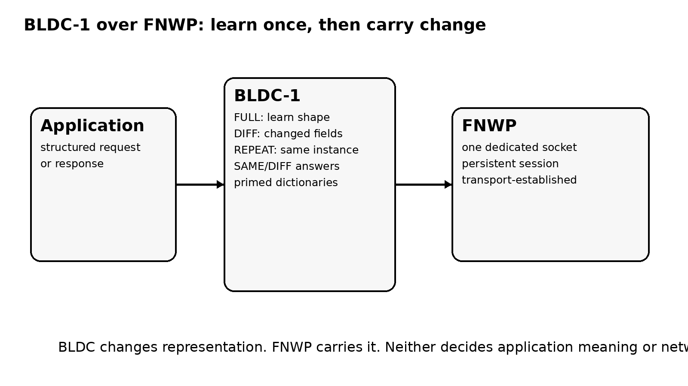
BLDC-1 changes representation. It learns an instance shape. A message with no matching shape goes RAW; the first message of an instance whose shape is known goes FULL, carrying all its values; a DIFF follows when fields change, and a REPEAT/SAME form when the learned instance is unchanged. A primed dictionary supplies the shapes in advance, but the first message of each instance still carries all of its values, because there is nothing earlier to diff against; on the FD&F data path the dictionary made no measurable difference to bytes. BLDC-1 does not decide what a tuple means.
FNWP carries the representation. It is the wire: length-prefixed, opcode- and sequence-tagged frames carrying BLDC-1 exchanges over a socket it does not open. Whoever opens the socket decides where it goes — under FD&F each participant program opens its own session to the RAM manager; FrogNet's compatibility path opens them node to node; an application may open its own, as the Communicator does to its memory server, comms-ram (its media rides a separate wire, fnav, to comms-media). FNWP defines no application semantics, no routing and no connection.
0.4 FrogNet
FrogNet is the sovereign transport described in detail by the implementation sections of this Croakus. It can discover reachable peers, derive useful paths, adapt to heterogeneous bearers, survive partition, and split, heal, and merge without requiring an external Internet service. Those properties make FrogNet one implementation of the transport contract, not the owner of the Ribbit programming model.
This distinction corrects an older layering in which FrogNet Memory, UnREST, and the programming surface were described as features inside FrogNet. The demonstrated machinery remains useful; the architectural ownership changes. Shared-memory semantics belong to Ribbit. Semantic representation belongs to BLDC-1. The wire belongs to FNWP. FrogNet supplies the transport behavior beneath them.
The practical consequence is stronger than a rename: if a Ribbit application behaves correctly over both FrogNet and FD&F, despite their radically different transport behavior, then the programming model has demonstrated that it is not secretly coupled to one network implementation.
0.5 FD&F: Farinacci, Day & Fawcett
FD&F emerged from three investigations that became complementary once machinery caused by the old programming surface was removed: LISP separates identity from location; RINA separates networking scope from one fixed physical structure; Ribbit separates distributed computation from message choreography. FD&F asks what remains when all three separations are allowed to be true at once.
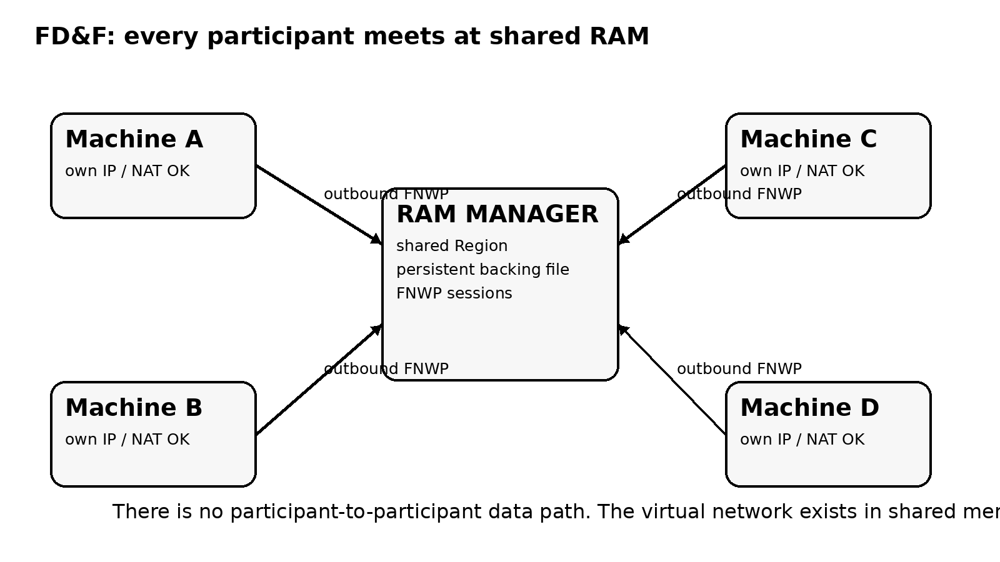
FD&F members are individual machines. A member may be on the same host, the same LAN, behind NAT, or across the Internet. Each has its own IP reality. Every member connects outward to the RAM manager. There is no participant-to-participant data path in the FD&F architecture.
The virtual network exists in RAM. A machine announces itself by writing its name, addresses, capability and facts. The participant list is a query over those announcements. Liveness is the machine's connection to the RAM manager. Application state and coordination live in the Region. Peer names and IPs may be known, but they are not used to create a second data plane. When FrogNet runs on an FD&F region, its 10/8 IP traffic rides WireGuard hub-and-spoke through the hub on the RAM manager's host (fdf-hub, interface wg-<AREA>, UDP 50889). The hub's peers and routes are written from the region's tuples, and nothing goes member to member across the Internet. Nodes on the same LAN still reach each other directly; on a region those LAN routes are FD&F's plan (fdf_graph, from the members' address rows), which FrogNet's tunnel daemon applies, and the walk does not run.
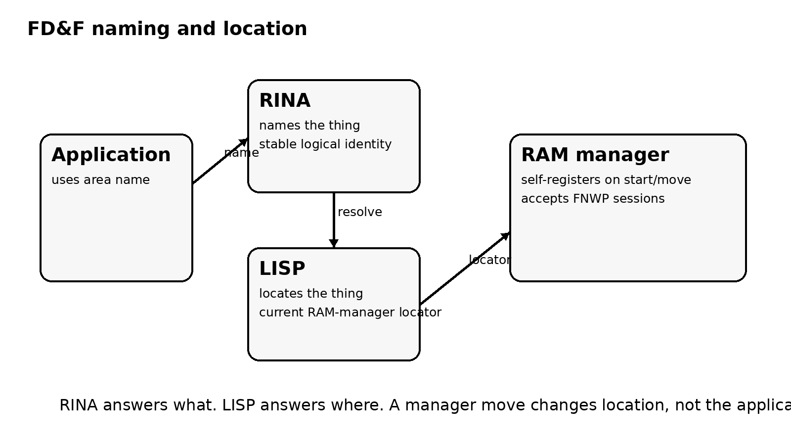
RINA names; LISP locates. A machine is given one thing: the area's name or the RAM manager's address. Given the name, LISP resolves the current RAM-manager location: the Map-Resolver's address is derived from the name (SHA-256 into 198.18.0.0/15) unless RINA_MAP_RESOLVER names one; it is never looked up in DNS; and the manager self-registers its mapping when it starts or moves. A FrogNet node is given an invitation that carries the address: fdf-region-join fdfinv1.<...> writes RINA_RAM=<host>:<port>, the hub's tunnel address the invitation carries (fdf-invite printed it), into /opt/fdf/var/join.env. There is no built-in region. A RAM-manager restart or move drops sessions. In name mode each participant re-resolves, reconnects, and reattaches, with no application reconfiguration. With a directly given address, as fdf-region-join gives it, there is no mapping to follow.
FD&F does no routing. Earlier experiments contained member forwarding, route derivation, route-change resend, NAT relay, LAN-join broadcast, host-change propagation, and a topology rig. Those experiments were useful data, but that machinery is retired from the current architecture because the new boundary made it unnecessary. Working code is not evidence that a responsibility belongs at a layer.
The RAM manager persists Region state to a plain disk file. It is not MySQL. There are no fallback paths intended to hide a failed primary mechanism; a fallback that guesses can make an architecture appear healthy while masking the defect under test.
0.6 What Is Demonstrated, and What Is Not
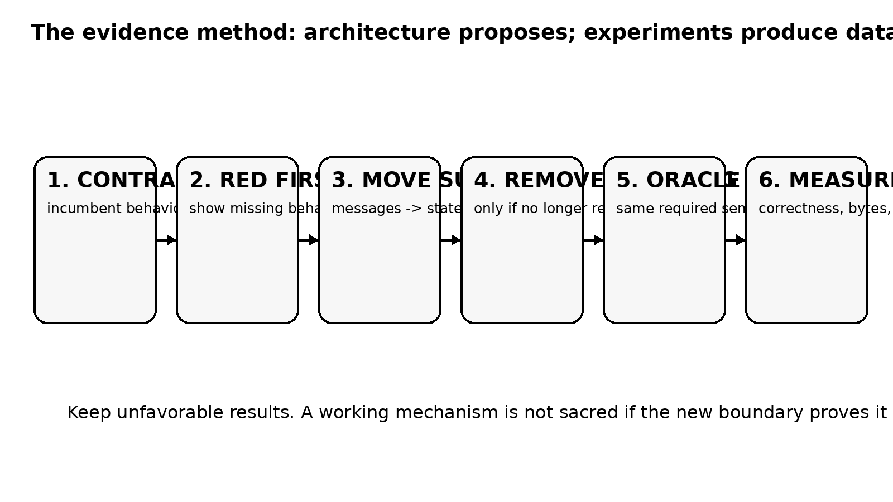
Architecture generates hypotheses. Implementations, tests, failures, fixes, packet captures, complexity counts, latency measurements, and incumbent comparisons generate data. The oracle determines whether those data satisfy the claimed invariant. The Croakus therefore separates specification from evidence and does not turn a successful experiment into a broader claim than it supports.
The current FD&F restart has the rlite 30-test integration surface green with flow data going through the RAM manager. One measured flow ran 300 transactions at 1.03 requests per transaction and about 520 microseconds per transaction, compared with about 22 microseconds on the earlier member-to-member path. That is an unfavorable local-path result and remains in the record.
Machines announce themselves and list one another from the shared space alone, with no packets between machines; when the RAM manager moves, all three test machines follow it through the LISP mapping and reattach within 73 to 182 milliseconds. On the data path, a flat single-unit send cut the frame from 111–117 bytes to 87–88 and the data-set bytes by 23 percent, and on the exact same 605 sends FD&F's C++ BLDC-1 is byte-identical to FrogNet's Python BLDC-1, 79.8 bytes on average. The current LISP mapping implementation agrees with the lispers.net oracle on seven of seven tested cases; a five-second TTL expired at 5.1 seconds in the Region implementation. Region Permanent records have survived a kill -9, and programs have reattached after RAM-manager restart with a reliable 200-of-200 flow. On real hardware: the kart race and a Communicator call (850x480 at 24 fps, 400–800 kb/s) between machines that cannot reach each other ran through the droplet on 2026-10-07; since 2026-10-09 John's FrogNet nodes run as one region with the RAM manager and hub on the droplet; a Windows PC joined as a bridge on 2026-10-11, and the Communicator ran on a physical phone, where a handset also joined and reached as a bridge (John's report). Not yet shown: FrogNet's 20 discovery topologies under FD&F's own discovery, and encryption of the sessions to the RAM manager on hardware (FNWP to the RAM manager is plain TCP, carried inside the hub's WireGuard tunnel: the RAM manager listens only on the hub's tunnel address, 10.253.253.254; FD&F's own cryptography is the HMAC on mapping registrations; FrogNet traffic through the hub and the bridges rides WireGuard).
Those results establish specific behavior. They do not establish provider-scale operation, arbitrary transport compatibility, universal performance superiority, or a general theorem that every distributed protocol should become shared memory.
0.7 Reading the Rest of This Croakus
The historical implementation chapters that follow are valuable because they contain the machinery, measurements, failures, and engineering rules from which the current separation was learned. Where older prose calls Ribbit semantics 'FrogNet Memory' or treats the programming surface as owned by FrogNet, this Part 0 is normative for the current architecture. The implementation remains evidence; the ownership boundary has moved.
The rule applied to every such passage is simple: preserve demonstrated behavior, preserve the data, and move only the responsibility that the evidence says was assigned to the wrong layer.
Specification A
Ribbit
Ribbit is the programming surface specified by this Croakus. It is independent of FrogNet and FD&F. A conforming Ribbit application coordinates through governed shared state in one or more Regions; it does not require the application to know the peer, path, route, or physical host that produced a truth.
R.1 Region Contract
A Region is a governed shared-memory space. Its API and schema define the meanings applications may address. Its policy defines authority, lifetime, backing, persistence, reconstruction, reconciliation, residency, and security as required by that domain. Ribbit does not impose one universal answer for those policies.
The schema remains tuple-shaped at the shared-state boundary. A vendor may expose objects, classes, containers, lists, domain verbs, or other abstractions above that boundary. The API may resolve those abstractions into tuples and may consult durable domain data. What is standardized here is the shared-memory contract, not a universal application object model.
R.2 Truth Ownership
The basic discipline is: determine your truth; write your truth; read the other truths; go. A participant writes facts for which it has standing. Governance may accept, reject, transform, expire, or derive state according to Region policy, but one participant does not casually renew or overwrite another participant's truth merely because both can see the same space.
This rule is intentionally stronger than last-writer-wins as a programming habit. Last-writer-wins can be a storage conflict policy where appropriate; truth ownership answers a different question: who is entitled to assert the fact in the first place? The Communicator exposed why that distinction matters: one participant's heartbeat rewrote a shared membership row and reinstated a member who had left.
R.3 Operations
A conforming implementation MUST provide the semantic equivalents of write and read. It MAY provide pattern reads, held reads, watches, expiration, durable records, and domain-specific operations. Current reference implementations use all of these. The exact language signatures are deliberately not standardized by this document.
/* conceptual Ribbit surface */ write(region, tuple, value) // assert owned truth read(region, pattern) // obtain current matching truth hold(region, pattern, version) // wait until matching truth changes
R.4 Multiple Regions
An application MAY map several Regions at once. Mapping does not merge them. A family Region, a weather Region, a payment Region and a reservation Region can remain separately governed spaces while one application composes their results. This is a core isolation property: composition does not transfer ownership, policy, or membership between Regions.
R.5 Re-homing and Persistence
RAM is RAM. Moving or reselecting the backing host does not by itself promise that values move with it. If continuity, copying, durable recovery, consensus, reconciliation, or historical retention is required, the Region policy MUST say how it is achieved. A current-state Region whose owners can reassert truth may legitimately choose a different policy from a ledger, document store, reservation system, or bank balance.
R.6 Transport Boundary
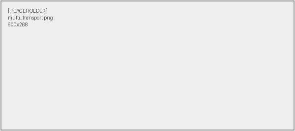
Ribbit binds to a transport contract, not to FrogNet internals, FD&F internals, IP routing, LISP, RINA, or InfiniBand. The current common contract asks the transport to answer six questions: Locate, Connect, Announce, Participants, Capability, and Change. Those definitions describe what Ribbit needs to know. They do not dictate how the transport obtains the answer.
A transport MAY route internally, as FrogNet does. It MAY avoid participant routing entirely, as FD&F does. It MAY use a fabric with completely different mechanics. Those choices remain below the boundary. A Ribbit application that must inspect routes or neighbors in order to perform ordinary shared-state operations is coupled below this interface and is not transport-independent in the sense claimed here.
R.7 Representation and Session
BLDC-1 and FNWP are adjacent reusable mechanisms, not synonyms for Ribbit. BLDC-1 represents repeated structured exchanges compactly using learned instances and FULL/DIFF/REPEAT/SAME behavior. FNWP is the wire the current implementations use: framed exchanges on a socket that the transport or application opened. A transport establishes or supplies the connection required by its contract; Ribbit defines the state semantics carried above it.
R.8 Conformance
Ribbit conformance is behavioral. A candidate implementation must preserve the Region contract and application-visible semantics while remaining ignorant of transport-specific route and neighbor machinery. The strongest current test is cross-transport: run the same Region/API/schema and application logic above materially different transports and show that only the transport binding changes.
FOR THE GUILD
Ribbit is not a distributed database product and it is not a promise of one consistency model. It is the programming surface that lets a distributed application address governed shared state. The Region says what that state means; the application says which truths it owns; the transport says how the shared space is reached.
Two doors. To talk about it — this book lives in a public repository and its Discussions are open at github.com/FawcettJohnW/FrogNet-Living-Network/discussions; no licence is needed to argue there. To build on it, take it: fawcettinnovations.com/download.html — free software under the GNU GPL, version 2 only (GPL-2.0-only), no licence to request and no form. What you build on it and distribute is GPL-2.0-only too; that is the deal. Questions are welcome and nothing depends on them.
Specification B
FrogNet
FrogNet is the sovereign transport specification. The following historical implementation Parts are retained because they define and demonstrate its discovery, routing, bearer, election, partition, healing, region membership, security and operational behavior. Where those Parts describe shared-memory or semantic-wire machinery, they are documenting the FrogNet-hosted implementation of Ribbit, BLDC-1 and FNWP rather than redefining those upper-layer contracts.
Part I
FrogNet: What the Sovereign Transport Does
Before any of the mechanics, here is the point of all of it — what you can actually do with a FrogNet, told in examples. None of this is a roadmap; each of these uses mechanisms the system runs today. Read this part for the ideas; the rest of the book is how they are built.
1. The Idea, in One Page
WATCH
Welcome — the origin, the habits, and where the series goes
A FrogNet is a sovereign network you own outright: machines discover one another, derive usable paths across whatever bearers exist, and continue operating as physical connectivity changes. A cable, Wi-Fi, radio, or an Internet tunnel can all be part of the substrate. FrogNet owns that transport problem: discovery, reachability, routing, mobility, split/heal behavior, and the operational roles required to keep the fabric alive. Applications do not have to inherit those mechanisms. When Ribbit is used above FrogNet, shared state, BLDC-1 semantic representation, and the FNWP wire remain separate layers with their own contracts.
Underneath that description are two ideas that this edition now keeps separate. FrogNet keeps the transport alive. Ribbit lets applications above that transport share what they know instead of programming every conversation. A Ribbit value is written into a Region and whoever needs that truth reads or holds on it. FrogNet may carry that exchange, but the shared-memory programming model is Ribbit, not a property applications must inherit from FrogNet.
The order matters. FrogNet is a transport before any application maps a Region through it: it discovers what is around it, organises itself, derives routes, elects the roles its own implementation needs, adapts to available bearers, splits when physical connectivity does, and heals when connectivity returns. Ribbit can then use that transport, but Ribbit is not part of FrogNet and FrogNet does not define the shared-memory semantics above it.
One sentence follows from all of that, and it is deliberately not on this page, because it means nothing until the machinery is under it. Here is the promise: if the network is memory, then a distributed program is just a program with threads — and you already know how to write that. Part XII½ is where that is argued, after you have installed a node, watched it find its neighbours, and read a value some other machine wrote. When you get there you will find that everything in between was an instance of it.
If that sounds like a small distinction, it is the same small distinction as the one between managing disk sectors and opening a file. We stopped doing the former and a great deal of code stopped existing. Distributed programming never had that moment. It is still writing conversations by hand — endpoints, retries, timeouts, schemas, queue topology, and a test double for every service you speak to.
This book is a working demonstration that the moment is available. Section 1a puts the mental model on a single page before any of the machinery; Part XI makes the argument properly, once you have seen what it is arguing about; the rest of the book is the machinery, from the hardware up. If you want the short version now: if your code depends on knowing where the data came from, you cannot properly mock or simulate it — and everything FrogNet does follows from taking that seriously.
And it is invisible
One consequence is worth stating on the first page rather than saving for Part XII. The application attack surface is very small, by construction. There are no discoverable application endpoints and no exposed application protocols — a scanner sweeping for something to talk to on the application layer does not find one. That is a scoped claim about applications, not a claim that a node presents nothing at all to the network. On a FrogNet node the listeners are the node's own machinery (its proxy on :80, its web server on :8080 and :8443, its daemon on :9009, and dnsmasq's DNS and DHCP on its own .1) and, on a node that hosts the Communicator, its memory and media servers (comms-ram :8800, comms-media :8994). An FD&F region is the same by design: its RAM manager is a listener every participant connects up to (rina-host on TCP 51888, on the hub's tunnel address 10.253.253.254 only), and from the Internet the region host answers nothing but the hub's WireGuard port (UDP 50889).
That is not a hardening measure and it is not obscurity. It falls out of the shape: a system whose programs share memory instead of calling each other has no application doors to leave open, because it never needed doors. In the same breath: FrogNet implements no cryptography of its own. Bearer confidentiality is WireGuard’s, supplied by you. What the architecture reduces is reachable application surface; what it does not do is encrypt anything.
The names and the boundary
The current architecture uses distinct names because the responsibilities are distinct.
- Ribbit — the programming model and Region semantics. Applications determine their truth, write it, read the other truths, and go.
- BLDC-1 — semantic representation: instance references plus FULL, DIFF, REPEAT, SAME and related codec behavior.
- FNWP — the wire: framed BLDC-1 exchanges on a socket someone else opened. Under FD&F each participant program opens its own session to the RAM manager.
- FrogNet — one transport beneath that stack: sovereign discovery, routing, mobility, split/heal behavior and heterogeneous bearer use.
applications
|
Ribbit meaning: API / schema / Regions
|
BLDC-1 representation: semantic codec
|
FNWP wire: frames on an open socket
|
FrogNet one possible transport
Older FrogNet releases called the shared-memory implementation ‘FrogNet Memory’ and used ‘UnREST’ as an umbrella name around several of these responsibilities. Those names remain in historical implementation passages where they identify actual code or measurements. They are not the current architectural boundary.
1a. The Mental Model
Before any of the machinery, one page on how to think about a Ribbit program. FrogNet is the transport used by the historical implementation in the chapters that follow; the programming model itself is Ribbit and is not transport-specific.
The programmer does not think in peer-to-peer client/server conversations. A RAM manager exists, and the transport must reach it, but the application does not choreograph a conversation with the participant that owns a fact. It reads a value from a Region or writes one there. The ordinary distributed question is which service do I call, and what if it does not answer. The Ribbit question is what is the current truth under this Region's contract.
Conceptually there are three operations, and it is worth carrying them in your head as you read the rest:
/* pseudocode -- the shape of the surface, not its signatures */ write(region, tuple, value); write what you know value = read(region, pattern); read what is currently true hold(region, pattern, version); wait until it changes
Those are conceptual operations, not fixed signatures. Current Ribbit work includes writes, reads, pattern reads, and held reads. A particular Region may expose them through Python, C++, PHP/HTTP, JavaScript, or a domain-specific API. The shape is the point: the application names state and meaning; the transport owns how the operation reaches the RAM manager.
A participant is like a thread that happens to be somewhere else. Several participants on several machines read truths the others wrote and write truths the others will read. The analogy is about the programming surface, not literal cache coherence: Region policy still defines ownership, lifetime, consistency and re-homing behavior.
Ribbit defines the distributed memory contract; applications define behavior. The application or vendor defines what the Region means through its API and tuple-shaped schema. Ribbit supplies the shared-memory abstraction. The selected transport supplies reachability.
The programmer thinks in terms of memory. The transport thinks in terms of communication.
That is the mental model. It is argued out properly in Part XI, with the fifty years of context behind it, what it costs to stop, and the test that settles whether a system has really raised the surface or merely renamed things. Everything between here and there is the machinery that makes it true — the hardware, the discovery, the compression, the elections. Read it knowing what it is in service of.
FOR THE GUILD
If that model is right, a great deal of received wisdom in this profession is not wrong so much as premised — true because programs talk to each other, and quietly conditional on that. Hand-tune your inner loops was correct until a compiler removed the premise. The same audit is open here, across every field and protocol, and almost none of it has been done: name a law in your own specialty, recover the assumption that made it true, and check whether this substrate still supplies it. Publishing “this one still holds, and here is why” is worth as much as finding one that has expired — more, arguably, because it tells everyone else where not to dig. That work needs no license, no install, and nothing from us.
Two doors. To talk about it — this book lives in a public repository and its Discussions are open at github.com/FawcettJohnW/FrogNet-Living-Network/discussions; no licence is needed to argue there. To build on it, take it: fawcettinnovations.com/download.html — free software under the GNU GPL, version 2 only (GPL-2.0-only), no licence to request and no form. What you build on it and distribute is GPL-2.0-only too; that is the deal. Questions are welcome and nothing depends on them.
1b. If You Already Have a Network
You do not have to migrate a network to FrogNet.
Most of this book reads as though you are building something. Most readers are not. They have a network already — twenty years of it, thousands of endpoints, a routing plan somebody left behind, and a standing rule that nothing changes without a change board. For that reader the first question is not what FrogNet does. It is whether adopting it means a migration, and if the answer were yes the rest of the book would be an interesting article.
It is not a migration. It is an insertion. Put a FrogNet node immediately below actual egress at a site. Existing hosts keep their addresses, their gateways, their applications and their internet connectivity. None of them takes a FrogNet agent. FrogNet adds its network alongside the network already there, and the network already there does not notice. Coexistence with an existing 10-space is argued, not yet proved in the simulator; Part VII½ says what the proof is.
before hosts -> switch -> firewall -> internet
after hosts -> switch -> FrogNet -> firewall -> internet
|
+--> every other site
changed on the hosts: nothing
Three consequences fall out, and they are the answers to the three objections an architect raises in order.
- You will never replace our network. Correct. Existing default routing stays intact, ordinary traffic keeps behaving ordinarily, and FrogNet’s routing is additive rather than substitutive.
- We have thousands of endpoints, and half of them cannot run your software. They do not have to. Inserting below egress means unmodified machines participate — including the printers, cameras, badge readers, controllers and untouchable legacy boxes that no per-host mesh can ever reach.
- We are already using 10-space everywhere. Fine. Address alone is not membership: a machine is reached through a FrogNet node, and a node is one that answers when discovery calls. FrogNet rides alongside your 10-space rather than claiming it.
So adoption is incremental in the only way that matters to somebody with a budget and a change board: one boundary, then another. A site becomes reachable through FrogNet without first replacing any of the infrastructure inside it, and a second site joins without the first one changing again.
That is the commercial shape of the thing, stated once and early because it is easy to miss. The mechanics, the caveats, and the outage that produced the narrowest rule in the system are in Plumbing It Into a Network That Already Exists, in Part VII½. Read that when you want to know how. This chapter exists so you know, before anything else, that you are not being asked to start over.
2. What It Lets You Do
WATCH
What It Is — what you are about to build, and what it is not
Watch and act on the far side of the world, live.
Put a sensor and a switch on a box in one city and a screen on a box in another, and they share one live data layer as if they were on the same bench. On April 17, 2026, Dan pressed a control in a web app on his bench in New York; the command crossed to a database 2,400 miles away in Seattle, and a physical actuator — a lamp — back on his New York bench threw. The whole loop ran over FrogNet, no cloud anywhere in it. That is the shape of it: read a sensor on the other side of the planet, decide, and drive something in the real world, in real time, with the data never leaving hardware you own.
See live video from anywhere on the network.
Any camera on any node is reachable from any other node — a doorway at the shop, a calf in the barn, a face on a call — as live video, with no account anywhere and no service outside hardware you own: the call's memory and media servers (comms-ram, comms-media) run on one of your own boxes. And because the media is adaptive, a feed on a failing link does not freeze and die the way a normal video call does; it steps down — full video, to smaller pictures (down to 160x120), to audio only — and climbs back when the link recovers. You keep a picture as long as any byte can get through.
The mechanism is more interesting than the ladder, and it is the reverse of what most stacks do. Audio and video ride independent connections, so a voice packet never waits behind a video frame. Video that could not be sent when it was fresh is discarded, not queued — a backlog of frames is a backlog of pictures of the past. Keyframes are treated as what they actually are, recovery points, and are held and delivered ahead of everything else, because every frame after a lost one decodes against a reference that does not exist. And the rung is chosen by what the wire does, not by a bitrate table: the sender steps down when its frames back up or are dropped or its frame rate falls, and climbs only after clean seconds at full rate; the media server sizes each viewer's picture to that viewer's measured link. It has been measured on links where the arithmetic said video was impossible and the wire was carrying it anyway.
Underneath all of it is one priority that decides every tie: a conversation is the thing being protected. A dropped picture is a degraded call. A gap in a voice is a broken one. Part X has the ladder, Part XV has the machinery.
Take it into the field — mobile teams and remote experiments.
FrogNet does not need infrastructure to be there first, so it goes where the work is. Dan has driven a node trunk-mounted through Queens on a long-range radio, holding the link through buildings and the steel of the car the whole way — a mesh that moves. A field crew can carry a pond into a canyon with no cell service and still see each other, share positions, and coordinate. A remote experiment — an instrument rig on a ridge, a buoy, a weather mast — writes its readings into the shared layer and a researcher back at the lab reads them as they happen, then reaches back to change a setting. The lab and the field are on one network that happens to be spread across a wilderness.
Stretch one uplink across a whole area.
Say you have exactly one way to the outside world at a site — a single Starlink dish at the command post, the ranger station, the farmhouse. Plug it into one FrogNet node and the mesh spreads that one uplink outward over Wi-Fi and radio to every other node in range, and theirs in turn, so a whole camp or worksite or disaster area shares the one pipe. Traffic between the boxes themselves carries only differences, so the mesh's own coordination costs the shared pipe very little.
Replace a stack of subscriptions with hardware you own.
Family chat and video calls — the things you pay companies for every month — run on your own boxes instead, private, with no per-person fees and nobody monetizing you on the side; anything else that is shared state is one Region away. The boxes find each other and the apps are just there.
Keep an eye on someone without watching them.
A box at an aging parent's house with a few passive sensors learns the rhythm of a normal day — when she's up, when the coffee runs, when she moves through the house — and tells the family, over the private network, when the pattern breaks. No cameras, no recording, no company watching. Dignity intact, peace of mind up. The mechanisms run today; that product is not built.
Keep working when the internet doesn't.
A storm takes the towers; the power blinks; the internet is simply gone. Your phone's apps are bricks. The FrogNet boxes do not notice — each one is a whole network on its own, and any two that can see each other by Wi-Fi or cable mesh and share everything. When the internet comes back, the islands merge; each box re-asserts its own truth into the one shared space, and nothing has to be reconciled. The box that serves the network in good weather is the same box that coordinates a household, a worksite, or a rescue in bad weather.
Run real software over almost nothing.
Because the network sends only what changed, it carries a full web application over a link slower than a 1990s dial-up modem — a steady data feed that would be hundreds of kilobytes collapses to a handful of bytes on the wire. That is what makes the narrow-link examples above more than wishful thinking: the sensor feed coming off the ridge, the call that drops to audio instead of dying — all of it rides links that conventional software treats as unusable.
Put the intelligence where the data is.
A model running on a box in your own pond — not in anyone's cloud — can see every sensor on the whole mesh at once, reason about them in the context of whatever job you gave it, and act: write a decision, drive a valve, raise an alert. It keeps working with the internet gone, on local weights and live readings, and your data never leaves your network. Several such specialists, scattered across the mesh, share the same live layer, so each one is aware of what the others see without any of them reporting to a central server.
3. On the Record
None of the above is a mock-up. The load-bearing demonstrations below have been exercised on real hardware over real links; the other patterns above are built from the same mechanisms. The demonstrations are worth naming, because a claim with a date and a witness behind it is a different thing from a brochure. Most of the radio and field work is Dan's — the New York nodes, the long-range radio, the moving mesh are his bench and his car.
- The 2,400-mile loop (April 17, 2026). Dan pressed a control on a web app on his New York bench; the write crossed to the elected database in Seattle and an actuator — a lamp — on his own bench threw, the whole round trip riding FrogNet with no cloud in the path. A single shared data layer, coast to coast, behaving like one bench.
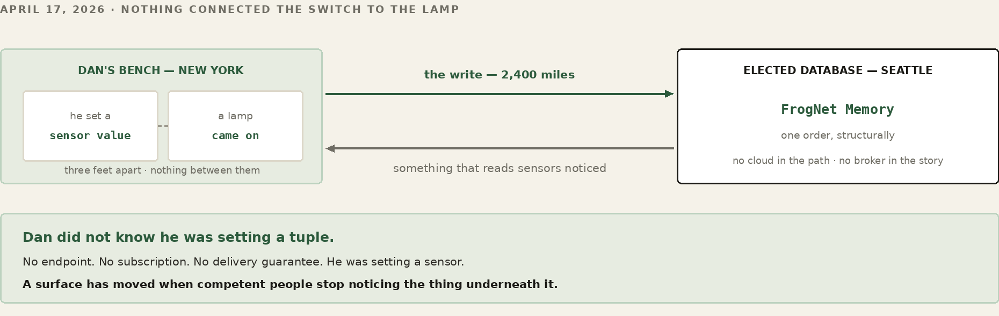
- A mesh that moves. Dan ran a node trunk-mounted through Queens on a 900 MHz HaLow radio, holding the link through buildings and the steel of the car the whole drive — the network re-forming on every walk as the topology changed underneath it at traffic speed.
- A call that rode the link down and back. A live two-party Song-of-the-Frogs call, carried over the New York 900 MHz radio backhaul, stepped the quality ladder all the way down toward audio under a contended link and climbed back to full video on its own as the link recovered — the adaptive media path proven end to end on the live mesh, not in a lab harness (Part X).
- And not staged. FrogNet has run as a home LAN for roughly a decade and across the open internet for two years — the same code described in this book, in continuous use, long enough that the failure modes worth designing for are the ones we have actually lived through.
Part II
Runs on What You Have
FrogNet imposes no hardware of its own. It is ordinary Linux software with ordinary dependencies, and the same release runs across a deliberately heterogeneous fleet — a five-dollar-a-month cloud instance, a credit-card ARM board, a laptop two generations past its prime. This part is short on purpose: it sets the hardware envelope before we get to the network, so you can provision from what is already on the shelf and spend your attention on topology instead of a bill of materials. One thing to carry into it: nothing in this part is chosen for the network’s benefit. A living thing takes the body it is given, and this one runs on whatever you have.
4. One World, Any Box
WATCH
Hardware — the boxes, the router, and what you already own that will do
A FrogNet node is standard Linux on standard hardware. The userland is Python, PHP, bash and C++ (the Ribbit platform and the FD&F binaries) riding the usual Linux services — a web server, a database, dnsmasq, WireGuard. There are no exotic dependencies, no custom kernel, no special silicon. If a box runs a modern Linux, it can be a frog. That means the boxes in one pond can be wildly different machines and none of them knows or cares:
- A Raspberry Pi (ARM) — cheap, silent, low-power. The right default for a node whose job is simply to be present on a segment: a leaf, a sensor host, a node that holds no heavy role.
- An Intel mini or an i7 (x86-64) — when a node should pull weight: hold the shared database for a busy mesh, run a local AI model, transcode media.
- A laptop, including a MacBook — a portable node you can carry into the field, running Linux on the same x86-64 or ARM the rest of the mesh speaks.
- An old x86-64 desktop — the tower in the closet. Slow is still a node; FrogNet does not need much.
The installer makes this painless. The release ships as one frozen world (you will meet it in Part IV), and if the box is ARM and the world was built on x86-64 (or the reverse), the installer rebuilds the parts that care — the Python environment — in place (a region member's FD&F binaries come prebuilt for its architecture, in the same download), so the same download stands up on an ARM Pi and an x86 mini alike. You do not keep a separate build per machine. One world, any box.
Mixing them is the normal case, not a special one. In hometown, HomeBase might be an Intel mini because it holds the database and faces the internet; ShopBox a Pi; MomBox whatever was cheap at her end. They are peers regardless of what they are made of. Where capacity actually matters — who should host the shared database — the network measures each box and elects the strongest fit on its own (you will see how in the Discovery part), so putting your beefiest machine in the mesh is enough; you never have to assign it a job. Capacity is a fact the network discovers, not a configuration you maintain.
Part III
Hooking Up the Network
Now the wires and the radios. Before regions and discovery and any of the clever software, there is the simplest thing two frogs can do: sit on the same link and find each other. The choices you make here — copper or radio, onboard chip or external antenna, a LAN on its own or a region whose host is across the internet — decide the shape and the reach of everything above them. Get the physical layer right and the rest of FrogNet just rides it. This is where the organism meets its environment. Everything after this part is FrogNet discovering what you built here and making the best of it — which is the first thing a living network does and the reason none of it needs a map.
5. The Wire and the Radio
FrogNet does not have its own idea of a network card. It rides whatever interface Linux presents — eth0, wlan0, a second wlan1, a USB adapter, a radio that pretends to be Wi-Fi. The discovery layer looks at the interfaces a node actually has, sorts out which faces the world and which face the local segments, and works with what it finds. That is why the connection method is your choice and not the protocol's. There are three worth making deliberately.
Wired Ethernet — the boring, correct default
If two nodes can be joined by a cable — directly or through a switch — do it. Wired is the highest-bandwidth, lowest-latency, most reliable bearer FrogNet has, and there is nothing to configure: cable the new box's uplink into the segment an existing node serves.
WORKED EXAMPLE — ShopBox joins HomeBase by cable
HomeBase is 10.80.80.1; ShopBox came up as 10.84.84.1. Run a cable from ShopBox's uplink port into the segment HomeBase serves. ShopBox takes a lease from HomeBase's DHCP, and the next walk on each box sees the other as an immediate peer through that lease. The two lillypads become one LAN. No region, no tunnel, no internet.
Onboard Wi-Fi — the node as its own access point
Every Pi-class box has a Wi-Fi chip, and FrogNet uses it two ways: it can join an existing network as a client, or project its own — stand up an access point so phones, laptops, and other nodes associate directly to it. You never write a hostapd config or a DHCP range for this. A small script, frognet-netstart, configures networking from the hardware state at boot and on every eth0 cable event. Cable in eth0: the identity address (.1) goes on the wired port, wlan0 is freed for upstream use, the access point stops. Cable out: the identity moves to wlan0, hostapd projects the SSID, and dnsmasq hands out addresses. A link watcher (ifplugd) runs it about 3 seconds after you plug in and 10 seconds after you unplug, so the box flips between wired and wireless-AP on its own.
WORKED EXAMPLE — Turning the projected SSID off, after the fact
You set the radio and country at install time; to change your mind later — keep a box wired-only so it never raises a network — you do not reinstall. Set it with the v4 setup helper; the helper applies it at once by running frognet-netstart:
frognet_setup_v4_helper.bash ssid_projection_set off # wired-only frognet_setup_v4_helper.bash ssid_projection_set on # project again
That writes /etc/frognet/ssid_projection.conf — the file the installer seeds from --no-ssid-projection — and the same control sits on the node's setup web page (Part IV). The helper changes only the SSID_PROJECTION line of ssid_projection.conf, so a chosen AP interface and country are kept. This switch governs only the radio the node projects its own SSID on (AP_IFACE, wlan0 unless you chose another).
An external router or radio — when you need power and range
The chip soldered onto a Pi is fine across a room and tired across a yard. When the distance grows — the workshop across the property, the barn at the far fence — stop asking the onboard chip to do a job it was not built for and put the radio outside the box. Three honest ways, all of which look like an ordinary interface to FrogNet:
- Wire an external access point to eth0. Run
eth0into a purpose-built router or AP with real antennas, and let that box do the radio. One firm requirement: it must run in access-point (bridge) mode, not router or NAT mode. Wheneth0has a cable the FrogNet node holds the.1and is the DHCP authority on that wire; the access point must take its own address from FrogNet's DHCP and bridge its clients onto the segment. A box left in router mode hands out its own addresses and fights the node for the wire. And note the one thing FrogNet cannot do for you: it has no way to set that router's SSID or password. Those live on the router — configure them from its own admin page, per its documentation. - Add an external adapter with a real antenna. A USB Wi-Fi adapter with a high-gain antenna shows up as
wlan1. FrogNet rides it exactly like the onboardwlan0— only farther. - Use a long-range radio that speaks Wi-Fi. A 900 MHz HaLow hat (the sub-gigahertz
802.11ahband) is rated for roughly two miles in clear air and presents to Linux as a standard Wi-Fi interface, so FrogNet rides it with no translation. For point-to-point reach between buildings, this is the tool. That physical reach is also a security boundary — to touch a node over the air you must be within range of it, the proximity the fabric leans on in Part XII.
New transports plug in below the line; nothing above the line moves. That sentence is the whole architecture, and it is why this is a physical-layer decision you make with a tape measure and a power budget, not a protocol decision.
The differentiator — transports multiplexed in one topology
Read that plug-in sentence again, because it is the key concept and it is easy to gloss over. Every other stack out there is defined by its transport — a LoRa mesh is LoRa, a VPN is its tunnel, ham packet is the audio modem carrying it. FrogNet is transport-independent, and more than independent: transports multiplex in the same topology. One machine is the tunnel gateway. Another is the 900 MHz gateway. A third reaches its upstream on eth1. One pond, one flat 10-net, and the fabric routes over whichever path reaches — no node knows or cares which bearer its neighbour used to arrive.
And the transport is not hidden away from the layers above — it feeds them. The transport feeds directly into the processing algorithms, and those feed discovery and routing. The walk proves every candidate over the actual link and measures the round-trip time the bearer actually delivers, so a destination reachable by wire, Wi-Fi, and tunnel at once carries all of its paths ranked — winner installed, fallbacks already behind it (Part V). The routing table is a live map of what every transport is worth right now — which is why adding a bearer, or losing one, is ordinary weather instead of a redesign.
The same property is what makes FrogNet mobile. A device does not care what the transport is, so when it comes in contact with another FrogNet it latches onto whatever medium is available — with no operator intervention in most cases. Dan's trunk-mounted node through Queens is this at traffic speed: a 900 MHz HaLow uplink held through the city while the same node served its own access point to sensors, with nobody touching anything. That is the differentiator with a human face: people do not have to be network or RF engineers to get things up and working in the field.
The whole causal chain runs in one direction, and it starts at the bearer:
transport independence
-> discovery & route optimization
-> route resilience & fault tolerance
-> system survivability
Each stage exists because the one before it feeds it. Survivability — the thing every other page of this book keeps demonstrating — is not a feature bolted on at the top; it is the last link of a chain that begins with refusing to care what the wire is.
That combination — any transport, several at once, measured and multiplexed in one topology — is not an evolution of the network you already have. It is the next generation of it. Connectivity is accomplished by transport, not the other way around.
6. Gateways, Children, and Peers
Every node sits somewhere in a small family tree relative to its neighbors. On a link, the nodes it touches directly are its peers. Below it, on segments it routes for, are its children, and their children are grandchildren. Above it, the node it reaches the wider mesh through is its parent. You do not assign these; they are just the directions the network runs in. Here is hometown drawn as the tree it actually forms:
WORKED EXAMPLE — The hometown topology
internet
│ (eth0 uplink)
┌──────┴───────┐
│ HomeBase │ 10.80.80.1 gateway, .1 of its LAN
└──┬────┬───┬──┘
wired/wifi │ │ │ WireGuard (via the region hub)
┌────────┘ │ └─────────────┐
┌────┴────┐ ┌────┴─────┐ ┌─────┴────┐
│ ShopBox │ │ sensor Pi│ │ MomBox │ 10.90.90.1
│10.84.84.1 │ AI NUC │ └──────────┘ (across town)
└─────────┘ └──────────┘
platforms, not nodes
The four scopes — Self, Lillypad, Chorus, Pond
Those family words point at one nested idea you meet everywhere in FrogNet: four scopes of reach, each wrapping the last. Self is a single node alone. Lillypad is a node together with everything directly attached to it — its sensors, its platforms, the phones and laptops on its segment. Chorus is a group of lillypads: the pond-wide chorus of all of them. (Named choruses, “family” or “ops,” were assigned by the broker; the broker is gone, and the current code defines no named chorus.) And Pond is the whole network, every node that belongs to it. A tuple, a service, a name is always published and read at one of these scopes, which is why the same word — “the database,” “a sensor” — resolves correctly whether you mean one box, one lillypad, one group, or the entire mesh.
Gateway machines
A gateway is a node with a way out that is not itself FrogNet — a real uplink, a non-10 address on one of its interfaces. HomeBase is the gateway here: its eth0 faces the home router and the internet. A gateway transits its entire downstream subtree, so a frog three segments down still reaches the world through it. A node that is not a gateway — a pure LAN-child — deliberately does not advertise the path back up through its own uplink, so the network never builds a loop out of a child trying to route toward its own parent.
Resolving names, and the default route
Two things are worth fixing in your head before discovery (Part V) makes sense, because they are how FrogNet coexists with the networking you already know rather than replacing it. The first is name resolution. The mesh's names live in /etc/hosts. Every node keeps its own; peer names, the floating databasehost.frognet, and each <role>.frognet service name all live there. The node's dnsmasq serves that file as DNS on its .1 and forwards each remote node's domain to that node (server=/<domain>/<ip>), both rewritten on every merge. Resolution of mesh names is local, instant, and always current for what the node can actually reach.
Discovery owns /etc/hosts. On every merge it writes the whole file: localhost, the FrogNetHost/FrogNetAdmin line for each node, and the .frognet role names. Off a region these come from the walk; on a region node they come from the region's facts. There the tunnel daemon's election also rewrites the file on each region event from the same facts, and both writers name the devices (phones, PCs). The write is idempotent and safe to repeat. Do not keep hand entries there.
The second is the default route: how a node gets off the FrogNet and out to the upstream — the internet, or whatever is out there. Discovery manages the 10/8 routes, the RTT-ranked winners and fallbacks from the walk, and it also keeps a working default route. A node with its own uplink keeps that default, dead defaults are removed, and a node with no uplink takes its default through an attached peer that advertises a live exit. Non-mesh traffic and ordinary DNS leave by that default. So both halves work at once: .frognet and peer names resolve locally from the hosts file, internet names resolve through upstream DNS over the default route, and a node's traffic splits cleanly between the two. FrogNet stands a self-organizing network up beside your normal one; it does not take the normal one over.
7. How a LAN Forms — and Splits
A LAN in FrogNet is not declared. It is the set of nodes that can currently reach each other without a relay or tunnel, recomputed from reality every time the reality changes. Nodes that come to share a segment form a LAN; nodes that lose their shared path split; and the same machinery handles both without anyone telling it which is happening.
WORKED EXAMPLE — Forming, then splitting
HomeBase runs alone. You cable ShopBox's uplink into HomeBase's segment; ShopBox takes a HomeBase lease, and on its next walk HomeBase finds 10.84.84.1 through that lease, proves it, and writes it into the hosts file. ShopBox does the mirror image. Within a walk or two each /etc/hosts carries the other and you have a two-node LAN — nobody configured a thing. Now the garage line falls out of the switch: neither box gets an answer next walk, each recomputes from what it can still see, each becomes a network of one again and keeps running. No error, no hang — a split is just a walk that returned a smaller world. The walk runs with a merge, and a merge runs on an event. The box whose own cable went out sees its interface change and merges at once. The box whose wire stayed up merges on its next event, because in LAN-only mode a neighbour going away is not one; until then its hosts file still names the gone node. Plug it back in and the next walk re-forms the LAN exactly as before.
The lesson for the operator: your connection choices are your reliability and your reach. A wired core that does not flap, with radio only where you need mobility or distance, gives you a LAN that forms once and stays formed. Lean on a marginal Wi-Fi link and you will watch the LAN form and split every time someone runs the microwave. Choose the physical layer up front, deliberately, and the living network above it has an easy life.
Part IV
Installing the Software
Hardware chosen, network planned, you are ready to lay down the software. A FrogNet node does not begin life on a network — it begins as a tarball, a whole little world sealed up, and an installer whose only job is to unpack that world and tell the box who it is. By the end of this part you will have a running node and you will know every file that holds its configuration. What the installer produces is not a configured member of a network. It is a node that knows only itself, and that is deliberate: what it joins, and how, is not written down anywhere for it to read. It goes looking. Part V is it going looking.
8. The World and the Installer
A FrogNet release unpacks to three files side by side: a world tarball, frognet_world.tgz, an installer, frognet_install.sh, and its counterpart frognet_reset.sh, which wipes the FrogNet install, state, identity and databases. The installer runs it itself on a box that already has FrogNet, so a reinstall lands on a clean machine; --preserve upgrades in place instead. This chapter is about the first two; you will be glad of the third the first time a build goes wrong. A repository checkout installs the same way with --from-repo, run from the checkout’s root: the installer copies the node file set from the checkout instead of unpacking a tarball. That is the path to a first node, because the release builder snapshots a node that is already running. The tarball is the entire userland frozen at a known-good build — daemon, proxy, discovery walk, web stack, bundles, every script. The installer lays that world down and then configures the few things unique to this box, after extraction, so it never overwrites your answers. You run it as root and answer a few things:
WORKED EXAMPLE — Installing HomeBase, the first node
sudo bash usr/local/bin/installer/frognet_install.sh --from-repo \
--name HomeBase \
--ip 10.80.80.1 \
--invite fdfinv1.<...>
- --name — what the node calls itself. A label for humans and hosts files, not its identity; the real identity is a GUID minted at install in
/etc/fnid, so a rename never confuses the mesh. - --ip — must look like
10.X.Y.1; the installer enforces the last octet. The.1is the contract: it is the well-known node of its segment, runs the local DNS, and is the address everything else is measured against. Give each node its own /24 so two never claim the same wire. - --invite — this node’s invitation to the region: the one line (
fdfinv1.<...>) thatfdf-invite NAMEprinted on the region host (Part VII). It carries the region’s site key, its RAM manager’s address, its name and this node’s WireGuard key. With it, once the install’s own checks have passed, the installer runs the FD&F node installer for this machine (opt/fdf/dist/fdf-install-<arch>.run) and the node joins the region. Leave the last line out and the node is LAN-only: a complete standalone network. A LAN-only node joins later with that same.run(fdfinv1.<...>) and leaves with/opt/fdf/bin/fdf-leave. - --lan-iface — the wired interface the node serves. Left out, it is the first wired interface that is not the uplink. The installer never serves the uplink, the interface the default route uses; if that is the only wired interface, it stops before it installs anything.
The installer also asks for the FrogUser database password, which every node in the pond shares (--db-pass), and, when it will project an SSID, the pond's one Wi-Fi passphrase (--wifi-psk).
Three more switches matter for the radio from Part III: --no-ssid-projection disables the access-point fallback, --ap-iface picks which Wi-Fi device projects it, and --country sets your regulatory domain.
9. What the Installer Does
WATCH
Installation, Part 1 — the installer run end to end, prompts and all
The installer works in phases, and each one prints its name as it starts (STEP D1, STEP A0, ...). Knowing them tells you where to look when something goes wrong. The whole log is /var/log/frognet_install.log.
- D1 — Interfaces, first. Finds the uplink and the wired interface to serve before anything is installed, so a wrong choice stops here.
- A — Reset and packages. Wipes a prior install (unless
--preserve), records the machine as it was before FrogNet (so--uninstallcan put it back), then the apt packages. It refreshes the package index every run. It chooses the WireGuard implementation once —kernelwhen the kernel has the module, elsewireguard-go, installed then — and records it in/etc/frognet/wg.impl; a later install keeps the record. - B — Pre-extraction setup. The iptables scaffold, directories and the sudoers entries the setup page’s helpers need, laid before the world.
- C — Lay down the world. Unpacks
frognet_world.tgz(or copies a repository checkout), applies the tree's kernel sysctls, mints the node GUID, injects the DB secret, and removes what the tree no longer ships (retired units, scripts, pages and settings, on an upgrade). Then the Python venv the services run on: rebuilt when it is missing or its architecture does not match the box (or with--rebuild-venv), and every listed package checked; a package that fails to build stops the install. Last, it runs the discovery self-check on the installed code and stops the install if it fails. - D — Clean and configure. Interfaces, stale state, database, web server, DHCP, NetworkManager, schema.
- E — Identity and provision. Name and address, hostname, the lillypad setup, the node’s own SSL certificate, iptables, SSID projection, the link watcher. No WireGuard key is made here: a region node’s key comes in its invitation, and fdf-region-join writes it when the node joins.
- F — Finalize. Enable services (on a LAN-only node the database-host elector’s timer too), logging, cron, then the verify: 26 checks, then the node’s own echo and snapshot, ending
All checks passed.orN check(s) failed.Then system tuning. - R — Region. With
--invite, and only when the verify passed, the FD&F node installer joins the region. Then the reboot.
When the box comes back up it is already a network — its own DNS, web server, database, daemon, and proxy — serving a dashboard and holding data with nothing else plugged in anywhere.
Telling a healthy node from a sick one
When a node misbehaves you have honest signals before you start reading code. frognet_monitor (Part XIII½, chapter 42c) is the first stop: it draws the node’s snapshot (getSnapshot.php: build, mode, members, hub link, elections, errors) and, per member, the live numbers — echo, round-trip time, cache-hit rate, bytes saved — so a node gone quiet or running a cold cache stands out at a glance. Underneath it, two probes mean different things and must not be confused: the echo answers only “who are you” — identity — and a node can echo perfectly while carrying no traffic; the liveness checks are the ones the walk runs: a reflect probe for a relayed path and the bidirectional :9009 ping-pong to the daemon for a direct or tunnel path. “The echo works” is not “the node is healthy.” And when you do go to the logs, read the whole journal rather than one unit — the proxy, the daemon, the tunnel daemon, and discovery each log their own half of the story, and a fault in one usually surfaces as a symptom in another.
10. Configuring from the Browser
Not everything has to be a command. Every node serves a setup web page that drives the same operations the command line does, through two small helpers (frognet_setup_helper.bash and frognet_setup_v4_helper.bash) behind it. This is the right tool for a non-technical operator and for the jobs you would rather click than type. From that page you can:
- Set the node's name and address, or let it pick a free one, and join it to a Wi-Fi network as a client, or leave one. When you save, the page shows a QR code of the node's new setup address, so you can scan your way back to it after the reboot.
- Toggle SSID projection on or off (the same control as the helper from Part III) and reboot the node.
Everything the page does, the helpers do on the command line too, so you can script any of it. The page is just the friendly face on the same machinery. Region membership is not on the page: a node joins a region with the FD&F node installer and leaves with fdf-leave (Part VII).
11. The Configuration Files
FrogNet keeps its configuration in a handful of plain files under /etc/frognet/, plus the node's identity and, on a region node, files under /opt/fdf/var/. You will rarely edit most of them by hand — the installer, the helper, and frognet-netstart write them — but for a reference, here is what holds what, and whether it is yours to touch:
FILE HOLDS YOU EDIT? /etc/fnid node GUID (permanent ID) no — set once /etc/frognet/ssid_projection.conf SSID on/off via helper/page /etc/frognet/ssid_projection.conf AP interface, wifi country at install /etc/frognet/wifi.env AP WPA2 passphrase (pond) at install (--wifi-psk) /etc/frognet/gateways.conf node name, its own .1 and .2 no — written by setup_lillypad /etc/frognet/wg.impl kernel or wireguard-go no — chosen once at install /opt/fdf/var/join.env RINA_RAM: the region switch no — fdf-region-join / fdf-leave /opt/fdf/var/site.env region name and site key no — fdf-region-join / fdf-leave /etc/hostapd/hostapd.conf.template AP template for netstart no — managed /etc/dnsmasq.d/*.conf DHCP + the .1 identity range no — managed
The one you will actually touch is ssid_projection.conf, and it has friendlier front ends — the helper and the setup page. join.env is the one file that makes a node a region member; fdf-region-join writes it and site.env, and fdf-leave removes both. The tunnel daemon’s WireGuard key, /var/lib/frognet-tunnel/node_private.key, comes in the node’s invitation and is written by fdf-region-join (the daemon makes one only if none is on disk). There is no tunnel.conf to keep: the tunnel daemon reads none, names in one log line any keys an old one left behind, and an upgrade removes them. The identity in /etc/fnid is set once at install and is the thing that lets a node be renamed, re-addressed, or re-homed without the mesh losing track of it; leave it alone. The rest are written by the machinery from the facts of the box and are listed here so that when you see them, you know what they are — not because you need to edit them.
12. Validate It in the Simulator
You have a node installed and configured. Before you trust its shape on a running mesh — before you cut the cable, mount the antenna, or hand a box to someone in the field — you can watch the whole thing converge on your laptop. The topology builder below models discovery and routing so you can check a shape in seconds. The real discovery engine runs against shapes in discovery/sim (the same self-check the installer runs before it activates a node), and the builder's shapes also run against a real kernel (below). Part XIII covers how that simulator proves changes to FrogNet itself; here we use it for the everyday thing — checking your own network before you rely on it.
Model your install and watch it converge
Describe your site as a topology — the nodes, the /24 each one serves, the segments they share, and the tunnels between them — and run it. The builder converges every node and hands you each node's exact result: the routes it installed, how many cycles it took, and whether every node can reach every other. If your real node came up with a route you did not expect, model the same shape here and the simulator shows you what it should have been.
WORKED EXAMPLE — A two-node site, modelled and converged
def topo_my_site():
t = Topology("my site: two nodes on a shared peering LAN")
t.add(FrogNode("gate")
.add_iface("eth0", "10.10.10.1/24") # the /24 this node serves
.add_iface("eth1", "10.10.99.1/24")) # the shared peering segment
t.add(FrogNode("shed")
.add_iface("eth0", "10.10.20.1/24")
.add_iface("eth1", "10.10.99.2/24"))
t.link(("gate", "eth1"), ("shed", "eth1"))
return t
# gate learns: 10.10.20.0/24 via 10.10.99.2 dev eth1
# every node reaches every other; converges in 2 cycles
Try a shape before you build it
The same builder lets you try a network you have not built yet. Chain three nodes, ring five, bridge two LANs with a tunnel, hang a dozen radios off one gateway — write the shape, run it, and see whether it converges cleanly and everyone can reach everyone. It is the cheap way to answer “will this layout work?” before you spend money on hardware or a day on cable. Twenty worked shapes ship with the simulator — pairs, chains, stars, rings, ponds, hub-and-spoke, mixed bearers, tunnel transits — so start from the one nearest yours and change it.
One rule the simulator teaches fast: keep gateways distributed and neighborhoods sparse. The single shape that does not scale is one node bridging everything — a star hub — because that hub processes every node on every cycle and becomes the bottleneck. Convergence itself is cheap: a wide shape converges in two or three cycles; a long chain takes about one cycle per hop (five for a five-node chain).
Prove it on a real kernel, without a live mesh
By default the simulator models the wire in memory — no privileges, runs anywhere, done in seconds. When you want the stronger check, the same shape runs against a real kernel: the harness builds one Linux network namespace per node, wires them with veth pairs and real WireGuard interfaces addressed exactly as your topology says, and runs the stock route code — the real ip and wg — inside each namespace. That is your install's exact behaviour on a real kernel, proven on one box, without ever touching the running mesh. A dry-run mode goes further and simply records the ip and wg commands it would run, so you can read the provisioning your node will perform before it performs it.
Part V
Discovery
Now the good part. A node knows itself and its LAN. How does a pile of boxes become one coherent network — no map, no administrator, no plan? It discovers itself. And the way it does that is the quietly clever bit: FrogNet uses its own web stack to do it. Discovery is HTTP to the neighbours' own web servers, sent past the local proxy so a walk never queues behind production traffic. This is the part where the network is alive in the plainest sense. Nothing here is told anything. A node looks, measures what it finds, and settles into a shape that nobody designed — and when the ground moves under it, it looks again. Everything in the rest of the book depends on that happening without anyone being asked.
13. We Eat Our Own Cooking
WATCH
Installation, Part 2 — first boot, run_merge, and routes appearing live
Two ordinary web endpoints do almost all the work. The echo answers “who are you?” — a node reporting its name, address, and the shape of its interfaces. getHosts answers “who do you know?” — returning the hosts that node has already discovered. Both are plain HTTP to the neighbour's port 80, sent direct and uncompressed (marked to bypass the local proxy). The round-trip measurement that ranks paths is the one discovery request that rides the local proxy. Discovery is FrogNet making HTTP calls to FrogNet.
On a node joined to an FD&F region the walk does not run. The region holds every member's facts, and fdf_graph turns them into a plan: who exists, which members share a LAN, and which go through the hub. The tunnel daemon installs that plan on each region event. It admits every planned route without a probe, and gates hub routes on the hub link's WireGuard handshake. The merge then names only subnets that have an installed route. Reflect, the :9009 ping-pong and the round-trip measure belong to the walk, off a region.
WORKED EXAMPLE — What getHosts hands back
GET http://10.80.80.1/getHosts.php
[
{ "ip": "10.80.80.1", "name": "HomeBase", "echo": "...", "role": "node", "alive": true },
{ "ip": "10.84.84.1", "name": "ShopBox", "echo": "...", "role": "node", "alive": true },
{ "ip": "10.90.90.1", "name": "MomBox", "echo": "...", "role": "node", "alive": true }
]
Off a region every host the last merge named is a node and alive. On a region node the list comes from the region (role and alive are the member's; a phone or PC reads role leaf), not from this node's walk.
That pays off twice. Discovery needs nothing from the bearer but IP, so it runs over any carrier the node has. And there is no second networking stack to maintain. The network discovers itself with the same web stack it serves applications with.
The proxy owns port 80
What makes “we eat our own cooking” literally true is a pair of services that come up with the node and sit underneath all of its HTTP: the proxy and the daemon. The proxy takes over port 80. HTTP to any 10/8 address — from an application, a browser, or a client on the lillypad — is redirected into the proxy. Discovery's own echo and getHosts are marked to go around it.
A request addressed to a FrogNet address — the 10-net — enters the semantic path: a candidate for compression and the established-socket transport. HTTP to anywhere outside 10/8 — the public internet, a printer on the house LAN — is never intercepted; it leaves by the normal route. The proxy sees only FrogNet-bound HTTP.
For a FrogNet-bound request, the proxy opens (and keeps) a socket to the destination node's daemon on :9009 and carries the exchange over it as FNWP frames. The daemon is the historical FrogNet worker pool that hosts the semantic codec and domain handlers. In current architectural terms, several responsibilities meet in this old implementation boundary: BLDC-1 learns and applies SAME/DIFF/FULL references; FNWP carries framed exchanges; FrogNet decides how the peer is reached; and domain handlers implement application-specific behavior. The daemon remains real implementation machinery, but it is not itself the Ribbit abstraction.
For a peer, the wire looks nothing like HTTP, and the two are kept strictly apart. HTTP is the protocol this FrogNet compatibility path intercepts locally. FNWP is the wire underneath the semantic exchange: framed SAME/DIFF/FULL on a standing socket that the proxy opened. In this historical FrogNet path it runs between peer-side machinery over established sockets and carries BLDC-1's FULL, DIFF, SAME and repeat operations. The application may speak ordinary HTTP at the edge; FNWP frames on the standing socket are the carriage underneath. FD&F uses the same separation differently: each participant's socket, and so its FNWP, terminates at the RAM manager rather than at another participant. That difference is transport policy, not a change to Ribbit.
Both come up as part of bringing a FrogNet node onto the network. The port-80 interception is deliberately a FrogNet compatibility mechanism: it allowed existing HTTP applications to benefit without adopting a Ribbit client API. It is not a Ribbit requirement and it is not how FD&F participants are required to operate. The general architecture is the narrower one: structured meaning enters Ribbit, BLDC-1 represents it efficiently, FNWP frames it onto a standing socket, and the selected transport supplies reachability.
14. The Walk
WATCH
Discovery Deep Dive — the walk, on a live mesh
A node builds its picture in waves, outward from itself. Wave one is everything it can touch immediately — the addresses on its own wire, its peers. Wave two is their children: it asks each peer, by getHosts, who it can reach, and reaches for those. Wave three is the grandchildren. The walk is bounded to a small depth, because past a few hops the relaying is someone else's job.
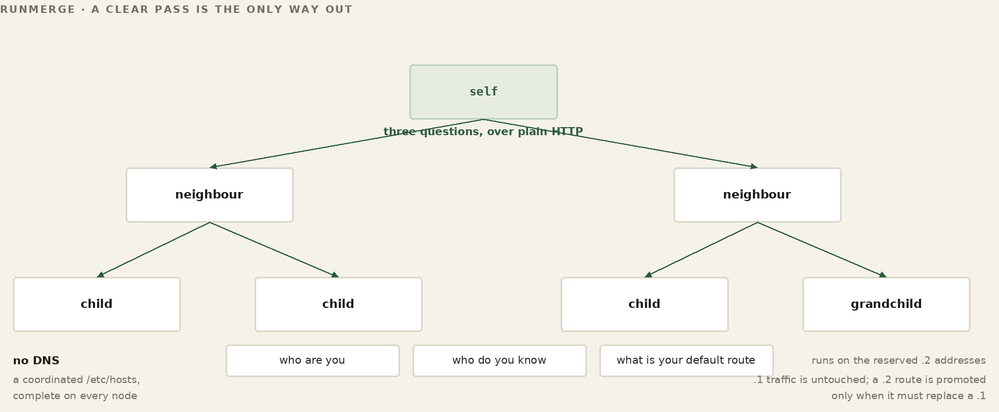
WORKED EXAMPLE — HomeBase walks hometown
wave 1 probe my own wire -> ShopBox 10.84.84.1 (peer) ✓ alive
wave 2 getHosts(ShopBox) -> ShopPi 10.84.84.50 (child of ShopBox)
wave 3 getHosts(ShopPi) -> (leaf) stop
write /etc/hosts, recompute databasehost, done
Each candidate is proved before it is trusted — a reflect probe for a path through a relay, a bidirectional :9009 ping-pong to the daemon for a direct or tunnel path — not an application health check. A node describes its own segment membership in its echo rather than letting anyone infer it from an address, so the picture is self-reported, never guessed. As the walk crosses from a peer to that peer's children it remembers the path it came in on, so the return route for everything below a peer is known, not assumed. A gateway, walked into, hands back its whole downstream subtree; a LAN-child withholds the path back up toward its parent. Those two rules — gateways transit down, children do not advertise up — keep the walk from folding into a loop.
.2 proves, .1 carries
A node's identity and all of its real traffic ride its .1 address — that is the wire everyone's live connections are on. Discovery proves paths on .2. For each destination it wants to test, it installs a temporary /32 route to a .2 address — a unique .2 per destination, so parallel probes never collide — sends its probe over that, and removes the /32 as soon as the probe finishes. Each destination that wins keeps a small .2/32 alias route beside its /24. (The round-trip helper, frognet_alive, asks only the address it is given, three times; a .2 is never answered by .1.) The doctrine, written into the discovery code itself, is four words: .2 proves, .1 carries. Probing on a separate address means a walk can run as often as it likes without perturbing a video call or a database write already in flight on .1, and it is why the host list quietly drops any .2 it sees — those are probe artifacts, not real hosts.
Winning routes, ordered by RTT — the network tunes itself
The walk does more than build a name list. As it proves each path it measures the round-trip time to the destination over that path — and a destination can be reachable by more than one path: directly over the wire, over Wi-Fi, by relay through a peer. The first time the node has no route to a destination, the fastest proven path wins and becomes the preferred route, and the slower paths are installed behind it as ranked fallbacks.
What happens on every walk after that is the part people expect to be different, and getting it wrong is how a mesh tears itself apart. The node does not re-rank. If the destination already has a winning route, and the far end answers over that route, the walk leaves it alone — no matter what it just measured. A path that turns out to be four times faster does not take over. The rule is one line long and it is absolute: if there is already a path and that path is healthy, leave it alone. Candidates matter only when there is no route yet, or the one you have is dead.
WORKED EXAMPLE — A faster path appears, and is ignored
walk 1 no route to 10.60.60.0/24
wired 18 ms -> WINNER
Wi-Fi 31 ms -> fallback
walk 7 a new, better link exists:
mesh 4 ms measured, logged, DISCARDED
wired 18 ms still answers -> HELD
PROMOTE_HOLD reason=incumbent_dot1_alive_leave_the_route_alone
This looks like leaving performance on the table, and it is — deliberately. The alternative is worse than slow. A route that re-ranks on every walk moves whenever two paths measure close together, and every move tears down live traffic: an open database connection, a video call, a transfer in flight. On a real mesh, where a Wi-Fi hop’s round-trip wanders by tens of milliseconds from one minute to the next, pure ranking does not settle. It oscillates, and it oscillates hardest exactly when two paths are equally good — the case where the choice matters least. An earlier rule let a challenger win if it was at least fifty per cent faster. The flat prohibition now runs first, because the correct number of times to disturb a working path is zero; the fifty per cent bar remains only for a route whose health could not be confirmed.
A route stops being held the moment it stops working — and the check is specific: the far end must answer over its own path, not over some other route that happens to reach it. The instant it does not, the hold releases and the ranked candidates matter again. So the ranking is not wasted work; it is the answer, prepared in advance, to a question that has not been asked yet.
The same ordering makes failure cheap. If the node behind a winning route drops off, there is nothing to recompute in the moment: you remove the first route, and the next-best path by RTT — already sitting in the table as a fallback — takes over instantly. The expensive work, finding the paths and ranking them, was done at walk time; the failover is a single deletion — and the fallback is trustworthy precisely because nothing has been quietly reshuffling it in the meantime.
WORKED EXAMPLE — Two paths to ShopBox, ranked by RTT
dest 10.84.84.0/24 — the walk found two ways there: via wire rtt 2 ms -> WINNER (preferred route) via Wi-Fi rtt 14 ms -> fallback (installed behind it) kernel uses the winner. if the wired link drops: remove the winning route -> the 14 ms fallback is already there and takes over instantly — no recompute, no outage.
Routes that come back
A walk that follows every neighbour’s neighbours will eventually be offered a route that returns through the node that asked. Installing it costs more than a wasted hop: it is a route to yourself wearing someone else’s address, and the traffic it attracts never arrives. So every candidate is tested before it is installed, and the test runs on the discovery plane rather than the production one.
The prober installs a temporary route to the destination’s .2 and asks it to reflect. The request carries two things — the origin’s address, and a counter that each forwarding hop increments. A hop declares a loop when it recognises the origin as one of its own addresses and the counter has moved. Both halves are required.
origin 10.160.160.1, counter c incremented per hop c == 0 at emission the originator must not flag itself c == 10 through strangers no address matches; nobody objects c > 0 and origin is mine -> LOOP, candidate dropped c >= 32 (default hop cap) -> LOOP among others, dropped
The counter alone says nothing. A probe that has crossed ten honest foreign nodes carries ten, and none of them match the origin, so none of them object. What the counter rules out is the originator objecting to its own emission, where the count is still zero. The hop cap catches what the first rule cannot see — a loop among other nodes that never comes back through us.
.2 is probed for a different reason than the one people assume. It is not that .2 reveals loops; it is that .1 carries live traffic, and a probe sent there rides the production plane and can block for its full budget behind a saturated database host. The probe route is torn down in a finally, so nothing outlives the question.
The reflect plane is not forwarded across a segment relay, so a node behind one fails reflect while its production .1 is perfectly reachable. For that case there is a second and independent detector on :9009: the far daemon examines the return address in the HELLO, and if it is one of its own, answers with an explicit loop frame. It carries no counter, because it does not need one.
A route that fails is never installed. It is dropped when candidates are selected, remembered for the rest of that merge so it is not re-offered, and dropped again at promotion if it arrives by another path. Nothing is remembered past the merge — a reassigned address gets a fresh verdict on the next pass.
WORKED EXAMPLE — Two seams worth printing
When the local-address lookup swallowed its own failure, the local-address test returned loopback only and loop detection went blind — silently, and precisely when the machine was already unwell. And when the daemon’s loop frame failed to send and the error was discarded, the prober saw silence rather than a verdict, so the looping candidate stayed eligible and was installed. Both are the same lesson in different clothes: a detector that fails quietly is worse than no detector, because the walk trusts it.
FOR THE GUILD
Each walk descends two levels, children and grandchildren. The next merge starts from the routes already installed, so a deeper chain is walked to its end over a few passes.
Two doors. To talk about it — this book lives in a public repository and its Discussions are open at github.com/FawcettJohnW/FrogNet-Living-Network/discussions; no licence is needed to argue there. To build on it, take it: fawcettinnovations.com/download.html — free software under the GNU GPL, version 2 only (GPL-2.0-only), no licence to request and no form. What you build on it and distribute is GPL-2.0-only too; that is the deal. Questions are welcome and nothing depends on them.
15. Selecting the Service Hosts
Once a node knows who is out there, it must agree with everyone else about which node holds each service the mesh needs in exactly one place. This is election, deterministic by design: for a given service, every node scores the same advertised facts with the same rule, so they all land on the same winner with no vote, no messages, no coordinator. A node advertises what it can do — cores and clock, installed memory, disk class, whether it runs MySQL — and the math does the rest. This is where the platform independence of Part II cashes out: drop a stronger box into the mesh and it simply wins the roles that want strength, because the network measured it.
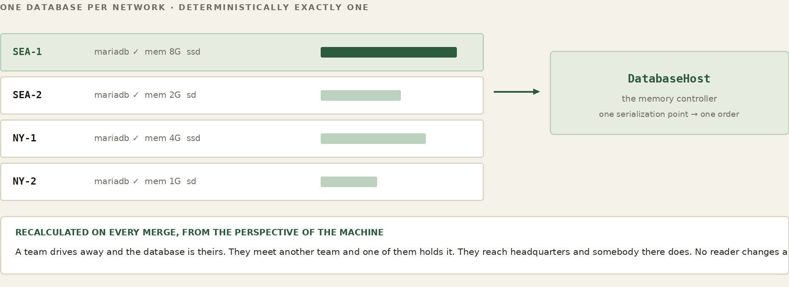
And election is not one central routine. In the historical FrogNet implementation, host selection is a service-handler extension point: virtual functions (you will meet the handler machinery in Part X): each service implements its own selector, so different services can choose by different rules. The role registry (core/role_registry.py) holds one role today, the database host. It scores static capability — installed RAM first, then disk class and CPU — among boxes actually running MySQL, with the highest address only as a tiebreak (Part VI). An earlier build also elected a media host among directly attached neighbours; it was retired with the old Python Communicator, and the Communicator’s calls go through its own media server, comms-media (Part XV), which is not elected. Every node runs a service's selector and reaches the same answer for that service — deterministic per service — and a second service would not be obliged to pick the same way. Adding a new kind of service host is writing one handler — its score and evaluate callbacks — and adding it to the role registry, not editing a central election.
The database host is chosen across the pond: every live .1 the merge sees is a candidate. Stability comes from what is scored: only static capability, so a box's score does not move with load, and every node computes the same winner merge after merge. One elected service is special enough to get its own part.
Part VI
The DatabaseHost
This part describes the historical FrogNet backing-store implementation beneath what is now specified as a Ribbit Region. FrogNet elected one reachable database host and resolved it through one stable name, databasehost.frognet. That mechanism is a FrogNet transport and deployment choice, not a requirement of Ribbit. The important architectural rule is the one the implementation exposed: changing the backing host does not imply that state moved with it. A Region may define reconstruction, reconciliation, or persistence policy, but Ribbit itself invents none of those semantics.
A FrogNet node runs in one of two modes. In LAN-only mode, which is what this Part describes, the walk finds the members, and each merge publishes capability to the control plane. On an FD&F region (fdf-region-join), FD&F owns membership: the members come from the region, each member’s capability is a fact the tunnel daemon probes (at start and every 600 s) and announces when it changes, and the elections read those facts, not the store. databasehost.frognet is the same name in both modes, chosen by the same scoring code.
FOR THE GUILD
An election is the service provider’s responsibility, and that is the invitation. FrogNet supplies the generic machinery — a role is live when a handler for it is registered; every live .1 FrogNetHost is a candidate for it, and the handler decides what “best” means. Two jobs follow. The framework has open questions: what a score should be made of so it does not move under load, how an incumbent should be held, what a merge should do. And every handler scores its own candidates, so a better score for an existing role is a real contribution — while writing the election for a new service is how a new role gets onto the fabric at all. If you are bringing a service, you are bringing its election.
Two doors. To talk about it — this book lives in a public repository and its Discussions are open at github.com/FawcettJohnW/FrogNet-Living-Network/discussions; no licence is needed to argue there. To build on it, take it: fawcettinnovations.com/download.html — free software under the GNU GPL, version 2 only (GPL-2.0-only), no licence to request and no form. What you build on it and distribute is GPL-2.0-only too; that is the deal. Questions are welcome and nothing depends on them.
16. One Name, A Moving Target
WATCH
Setting databasehost.frognet — the election explained, and why there is no continuity
On a FrogNet, the default Region’s shared scratchpad lives at one address: databasehost.frognet. A FrogNet application need not know which machine that is — it asks for the name, the local hosts file resolves it, the query goes wherever the name points. The rule for where it points is the election from Part V, with the database's own criteria: among the nodes actually running a database, the most capable wins. A database host is memory-bound — MySQL running is the hard gate, and past it, a weighted sum of installed RAM (the dominant term), disk class and CPU decides; the highest address only breaks a tie. Because every node scores the same measured, static capability with the same rule, they all compute the same winner and agree without anyone announcing it.
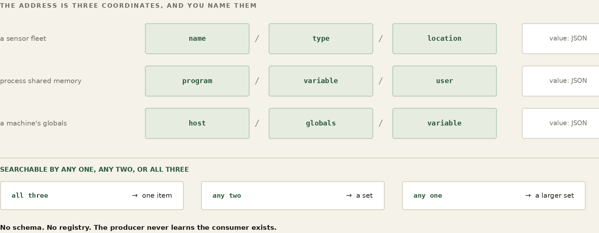
WORKED EXAMPLE — Who holds the database in hometown
candidates running mysql: HomeBase 10.80.80.1 Intel mini, 16 GB RAM, NVMe score 41 ShopBox 10.84.84.1 Pi, 4 GB RAM, SD card score 9 most capable wins -> databasehost.frognet = 10.80.80.1 (HomeBase) every node's /etc/hosts now carries: 10.80.80.1 databasehost.frognet
And here is what makes it living: that calculation is redone every time the topology changes. The merge — the same machinery that runs the walk — recalculates the database host and rewrites it into every node's hosts file on every pass. No TTL to expire, no nameserver to consult, no propagation delay. The instant the reachable set changes, the answer changes with it, on every box.
On a region the tunnel daemon runs the same election in-process on the region event that changed its input: a member leaving or returning, or a capability fact changing. A dead database host is elected around within a second, and the new answer is in /var/lib/frognet/view.json.
Reading and writing it — data on the URL
api.php is the application-facing API of this FrogNet Region implementation. Its tuple-shaped schema defines what an entity is, what an action does, and how a value is addressed. In current terms, that API and schema belong to the Region. FrogNet supplies the mechanism that reaches the elected backing host; another Ribbit deployment may expose a different API and backing policy without changing the programming model.
An application does not open a special connection or speak a special protocol to use it. It makes an ordinary HTTP call, and the data rides on the URL. FrogNet layers a small, custom query vocabulary onto one plain endpoint — api.php — where one parameter names the entity (the table, the kind of tuple), another names the action (read these values, write this row), and the rest carry the fields themselves:
read GET http://databasehost.frognet/api.php
?entity=sensors&action=values&SensorName=SD:barn/temp
write POST http://databasehost.frognet/api.php
?entity=sensor_data&action=upsert_by_name (row in body)
It helps to see what a tuple actually is here, because it is humbler than the word suggests: a named row. It is addressed by three coordinates: a name (a sensor's full name, like SD:barn/temp), a type that says which service or kind it belongs to, and the address the writer gives (empty when it gives none). Its value is a small blob of JSON — the reading itself, a timestamp, whatever the writer put there. You write a tuple by upserting it by name: post the row and it lands, created the first time and overwritten after. You read by pattern: ask for every tuple of a given type, or the one with a given name, and the matching rows come back. That is the whole data model — write by name, read by pattern — and the same store holds a barn thermometer's readings and the network's own coordination tuples side by side.
WORKED EXAMPLE — A barn sensor writes; the monitor reads
the barn-temp sensor platform, every few seconds:
POST api.php?entity=sensor_data&action=upsert_by_name
{ SensorName:"SD:barn/temp", SensorType:"sensors",
jsonData:{ value:54.6, ts:1719... } } -> one row, overwritten
a reader, on another box, pulls it back by name:
GET api.php?entity=sensors&action=values&SensorName=SD:barn/temp
(all to databasehost.frognet, through the proxy on port 80)
That reader is real. frognet_monitor, the network's info center, is a terminal dashboard. It lists the members in the node’s snapshot (getSnapshot.php) and shows each one's live telemetry: echo, round-trip time, cache hit rate and bytes saved. You can drill into a node to see its sensors and open a single reading in full. It reads by name in two calls, sensors/list for the id and then sensor_data/get for the payload, sent to databasehost.frognet through the proxy. It writes nothing to the store. It probes each node's frognet_echo.php itself. A sensor platform pumps readings in; the monitor, a dashboard, an AI each pull them out by name. Nobody addresses anybody — they meet in the shared memory.
And this is the seam where the historical FrogNet semantic codec picks up. In current terms, BLDC-1 treats those URL parameters plus body fields as structured input, retains the shared reference, and carries SAME, DIFF, or FULL over FNWP. The Region semantics and the wire representation are separate responsibilities even though the original implementation packaged them together under the name UnREST.
One value, and how old it is
In FrogNet’s default Region a tuple holds one value. Not the newest of several, not a version you can walk back — one. Whatever was written there last is what the next read returns, and the write before it is gone. The tuple keeps no history, no log, no revision. That is what the word transient is doing in the name. An application that wants a time series appends to the separate History entity (entity=history&action=append); that is its choice, not the Region’s default.
This store performs no consistency checking, and that is a decision rather than an omission. Agreeing on a value across a wide-area network with links that come and go is not impossible, but it is genuinely hard, and there is no case in this data where it buys anything. Sensor readings, node telemetry, presence, the live state of a call — all of it is current-value data, where the newest sample is the only one that matters and one missed sample among thousands means nothing. So the database does not arbitrate. It stores what it was handed and serves what it holds.
Which leaves the consumer to judge age, and the store hands it what it needs: every read comes back in an envelope carrying the time of the last write. If your application cares whether a reading is four seconds old or four hours old, that is where you look, and the rule you apply is yours to write. FrogNet does not decide how stale is too stale, because the answer is not the same for a soil probe and a video call.
FOR THE GUILD
The decision not to check consistency is a decision, and it is the kind that deserves an argument rather than agreement. It is right for readings and telemetry and presence -- data that is time-ordered, idempotent, and forgiving of a lost sample. It is not obviously right for everything somebody will eventually want to put here, and the honest position is that we have not met the case that breaks it yet. Somebody will. If you have worked on distributed state and you think the reasoning above is too comfortable, we would rather hear it from you now than discover it in a deployment. That is a guild job: not building a feature, but pressing on a decision until it either holds or names the case where it does not.
Two doors. To talk about it — this book lives in a public repository and its Discussions are open at github.com/FawcettJohnW/FrogNet-Living-Network/discussions; no licence is needed to argue there. To build on it, take it: fawcettinnovations.com/download.html — free software under the GNU GPL, version 2 only (GPL-2.0-only), no licence to request and no form. What you build on it and distribute is GPL-2.0-only too; that is the deal. Questions are welcome and nothing depends on them.
Names from other ponds
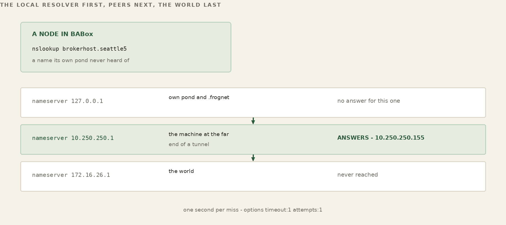
Everything above is one pond. The hosts file on a node carries what that pond converged on, so a name from another pond is not in it — ask a node in one city for a host in another and it has never heard of it. The tunnel carries the traffic; it does not carry the names.
/etc/resolv.conf names only 127.0.0.1 and the upstream, the default route’s next hop, if there is one. There is no public resolver behind it. A name from another pond reaches the right primary through dnsmasq. Each merge writes a server=/<domain>/<its .1> line for every FrogNetHost in the converged hosts block into /etc/dnsmasq.d/frognet_forwarders_auto.conf. It is written from the hosts block, the one place that names which .1 serves which domain. It is not read off the routing table.
The kernel cannot answer it. A FrogNet tunnel sets AllowedIPs = 10.0.0.0/8 without exception, which says “all FrogNet traffic goes through here” and names no pond at all. And an interface carries several /24 routes of which most are transit — ponds reachable through that tunnel rather than the pond at the end of it — so a node with three tunnels sees the same three subnets on all three interfaces. Both were measured on live nodes: the first derivation produced 10.0.0.1, which is nobody, and the second produced one nameserver for three tunnels.
One thing on the far side has to be willing to answer. Debian ships dnsmasq with --local-service, which replies only to queries whose source address sits on a subnet one of its own interfaces owns. A WireGuard interface carries a narrow address, so every cross-pond querier reads as non-local and is refused. dnsmasq says so exactly once — ignoring query from non-local network — and then goes quiet, which is the expensive part: one line in a journal and silent failure on the lookups the fabric depends on.
dnsmasq drops --local-service whenever interface= or listen-address= is configured, and a FrogNet node has both: interface= lines rendered from /etc/dnsmasq_conf_template, and listen-address=127.0.0.1,<self .1> plus bind-interfaces, which the merge writes. No distro file is edited.
17. Two Names, Two Planes
There is a second name, and until now this book has mentioned it only in the glossary. It is worth a section of its own, because it answers a question the floating database raises and then quietly steps over: if the database host is elected, and the election reads the facts nodes publish about themselves, then where are those facts kept? They cannot live on the elected host. You would be reading the candidates' resumes off the desk of the candidate you are about to choose.
So there are two names and two planes. databasehost.frognet is the one FrogNet applications use: the elected, floating data host, the shared working memory, the thing that moves when the network changes shape. databasehost_control.frognet is the coordination plane. It holds the SD: tuples: capability records, reach_plane, presence, beacons and the Services table. It holds no application data of yours.
Why one is elected and the other is not
The difference that matters is not what they hold. It is how each is chosen. The data host is elected on capability — measured, comparative, and therefore only knowable after you have read everyone's numbers. The control host is chosen arithmetically: it is simply the highest gateway address in the network — the highest address ending in .1, excluding the reserved 10.253 transit and 10.254 chorus ranges. No scoring, no candidates, no capability, no reading of anything. The filter is narrower than it sounds: the code selects on the fourth octet being .1 and on the address not being reserved. It does not separately verify that the box behind that .1 is a real gateway, and in a well-formed pond it does not need to, because .1 is always FrogNetHost in any subnet. On a region the pool is the region’s nodes only. A leaf’s address (10.252.x, the first of which ends in .1) is named in /etc/hosts but is never a candidate.
That is deliberate, and it is the resolution of the circularity. A rule that needs no information can be applied before any information has been gathered. Every node that can see the same set of machines computes the same control host, instantly, with no election and no messages — which means every node knows where to publish its capability, and where to read everyone else's, before any capability has been published at all. The coordination plane bootstraps itself out of arithmetic, and the data plane is elected on top of it.
WORKED EXAMPLE — The order of operations in a single merge
1 build the host block from what the walk proved
2 CONTROL compute the highest .1, with no election
3 FLOOR databasehost.frognet = the best mysql-running .1
per control's capability rows, holding a healthy
incumbent; the highest .1 if there is no
capability data
4 write the control line:
databasehost_control.frognet = highest .1
5 publish every role handler writes its capability
(LAN-only mode only)
6 ELECT every role's handler over control's rows;
if no databasehost is named, it pins to
the control
Step three is the part people trip over. Before any capability exists — a cold pond, first boot, nobody has published anything — the data name is floored to the same arithmetic answer as the control name, so a node that comes up alone is its own database host and everything works immediately. The floor is not the election; it is the guarantee that the name is never unresolvable while the election is still deciding.
Publishing to both
A node writes its capability to both planes, every time. Control is the authoritative copy — the one the election is required to read. The copy on the data host is a mirror, there so that ordinary tools, dashboards and anything else curious about the network can see what the mesh knows without reaching into the coordination plane.
The election is forbidden to read the mirror, and the failure that prohibition prevents is subtle. If the election read capability from the elected host, then the moment that host changed, the pool of candidates it had been reading from would change with it — and the next election would be scored off a different set of facts than the last one, for no reason connected to any node's actual capability. The winner would depend on the previous winner. Reading from a plane whose location is fixed by arithmetic breaks that loop.
This is LAN-only mode. On a region nothing is published to either plane for the election; capability is a fact in the region, and the election reads the members’ facts, so it never depends on a store on the host that just left.
Absent is an answer
The election does not wait. It runs on every converged merge. A live .1 that has not published is still in the pool, but its capability is unknown, so each role's own gate decides. The database gate (mysql running) refuses it. If no candidate qualifies, the name falls to the highest live .1. Every node reads the same store and the same converged hosts block, so every node reaches the same answer from the same absence.
If the election names no database host, the name pins to the control host. A lone box elects itself for every role.
In LAN-only mode a neighbour’s capability row can reach the control after the control’s merge has elected without it. For that, frognet-dbhost-elect.timer runs the same election on the control once a minute for ten minutes after each merge and, when the answer changes, rewrites /etc/hosts and reloads dnsmasq. On a region the elector stands down; the tunnel daemon elects from the members’ facts.
18. Split, Merge, and Why It Is Safe
Tear the network in half — the link between the house and the garage drops. The mesh splits into two islands, the merge fires on each side, and each re-elects its own most-capable database node. In LAN-only mode the merge fires on an event: a node’s own interface changing, a neighbour’s notification, or a merge request. A neighbour that went away is not an event, so a node whose own wire stayed up keeps the old answer until its next one (a test with no event measured 5 min 15 s).
When the backing host changes, the backing store changes. The distinction matters. FrogNet does not migrate, replicate, or reconcile the Region merely because databasehost.frognet resolves somewhere new. The newly selected machine exposes whatever state its backing policy provides. If continuity requires copying, reconstruction, reconciliation, or durable history, that is an explicit Region or application policy, not a hidden property of re-homing.
Write, then read. That is the whole detection mechanism, and it needs no coordinator, no notification service and nobody to subscribe to. A process keeps one entry of its own — its own name, its own timestamp — writes it, and reads it back on its next cycle. If what comes back is what it wrote, it is reading the same memory it wrote to. If the entry is missing, or carries a timestamp older than the one it last wrote, then it is not: the memory changed underneath it.
There is no announcement, because there is nobody who could reliably make one — the machine that would have announced it may be the machine that left. Each process finds out for itself, on its own schedule, by the same mechanism it already uses for everything else. A process that has just started has nothing to compare against and correctly detects nothing, because it has no stale state to worry about.
Nor is write-then-read the only way. A generation counter maintained by the store itself moves on every change from any writer; a name that resolves somewhere new is a change you can see without asking anyone. Different processes care about different things and can use whichever suits them. What they share is that detection is local — nothing depends on being told.
What FrogNet runs is one watcher in the frognet-daemon. Every 15 s it reads databasehost_control.frognet from /etc/hosts. When that changes, it re-publishes this node's capability (core/role_publish.py, core/frognet_host_reset.py). It does this in LAN-only mode only; on a region the publish returns at once. No application module is registered with it. An application detects the change itself, by write-then-read or by the store's generation counter. On a region the daemon also writes the new databasehost into /var/lib/frognet/view.json within a second of the change. The node-heartbeat hooks that the proxy and daemon call (NODE_HEARTBEAT_TS_V1) are not defined in the shipped core, so they do nothing.
And detection is where FrogNet’s involvement ends. What to do next is entirely the application’s, because only the application knows what its own state means — whether a half-finished thing should be abandoned or resumed, whether a cache should be dropped or rebuilt, whether anything is wrong at all. FrogNet does not guess. It tells you the ground moved, and you decide.
That sounds austere and it is the same instinct as everywhere else in this book. Automatic reconciliation would mean the platform inventing an answer about data it does not understand — and an invented answer that looks correct is the failure this system is built to avoid.
WORKED EXAMPLE — The database host follows the split
BEFORE databasehost.frognet = 10.80.80.1 (HomeBase, most RAM)
house<->garage link drops — two islands:
island A { HomeBase 10.80.80.1 }
most capable here -> databasehost.frognet = HomeBase
island B { ShopBox 10.84.84.1 }
most capable here -> databasehost.frognet = ShopBox
link returns — one island again:
most capable overall -> databasehost.frognet = HomeBase
Each island has its own database host, its own complete picture for the frogs it can still reach. Neither side pauses or errors; applications on both keep asking for the same name and keep getting an answer. When the halves rejoin, the merge fires again and the most capable among all of them wins. And — the decision the whole thing rests on — there is no reconciliation. Nobody replays a log, merges two histories, or negotiates whose reading wins. The old data ages out; new writes land on the new host because that is where the name now points.
That no-reconciliation policy is valid only for the particular FrogNet Region described here: current operational truths whose owners can reassert them and for which stale history is not the contract. It is not a property of Ribbit and it is not safe to generalize to arbitrary application data. A Region containing money, durable documents, reservations, or any state whose history matters needs an explicit persistence and reconciliation policy. FrogNet's current-state Region deliberately chooses reassertion instead of consensus because that matches this data's semantics.
One consequence is worth stating plainly, because it will bite anyone who assumes re-homing implies migration. The name moves; the values do not. Split off and become your own database host and you are reading the store on that box, which may contain state from an earlier period. Join a wider network and writes land on that Region's selected backing host; leave it and a different backing store may become visible. For the current-state FrogNet Region described here, the operational rule is therefore write before you read. Reassert the truth you own after the topology changes. Do not infer continuity that the Region policy did not promise.
This is the Part I promise — keep working when the internet doesn't — reduced to its mechanism. The storm takes the towers and the pond simply splits into the islands that can still see each other, each electing its own heart and carrying on; when the line comes back the islands merge and the name resolves wider again. The box that serves the network in good weather is the box that coordinates the household in bad, because to FrogNet the outage was never an error to recover from — only a smaller world for a while.
Part VII
Connecting Across the Internet
Everything so far stands on one local network, complete on its own. This part is how a pond reaches past the LAN: nodes that cannot see each other directly, and whole sites in different cities, joined over the internet. A node does it by being a member of an FD&F region (Specification C). One machine, the region host, does the work with two pieces: the region’s RAM manager, which holds the membership, and its hub (fdf-hub), one WireGuard interface with one peer per invited member. Every member’s one tunnel goes to the hub, and the hub forwards between them, so it is the transit point for every cross-site packet. Neither disturbs anything above: a tunnelled peer looks like just another interface, and the living network on top behaves as it did on one wire. A pond that reaches another pond is the same organism, larger. Nothing polls the region while it answers; the tunnel daemon acts on region events, and when the region is gone its routes, names and tunnel go with it. A node in no region is LAN-only, and needs none of this.
19. The Region
A single node is a network. Two nodes on the same wire find each other with no help. A region exists for the third case: nodes that cannot see each other directly. It is the one piece of FrogNet that can live in the cloud.
What the region holds
The region host runs three units. fdf-ram-<AREA> is the RAM manager, rina-host on TCP 51888 at 10.253.253.254, inside the hub’s tunnel: the region’s memory, where every member holds a session. fdf-hub is the WireGuard hub, UDP 50889, on the interface wg-<AREA>. fdf-client-<AREA> is the hub’s own membership. fdf-region-create makes all three (chapter 20).
The region keeps one record of its own per area: the area’s site key, written by map_site and kept permanently. Everything else lives as long as a member’s session. The session is the enrolment and the GUID in /etc/fnid is the identity. A member announces its facts through its session — name, GUID, /24, WireGuard public key — and it is alive while its session is up. The mappings that tell the hub which /24s a member serves are registered over the same session, signed with the site key, and they go when the session ends. A member that stops leaves the region with its session.
The hub is derived from those records alone. It has one peer per member admitted with an invitation, and it gives a peer a /24 only from a verified mapping that names this hub. A /24 has one owner in a region: the first live member to claim it. A later claimant is refused, and the hub logs REFUSED <subnet> claimed by .... Nothing is configured per member but its invitation, and the hub polls nothing: each change in the region is one event, and each event is one reconcile.
The hub stores none of the traffic it carries. Traffic between members at different sites crosses the hub: each member’s tunnel ends there, and the hub decrypts each packet, forwards it in the kernel and encrypts it onto the far member’s tunnel. So inter-site traffic is in the clear inside the hub host. On one LAN, members talk directly and the hub never sees a byte.
When the region cannot be reached, a member does not wait on it. Its tunnel daemon withdraws every route and name the region gave it, tears its tunnel down, and asks again every 5 seconds; when the region answers, the daemon reads it again and brings the tunnel back. The node keeps serving its own /24 the whole time. If the region host goes down, every cross-site link goes with it, because they all end there.
Where the region can live
The region host has one hard requirement: every member must reach it on UDP 50889, the hub’s WireGuard port; the RAM manager, TCP 51888, listens only inside the hub’s tunnel. Members open the tunnel; the region host never connects to a member. For members at different sites, behind home routers and NAT, that means a public address. For a region with no internet, any LAN address every member can reach will do.
Where you put it is otherwise open. Ours is a DigitalOcean droplet, StreamingFrog. Nothing about FrogNet requires DigitalOcean: any small VPS works, or a box in a colo, a home server with the hub’s UDP port forwarded, or a machine inside a corporate VPN for a private region. The region host is not a FrogNet node. It needs /opt/fdf (from fdf-droplet.tgz), python3, wireguard-tools, and wireguard-go where its kernel has no WireGuard module. One machine holds one region.
WORKED EXAMPLE — a region host, on a droplet
host a droplet with a fixed public IP: 203.0.113.7 (example IP) RAM fdf-ram-myarea rina-host, 10.253.253.254:51888 (in the tunnel), records /opt/fdf/var/area-myarea.perm hub fdf-hub WireGuard, UDP 50889, wg-myarea, 10.253.253.254/16 member fdf-client-myarea the hub's own membership key /opt/fdf/var/site-key-myarea root-only; printed once
Pointing a node at a region
A node learns its region from one file, /opt/fdf/var/join.env, which names the RAM manager: RINA_RAM=<host>:<port>. That file is the switch between the two modes. With it the tunnel daemon runs in region mode; without it the node is LAN-only. The area’s name and its site key are beside it in /opt/fdf/var/site.env. fdf-region-join writes both files, and fdf-leave removes both. /etc/frognet/tunnel.conf is not a source of anything now: if an old one is left on the machine, the daemon names its keys in one line and ignores them.
WORKED EXAMPLE — HomeBase's region files
# /opt/fdf/var/join.env — on HomeBase export RINA_RAM=10.253.253.254:51888 # /opt/fdf/var/site.env (mode 600) RINA_AREA=myarea RINA_SITE_KEY=<the site key from the invitation>
Joining a pond
In a region the pond is the region’s area. A node joins with the one line fdf-invite NAME prints on the region host, at install: frognet_install.sh --from-repo ... --invite fdfinv1.<...>. A node already installed LAN-only joins with the same file the installer runs, fdf-install-$(uname -m).run fdfinv1.<...>. It unpacks /opt/fdf, runs fdf-region-join, which writes the invitation’s WireGuard key, hub.json, site.env and join.env, starts fdf-client and fdf-facts, and restarts the tunnel daemon into region mode.
The node’s WireGuard key comes in its invitation: fdf-invite makes it on the region host and admits its public half to the hub, and fdf-region-join writes it to /var/lib/frognet-tunnel/node_private.key. The node’s fdf-client signs each mapping it registers with the site key; the RAM manager refuses one that does not verify. There is no pond password, no passcode and no group token.
WORKED EXAMPLE — Standing up myarea, then adding Mom
# on the region host
/opt/fdf/bin/fdf-region-create myarea 203.0.113.7
... prints the firewall lines and the site key, once
/opt/fdf/bin/fdf-invite MomBox
... prints MomBox's invitation, fdfinv1.<...>, once
# on MomBox, from the checkout
sudo bash usr/local/bin/installer/frognet_install.sh --from-repo \
--name MomBox --ip 10.90.90.1 \
--invite fdfinv1.<...>
A member with no tunnel of its own is still reached. In the region test (tools/netns-region-loop-test.sh), y, a child on z’s LAN with no tunnel, is reached from a over z’s LAN, z’s tunnel, the hub and a’s tunnel.
History. Until 12 October 2026 this chapter described the broker: a FastAPI service on its own port that registered nodes into ponds with an optional pond password, grouped them into choruses, and handed each node tunnels that ended at the broker. A broker could also run on a LAN, to lay a WireGuard shortcut across a long chain of relays. The broker, its installer, its console and its scripts were removed from the tree on that date. The region replaces it, and has no shortcut use: a member has one tunnel, to the hub.
20. Standing Up a Region
The node files left one value pointing at something you may not have yet. join.env names a RAM manager, and unless you are joining a region someone else already runs, nothing is listening there. This chapter builds it.
One thing is worth saying before the commands, because it changes how carefully you treat the machine. The region host holds the region’s memory and its site key, and every cross-site packet passes through its hub. Build it carefully: it is the one piece with a public address.
Deciding where it lives
There is exactly one hard requirement and it decides the rest: every member must be able to reach the region host by IP, on UDP 50889; the RAM manager on TCP 51888 is reached inside the hub’s tunnel. Members connect to it and it never connects back, so it needs no way into any member’s network — but it does need to be findable from all of them.
Internet-facing. Members sit behind home routers, phone tethers, office NAT — places with no stable address and no inbound path. The region host needs a publicly routable IP. A small VPS is the whole requirement. Ours is a DigitalOcean droplet; nothing about FrogNet cares which company rents you the machine.
Intranet-facing. Every member is already on one routed site — a campus, a warehouse, a ship. Any local address all of them can reach will do, and the region needs no internet at all. One machine holds one region; a second fdf-region-create on the same machine stops and says where the first one is.
Creating the region
Copy opt/fdf/dist/fdf-droplet.tgz from the checkout to the region host’s /tmp. Then, on the region host, as root:
apt-get install -y python3 wireguard-tools cd / && tar xvzf - < /tmp/fdf-droplet.tgz systemctl daemon-reload ip -o addr | grep '10\.253\.' ip route | grep '10\.253\.' /opt/fdf/bin/fdf-region-create myarea 203.0.113.7
The two greps must print nothing: the hub uses 10.253.0.0/16 on its interface. myarea is the region’s name: letters, digits, ., _ and -, at most 12, because the hub’s interface is wg-myarea. A . in the name becomes - in the interface: area my.area is served on wg-my-area, and that is the name the ufw route line prints. 203.0.113.7 is the address members reach this machine at. --ram-port and --hub-port change the two ports.
What it builds
fdf-region-create says each step as it takes it. It records the WireGuard implementation once (kernel, or wireguard-go where the kernel has no module: install wireguard-go first then). It makes the site key, 32 random bytes, and stores it root-only in /opt/fdf/var/site-key-myarea. It writes and starts fdf-ram-myarea, maps the site key on it with map_site, writes /opt/fdf/hub/hub.env (the only place that file is made), starts fdf-hub and fdf-client-myarea, and prints what each said. fdf-hub refuses to start on a machine where hub.env does not exist, and its journal says to run fdf-region-create.
It ends with the firewall lines and the site key, printed once:
ufw default deny incoming ufw allow 50889/udp ufw route allow in on wg-myarea out on wg-myarea ufw allow in on wg-myarea to 10.253.253.254 port 51888 proto tcp
Run them, or run fdf-region-create with --ufw, where the region host has ufw. Otherwise open UDP 50889 to the members, allow TCP 51888 to 10.253.253.254 on wg-myarea only, and let the host forward between the hub’s peers on wg-myarea.
That leaves one objection, and it deserves a straight answer. The RAM manager speaks plain HTTP and FNWP on its port, unencrypted, and it accepts map_site — the call that sets an area’s site key — from anyone who reaches that port. The port listens only on the hub’s tunnel address, so only an admitted member reaches it; a member’s mappings are gated by the site key, but its map_site is not. That is the exposure that remains, named in Part XII.
Updating the region host
A newer fdf-droplet.tgz keeps hub.env, the site key, the units and /opt/fdf/var:
cd / && tar xvzf - < /tmp/fdf-droplet.tgz && systemctl daemon-reload && systemctl restart fdf-ram-myarea fdf-client-myarea fdf-hub
Running it day to day
On the region host, fdf-ls lists the region’s members (name, alive, OS, cores, memory, IPs), and fdf-monitor --once prints one frame of everything the region holds about them. The RAM manager answers its build to version, and the hub logs its own when it starts:
/opt/fdf/bin/fdf-ls 10.253.253.254:51888 /opt/fdf/bin/fdf-monitor --once 10.253.253.254:51888 journalctl -u fdf-ram-myarea -u fdf-hub -u fdf-client-myarea -f
On a node, /opt/fdf/bin/fdf-leave leaves the region: it removes the region units and files, turns the database-host elector timer back on and restarts the tunnel daemon, which logs LAN-only mode: no region switch. The daemon’s WireGuard key is kept; a later join writes its new invitation’s key over it.
When the region host is lost
The members’ facts and mappings live in their sessions, so a lost region host takes nothing a member cannot announce again. What it takes is the site key and the address. Run fdf-region-create on a new machine, which makes a new key, invite each member there (fdf-invite NAME), and run each member’s .run again with its new invitation: the file is re-runnable. Each member announces itself on its new session, and the hub is derived again from those records.
21. The Tunnel
When two members need a link they cannot make for themselves — they cannot reach each other across the internet — the region gives each one a channel: a small description of a tunnel to build. The tunnel daemon builds it from the node’s invitation, one channel, to the region’s hub. A channel names the hub’s endpoint and public key, the node’s edge address on the hub’s network — 10.253.X.Y/16, the first free one fdf-invite gave it — the subnets reachable through it, and one constant: AllowedIPs = 10.0.0.0/8. The node turns the channel into a WireGuard interface, wgN, and the tunnel is up.
The endpoint and the key in that channel are the hub’s, not the far node’s. Every member peers with the hub, and no member holds another member’s key. So the tunnels do not run between two frogs at all: they run from each frog to the hub, which ends both and forwards between them. The hub is the transit point, and every cross-site packet goes through it. What that costs, and what an attacker gets for owning it, are the subject of Part XII.
The forwarding happens in the kernel. The hub turns on net.ipv4.ip_forward, gives each member’s peer its verified /24s as AllowedIPs, and routes each /24 via that member’s edge address on wg-<AREA>. Nothing at the application layer parses the packets, buffers them, or writes them anywhere. Each packet is decrypted off one tunnel and encrypted onto the next, so inside the hub host it is in the clear.
Two things about that AllowedIPs line carry the whole design. It is always the entire FrogNet range, never a narrower set: every tunnel is willing to carry any FrogNet address, so which tunnel a packet takes is left entirely to the route table, not baked into the tunnel. And the edge address in 10.253 is only the carrier addressing between the node and the hub — nothing lives there. The node’s identity and its real traffic still ride its .1, as on the wire; the tunnel is plumbing underneath it.
So the routes are the simplest thing that could work: dest dev wgN — the far subnet, out the tunnel interface, with no gateway at all. Because the interface accepts any 10.x — that is what AllowedIPs = 10/8 means — the local kernel drops the packet onto wgN, the hub forwards it out the matching member’s tunnel, and the far node’s kernel routes the inner packet onward. A peer reached by tunnel lands in the route table the same shape as a peer reached by wire.
WORKED EXAMPLE — A channel becomes an interface and a route
the region hands HomeBase one channel, to its hub: endpoint 203.0.113.7:50889 (the hub's, from hub.env) pubkey <the hub's public key> edge 10.253.1.1/16 (the first free edge fdf-invite gave) subnets 10.90.90.0/24 (MomBox's verified mapping names this hub) AllowedIPs 10.0.0.0/8 (carries any 10.x) the daemon brings it up as wg0 and installs one route: 10.90.90.0/24 dev wg0 metric 22 (no gateway needed) MomBox has the mirror of this toward the same hub. the hub routes 10.90.90.0/24 via MomBox's edge, 10.253.1.2, in the kernel. now 10.90.90.1 answers like any LAN peer. apps never know.
The tunnel daemon owns the lifecycle
Tunnels are not discovery’s job. A dedicated tunnel daemon owns them. On each region event it reconciles the kernel’s wg interfaces to the region’s channels, bringing up what is missing and tearing down what the region dropped. On startup it tears down dead leftovers so a reconnect always starts clean. It pointedly never runs wg-quick down to refresh a link, because that flushes every dev wgN route in a single syscall — and on a node that relays for others, that route table is most of what the node is. Instead it nudges the handshake back to life in place, leaving the routes untouched. That is why a tunnel can flap all day — internet links do — and the picture above it does not flinch.
On a region the routes are FD&F’s plan (fdf_graph), applied by the tunnel daemon. It installs a planned LAN route at once, because the member’s live session and a lease pair written by both ends already say the link is there. It gates hub routes on the WireGuard handshake: a dead handshake withdraws them at once. A route whose row merely vanished from the region is held for 60 seconds, and removed only if it is still absent then.
A LAN-only node holds no tunnel. Its daemon makes frognet0, tears down any WireGuard interface left from a region, logs LAN-only loop started, and waits; the merge’s bring-up stage finds no region and keeps the node free of WireGuard.
22. One Overlay, Many Sites
A channel carries more than the far node’s own wire. For each member, the hub carries every /24 that member’s verified mappings name: its own, and those of the hosts whose way out it is. So a single tunnel to the hub can carry a far site’s entire side of the world. Every /24 a node reaches through the hub goes out the same tunnel as dest dev wgN with no gateway; the hub routes it to the member behind it, and that member’s kernel routes the inner packet onward. Two LANs in two cities, each with one member tunnelled to the hub, become one 10.0.0.0/8 overlay — every node addressed by its .1, whether it is on the same switch or across the country.
WORKED EXAMPLE — Two sites, one overlay
two sites, one region, one hub: New York LAN Seattle LAN NY-1 10.102.60.1 --wg0-- hub --wg0-- SEA-1 10.133.144.1 NY-2 10.102.61.1 SEA-2 10.133.145.1 on NY-1 the hub channel carries Seattle's whole side: 10.133.144.0/24 dev wg0 (SEA-1) 10.133.145.0/24 dev wg0 (SEA-2, no tunnel; its way out is SEA-1) on the hub: both /24s via SEA-1's edge, the 10.253.X.Y fdf-invite gave it. NY-2 reaches SEA-2 at 10.133.145.1 as if it were next door.
Nothing above the route table changes. On a region the discovery walk of Part V does not run; the routes are the region’s plan, as the end of the previous chapter describes. The proxy forwards over wgN with the same FNWP-1 frames it uses on copper. Above the route table there is no local network and remote network; there is one overlay, and the internet is just one more bearer underneath it.
Ponds — more than one region
Choruses went with the broker. A node can take part in more than one pond: fdf-pond-add RAM_HOST:PORT AREA SITE_KEY holds one more session, to that pond’s RAM manager, all the time — presence, the pond’s shared memory and its notices. One pond is forward: its plan is the node’s routes, names and tunnel. fdf-forward AREA brings another one forward, and the tunnel daemon makes the switch in place, without a restart.
What keeps it private
Trust in FrogNet rests on a few plain mechanisms, not a security product bolted on top. Identity is the GUID minted at install in /etc/fnid. The session is the enrolment and the GUID is the identity, so a node can be renamed or re-addressed without becoming a stranger. Joining a region is the site key: each mapping a member registers is signed with it (HMAC-SHA-256), and the RAM manager refuses one that does not verify, so an invitation gets a peer on the hub and, without a verified mapping, no /24. The node’s WireGuard key, mode 600, is made on the region host by fdf-invite and carried to the node in its invitation, which is therefore a secret; the hub is given only its public half. Encryption covers what crosses the open internet: every member’s link to the hub is WireGuard, so traffic is encrypted on each leg between a member and the hub, and is in the clear inside the hub host. On a local wire you trust the segment you own — the node is the .1, the DHCP and DNS authority for its own /24, and nothing routes onto it without its say. Capability, not a password, decides who holds a role; identity and the site key decide who is in the region at all. The wider security they add up to, and where it stops, is drawn together in Part XII.
FOR THE GUILD
This part is the most conventional networking in FrogNet, which makes it the most immediately legible to anyone who already knows the ground — and the least forgiving, because a mistake here is a node that cannot be reached at all. If you know WireGuard, and you know address routing through tunnels, the open work is here: what happens on rekey, how a node that moves between bearers keeps its address, a region with more than one hub, and a map_site that checks who is asking. The region is exercised in network namespaces by tools/netns-region-loop-test.sh (in opt/fdf/src/fdf-source/rinab), which runs the real tunnel daemon against the real RAM manager and fdf-hub, so a change can be shown rather than argued.
Two doors. To talk about it — this book lives in a public repository and its Discussions are open at github.com/FawcettJohnW/FrogNet-Living-Network/discussions; no licence is needed to argue there. To build on it, take it: fawcettinnovations.com/download.html — free software under the GNU GPL, version 2 only (GPL-2.0-only), no licence to request and no form. What you build on it and distribute is GPL-2.0-only too; that is the deal. Questions are welcome and nothing depends on them.
Part VII½
Adopting It Where a Network Already Exists
One part, for the reader who is not building a network but already has one. The mechanics of inserting FrogNet below egress, what it leaves alone, and where the boundary of responsibility falls. Chapter 1b stated the headline; this is how, and what it costs to be wrong about it.
22b. Plumbing It Into a Network That Already Exists
Chapter 1b said the headline: you do not migrate a network to FrogNet, you insert one below egress. This chapter is how, and what it costs you to be wrong about it. Everything so far assumed you were building a network. Most people are not. They have one, it works, it has printers and badge readers and a PLC nobody has power-cycled since 2019, and the interesting question is not how to build a FrogNet but where to put one so the existing thing keeps working.
The answer is that FrogNet plumbs in just below actual egress. The existing machines become reachable across the 10-network without losing their internet connectivity, and without an agent on any of them. A handful of capable networking boxes, placed where the traffic already goes, and the site is on FrogNet.
Agentless is the whole difference
Every per-host mesh — Tailscale, ZeroTier, Netbird — requires software on each participant. That is a reasonable design and it works well, right up until the participant cannot take software. The printer cannot. The badge reader cannot. The camera, the PLC, the infusion pump, the ancient Windows box that runs the one program the business depends on and which nobody will touch: none of them are getting an agent, this year or any year.
Inserting below egress means those machines participate without being modified, because nothing about them changes. They keep their addresses, their gateway, their firmware. What changed is the box their traffic already passed through. Per-host meshes can reach a device that cannot take an agent through a subnet router, as an add-on. For FrogNet, insertion below egress is the default, not the exception, and that is the claim worth leading with.
But we already use 10-space
This is the objection that ends the conversation if you do not have an answer, because every enterprise of any size is already living in 10.0.0.0/8, and “we take 10/8” sounds like a demand to renumber the company.
The answer is that address space is coincidence, not membership. Being a 10. machine is not enough to make you a FrogNet host. You also have to answer the phone when discovery calls the daemon on :9009. The on-segment leg of discovery gates on the :9009 ping-pong, and a .1 that does not answer never becomes a neighbour and never gets a route. A negative verdict is not believed on one refusal either; the probe retries before concluding anything.
10.44.0.0/16 the customer's existing space
10.44.7.1 a switch. does not answer :9009.
-> never a neighbour, no route installed
10.101.100.1 a FrogNet node on the same wire
-> answers, becomes a neighbour, routes
So FrogNet routes ride alongside an existing corporate 10-space rather than swallowing it. Nobody renumbers.
Say it precisely and the pitch gets better
If answering the phone is the membership test, then a printer never becomes a FrogNet host. It is a machine on a FrogNet node’s LAN, reached through that node. Say it that way. “Your existing machines become hosts” invites the question “what are you installing on them,” and the honest answer — nothing, they sit behind a node — is the better story anyway. Precision costs nothing here and buys the room.
Where the boundary is, and whose problem is whose
Two questions come next in every one of these conversations, and both have the same answer: that side of the line is yours, and it always was.
Address conflicts in 10-space are the network administrator’s responsibility. If two sites both use 10.1.1.0/24 and both want their hosts reachable from the other, FrogNet does not resolve that and does not pretend to. Neither does any router you already own. Overlapping address space is an addressing-plan problem, it is solved with an addressing plan, and a fabric that claimed to make it disappear would be lying about something expensive. What FrogNet guarantees is narrower and worth more: it will not create the problem by helping itself to space you are using, because a subnet whose .1 does not answer never acquires a route.
One node does not mean one subnet per node. A FrogNet node serves a single /24 — that is its own segment, not a claim on yours. A site with twelve VLANs does not therefore need twelve nodes, because the thing that routes between those twelve is already installed and already working. Your layer-three switch, your VLAN manager, your existing default path: all of it sits below the insertion point and keeps doing exactly what it does today. FrogNet is downstream of it, carrying the site outward, and the site’s internal routing is not a problem it is trying to solve twice.
VLAN 10 10.44.10.0/24 -+ VLAN 20 10.44.20.0/24 -+-> L3 switch -> FrogNet -> egress VLAN 30 10.44.30.0/24 -+ (already (one /24 ... twelve of them routing) of its own)
Segmentation below the insertion point is not our business. Whatever VLANs, trunks, tags and access ports exist inside a site continue to exist and continue to do their job. FrogNet plumbs in below actual egress and works on the addresses that arrive there, properly resolved. It does not need to know how many broadcast domains produced them, and it does not ask you to re-tag anything. If the addressing is correct by the time traffic reaches the node, the local layer-two design is invisible to FrogNet — which is the outcome you want, because it means nobody has to touch it.
Both statements are limits, and both make the pitch stronger rather than weaker. An architect who hears “we handle overlapping ten-space” stops believing the rest of the sentence. An architect who hears “that one is yours, same as it is today” recognises somebody who has done this before.
What has to be proved before this is a slide
The WireGuard interface claims AllowedIPs=10.0.0.0/8 at the kernel level, so coexistence rests on two things holding: the incumbency rule that leaves a healthy installed route alone, and the negative cache that keeps a non-answering subnet from ever acquiring one. That is probably already correct. It is not yet proved, and around here the difference matters.
The proof is a topology where a node’s LAN overlaps a non-FrogNet 10-space, converged in the simulator, showing no installed route for the customer’s subnet. Five minutes to run. Until that exists, this chapter is an argument rather than a demonstration, and it is written here as one.
WORKED EXAMPLE — Why one failure never marks a host as not-FrogNet
The negative cache has a rule that looks over-careful until you know where it came from: one failure never marks a host. A timeout to a node address (.1 or .2) never marks it at all.
The module that keeps that cache had a docstring saying its flush ran at the top of every merge. The sentence was false from the day it was written. The stage it named did exist — and its entire body deleted rows from an unrelated table with no connection to the file at all. Nothing in the tree ever called the flush. A mark was therefore permanent for the life of the proxy process, and the docstring hid that for weeks.
Seattle3, 2026-08-08
09:02:09 one ECONNREFUSED, during a 2s restart of Seattle5
-> 10.250.250.1 marked not-FrogNet. permanently.
that address was the elected databasehost.
result every sensor upsert 503s
the capability tuple never lands
the databasehost floats away
One legitimate refusal, during a two-second restart, cost the network its memory. What followed: a mark now needs three consecutive definitive failures (refused, or no route) spread over at least 15 seconds, and every mark expires after 60 seconds so the host gets a fresh probe.
Part VIII
Sensors and AI Platforms
The capabilities in Part I — the sensors across the world, the offline AI — run on machines that are not, themselves, FrogNet nodes. They are platforms: separate boxes that install just enough FrogNet to reach the plane, then do their own work as clients of the shared database. This distinction is the one that trips people up, so this part draws it sharply. Growth again, in the other direction. A platform is not a smaller node or a lesser one — it is the organism reaching something it could not otherwise touch, and reading from it as though it were part of itself.
23. The Sensor Platform
Roles are held by nodes. Every live FrogNetHost (.1) is a candidate for the one role that exists, the database host, and the election picks among them on capability. A box that is not a FrogNet node cannot hold a role. (The Communicator’s media server, comms-media, is not elected: it runs where it is started.) What makes something eligible is what it can do, and that is the whole of it.
FrogNet nodes provide the infrastructure. A sensor platform uses it, and is not a node — it joins no election and holds no role. At heart it is an aggregator and a storage pump: it collects readings from the physical world and writes them into the FrogNet-hosted Ribbit Region as sensor rows, through the standard proxy path. That is the whole job. A typical one runs a fistful of cheap microcontroller boards over Bluetooth or Wi-Fi into a small concentrator — a Pi Zero — which batches and posts them up into the mesh. A radio bridge pulling a Meshtastic or LoRa mesh off the air and writing its packets in as sensor rows is the same shape. It does not need to be the database host; it does not run the apps that read what it collected. It pumps; everyone else reads. From there any node — or any AI — queries the readings by name, and one trickle of upstream bytes feeds dashboards, alerts, and reasoning alike. The frognet_monitor info center (Part XIII½, chapter 42c) is the reading end of exactly this — it pulls the Region rows back out by name, while the platform that wrote them neither knows nor cares who is watching.
24. The AI Platform
WATCH
Tuples and REST — the tables, api.php, and the backgammon case
An AI host is a machine running a local model harness — Ollama, on your own hardware, inside the pond, not in anyone's cloud. A Knowledge Pack frames the same harness into a specialist: a petroleum geologist for a wellfield, a hydroponic gardener for a grow room, an emergency-response coordinator for a disaster net. You tell it which sensors matter and hand it a small set of HTTP calls against the FrogNet-hosted Ribbit Region — list the sensors, read them, write observations and decisions back — with its writes fenced into its own namespace. There is no special AI plane; it is just another participant reading and writing tuples, exactly like the sensor platform, exactly like a dashboard.
Internet up, the model can augment itself; internet gone, it runs on local weights and live tuples and, where you permit, drives actuators on what it reads. Because every AI shares the same floating data layer, several specialists scattered across the mesh are aware of one another's observations without reporting to any coordinator — connected, they see each other's state through the shared database; partitioned, each works on local state; reconnected, each side can read what the other has written again. The contrast with cloud AI is the point: cloud AI sends your data out for someone else's model to judge; FrogNet keeps the data in your pond, runs the model on your hardware, and lets the output drive your actuators. Same capability, opposite custody.
This is two Part I promises at once. It is put the intelligence where the data is, literally — the model sits on the mesh it reasons about. And it is the gentler one, keep an eye on someone without watching them: passive sensors at an aging parent's house can write the rhythm of a normal day into the shared layer (the sensor platform, just above), a local specialist can read that rhythm and flag only the break, and nothing — no camera, no recording, no company — ever leaves the pond. The watch is a tuple read on hardware the family owns. That product is not built.
FOR THE GUILD
Both platforms have run. The sensor side ships in the tree; the AI host's wrapper ran in April 2026 and has not been brought forward to the current code. Neither is yet tuned to get the most out of the FrogNet-hosted Ribbit Region, and that is a care-and-feeding job rather than a rewrite. A platform that treats the memory as a database it posts to will function and will leave most of the benefit on the table: addressing so names sort into something navigable, writing at a granularity that makes a diff small, giving the codec structure it can learn, and knowing which values are current state and which are events that should not be in here at all. The sensor side has the widest surface for new device work. The AI side has the piece we would most like someone to pick up — the knowledge pack, where a named professional role gathers its lexicon, regulations and reference texts while it has the world, and then works without it. That is what makes autonomy mean resident expertise rather than a remote brain, and it needs no integration work, because an AI host is just another participant on the scratchpad.
Two doors. To talk about it — this book lives in a public repository and its Discussions are open at github.com/FawcettJohnW/FrogNet-Living-Network/discussions; no licence is needed to argue there. To build on it, take it: fawcettinnovations.com/download.html — free software under the GNU GPL, version 2 only (GPL-2.0-only), no licence to request and no form. What you build on it and distribute is GPL-2.0-only too; that is the deal. Questions are welcome and nothing depends on them.
Part IX
Ribbit Wire: BLDC-1 and FNWP
WORKED EXAMPLE — Ribbit meaning is separate from BLDC-1 representation, FNWP wire, and transport
Everything to here has shown FrogNet keeping a sovereign network alive. This part crosses the architectural boundary above that transport. Ribbit defines the meaning of shared state; BLDC-1 defines a compact semantic representation for repeated structured exchanges; FNWP is the wire that frames those representations onto a socket it does not open. The historical implementation grouped much of this under the name UnREST. This edition keeps the old measurements and code paths, but assigns each responsibility to the layer that owns it.
25. From Messages to Memory
WATCH
Tuples and REST, Part 2 — the tables again, deeper, and what a program actually sees
WATCH
Intro to Tuples — addressing memory by three keys
The implementation is handler-oriented. An exchange is processed by an object conforming to a common interface, with overridable behavior for representation and domain-specific work. Historically those objects were described as UnREST handlers. In the current architecture they are best understood as handlers above the Ribbit/BLDC/FNWP boundary: a handler may define application semantics, while BLDC-1 and FNWP provide reusable representation and carriage beneath it.
The web is built on messages. A client composes a request, ships the whole thing, waits; a server parses it, rebuilds context it almost certainly already had, composes a whole reply, ships it back. Every exchange re-states the world from scratch. Stateless by design — a choice that made sense when memory was scarce and links unreliable, and nobody has questioned since.
Ribbit changes the programming surface. The model has clear kinship with Linda — Gelernter and Carriero's tuple spaces, Yale, 1985 — where independent processes write values into a shared associative space and read them by pattern rather than addressing one another. Ribbit takes that decoupling onto a network and adds explicit Regions, ownership, held reads, application-defined API/schema, and transport independence. In older FrogNet builds this shared space was called FrogNet Memory and the programming/wire machinery around it was grouped under UnREST. Those names describe the historical implementation. In the current architecture the ownership is precise: Ribbit is the programming model and Region contract; BLDC-1 is semantic representation; FNWP is the wire; FrogNet or FD&F supplies transport. Two participants that share state need not re-send what both already hold. The wire can carry the difference and nothing else.
One boundary is worth drawing here so it is never blurred later: Linda matches arbitrary tuples by pattern, and says nothing about how many fields a tuple has or what they mean. The three coordinates this book uses — type, name, location — are FrogNet’s indexing convention, chosen because they fit the traffic, not something Linda requires. Borrow the model, own the convention.
I did not arrive at this by reading Gelernter. I arrived at it by missing something. Years ago I did engineering flight simulation for the Boeing Commercial Airplane Company, in autopilot and autothrottle development, and the autothrottle got what it knew about the rest of the aircraft off an ARINC 429 bus. You addressed the data on the bus and it was there. Not fetched from a service, not requested from whoever owned it — addressed, the way you address memory. Nobody writing autothrottle logic thought about who had produced a value, or where that box sat, or when it had last spoken. The bus carried current truth and you read the part you needed. I wanted that on a network for thirty years before I built it. FrogNet Memory was the first implementation it turned into; Ribbit is the abstraction extracted from that implementation. Linda is the formal statement of the idea; 429 is where I learned to want it.
26. The Accelerant — Semantic Compression
WATCH
Semantic Compression — pipe_workload, the byte counts, and BLDC-1 against FNWP-1
BLDC-1 is the semantic representation layer used by the current implementations. It is not Ribbit and it is not FrogNet. It makes repeated structured exchanges cheap by letting both ends retain a learned representation and carry only what changed. It runs three states over a learned template: SAME, DIFF, and FULL. The first exchange of a structure goes raw — the whole HTTP request and answer — and the sending proxy learns its template from it: its shape, which parts are fixed and which vary. The next exchange of that shape is the first FULL: every value, with no reference yet to diff against. After that the sender says SAME and sends almost nothing when nothing changed, and sends DIFF with just the changed values against the shared template. When the structure changes, the exchange goes raw again and a new template is learned from it.
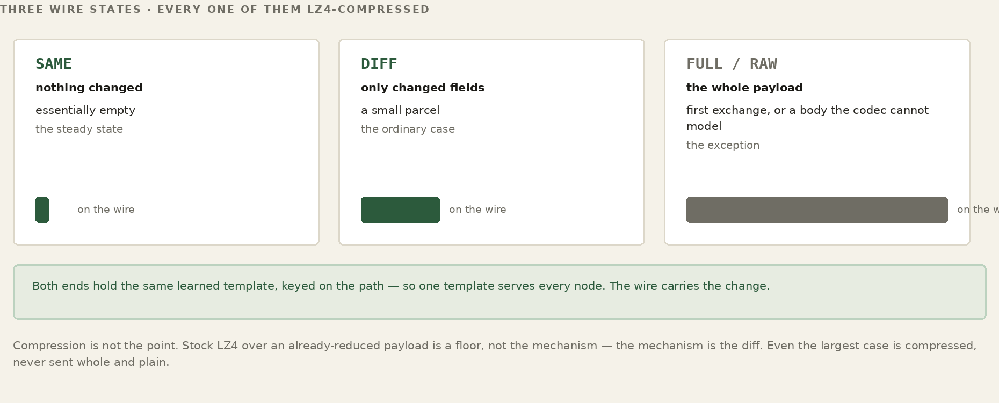
WORKED EXAMPLE — A sensor reading on the wire, four exchanges running
exchange 1 RAW the whole request and answer
both sides learn the template.
exchange 2 FULL the values, no reference yet
exchange 3 DIFF value->54.6 ts->... ~55 B
exchange 4 SAME (nothing changed) 21 B
The important separation is now explicit. Ribbit says what shared state means to the application. BLDC-1 avoids retransmitting representation the far side already retains. The socket under FNWP stays standing, so semantic state can be reused across exchanges. A transport supplies reachability. The layers reinforce one another, but none is defined by the others.
How a template is learned
The whole scheme rests on both ends sharing a template, so the obvious question is where the template comes from. Nobody writes one. It is learned from the first real exchange of its kind. The first time a given request or reply flows through — a sensor upsert, a getHosts, a particular dashboard query — the proxy looks at its actual shape and records a template: which parts are fixed structure and which are the values that vary, what type each varying field is (a string, an integer, a float, a boolean, a nested object), and the order they appear in, including any that ride on the URL. The far daemon uses the template its own node's proxy learned for the same key. Neither side sends a template. If the far side does not have one yet, it says so and the exchange goes raw again. Once both sides have it, only the values move.
A template has an identity, so the right one is always picked. It is keyed by the stable parts of the exchange — the operation, the fixed query keys and the set of body field names; a sensor write is keyed by its sensor type and metric — never by the values. Two barns’ temperature readings share one template; a humidity reading has its own. A brand-new temperature sensor rides the existing template the instant it reports: the template was learned for the shape and the metric, not for the specific sensor.
WORKED EXAMPLE — One template, many readings
first exchange of this shape -> RAW: learn the template
structure: { sensor:<str>, unit:<str>, value:<float>, ts:<int> }
fixed: the field names, their types, and their order
dynamic: the four values
second exchange -> FULL: every value, no reference yet
every later reading of the shape -> just the values, diffed:
value->54.6 ts->... (the template is never re-sent)
The cache — what each side remembers
“The reference both ends hold” is a cache, and it has layers. The closest layer is the reference values: for each peer, each kind of exchange and each instance of it — the location the message names — the proxy keeps the last canonical values it sent or received. That is what a DIFF is computed against, and what a DIFF is applied to — the memory that makes “send only what changed” possible at all. Above it sits a small in-memory cache of SAME answers: when a reply comes back SAME, the proxy serves the body straight from memory instead of going back to the database for something it already has, so a SAME answer is never re-sent or re-stored; the far side still runs the request to know that nothing changed.
Underneath, the learned templates are written to the node's own database and survive a restart. References and SAME answers live in memory only: after a reboot the first exchange of each kind goes FULL and rebuilds its reference. The cache is therefore split: templates durable, references hot. It is the same principle as everything else in FrogNet — keep the current truth close and reuse it — turned on the compression machinery itself. That the meaning lives in this local cache and not on the wire is also why a tap yields so little — the security consequence is taken up in Part XII.
FOR THE GUILD
The three states are settled. The numbers between them are not, and they were chosen once by somebody with one workload in front of them. Two floating-point readings count as changed when any bit differs -- should there be a tolerance, and should that be one answer, or one per field? A list is carried whole as one value however long it is, so one changed item moves the whole list; is that right? A payload is compressed with LZ4 and the compressed form is kept only when it is smaller, which costs a compression on every payload over 64 bytes; one codec, never compared against another. None of these is hard to improve. All of them need somebody to care enough to measure instead of assume, on traffic that is not the traffic they were tuned against. If that sounds like your kind of afternoon, the guild would be glad of you.
Two doors. To talk about it — this book lives in a public repository and its Discussions are open at github.com/FawcettJohnW/FrogNet-Living-Network/discussions; no licence is needed to argue there. To build on it, take it: fawcettinnovations.com/download.html — free software under the GNU GPL, version 2 only (GPL-2.0-only), no licence to request and no form. What you build on it and distribute is GPL-2.0-only too; that is the deal. Questions are welcome and nothing depends on them.
27. FNWP-1 — The Wire
WATCH
Proxy and Daemon — the intercept, the standing socket, the accounting
BLDC-1 decides what to send — a SAME, a DIFF, a full body. FNWP-1, the FrogNet Wire Protocol, decides how it travels: how those frames are packaged, how many conversations share a socket, and how the replies find their way home. If BLDC-1 is the language, FNWP-1 is the envelope and the postal system. It is what rides the established sockets from a node's proxy to each peer's daemon on :9009.
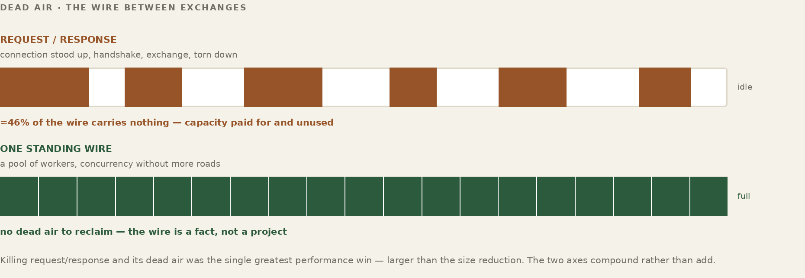
The pathway, end to end
It helps to see where each piece sits, because two players do the work and it matters which does which. The handler, running the BLDC-1 codec, decides what bytes represent the exchange; FNWP-1 carries them. Follow one request from an application on this node to the data on a peer and back:
THIS NODE
1 app --HTTP :80--> proxy --> handler (BLDC-1)
2 handler: compare canonical answer vs reference
-> SAME | DIFF | FULL (+ request hash)
3 FNWP-1 frame --> established socket --> PEER
PEER NODE
4 daemon :9009 reader --> handler (BLDC-1)
5 handler: rebuild full request from reference + diff
6 origin (Apache -> MySQL) produces the answer
7 handler: compare canonical answer vs reference
-> SAME | DIFF | FULL
8 FNWP-1 frame --> back over the return socket
THIS NODE
9 handler: rebuild full reply from reference + diff
10 proxy --HTTP--> app
The thing to fix in your head is where SAME and DIFF are decided: at the handler, on each side, by the BLDC-1 codec — never on the wire. When a side has an answer to send, the codec compares the canonical answer — the values it carries against the template both ends learned, not its raw bytes — to the reference it holds from last time. Match, and it sends SAME: almost nothing. A few values moved, and it sends a DIFF of just those. No reference yet, and it sends a FULL. The structure no longer fits the template, and the exchange goes raw again. (Two answers that differ only in incidental formatting are the same canonical answer, and cross as SAME.) A 16-byte request hash on the frame names the request, and the location fields every difference carries tell the far side which instance's reference to apply it to, so the two ends never disagree about what “last time” was.
FNWP-1's job begins only after that verdict: it frames the SAME, the DIFF, or the FULL, files the waiting caller under a local sequence number, and puts the frame on the send socket. On arrival the reconstruction is exact precisely because both sides kept the reference — the receiving handler takes its copy of the last canonical answer, applies the diff, and has the full message again, which it hands to its origin or back to the waiting application. So every hop is one handler turning a full message into a verdict against a shared reference, and the handler on the far side turning that verdict back into the full message. That is the whole pipeline: incoming message, to handler, to FNWP-1, to the other side's handler, to the other side — and the reply home over the return socket of the same pair. The codec decides the content; the wire moves it.
The frame
Every FNWP-1 message is a length-prefixed frame: four bytes of length, then the four-byte magic FNW1, a one-byte opcode, and the body. A reply puts a four-byte sequence number between the length and the magic. The opcodes are a short list — a full request, a repeat of a known one, a diff, or a raw bootstrap; a response that is SAME, a DIFF, or a raw body; a MISS meaning the hash you sent means nothing to me; a HELLO to open a channel; an ERROR; a SEQ_RESET; and the round-trip probes. In the Ribbit C++ wire, a SAME-MISS: the client no longer holds the answer a SAME named, and asks the far side for it from its cache; the request is never run again. The probes are PING, PONG and LOOP — LOOP being the daemon's verdict that the connection came back to itself. The length prefix means a reader always knows exactly how many bytes to expect before the next frame begins, which is what lets many frames share one stream without ambiguity.
What is not in the request frame is a sequence number, and it is worth being exact about this because the obvious mental model is wrong. A request goes out carrying no sequence at all. The sender assigns one locally and files the waiting caller under it; the receiver assigns its own number from its own arrival counter and stamps that onto the reply. The two agree because they count the same events in order on the same connection, and both restart from zero when a connection is made. A SEQ_RESET opcode is defined for putting them back in step without reconnecting; nothing sends it today. The ordering property, not a field, is what lets frames share the socket — the next two ideas.
Fan-in: many conversations, one socket
A node rarely has just one thing to say to a peer. A dashboard is polling, a sync is running, three sensors are being read — all toward the same peer, all at once. FrogNet does not open a socket per request. They fan in to the peer's one established socket pair — requests out on one, replies home on the other: the writer sends their frames one at a time down the send socket, and because each is filed under the number it was sent as, it does not have to wait for one reply before sending the next. Several requests are in flight on the one send socket simultaneously, and the proxy keeps a small pending map — sequence number to waiting caller — so it knows who is owed what.
WORKED EXAMPLE — Three requests in flight on one send socket to ShopBox
one established socket pair, three callers, sent back-to-back:
writer -> seq 41 REQ_FULL (dashboard poll)
writer -> seq 42 REQ_REPEAT (sensor read)
writer -> seq 43 REQ_FULL (file list)
pending = { 41:dashboard, 42:sensor, 43:filelist }
Fan-out: matching replies home
The replies come back interleaved, and not necessarily in order — a small SAME for the sensor read may return before the larger file list. That is fine, because every reply carries the sequence number of the request it answers. The reader pulls each reply off the return socket, looks its sequence up in the pending map, hands it to the caller that was waiting, and drops it from the map. The frames went out fanned-in on the send socket and come back fanned-out on the return socket to the right callers, sorted by nothing more than a number on each frame.
WORKED EXAMPLE — Replies arrive interleaved, matched by seq
reader <- seq 42 RESP_SAME -> wake the sensor caller (first back) reader <- seq 43 RESP_DIFF -> wake the file-list caller reader <- seq 41 RESP_DIFF -> wake the dashboard caller pending now empty. out-of-order on the wire, in-order to each caller.
One more fan-in trick: if two callers ask the peer the exact same thing while the first is still in flight, FrogNet does not send it twice — the second is coalesced onto the first request, and both are woken by the one reply. Identical work collapses to a single exchange on the wire.
Independent channel sets — keeping streams from blocking each other
Sharing one socket has a cost: everything on it shares one TCP connection, so a stall or a lost packet that holds up one frame holds up the frames queued behind it — head-of-line blocking. For most traffic that is invisible. For a video call sharing a socket with a bulk file sync, it is not: the sync's stall would stutter the call. FrogNet's proxy driver — not FNWP, which never opens a socket — has an allocator that can give a peer up to three independent socket sets, each with its own sequence space and threads; set 0 is the default every ordinary call uses, and a fourth protocol overlays the least latency-sensitive set. The allocator is unit-tested; nothing opens a set yet. The Ribbit C++ wire takes a different route to the same end: a payload too large to diff goes, cut into segments, over a separate always-open data socket, so the semantic socket keeps moving.
WORKED EXAMPLE — What the allocator would give a call, a sync, and a chat to ShopBox
three sets from the allocator (unit-tested; nothing opens one yet): set A video call (latency-critical) own socket + seq set B file sync (bulk) own socket + seq set C chat/control own socket + seq B stalls on a lost packet -> A (the call) never notices. a 4th protocol overlays onto the least-sensitive set (B) and shares its fate — so open sets honestly, by sensitivity.
Three is the budget per peer: past three, a new protocol overlays onto the least-sensitive existing set and shares its congestion window and its stalls. The cap keeps the node from drowning in connection state. The allocator hands out set 0, the default set, first, so as written the first protocol to ask for a set shares it with the ordinary traffic.
The break from request-reply REST
Step back and the payoff of all this — the fan-in, the fan-out, the interleaving, the standing socket controlled in both directions — is one thing: the wire is never idle. That is the clean break from how ordinary REST uses a network. Traditional REST is request-reply and serial at heart: a client sends a request, waits, gets a reply, sends the next. The gap between them is dead air — the round trip during which the link carries nothing. To win some parallelism a REST client either opens many connections, each paying a fresh handshake and slow start, or pipelines on one and hits head-of-line blocking, where a single slow reply stalls everything queued behind it. And because REST is stateless, every request re-states its full structure. On a fat link none of this is fatal; on a constrained one, the idle time and the repeated structure are bandwidth you never get back.
FrogNet takes specific control of the wire in both directions and refuses to let it idle. Owning a persistent socket pair to the peer, with every frame sequence-tagged, it does not wait: it fans requests in back-to-back, keeps many in flight at once, and takes replies back fanned-out and interleaved, matching each home by its sequence. A large, slow reply does not block the small fast ones — they complete out of order, as they arrive. The transmitter never starves on a round trip; by the time one frame clears the wire the next is already there. The link runs at or near full duty cycle instead of spending half its life waiting.
request-reply REST (one connection):
REQ-1 --------> (wire idle, waiting)
<-------- REP-1
REQ-2 --------> (wire idle, waiting)
<-------- REP-2 half the link is dead air.
FrogNet FNWP-1 (one socket pair, fanned + interleaved):
REQ-1 REQ-2 REQ-3 --------> (back-to-back, no waiting)
<-- REP-2 REP-1 REP-3 (interleaved, matched by seq)
the wire stays full; replies complete as they arrive.
Now stack the rest on top. The bytes that do cross are minimal — SAME and DIFF against a shared template, not full structure re-sent every time. In the Ribbit C++ wire, a payload too large to diff rides its own data socket, so a bulk transfer does not hold up the small exchanges. The combined effect is that effective throughput stops being governed by how fast requests and replies can ping-pong and becomes governed only by what the physical link can actually carry. That is why the same traffic that crawls under request-reply REST moves many times faster here — the figure measured, 100 concurrent requests over a 1,500 ms WireGuard round trip with an echo that answered SAME every time, is 44× the serial baseline — and why a real web application runs at all over a link slower than a 1990s modem. FrogNet has also run over Ethernet shaped to 4800 baud.
Those two Part I promises cash out right here. Run real software over almost nothing is this paragraph, measured: a feed that would be hundreds of kilobytes becomes a handful of bytes, and the application above never knew. And stretch one uplink across a whole area follows directly — because each node's traffic over the shared pipe is differences, not full structure, a single narrow satellite link at the command post should feed a mesh of dozens instead of the first few; that is argued from the byte counts, not yet measured. The compression is not a feature of the apps; it is the property of the wire that makes the narrow-link life possible at all.
The deeper difference is one of stance. REST treats the network as a series of discrete, independent transactions and trusts the link to be fast enough that the gaps between them do not matter. FrogNet treats the link as a continuous resource it actively manages in both directions — filling it, interleaving on it, compressing onto it — so that the gaps do not exist. The application above is making ordinary HTTP calls in both cases. Underneath, the relationship with the wire could not be more different.
This is, in the end, what it means to call FrogNet networking redesigned for modern computing architecture. The serial request-reply model is a relic of machines that could only do one thing at a time — one core, one thread, a request sent and then waited on because there was nothing else for the processor to do anyway. That world is gone. A modern box, down to a Raspberry Pi, has multiple cores and runs many threads at once, and FrogNet builds its wire around that fact. Each application request runs on its own thread; one writer per peer puts their frames on the send socket and one reader takes replies off the return socket, while on the far side a pool of threads executes the requests at once. Requests from many senders and replies to many receivers cross the wire together, not taken in turns. The network finally does more than one thing at once because the computer underneath it always could.
Threading is one of several modern abundances the design is built around, and it is worth seeing them together. Each is a capability an old machine lacked, and each maps to a specific FrogNet choice.
| The modern machine has | What FrogNet builds on it |
|---|---|
| Multiple cores and threads | A thread per application request, one writer and one reader per peer, and a pool on the far side that executes requests at once, so many senders' requests and many receivers' replies cross the wire at the same time. |
| Abundant memory | BLDC-1 can retain learned templates, per-instance references and SAME/DIFF state so repeated structured exchanges carry only what changed. A Ribbit Region may also keep current application state available independently of that representation cache. |
| Object-oriented languages | The handler model — one interface, a few virtual slots, a subclass per behavior, so a new wire format or protocol is a class you register, not a fork of the dispatch path. |
| Multiple network interfaces | Transport-agnostic meshing: a node runs wired, Wi-Fi, and HaLow at once and spreads itself across all of them rather than assuming one NIC. |
| Large, fast disks | Durable state beneath the live one: per-node databases and learned templates that survive a restart, while the working copy stays in memory. |
| Modern databases | FrogNet may combine durable per-node stores with a selected backing host for a Ribbit Region. That is FrogNet deployment policy; Ribbit does not require a database on every node or a floating transient store. |
| Modern kernel routing | The per-destination routes discovery installs, ordered by RTT with fallbacks, live in the host's own routing table — no separate routing protocol or daemon. |
| Network-management stacks | Self-forming bring-up: systemd services plus the OS's own DHCP, access-point, and cable-event machinery stand a node up and re-form the mesh with no hand-configuration. |
FOR THE GUILD
The wire works on a link that is up. What it does not yet have is a considered story for a link that is not — intermittent, jammed, asymmetric, high-loss, coming and going. Today’s mechanisms are honest and thin: connections are permanent and reconnect on death, and the two sides count independently and are put back in step only by reconnecting (SEQ_RESET is defined and unused). Resumption without a full re-handshake, behaviour under sustained partial loss, whether a channel should survive a bearer change or be rebuilt, what a jam even looks like from inside the framing — none of that is settled. If you have kept sockets alive in contested and degraded environments, this is your seam, and the transport tier of the simulator will drive loss, jitter and bearer flap at whatever you build. This is also the subsystem headed for an open standard, so the work has a second life in the specification.
Two doors. To talk about it — this book lives in a public repository and its Discussions are open at github.com/FawcettJohnW/FrogNet-Living-Network/discussions; no licence is needed to argue there. To build on it, take it: fawcettinnovations.com/download.html — free software under the GNU GPL, version 2 only (GPL-2.0-only), no licence to request and no form. What you build on it and distribute is GPL-2.0-only too; that is the deal. Questions are welcome and nothing depends on them.
Part X
Ribbit Handlers and Domain Protocols
The historical FrogNet implementation called this extension seam UnREST Core and UnREST Unleashed. The useful architectural fact survives the old name: reusable BLDC-1/FNWP machinery can sit beneath domain-specific handlers, while a handler can add behavior without changing the transport. SotF is evidence of that extension model. The turn-based game handler is kept as a design example: an early /game origin and a boardgame role were built; the origin was removed on 25 September 2026 and the role on 29 September 2026, and FrogNet ships no games. Neither is a new Ribbit primitive.
In the historical code a pathway was represented by one handler class. It supplied methods for learning a request or reply structure, extracting changing values, rebuilding the far representation, and performing any domain work, then registered that class in the common registry. The code example below retains its original UnRESTHandler name because that is the implementation being documented. In current terminology, its representation responsibilities belong conceptually to BLDC-1 and its domain responsibilities sit above Ribbit/FNWP.
class MyPathway(UnRESTHandler):
ROLE_NAME = None # a content handler, no role
def learn_request_template(self, req): ... # learn the shape
def extract_request_dynamic(self, req): ... # pull the values
def rebuild_reply(self, tpl, vals): ... # rebuild far side
register in the one format registry -> dispatch is uniform
Then you do not call it — it is triggered. When traffic flows through the proxy, the proxy asks that one registry which handler matches (a content handler is recognized by the shape of its content; a role handler is never matched from traffic — the election looks it up by the role it names) and dispatches to it through the same method surface every handler exposes. The application made an ordinary HTTP request on a URL; the matching pathway fired underneath it, collapsed the exchange to a difference, and handed back an ordinary response. Build the class, register it, and the pathway exists; matching traffic triggers it from then on, invisibly. The rest of this part is what those methods are doing, and why it matters.
FOR THE GUILD
Twenty opcodes are assigned in Ribbit’s wire (fifteen in the original Python core). Two hundred and thirty-six are free, and the bands were laid out with room to grow because nobody believed the first sixteen were the last sixteen. What belongs in that space is an open question with real candidates: a frame that carries several small requests at once for a link where each round trip is expensive; a way to say stop, I no longer want that reply; a negotiation at connect time so two nodes of different vintages agree on what they both understand. Protocol design is unforgiving work -- every byte you add is a byte every future node carries forever -- which is exactly why it should be argued over by more than one person before it ships. If you have opinions about wire formats, bring them.
Two doors. To talk about it — this book lives in a public repository and its Discussions are open at github.com/FawcettJohnW/FrogNet-Living-Network/discussions; no licence is needed to argue there. To build on it, take it: fawcettinnovations.com/download.html — free software under the GNU GPL, version 2 only (GPL-2.0-only), no licence to request and no form. What you build on it and distribute is GPL-2.0-only too; that is the deal. Questions are welcome and nothing depends on them.
28. The Object-Oriented Handler
WATCH
Semantic Message Handlers — registering a wire protocol in two functions
Open the hood. A handler is an object with a base class of well-defined virtual slots, and a subclass overrides only the ones it means. The proxy almost never branches on type (core/template.py still switches on the mode to rebuild a request body and to choose a reply Content-Type): it finds the one handler registered for what it holds and calls the same method surface it would for anything else, so a new protocol is one new subclass, not a change to the dispatch path. There are three groups of slots — three questions you can ask any handler — and then, at the far end of the range, the protocols that use them in earnest.
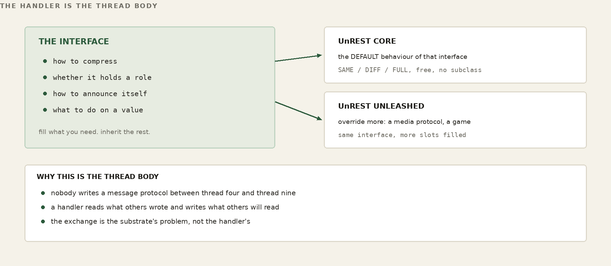
WORKED EXAMPLE — Which slots a handler fills
handler codec slot election slot lifecycle slot JSON / XML implemented — (inert) — (inert) databasehost — (no-op) implemented implemented
The codec slot — “how do you compress?”
Learns a template from a request or reply, extracts the dynamic values against it — the URL query parameters and any body fields, merged into one ordered set — and rebuilds the far side from template-plus-values. A content handler — JSON, XML, HTML, text — lives almost entirely here; this is where its knowledge of its own format becomes SAME/DIFF/FULL. SotF, the media protocol, overrode this same slot to manage a live stream; its handler left the tree on 12 October 2026. A handler with nothing to compress leaves it inert and pays nothing.
The election slot — “are you fit to hold a role?”
One method scores a single candidate, one evaluates a slate and picks. A handler that names a role overrides these to take part in the deterministic election. A content handler names no role and inherits the empty defaults; it is never a candidate, and the election machinery never special-cases it. The role is one field on the class; everything follows from whether it is set.
The lifecycle slot — “announce yourself, and recover.”
Where the split/merge story comes home. A role handler inherits a real lifecycle: an advertise method that publishes this node's capability for the role into the shared space, and a hostReset method that calls advertise again. When the ground shifts (a boot, a merge, the database host floating to a new node), what runs is publish_all() in core/role_publish.py, which calls every role handler’s advertise directly; nothing in the tree calls a handler’s own hostReset yet, so it is a hook for re-establishing a handler’s other tuples that the reconcile does not drive today (Part X, “Re-establishing Memory”). Advertising is a dual write — onto the deterministic control name where the election reads its inputs, and onto the floating data name where ordinary consumers see it — the second write is skipped while both names resolve to the same machine — so the very fact that a node can host a role is itself a tuple in shared memory, put there by the handler, scored by everyone. That is FrogNet’s own mode. On an FD&F region the <role>/capability tuples are not written; the election reads the node’s capability from the facts the tunnel daemon announces. The node runs its capability probe once and every role handler publishes that same blob as its <role>/capability tuple; the databasehost election scores what the probe found. Nothing is handed between components: the capability lands in the tuple space, and the election reads it back from there. As with everything in FrogNet, the exchange is through the shared memory, never a value passed hand to hand. The published tuple is the complete picture the election in Part V scores (the fields are catalogued in Appendix A).
The flagship extensions — SotF and the game protocol
A content handler barely uses this interface — it fills the codec slot and takes the defaults for everything else. The interface earns its name at the other end of the range, where you implement a genuinely new protocol. SotF does. A turn-based game would be its opposite, and the two together show the range: the same handler shape spans both.
SotF — Song of the Frogs — was the FrogNet implementation’s adaptive media protocol, the hot path. Its handler overrode the codec slot, but for SotF that slot did not compress a body; it managed a live stream — video and audio carried as opaque frames — with delivery classes (some frames must arrive, some may be dropped) and an adaptive ladder that steps the picture down, size by size, to audio alone as the link degrades, and climbs back as it recovers. It is real-time and lossy by design, and it rides its own sockets, audio apart from video, so it never blocks, or is blocked by, anything else. It also named the mediahost role, so the election placed it on a capable, on-wire box. The role and the handler were removed on 12 October 2026; databasehost is the one role in core/role_registry.py. The Communicator’s calls today go through comms-media (Part XV).
A turn-based game would be the opposite extreme: the handler framework used when there is no stream at all. Take the simplest turn-based game there is — tic-tac-toe. The board would be one small value in the shared working memory: nine cells and whose turn it is. A game handler would not be a codec and not a forwarder — it would be the authority. A move arrives as an ordinary request carrying _game; the handler checks the turn, marks the cell, looks for three in a row, and writes the board back — then it sits until the next move. No stream, no delivery ladder, no rate machinery: turn-based and slow by nature, the game needs none of it. You would read the board when your turn comes, the way the monitor reads a sensor. An early /game origin and a boardgame role were built; the origin was removed on 25 September 2026 and the role on 29 September 2026. FrogNet ships no games.
WORKED EXAMPLE — A move in tic-tac-toe would be a write to shared memory
the board would be one tuple at databasehost.frognet:
table "kitchen-1" turn: X
cells: X | O | .
. | X | .
O | . | .
X would move — an ordinary POST carrying _game:
{ "_game":1, "game":"tictactoe", "table":"kitchen-1",
"op":"move", "cell":8 } # bottom-right
the game handler (the authority) would check it is X's turn,
mark cell 8, look for a line, write the board back, set turn:O.
O would read the new board when it is O's turn.
That is the purest expression of “exchange memory, not messages”: a whole multiplayer game as reads and writes of one shared board, with the authority — not the wire — enforcing the rules. Tic-tac-toe is only the smallest one to hold in your head.
That board game is also where a comfortable assumption comes back to bite, and the bruise is worth showing, because it is the whole thesis in one table. Take backgammon — a game — and count the bytes a full forty-two-move match puts on the wire three different ways.
WORKED EXAMPLE — Backgammon on the wire — three ways to spend a game
a 42-move match — total bytes that cross the wire: conventional messages 6,690 B ~152 B/move, flat naive memory (whole tuple) 40,011 B 292 -> 1,619 B, GROWS bounded-difference budget 1,981 B 163 B, then ~45 B flat budget vs messages 3.4x cheaper budget vs naive memory 20x cheaper an unchanged re-assertion is a 21-byte SAME
Read it from the middle row. Done the naive way — hold the whole board-and-history as one value and re-assert all of it every move — “memory” is worse than plain message-passing, because it re-ships a structure that only grows. “Exchange memory, not messages” does not win the wire on its own; on its own it loses. What wins is the budget: send a bounded difference against a template both sides already hold, and keep the accumulated history resident in memory rather than on the wire — the freshness decomposition BLDC-1 is built around (Part IX). That is the gap between forty kilobytes and two for the same match, and an unchanged turn collapses to a 21-byte SAME that message-passing has no equivalent for at that price. These are a first-order model on real frame sizes, not a packet capture — they attest the shape of the advantage, and the shape is the point: the paradigm label is free; the budget is the engineering.
That is the range the one handler interface spans — a turn-based game at one extreme, a real-time media stream at the other (next) — built by filling the same slots with entirely different behavior. The defaults belong to FrogNet; the extensions are where the protocol you actually want gets written.
FOR THE GUILD
This is the widest door in the system, and the most obviously unfinished thing behind it. Every format FrogNet does not yet speak is three methods away: what shape is this document, what are its values, how do I put it back together. Binary telemetry off an instrument. A protocol nobody outside your industry has heard of. Whatever your equipment actually emits, which is very likely not JSON.
Two doors. To talk about it — this book lives in a public repository and its Discussions are open at github.com/FawcettJohnW/FrogNet-Living-Network/discussions; no licence is needed to argue there. To build on it, take it: fawcettinnovations.com/download.html — free software under the GNU GPL, version 2 only (GPL-2.0-only), no licence to request and no form. What you build on it and distribute is GPL-2.0-only too; that is the deal. Questions are welcome and nothing depends on them.
And a warning that is also an invitation, because it is the part most in need of a second pair of hands. Dispatch is nearly uniform -- one registry, one lookup; only core/template.py still switches on the mode, to rebuild a request body and choose a reply Content-Type. Detection is not. The code that decides which handler a body belongs to is a hand-ordered chain of tests, edited by hand, in order, every time a format is added. It is the one seam in the design that is not polymorphic, and it should not stay that way. There is also a second, older schema learner still sitting in the tree that nothing calls and that would do the wrong thing if anything did. Neither is hard. Both are exactly the kind of work that never rises to the top of anybody's list and quietly costs everyone who comes after.
FOR THE GUILD
The classifier is the crudest thing in the pipeline and it is deliberately empirical — Content-Type decides for JSON and XML, HTML must also look like HTML, and otherwise the body decides, resolving to json, xml, html, text or raw. Two different jobs open off that. Detection can be better: a body that falls through to raw is learned as a single field, so a repeat is SAME and any change resends the whole body. And the language set is small because the general case needed five. A protobuf handler, a CBOR handler, a CSV handler, a handler for one industrial or medical format — each is self-contained, touches nothing else, and a domain-tuned codec can beat the general one badly because it knows what the fields mean rather than only what shape they are. If you own a data format professionally, you are the right person to write its handler, and you never have to read the election code. The proof is a corpus of real bodies with FULL/SAME/DIFF measured before and after.
Two doors. To talk about it — this book lives in a public repository and its Discussions are open at github.com/FawcettJohnW/FrogNet-Living-Network/discussions; no licence is needed to argue there. To build on it, take it: fawcettinnovations.com/download.html — free software under the GNU GPL, version 2 only (GPL-2.0-only), no licence to request and no form. What you build on it and distribute is GPL-2.0-only too; that is the deal. Questions are welcome and nothing depends on them.
29. Re-establishing Memory After a Split
In the historical FrogNet implementation, a partition could cause an island to elect a fresh backing host for its FrogNet Memory Region. That new backing space could begin empty. The implementation rebuilt selected current truths by having their owners re-advertise them through lifecycle reconciliation. This is an important implementation example, not a general Ribbit guarantee: a Region that must preserve or reconcile other state across re-homing must define that policy explicitly. On every node in the island the reconcile re-publishes every role’s capability: one probe, then each role handler’s advertise() into the new space. What fires it is not the merge reaching out to them; it is each node noticing for itself, which is the next section.
WORKED EXAMPLE — Island A repopulates its own scratchpad
split — ShopBox 10.84.84.1 is now island A's database host. its transient DB is empty. each node notices the move and re-advertises for itself: HomeBase.databasehost.advertise() -> capability tuple -> new DB ShopBox.databasehost.advertise() -> capability tuple -> new DB within a beat, island A knows who can host what — rebuilt from each frog re-asserting itself, NOT copied from the old database.
Not by copying the old database — that may be on the far side of the break, unreachable — but by every participant re-asserting its own current truth into the new shared memory. The capability to re-establish the critical state lives in the handlers themselves, as a method, and fires automatically on the same event that tore the network. Because every role wears the same lifecycle, recovering a partitioned island's memory is not a feature anybody wrote a recovery routine for. It is the ordinary advertise every handler already does, fired again at the right moment. The same method that introduces a node the first time reintroduces it after a split. There is no separate path for disaster, because in FrogNet a split is not a disaster. It is just Tuesday.
Re-establishing more than capability
The split is only the loudest trigger. The same re-advertise (advertise, through publish_all) runs on any reassignment of the database host — a merge, a node floating in, a fresh boot — because to a handler they are indistinguishable: the ground moved, and the data host it was writing to may not be the one it writes to now. Re-advertising capability is the most common thing a handler does here, but the method is general. It is meant as each handler's hook — though today the reconcile calls each role handler’s advertise(), not its hostReset(), so an override would not run — to re-establish whatever tuples its own code depends on into a database that may have just changed underneath it — the control envelope of a live call, a working set, a service's standing state. A handler that needs nothing overrides nothing and pays nothing; a handler that needs its world back rebuilds it here, on the one event that tells it the world moved.
One property to design around: the writes hostReset makes land on a database that has never seen them, so the first write or read of each shape crosses FULL — the new host holds no template or reference to diff against — and only then collapses to DIFF and SAME as the exchange settles. That cost is also the boundary of the mechanism: hostReset re-establishes current state, not a log. It is not a historical recorder and is not meant to be one. You could repopulate history through it — nothing stops you writing a hundred past tuples into the fresh scratchpad — but you would pay a FULL for each on the way in, and you would still be keeping history in FrogNet’s default Region, a store designed to hold only the present. Re-establish what your code needs to run; reach for a durable store when you need to remember.
30. hostReset — Nothing Is Pushed
Every handler that names a role inherits two methods it almost never overrides: advertise(), which writes that role's capability into both planes, and hostReset(), which calls it again. That is the whole of the lifecycle slot, and its plainness is the point.
A content handler — JSON, HTML, text — inherits both and does nothing with them, because the inherited code checks whether the handler names a role and returns immediately if it does not. The difference between a handler with a lifecycle and one without is not an overridden method. It is a value on the object. There is one implementation of advertise per platform, on the base class, and every role gets it identically.
The trigger is an observation, not a message
The interesting question is what calls hostReset(), and the answer is the part most worth understanding, because it is the opposite of how this is usually built.
Nothing calls it on a node's behalf. No coordinator announces that the database host moved. No component notifies another component. The daemon runs a watcher that, every 15 seconds, resolves databasehost_control.frognet from /etc/hosts and compares the answer to the one it got last time. If the address is different, it reconciles. If it is the same, it does nothing at all. The proxy publishes once at boot; the discovery merge publishes for its own node on each merge. On an FD&F region the watcher still ticks, but the reconcile writes nothing: capability is the tunnel daemon’s fact in the region, and the elections read it from there.
WORKED EXAMPLE — The whole detector
resolve databasehost_control.frognet
same as last tick? -> nothing happens
different? -> every module in THIS process
re-states what it is
first observation ever -> record it, do nothing
(the process already did
its startup publish)
The comment in the source says it better than a paraphrase would: nothing is pushed — the shared truth moved and we noticed. There is no notification protocol here because there is nothing to notify. The fact is in the shared memory; a process that cares looks.
Trigger-agnostic by design
Notice what hostReset() does not take: any indication of why it was called. A float, a manual poke — the method cannot tell them apart (boot and merge call the same publish_all() directly) and does not want to. It has exactly one behaviour: publish what this node currently is, to wherever the coordination plane currently lives.
That is what makes it safe to call from anywhere, at any time, as often as you like. A reconcile that behaved differently depending on what triggered it would need every caller to know which situation it was in — and every caller getting that right is a much larger promise than any of them can keep. One verb, one behaviour, no arguments: re-state yourself.
It is not confined to handlers
And here is where the object model stops being an inheritance tree and becomes something more useful. The thing that republishes every role's capability on a reconcile is not a handler. It does not subclass the handler interface. It simply has a hostReset(), and that is enough for the watcher to call it.
So hostReset is not a method on a class hierarchy. It is a protocol — a verb any object in any process may answer to, and the watcher fans it across whatever modules that process happens to hold, without knowing or caring what they are. Add a module to a process and it participates in reconcile by implementing one method with no arguments. No interface is declared: any module the process hands its watcher is called if it has a hostReset(); one that has none is skipped.
This is the same shape as everything else in FrogNet, one level down from the wire. Components do not hold references to each other and do not call each other. One writes a fact into the shared space; another, elsewhere, reads facts and acts. The only place one piece of code directly invokes another is a method call inside a single process — and even that is a virtual call through an interface, which is to say the caller does not know what it is calling either.
31. Song of the Frogs — The Same Problem
The same problem, wearing different clothes
Strip FrogNet down to one sentence and it is this: get the most meaning across the least wire. That is the whole job. Discovery does it. Presence does it. The floating database does it. Every one of them is, under the costume, a bandwidth-reduction engine, and every one reduces bandwidth the same way — by exchanging memory instead of messages. Both sides hold the same structure; the wire carries only the difference; the scaffold that never changes never crosses again. Send only what changed, fall silent when there is nothing new to say. That single move pays for the entire network.
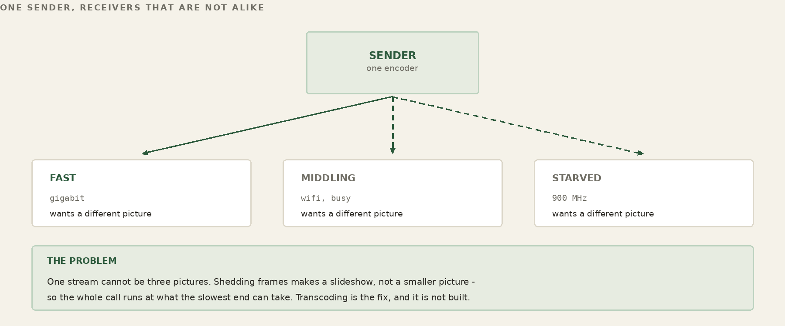
Song of the Frogs is the same problem. Reduce what crosses the wire. But it is that problem wearing different clothes, because the payload breaks the trick that carries everything else.
A backgammon board settles. So does a sensor reading, a presence beacon, a route table. Diff a thing that settles and the diff shrinks toward nothing — that is why diffing it is cheap. A live video frame does not settle. It is a firehose, not a structure: thirty times a second the whole world has moved a little, and there is no reference against which the difference goes quiet. A firehose never settles into a structure both ends already hold. The memory-not-messages move that carries the rest of FrogNet does not carry the hot media at all.
So we are handed the same goal and told the usual tool will not reach it: bandwidth reduction, on a payload that never stops changing. What do we actually have to work with? Two things.
The first is the Communicator’s shared memory, comms-ram — a Ribbit RAM host — reached through the same shared-state API as the rest of the application’s control state. A call is not special: it is state in the same place everything else lives. Because while the frames never settle, everything about the call does. Who is in it, which calls are offered and joined, each viewer’s link, which size each leg is held at — all discrete, all settling, all riding the tuple space exactly like a game's seats or a host election. The negotiation re-sends only what changes, so it costs almost nothing. We keep control where control is cheap.
The second is the ability to stand up a separate pair of data channels — one carrying audio and one carrying video, each both ways, between us and the media server — a media path of our own, distinct from the tuple plane, that the frames ride as pure data: non-blocking, send-or-drop, newest-wins, no queue waiting to go stale. This is where the bandwidth actually falls. We do not reduce the firehose by diffing it; we reduce it at the source, sending only the rung the link can carry and stepping down the instant it cannot. The tuple space negotiates; the channel pair adapts. Control persists; media degrades.
That split — cheap shared-memory control on one side, adaptive streaming data on the other — is the whole of Song of the Frogs. Same goal as everywhere else in FrogNet, reached by the one road left open. The rest of this chapter is how we build each side, and how the two stay in step.
What we are doing instead
To see why this is built the way it is, set it beside the way real-time media is usually carried — because at almost every joint, SotF turns the other way.
State. Conventional real-time stacks are message machines end to end. Signaling is an exchange of messages — SIP offers and answers, SDP blobs, ICE candidates — and the media is a river of RTP packets, each one sent, each one gone. State is something you announce, repeatedly, and hope arrives. SotF splits the call in two and treats each half as what it is. The control half — who is here, which calls, each viewer’s link, which size — is discrete and settling, so it lives in the tuple space as shared memory: both sides hold the same picture, the wire carries only the change, and when nothing changes only a five-second presence heartbeat is re-asserted. Only the media half streams. We announce the call once and remember it; we do not re-narrate it every frame.
The data path. The hardest habit to break is reliability. TCP delivers every byte in order — and to do it, it retransmits, and the retransmitted frame is already stale by the time it lands, and the queue behind it grows, and latency climbs until the call is a slideshow with a backlog. The usual escape is UDP with a jitter buffer at the receiver, trading a fixed slice of delay for smoothness. SotF refuses the trade. The data channel is non-blocking and send-or-drop: if the socket has no room for the whole frame, the frame is dropped, not queued (audio and keyframes get a few more tries, milliseconds apart), and the next one — newer, truer — takes its place. Newest-wins, no backlog, no stale delivery. We would rather lose a frame than fall behind, because in a conversation a late frame is a lie.
Adaptation. When the link tightens, a conventional stack reaches for a continuous knob: congestion control estimates the available bandwidth and nudges the encoder's bitrate up and down, or it pre-encodes a shelf of quality variants for the client to pull from, or it ships layered streams and asks a forwarding server to pick a layer per viewer. SotF reaches for a staircase instead of a dial. The ladder is a small set of rungs, and the source sends the highest rung the link sustains — each step down a smaller picture, then shedding video for the voice, and stopping there — and climbing back on its own when the link recovers. Each leg is driven by its own measured bearer, so a congested peer degrades only itself and never drags the room down with it; hysteresis keeps it from flapping at the edges.
The server. Traditional conferencing leans on fixed, provisioned iron you point at by address: an SFU or MCU in a data center, a TURN relay to punch through NAT, all of it standing whether anyone is calling or not. In the FrogNet implementation the media host was an elected role, mediahost, gated on ffmpeg with libvpx. The current Communicator’s media server, comms-media on port 8994, is started on a node by fdf-comms.sh (or runs on the droplet) and says where it is in the pond’s where cell; the Android Communicator and the kart demo find it there, with nothing typed (the desktop comms-app is still handed --ram and --media). It is not elected and it does not dissolve between calls. It fans each participant’s audio and video to every other participant, never back to the sender, transcoding a source once for each smaller size a viewer needs; each receiver mixes the voices it gets.
Failure. This is the sharpest difference, and the one that matters most in the field. Push a normal call past what its congestion control can hold and it does not degrade gracefully — it freezes, it stalls, it drops, and coming back is a re-negotiation from scratch. SotF's floor is the voice. The same call walks itself from high-definition video down to a gray thumbnail and then to voice alone, and back up the moment the link allows — without restarting, without re-dialing, without the user lifting a finger. The call does not die. The medium changes under it.
None of this makes the conventional stack wrong. It is mature, interoperable, and built to survive the open, adversarial internet, where you do not own the path and cannot elect anything. SotF makes a different bargain: it gives up universal interop and standards compliance, and in exchange it gets sovereignty over a fabric it controls end to end — a flat plane where control is shared memory, roles can float, and a call can fall to voice instead of dying. On someone else's network those would be luxuries. On ours they are the point.
-------------------------------------------------------------
Traditional Song of the Frogs
-------------------------------------------------------------
State messages, re-sent shared memory, diffed
(SIP/SDP/ICE) (memory, not messages)
Data path TCP retransmit, or send-or-drop,
UDP + jitter buffer newest-wins, no queue
Adaptation continuous bitrate discrete ladder;
knob / variants / each step a smaller
layered + SFU picture; per-leg
Server fixed SFU/MCU/TURN comms-media, found in
you point at the where cell; fans
minus-self
NAT/address ICE/STUN/TURN dance resolve a role name on
the flat fabric
Failure freeze / drop, then degrades to voice alone,
re-negotiate climbs back; never
dies
-------------------------------------------------------------
The pattern under all of it: traditional networking is optimized for a world you do not control, so it pays — in messages, in buffers, in standing servers, in brittle failure — for assumptions that do not hold on your own fabric. When you own the whole problem, stop importing the compromises built for someone else's.
Starting from the answer everyone already has
We did not invent a transport for this. The media planes are two ordinary TCP connections from the Communicator to its media server, each carrying length-prefixed media frames. No new transport was invented; it is TCP, made never to wait.
The honest way to design something is to start from the known solution and make it prove it belongs. For real-time media the known solution is sequenced UDP: fire datagrams, number them, let the receiver reorder what it can and shrug at what it can't. So the first question was not "how do we do sequenced UDP well." It was: do we need UDP at all — or was UDP a band-aid for some other problem?
It was a band-aid. Nobody reaches for UDP because datagrams are wonderful; they reach for it to escape what TCP does to a live stream. TCP insists on delivering everything, in order, and to keep that promise it retransmits and it blocks the line behind a missing piece — exactly the wrong instinct when the missing piece is a video frame already overtaken by three newer ones. UDP is how you buy out of that: give up the guarantees and you stop waiting. The guarantee was the wound; UDP was the bandage.
We knew that bandage well, because we had built it ourselves. Sequenced UDP is what you reach for on game servers, and it mostly works — right up until load, where the hand-rolled ordering and pacing and loss-handling bolted on top start to fray, and what was smooth in the demo comes apart in the room. Nobody is perfect. But "mostly works, falls apart under load" is not a foundation; it is a warning.
So instead of doing sequenced UDP better, we asked what we actually wanted from it, and the want turned out to be small and exact: never wait. And the reason waiting is fatal has a name — head-of-line blocking. A blocking write is a head-of-line block: when the link cannot drain the send buffer, the write stalls, the frame in your hand cannot leave, and every newer frame stacks up behind that one stuck frame — the oldest, and already the most useless — sitting at the head of the line, holding up all the rest. That is the slideshow-with-a-backlog from a page ago, named properly. It is also, exactly, the thing people invoke UDP to escape.
So we escaped it without UDP. The answer was a non-blocking TCP socket: the write returns "not now" instead of stalling, so the frame that cannot go is dropped and the newest one takes the wire — and there is no line for a stale frame to sit at the head of. No head, no block. Take an ordinary TCP connection, refuse to ever let a send block on it, drop on not-ready, and you have UDP's one real virtue — never wait — on a channel you did not have to reinvent. What we choose to send still arrives whole and in order; what we cannot afford, we never send. We kept the reliability and threw away the blocking. Once we stopped making the wound, we no longer needed the bandage.
32. Song of the Frogs — A Different Category of Possible
The options we were lacking
Make the video frames droppable and something else falls out for free: you can rank them. If a video frame is allowed to die, then audio does not have to — and the moment audio and video stop being equal, you can protect the one that carries the conversation. Audio is the gate. A call with a frozen or stuttering picture and clean sound is still a call; a crisp picture over broken audio is nothing. So we spend the link on sound first and let the image take what is left. When the bearer tightens the video can fall behind, tear, even drift out of sync with the voice — and you can still hear, which means you can still talk, which means the call is still a call.
The dropping is not indiscriminate. Inside the video itself there is a frame the rest depend on — the keyframe the deltas are measured against — so that one is protected too, alongside the audio; what we shed are the in-between frames, the cheap perishable deltas whose only job was to be replaced. Protect what the stream cannot live without; drop what was going to be overwritten anyway.
But the particular trick is not the point. The point is the shape of what just happened. Real-time media is old, studied, everywhere — it is something the industry should have made optimal a long time ago. It was not, and the reason is that the transports never handed you the choices. A reliable byte stream treats every byte as sacred; a best-effort datagram treats every byte as disposable; neither one lets you say this byte matters more than that one, or this leg is poorer than that one, or send the picture only once the sound is through. Those are the levers optimization actually needs, and the standard transports kept them bolted shut.
SotF pried them open. Splitting the call into a shared-memory control plane and a droppable data plane did not, by itself, optimize anything — it gave us the options we had been missing: which bytes to protect and which to discard, which rung each leg rides, when to step down and when to climb back. Options are what you optimize with. Hand an engineer who knows the medium those levers and stand back, and the stream that was supposed to have been optimal all along finally can be — not because of one clever stroke, but because, at last, there is something to turn.
What was held to be impossible
Step back from the sockets and look at what these moves add up to: this was not supposed to be available. A stream that is reliable in what it delivers yet never blocks. A call that survives the near-total loss of its link — that thins to voice alone and thickens back to high definition without dropping, without re-dialing, without the user ever knowing it happened. A media server the Android Communicator finds in the pond’s where cell. Control that is stated once and then falls silent. Each of those, under the ordinary way of thinking, sits somewhere between hard and forbidden.
They were forbidden by the traditional networking model itself, and above all by one of its founding constraints: that calls are stateless. In a stateless model nothing about the conversation is remembered off the wire — each exchange stands alone, no endpoint holds an enduring picture of the other, and so the only thing carrying the call from one instant to the next is the connection. Statelessness is what forces the assumption everything brittle rests on: that the connection is the call, that if the bytes stop the conversation is over. The frantic retransmits, the standing servers, the re-negotiation after every stall — all of it is the price of defending a pipe as though the pipe were the thing itself, because under a stateless model the pipe is the only thing there is.
The experiment changed the programming surface instead of treating the connection as the application's source of truth. Ribbit keeps the call's control state in a Region: participants, invitations, each viewer’s link, the size held for it and other settled facts remain addressable even when the media plane is momentarily unable to move a frame. The media connection is therefore a carrier for perishable data, not the sole representation of the conversation. That separation is the architectural result. It does not imply that conventional protocols cannot separate signaling and media; many do. The claim here is narrower: once the application is written against shared state, that separation becomes the natural programming model rather than a signaling choreography the application must maintain.
The one cut everything else fell from
With control represented independently in shared state, the Communicator can give control and media different delivery policies. Control wants remembered, inspectable state and explicit ownership. Media wants freshness, bounded latency and permission to discard obsolete work. SotF exploits that freedom. This is application policy built above Ribbit; Ribbit itself does not prescribe a media plane, a codec, a quality ladder, or a drop policy.
That distinction matters because it keeps the evidence honest. A dropped video frame does not erase the call's participant or codec state, because those facts live elsewhere. The application can therefore shed stale video, protect audio, change rungs and recover without rebuilding its control model from the media stream. The demonstrated behavior belongs to the Communicator/SotF design; the reusable architectural property is that application truth is not welded to the perishable data path.
This is the useful result of Song of the Frogs: high-speed perishable data can be separated from remembered control state, and each plane can be governed according to its own semantics. The quality ladder, audio priority, frame dropping and recovery are consequences chosen by this application once that option exists. They are evidence of what the programming surface permits, not mandatory behavior of Ribbit, FrogNet, FD&F, FNWP or BLDC-1.
An experiment, not a universal indictment
The Communicator work should not be read as a claim that REST, UDP, RTP, WebRTC, congestion control, or stateless services are obsolete. Those mechanisms solve real problems and many systems separate signaling from media already. The experiment asks a different question: how much application machinery changes when durable application truth is addressed as shared state rather than reconstructed through peer messages? The answer has to come from implementations and measurements, not from rhetoric.
One concrete mechanism proved especially useful in the Communicator: send-side backpressure. A writable/not-writable result is actionable information. The application can decline to enqueue stale video, protect audio, step down its quality ladder, and record the resulting state. That does not make TCP universally superior to UDP. It demonstrates that, for this application and this scheduler, explicit backpressure plus disposable media units provided a useful control surface.
33. Song of the Frogs — Building It
The argument is made; now the machine. Everything below is the cut put into practice — a shared-memory control plane, a ruthless data plane, and one handler holding both honest.
Two planes, one handler
A call has one brain and two mouths. The brain is application policy in the Communicator, and it speaks through two planes that could not be more different in temperament. SotF is that application policy; it is not a Ribbit primitive.
The control plane is shared state in comms-ram, the Communicator’s own Ribbit memory (port 8800, found through the region’s where cell). Through it the Communicator states the call and keeps it stated: who is present, the calls offered, joined and invited, each viewer’s link (MediaSpeed) and the size the media server holds for it (MediaHold). Presence and the call lists are re-asserted every 5 s as a heartbeat, and a member is gone 15 s after its last; the rest are simply true until they change. Exact, ordered, cheap — the careful mouth.
The data plane is two ordinary TCP connections from the Communicator to its media server, one for audio and one for video, each carrying length-prefixed media frames. No new transport was invented; it is TCP, made never to wait. Across it the frames stream as pure payload — newest first, never waiting — the fast mouth.
The one subtlety worth the ink is how you make a TCP send never wait. Every socket is non-blocking, receive included; both directions ask the socket first (writable? readable?), and a frame that will not fit is dropped whole. Before writing a frame, the code asks the socket whether it can take one right now; if it can, it sends it; if it cannot, an ordinary video frame is dropped and the next, newer one takes its place; audio and a keyframe each get two more tries, 8 ms apart, and a frame already started is finished within 250 ms or closed with padding. Nothing waits longer than that, plus up to 250 ms more for the padding. One handler, two planes, and neither one ever waits.
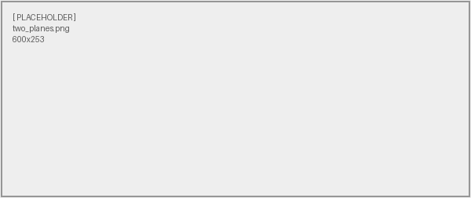
A role is which planes you hold
In the FrogNet implementation the media host was an elected role, mediahost, gated on ffmpeg with libvpx. The current Communicator’s media server, comms-media on port 8994, is started on a node by fdf-comms.sh (or runs on the droplet) and says where it is in the pond’s where cell; the Android Communicator and the kart demo find it there, with nothing typed (the desktop comms-app is still handed --ram and --media). It is not elected and it does not dissolve between calls.
What the media server does is fan-out, and the shape of the fan is the whole economy of the call. Each participant sends one uplink. The server fans each participant’s audio and video to every other participant, never back to the sender, because nobody needs to be sent themselves; it transcodes a source once for each smaller size a viewer needs, and each receiver mixes the voices it gets. A rung is encoded only while someone is actually on it: the first request for a rung starts it, the last to leave stops it, and one encode feeds every leg that wants that rung. The per-leg choice that always applies is the cheapest and most useful one — whether this recipient is taking video or only the audio bed — so a phone that asked for sound alone is never charged for pixels it cannot show.
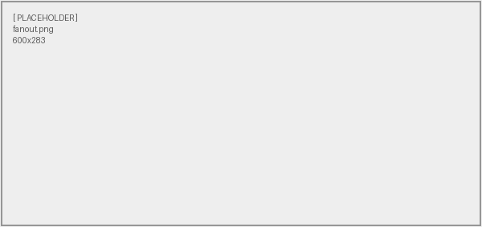
The ladder — from bullfrog to pulse
When the link cannot carry the richest rung, the call does not stop; it descends a ladder of rungs, each one a smaller promise than the one above, none of them silence. Mono audio under every video rung, color at the top three and grayscale at the fourth, at a framerate the sender holds constant (24 by default) so that a step down is a step in picture, not in motion:
rung carries needs
---------------------------------------------------------------------
L8 1920x1080 colour video + audio 3 Mb/s camera
L7 1280x720 colour video + audio 1.2 Mb/s camera
L6 854x480 colour video + audio 600 kb/s camera
L5 640x360 gray, then 480x360 / 320x240 /
160x120 gray (4:3) + audio 300/250/150/60 kb/s
below L5 audio only mic
---------------------------------------------------------------------
audio on every rung that carries it: Opus, 24 kb/s, 16 kHz mono
The rungs once carried names, BULLFROG at L8 down to PULSE at L0, and a text floor; the running code has the video sizes and audio only.
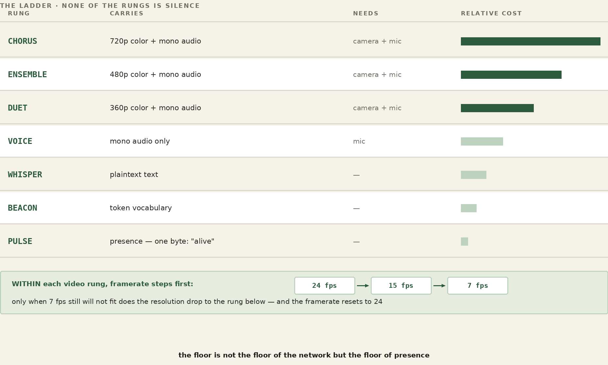
Two things choose the rung, and they are not the same thing. The ceiling is the highest rung this machine may source — set by what it has and what it was told to use. A camera ceilings at the largest rung its picture fills: L8 for a 1080p camera, L7 for 720p. With no camera the call sends audio only. A video rung needs a camera and only a camera: kill the audio and the ceiling stays where it was — the picture goes out with no audio bed under it, and the far end is told there is none. The bearer is what the link will actually sustain right now. The rung we send is the highest one no greater than the ceiling and no greater than the bearer — the richest thing we are both allowed and able to deliver. Below the smallest gray picture the call is voice alone, and that is the floor.
How the ladder moves — backpressure
Nothing estimates bandwidth here. There is no probe, no bitrate guesser, no model of the link — there is the data plane's own honesty. When a send cannot go, the socket says so, and that refusal is the only congestion signal we need or trust: the network telling us, in real time and without a guess, that it is full. Drops accumulating means step down. Up comes only after three clean seconds at full frame rate, and a rung that just failed is held off for 15 seconds, doubling to five minutes.
The frame rate is held at its target, 24 by default; falling below three quarters of it (never below 10 fps) for more than three frames is itself a reason to step down. Each step down is a smaller picture: 1080p, 720p, 480p, 360p gray, then 480x360, 320x240 and 160x120 gray, then audio only. Climbing back reverses the path. A band of hysteresis sits between down and up so a single bad instant does not trigger a cascade and a single good one does not provoke a premature climb: step down readily, climb back only once the link has been calm for a while. And every leg does this on its own, against its own bearer, so a peer on a failing link walks itself down to voice while everyone else holds high definition — one bad connection degrades only itself and never drags the room down with it.
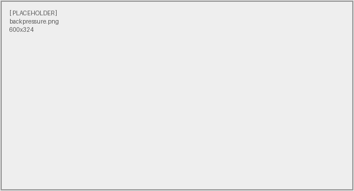
Why it never dies
Put the pieces together and you get the property the whole chapter has been promising. A call cannot fail, because failure has been defined out of it. The control plane holds the call as shared memory whether or not a frame is moving; the data plane is free to shed every picture down to voice alone; and the ladder guarantees that between high definition and voice there is always another rung to stand on. So the call rides its link down — 1080p to 720p to 480p to a 360p gray picture, smaller still, then voice — and rides it back up when the link returns, with no restart, no re-dial, and no moment at which it was ever gone. The heartbeat is control; the video was only ever data; and the call was never the bytes.
On the record — the field proof
WATCH
Proof It Works — the 900 MHz call, with the did/would counter on screen
WORKED EXAMPLE — A working call, conducted over the link being demonstrated
bearer 900 MHz radio, ~1 Mbit ceiling carried 1280x720, bidirectional measured 22 fps, no dropped frames latency no perceptible delay either direction did / would ~89% of bytes never sent
That was not a demonstration recorded over a good link and described afterwards. The conversation in which those numbers were read out was itself running over the radio, both directions, while the participants discussed what they were seeing. The honest version of a claim about degraded links is one you make on a degraded link, and doing it on a conference call under ideal conditions would have proved nothing at all.
Two things in that block are worth separating. Twenty-two frames a second at 720p inside a one-megabit ceiling is the headline; the absence of the several-second delay that everyone now expects from a video call is the part practitioners notice first, because latency is what a naive adaptive scheme buys its bitrate with. And the did / would figure on the call bar is a running estimate, labelled as one wherever it appears — bytes that never had to cross, against published figures for the same session, not a packet capture.
The limitation of the run is stated by the people who ran it: the endpoints could not be separated by the five hundred feet that would have made the radio path interesting as well as the protocol. That is a smaller proof than it could have been and it is written down as one.
None of this is a diagram on a whiteboard; it was put on real radios over real distance, and the demonstration is worth naming precisely because of how the two halves of the work met in it.
Two sources in Seattle fed a call out across the FrogNet overlay, through a broker relay, to a node in New York sitting behind a roughly one-megabit 900 MHz radio backhaul, and the result was fanned back to Seattle to a screen. The hardware made the link exist where it had no business existing: Dan's RF and antenna work held a usable path through a 900 MHz HaLow radio that a clean lab would have called impossible. The software made the call survive on top of it: the high-definition rung held near a megabit; as the link tightened the ladder stepped the call down on its own; and when the link recovered the call climbed back to high definition in the same session, without a restart and without anyone touching it.
That is the team, stated as the proof states it. Radio and antenna on one side, the stateful media stack on the other, and a real-time call standing up over a link neither half could have carried alone. Hardware reaches; software adapts; and the conversation holds in the middle. That is Song of the Frogs.
FOR THE GUILD
Notice what Song of the Frogs actually was: one object that compressed its control envelope, elected the machine best able to carry the stream, and then deliberately sent the media itself around the compression, because a video frame never repeats and diffing it is pure cost. That shape -- compress the conversation, leave the payload alone, pick the host by what the payload will demand -- is not specific to video. It is what audio wants, what a telescope wants, what a lidar sweep wants, what any sensor producing more data than it produces meaning wants.
Two doors. To talk about it — this book lives in a public repository and its Discussions are open at github.com/FawcettJohnW/FrogNet-Living-Network/discussions; no licence is needed to argue there. To build on it, take it: fawcettinnovations.com/download.html — free software under the GNU GPL, version 2 only (GPL-2.0-only), no licence to request and no form. What you build on it and distribute is GPL-2.0-only too; that is the deal. Questions are welcome and nothing depends on them.
Exactly one of these exists. Its adaptive ladder was tuned by watching a real call degrade on a real link, which is the only way that is ever done well, and every other medium wants the same treatment from somebody who knows that medium. If you have spent years with a particular kind of signal and have opinions about how it should behave when the link gets worse, that expertise is the scarce thing here. The interface is the easy part.
What the ladder became
Everything above is true and none of it is the whole story any more. The ladder in this chapter is the one that was tuned on the radio link; carrying it into a deployed Communicator changed it in five ways worth naming here, because the chapter that details them sits a long way further on and the shape of the thing has moved.
- Audio and video travel on independent connections. Not one wire arbitrated by a lock — two persistent sockets, each carrying length-prefixed media frames, the first frame on each declaring audio or video. A voice packet cannot wait behind a keyframe because it is not behind it. Audio priority stopped being a scheduling rule and became a property of the topology.
- Backlogged video is stale state, not a debt. A queue of undelivered frames is a queue of pictures of the past. There is no queue: a frame the wire will not take at the moment it is ready is discarded, and the next one supersedes it. The same instinct as everywhere else in FrogNet — hold the current value, not the history.
- Keyframes are recovery points, and are treated as such. Shedding by size drops them first, because they are the largest frames there are — and everything after a lost keyframe decodes against a reference that does not exist. So a constrained viewer sheds the frames BETWEEN keyframes and holds the newest keyframe, for at most three seconds, until it can be sent, the newer overwriting the older; a viewer left without one asks the sender for a fresh keyframe.
- Adaptation is driven by what actually reached the viewer. Frames delivered against frames aimed, per two-second window, stepping down under 80% for two windows and up after three good windows and 45 settled seconds, plus any cap the viewer set. Measured: on links where the arithmetic says video is impossible, the wire was carrying it.
- Conversational continuity outranks frame delivery. A dropped picture is a degraded call. A gap in a voice is a broken one. Every rule above resolves in that direction when they conflict, and the ladder floors at a voice rather than at nothing.
What changed is what decides the rung, and it is no longer a number this end computed — it is what the far end could actually be given. Part XV works through the whole of it.
34. REST and Ribbit, Side by Side
Everything in these two parts comes down to a handful of choices made differently from the way the web makes them. Here they are next to each other. The left column is what most networked software does; the right is what FrogNet does instead. The application above the line is making ordinary HTTP calls in both columns — the entire difference lives below it.
| Traditional REST | Ribbit / BLDC-1 | |
|---|---|---|
| Interaction | Request then reply, serial. The sender waits for each reply before sending the next. | Many requests in flight at once, fanned in and interleaved on one socket, matched home by sequence. |
| Concurrency | A new connection per request, or pipelining that head-of-line-blocks behind a slow reply. | One persistent socket, a worker pool, out-of-order completion; independent channel sets isolate streams. |
| State | Stateless — every request re-states its full context. | Stateful shared memory — both ends keep a reference; only the difference moves. |
| On the wire | Full request and full response, every single time. | A template learned once, then SAME / DIFF / FULL against it. |
| Compression | The application's job, optional, per response (e.g. gzip). | Infrastructure (BLDC-1), automatic on every exchange, zero application changes. |
| Wire protocol | HTTP/1.1 over TCP, usually wrapped in TLS. | FNWP-1 — length-prefixed, opcode- and sequence-tagged frames on an established socket. |
| Custom behavior | An Apache vhost plus application code: per-endpoint, opt-in, schema-bound. | A custom handler (one class, virtual slots) registered in one registry; matched and triggered automatically, app unchanged. |
| Where it runs | An Apache worker per request, into the application. | The proxy intercepts port 80; a daemon worker pool runs the codec and the handlers. |
| Names | DNS — administered, with TTLs and propagation delay. | /etc/hosts as ground truth, recomputed on every merge and rewritten when it changed; upstream DNS only for off-mesh names. |
| Coordination | Messages addressed endpoint to endpoint. | Ribbit Region, implemented historically as FrogNet Memory — read and write shared state by pattern; application code does not address peer application endpoints. |
| Link use | Idle between transactions — dead air on the round trip. | Near-100% duty cycle; the wire stays full. |
| Connectivity | Online-first; disconnection is an error to be handled. | Offline-first; a node is a whole network alone, the mesh an enhancement. |
| Security | Per-service auth; TLS / PKI handshakes on every channel. | None forced: the inter-site tunnel is WireGuard; access control and further layers are the builder’s to add. |
Part XI
Ribbit: The Programming Surface
WORKED EXAMPLE — The Ribbit loop: determine your truth, write it, read the other truths, go
The three parts before this one built something that stays alive and holds what it knows. This part is what that does to the person writing code. It is the shortest part of the book and the one most likely to change how you work, because the change it describes is subtractive — it is a list of things you stop doing.
35. What You Stop Doing
Think about the last distributed bug you chased.
Odds are it was not a bug in what your program was supposed to do. It was a message that arrived twice. A timeout tuned for a network that behaved differently on Tuesday. A service that came back up and rejoined with stale state. A retry that succeeded on the third attempt and left two half-finished things behind it. A schema change that was fine in staging. Something that only happened under load, and only in the environment you cannot attach a debugger to.
You probably found it eventually, and when you did, the fix was small. What took the week was that you could not see the problem — you were reconstructing a conversation from both ends, after the fact, from logs written by people who did not know what you would need.
None of that was your actual job. Your job was the thing the business asked for: the order gets placed, the robot arm goes where it was told, the two people can see each other. Everything else was tax.
A Tuesday, before and after
Before: a change to what one service knows means a change to what it says. So you version an endpoint, coordinate a deploy order, write a compatibility shim for the old callers, add the field to three schemas, update the mocks in four test suites, and find out in production that somebody was parsing the response with a regex.
After: you write the value into the appropriate Ribbit Region. Whoever needs that truth reads it or holds on the relevant cell. There is no application-level announcement protocol to design, because the application is maintaining state rather than choreographing a conversation.
Before: your integration environment is a small distributed system of its own, and it is down. After: the simulator runs the real discovery, routing and election code against a modelled topology on your laptop, and it does that because none of that code ever asks where anything came from.
Before: 3 a.m., a retry storm. After: there is nothing to retry, because nobody is delivering anything. State is a thing that is, not a message that has to arrive.
For anyone reading over an engineer's shoulder
The idea underneath is older than computers and you already use it every day.
A noticeboard in a shared kitchen does not send messages. Somebody writes “milk is finished” and it stays written until it stops being true. Nobody retries it. Nobody worries whether you were in the room when it was written. Nobody versions it. If you want to know, you look. If it changes, whoever changed it wrote over the old one, and the old one is not interesting.
Almost every distributed program written today works the other way: it phones each person individually, hopes they picked up, calls back if they did not, and keeps a list of who has been told. That is a great deal of machinery to replace a noticeboard, and it is machinery that has to be built and maintained by somebody who would rather be solving the actual problem.
The rest of this part is about why we ended up doing it the hard way for so long, and what it costs to stop.
35a. Fifty Years of Moving the Line
For more than fifty years our profession has done the same thing over and over, under different names, and mostly without saying what it was doing.
The surface I started on was a deck of cards. program, then a 7-8-9 multipunch, then data, then a 6-7-8-9. That was the interface: the arrangement of holes was the contract between you and the machine, and getting it wrong meant a box of cards came back with nothing in it. Since then the line has moved repeatedly. We stopped writing machine instructions and wrote languages. We stopped managing disk sectors and managed files. We stopped scheduling execution by hand and used threads. We stopped provisioning servers and used virtual machines, then containers. Storage went from tape to spinning disk to solid state; networking went from a cable in a room to the internet; the machine itself grew multiple cores and then accelerators for arithmetic nobody wanted to hand-write.
Every one of those was sold as a new capability. Every one of them was really the same move: recurring engineering complexity relocated into the platform, so applications could get back to the actual problem. Threads are an architectural choice that streamlines execution. Objects are a way to reuse. Virtual memory is a lie the operating system tells so you can stop thinking about where a page physically lives.
None of it changes the core job of a programmer, which is to solve problems. That is worth saying plainly, because each of these shifts arrived with a great deal of noise suggesting it changed everything. It did not. It changed what you no longer had to say out loud.
35b. What Distributed Systems Missed
Distributed systems largely sat out that progression. Applications still program communication.
Look at what a typical service actually contains. Endpoint definitions. Serialisation. Retry policy. Timeout tuning. Idempotency keys. Circuit breakers. Message schemas and their versions. Queue topology. Consumer groups. Dead letter handling. Test doubles for every service it talks to, and an integration environment because the doubles are never quite right.
Almost none of that is the problem the business hired anyone to solve. It is the cost of describing a conversation between machines, paid again in every application, by every team, forever. It is exactly the shape of the complexity that got moved into the platform in every other domain — and it is still sitting in application code.
The comparison worth making is not throughput. It is engineering cost: how much of a codebase exists only to move state; how much test infrastructure validates communication rather than correctness; how many hours go into debugging conversations rather than logic; how much architectural complexity exists solely because the application has to describe who talks to whom.
35c. The Test That Settles It
There is a way to tell whether a system has actually raised the surface or merely renamed things, and it is a test any engineer can apply to their own code today.
If your code is dependent on knowing where the data came from, you cannot properly mock or simulate it. That is the whole test. Not a matter of taste — a structural fact. Code that reaches for an endpoint has a dependency on that endpoint existing, answering, and answering in a particular shape. You can wrap it, inject it, fake it, and every one of those is another thing to build and keep true.
Under Ribbit an application need not know which participant produced a value or which transport carried the operation to the Region. It knows the value is there under the Region's API and schema. That is the removal of an application dependency. FrogNet's simulator is a separate example of the same discipline applied below the programming surface: transport logic can be exercised against modeled topology without application code acquiring transport knowledge.
So the division of labour changes: applications test domain correctness; the platform tests communication correctness. You stop building the test infrastructure that every distributed project builds, badly, from scratch.
35d. What It Looks Like In Practice
Three shapes, briefly, because the pattern is the same in each.
- A game backend. A shared world expressed as conversations among authoritative nodes becomes shared operational memory. Authority changes hands; entities do not conceptually move. Developers debug state rather than conversations.
- Enterprise services. Business operations expressed as conversations among REST endpoints become services maintaining shared operational state. The orchestration layer that existed to sequence calls has nothing left to sequence.
- Robotics. Planners, controllers and simulators consume the same shared state instead of exchanging messages about it — while the hard real-time loops stay exactly where they are, local and untouched, because that is not a distributed problem and never was.
The through-line: debug state instead of conversations. Inspect shared memory instead of tracing packets. Maintain invariants instead of retrying messages. Write domain logic instead of communication logic.
35e. The Question
Assembly became C. Boost became C++11 — and that one is worth dwelling on, because Boost was not wrong. It was excellent, widely used, and it worked. What happened was that enough people did the same difficult thing often enough that the language absorbed it, and afterwards nobody wrote it by hand again.
Neither transition was about the old way being bad. Assembly is fine; people still write it where it belongs. The transition happened because the recurring part had become well enough understood to move down a layer, and once it moved, the code that used to express it simply stopped existing.
So: is message choreography the assembly language of distributed systems?
If it is, then the endpoints and the retries and the schemas and the queue topology are not the architecture. They are what the architecture is currently written in. And the next logical step is a higher surface — which is what this book has been describing all along, in some detail, from the hardware up.
The claim is not that FrogNet is that surface. The claim is that there is one to be had, and that it is worth someone building it properly. This is a demonstration that the idea holds together well enough to place a video call on a link a bitrate table would refuse.
35f. The Surface Itself
The argument so far has been about what stops existing. This chapter is about what takes its place — the shape of the surface an application actually programs against. Section 1a put the model on one page before the machinery; now that you have read the machinery, here it is with the reasoning attached.
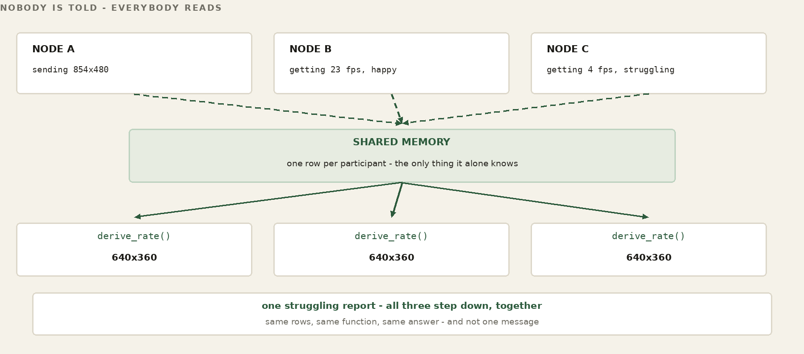
From verbs of communication to verbs of memory
A distributed application today is written in the verbs of communication. send, receive, retry, timeout, endpoint, serialize. Above them sit the verbs of the web, GET and POST, which are the same idea wearing a nicer coat: a request goes somewhere, an answer comes back, and the program has to know where somewhere is. Every one of them is a statement about how a value travels. The programmer is required to think about the wire because the surface gives no way not to.
Under Ribbit the verbs are verbs of memory. An implementation still has a RAM manager and a transport path, but those are below the application surface rather than peers the application choreographs. The shape of the thing, in pseudocode:
/* pseudocode -- the shape of the surface, not its signatures */ write(region, tuple, value); write what you know value = read(region, pattern); read what is currently true hold(region, pattern, version); wait until it changes
Those three lines are pseudocode and should be read as such. Current Ribbit implementations provide ordinary reads and writes plus held reads for state that a participant wants to wait on. The exact API is domain-defined: a vendor or application owns its API and tuple-shaped schema. The invariant is not a particular function name; it is that waiting is expressed against shared state rather than rebuilt as an application polling or notification protocol.
The change the pseudocode is trying to show is not the names. It is the question the programmer asks. Before: which service do I call? After: what is the current value? The first question has an answer that goes stale, needs a retry policy, and has to be mocked. The second has an answer.
The application manipulates memory. Ribbit defines that memory surface; the selected transport performs the communication beneath it.
Threads are the mental model
The closest thing most programmers already have to this is a multithreaded program, and the analogy is worth taking seriously rather than treating as decoration.
Several threads run at once. Each may read data another thread owns. Each may update state the others can see. Nobody writes a message protocol between thread four and thread nine; they share memory, and the discipline is about who may write what and when. That discipline is real work — but it is work about state, which is the work the problem actually contains.
Ribbit extends that mental model across machines. A participant on one machine and a participant on another coordinate through shared Region state rather than by addressing one another. The network boundary still exists physically; what disappears from the application surface is the requirement to program the conversation across it.
Concurrency does not go away
Raising the surface removes the communication code. It does not remove concurrency, and any claim that it does should be disbelieved.
Several bundles may read and write the same operational state, and they will do it at the same time. The important thing is where that is dealt with. An application should not answer it by inventing a distributed protocol of its own — that is the very code this whole part is about not writing. It belongs in the memory model, the same way a thread's answer belongs in the language's memory model rather than in each program that uses threads.
The guarantees that belong there, stated as design intent rather than as a description of what is shipped today:
- Authority ownership — one writer holds the right to a value, and the right can move.
- Versioning — a value carries enough to tell a stale read from a current one.
- Leases — authority that expires on its own, so a departed writer does not hold anything forever.
- Transactions — several values that must change together, or not at all.
- Optimistic updates — write on the assumption of no conflict and reconcile if there was one.
- Single-writer semantics — the region that simply refuses a second writer.
Which of these exist today is not a matter of inference. What FrogNet’s put() gives you today is the default Region's policy: one current value per three-coordinate key, with no history, a timestamp so a reader can age a value out, and one form of ownership: a tuple written with own=True belongs to the writing process and is deleted when that process exits normally; a writer that crashes or is killed leaves its tuple until readers age it out by its timestamp. That is closer to a lease held by liveness than to authority that can be handed on. The rest of that list is where the memory model is going; section 61 records what the later Ribbit work has already shown (held reads, ownership, expiration) and what remains open. Naming the whole set here is deliberate: the surface is only worth adopting if the hard part has somewhere to live, and this is where it lives.
So the division is the same one as everywhere else in this book. Ribbit defines the distributed memory contract; applications define behavior. The Region's API, schema, ownership and lifetime policy say what concurrent truths mean. The transport does not decide that, and each application should not reinvent a message protocol to decide it.
Libraries and bundles
Two words get used in a particular way, and it is worth pinning them down.
A library is a reusable capability built on Ribbit Regions: a common state pattern, packaged. Presence is one example. Teams, messaging, sensors, actuators, authentication, transactions and domain objects can each be expressed as reusable Region/API/schema conventions rather than new endpoint choreography.
A bundle is a complete application packaged to run on FrogNet. The Communicator ships as a self-contained example under /opt/frognet_semantic/ribbit/examples/communicator. That is an implementation convention, not a Ribbit requirement. The Communicator is the worked example in this book; the Ribbit programming model itself is transport- and packaging-independent.
A bundle programs shared operational memory. It does not program communication. That is the entire claim, and it is testable against any bundle anyone writes: open it up and see whether there is an endpoint in it.
The principle, in one line
The programmer thinks in terms of memory. FrogNet thinks in terms of communication.
Everything in this part — the Tuesday, the fifty years, the test about mocking, the question about assembly language — is that sentence argued out at length. If only one line survives, it should be that one.
Part XII
Security
FrogNet reduces the application attack surface to almost nothing, and it does so by shape rather than by hardening. Ribbit does not publish one endpoint per operation. Each vendor's memory is one listener, its RAM host, on one path (/<vendor>-api by default; the FD&F RAM manager’s is /FawcettInnovations.RINA.ram_interface.php), and only participants speak to it. Where that listener sits decides who can reach it: on a node behind its uplink, nobody off the mesh can; on a public host, such as FD&F’s RAM server on 8840 where fdf-services.sh runs, anyone on the internet can. Read that as the scoped claim it is: it is about the application layer, and it is not a claim that a node answers nothing anywhere.
That is a description of the deployment, not a claim about how hard it would be to break in. The application listeners that do exist are few, and chapter 36 names each one.
What that has bought, so far. These machines have been running across the country for months in the ordinary background noise of the internet, where anything reachable on the application layer gets found and probed. Nothing has been found there, because there is nothing there to find. That is evidence, and it is worth exactly what evidence of that kind is worth — an absence of incident over a period, not a proof. And it is bounded by the thing this part says next: FrogNet encrypts nothing of its own. It calls OpenSSL for SHA-256 and HMAC-SHA256 to name cache entries, which is integrity, not confidentiality. Confidentiality comes from WireGuard, which is the tunnel and is basic, or from TLS where you configure it.
A pattern you have seen since Part I now gets its name. FrogNet is not made safe by a product bolted onto it — no appliance, no suite, no cipher standing guard at the edge. It is made safe by its shape: the same architecture that makes it self-forming and cheap on the wire also leaves an attacker almost nothing to reach, no way in without coming physically near, and little to read even then. Four properties fall out of the design already built, and this part states each one plainly — and, just as plainly, where it stops being true. The author's own position is stated without hedging: for the private fabric this book describes, additional cryptography is unnecessary. This part earns that claim on architecture alone — and then, because your threat model is yours and not the author's, shows exactly where the encryption dial sits and how to turn it up.
FOR THE GUILD
Everything this book says about FNWP-1 and BLDC-1 (Part IX) is a description, and a description is not a specification. A book explains, argues, and chooses what to leave out. A specification may do none of those things: it says normatively what a conforming implementation must do -- what every field means, which behaviours are required and which advisory, what a receiver does with a frame it does not recognise. That document now exists in draft: twenty normative sections at technicalhome.html, FNWP-1 in section 11 and BLDC-1 alongside it. Read it rather than this chapter if what you want is the contract.
Two doors. To talk about it — this book lives in a public repository and its Discussions are open at github.com/FawcettJohnW/FrogNet-Living-Network/discussions; no licence is needed to argue there. To build on it, take it: fawcettinnovations.com/download.html — free software under the GNU GPL, version 2 only (GPL-2.0-only), no licence to request and no form. What you build on it and distribute is GPL-2.0-only too; that is the deal. Questions are welcome and nothing depends on them.
The draft does not close the gap that matters. A protocol only one implementation speaks is a file format with extra steps, and the second implementation is what proves the first one was a protocol at all. That has not happened. The draft settles a question this book could not -- when the code and the description disagree, which is wrong -- by declaring itself normative and marking what it could not verify. What it cannot settle is whether it is implementable by somebody who did not write the code.
So the guild has a seat for a spec editor, and it is not a documentation job. The extraction has been done once, badly or well, by the person least able to judge which. The work now is review: reading a section against the reference implementation, finding where it under-specifies, and being the person who says no when an implementation detail tries to become part of the standard. If you have done this before -- for an RFC, a working group, a standards body, an interop effort -- you already know it is a different discipline from writing, and that it is scarce.
36. Nothing on the Internet Answers
WATCH
Security By Architecture — the probe run on camera, and the challenge
Start with what a stranger on the internet can even find. The proxy on 80, Apache on 8080 and 8443 and the data daemon on 9009 bind all interfaces; dnsmasq binds only 127.0.0.1 and the node’s own .1 (listen-address and bind-interfaces, written by the merge). What keeps the internet off the first three is where the node sits, not what they bind to. A node is behind its uplink’s NAT, its 10.x addresses are not routable from outside, and it opens no tunnel to the outside: in a region it dials the hub, and its tunnel’s configuration names no listen port and one peer, the hub. Put a node’s uplink on a public address and those ports can be reached unless you filter them.
So a node behind its uplink presents no surface to the internet. This is not a firewall tightened until only the right ports are open. What a node does listen on is one memory per application, not one endpoint per operation: where the Communicator runs, its memory server comms-ram binds 0.0.0.0:8800 and its media server comms-media binds 0.0.0.0:8994 (fdf-comms.sh). Anyone who can reach that node can reach those two ports. The per-operation request/reply endpoint is the thing FrogNet dropped when it dropped request/reply (Part IX).
The attack that is absent, not defended
The claim, in its strongest honest form — the weaker form gets FrogNet compared against things it is not competing with.
A conventional application publishes machinery on purpose: an endpoint, a router, a parser, an authentication path, parameter handling, deserialization, and the application logic reachable behind all of it. Every one of those is something an attacker can discover, characterise, fuzz, compose against, and eventually exploit. The standard attack is a pipeline — find the endpoint, learn its behaviour, find the flaw, build the request, invoke the handler — and every defensive technology in the field is an attempt to make some stage of that pipeline harder.
FrogNet is not better at surviving that pipeline. The pipeline has no first stage. There is no per-operation application interface to discover. What listens is one memory per application, a RAM host that participants read and write over FNWP, and on a node behind its uplink the internet cannot reach it. That is a different kind of claim from a smaller attack surface, and it is the one this part is actually making.
Which is emphatically not a claim that FrogNet has no threat vectors. It has plenty, and they are named in this part and the next: host access, wireless admission, WireGuard credentials, an authorised node that has been taken, the region host, local privilege boundaries, the supply chain, and bugs in FrogNet itself. Software still has vulnerabilities. What changed is that an attacker has to reach one of those instead of the application, and on a node behind its uplink none of them is reachable by talking to a published interface from the internet.
The obvious rejoinder is that an air gap achieves the same thing, and it does. That is rather the point: an air gap gets the property by giving up the network. The claim here is that you can have the property and keep useful networking — Seattle still talks to New York, memory still crosses, the call still connects — without the application ever publishing the interface that would conventionally be required to do any of it.
The one surface, named honestly
The FrogNet things that face the internet are on the region host. Its RAM manager answers on TCP 51888 only on the hub’s tunnel address, 10.253.253.254, its HTTP front and its FNWP sessions both, so it is reached through the WireGuard tunnel and never directly from the internet. Its hub’s WireGuard listens on UDP 50889, as silent as any other WireGuard to a packet that does not come from a key it holds. fdf-region-create prints the firewall lines that open the hub’s UDP port to the internet and the RAM manager’s port only on the tunnel, and the route rule that lets the hub forward between its peers on wg-<AREA>. When fdf-services.sh runs there, the services it starts face the internet too: FD&F’s RAM server on 8840, the kart race’s on 8799, and the Communicator’s comms-ram on 8800 and comms-media on 8994. On our droplet Apache on 80 and 443 serves the website; that is a deployment choice, not a FrogNet property.
Be exact about what gates the RAM manager. A member is gated: a /24 reaches the hub only through a mapping signed with the area’s site key, and the RAM manager refuses one that does not verify (EPERM). An invited member with no verified mapping gets a peer on the hub with its edge address and no /24. But the call that sets the site key, map_site, checks nothing. Anyone who reaches TCP 51888 can make it, and a new key for an area makes every member’s next mapping fail. What keeps others out is that the RAM manager listens only inside the tunnel, which answers only keys an invitation admitted; every invited member can reach it, and every invitation already carries the region’s key. The hub routes the region’s verified /24s, and every member accepts 10/8 from it, so root on the region host can reach node services. What it lacks is the semantic state those services hold, not a route to them.
Over radio the picture is starker still: there is nothing on the internet to aim a scanner at, because the link is not on the internet. A 900 MHz bearer (Part III) carries the 10-net between two boxes and terminates at both; a listener would first have to be within radio range — which is the next section.
WORKED EXAMPLE — Two enrollment shapes. Only one of them is here.
what FrogNet does
operator, on the region host fdf-region-create (makes the site key), fdf-invite NAME
operator, on the node the installer with --invite, or fdf-region-join
node -> RAM manager a session; its facts; mappings signed with the key
hub a peer, and the /24s the signed mappings name
what it is usually mistaken for
anyone, from anywhere find the enrollment app
anyone create an account
anyone configure a network
Read down those two columns and the difference is not a hardening measure, it is a different shape. Every step on the left begins with somebody who already has the region host or its key. There is no web form and no console. The traffic to the RAM manager is plain HTTP and FNWP on its own port. FrogNet’s interception applies only to port 80 on 10/8, and the RAM manager, though it sits at 10.253.253.254, is on its own port, so that traffic never enters the semantic wire.
The semantic wire runs between nodes, inside 10/8, and between sites that traffic crosses the hub in transit. Be exact about what it buys there, because it is easy to overclaim. Capturing one semantic frame does not necessarily reveal the complete request or response it stands for, since the frame may carry only a difference against shared state — materially different from a sequence of complete, independent, stateless transactions. It is not encryption and no substitute for authentication. An attacker who compromises an endpoint, obtains the templates, or accumulates enough context can reconstruct what was represented. Confidentiality across the open internet comes from the WireGuard bearer; the semantic wire reduces what is on it, and that is a different claim.
What a scan actually returns
A node normally has no public address of its own. Behind its router there is nothing for a scan to reach.
The region host is the one machine that has to answer. A member getting its first tunnel cannot ride a tunnel that does not exist yet, so first contact crosses the open internet: a WireGuard handshake to the hub’s UDP port, from a key the invitation already admitted. The RAM manager is reached only after that, through the tunnel. No scan of a region host’s two ports has been recorded for this book. The commands are short, and what they return belongs here once they have been run:
nmap -Pn -sT -p 51888 -sV <region host> nmap -Pn -sU -p 50889 <region host>
History. The scan this chapter used to print was run on 17 August 2026, from an ordinary desktop on a domestic connection, against the broker’s port, 18257. It found three ports open — 80 and 443 for Apache, and 18257 — and the broker answered nine nmap probes with a JSON 404 or a plain-text 400 and nothing nmap could name. The broker was removed from the tree on 12 October 2026, and that scan no longer describes anything that runs.
What an open port does not prove
An open port that answers is a service, and a service is code, and code has bugs. Nothing above says otherwise. An attacker who reaches 51888 from inside the tunnel has found the region’s memory — its members, their facts and mappings — and a map_site with no check in front of it. That is why it listens only inside the tunnel, and why an invitation is a secret. There is still no application behind it: no user data, no business logic, no sprawl of endpoints.
Run it yourself. The commands are above.
Take the region host. Now show me the pivot.
Everything above is an argument until somebody tries to break it, so here is the invariant stated as something that can fail, and the terms under which it would.
Compromise the region host completely and you still have not compromised the nodes. That is a stronger claim than “the region host is hard to attack”, and it is a more useful one, because it does not depend on the region host being well written. Assume it is not. Assume it is owned.
And it is stronger than it first sounds, because the region host is not merely adjacent to the traffic. It is the inter-site data path. Every cross-site packet transits its hub. So this is not a claim that the attacker has been handed something peripheral — they have been handed the wire.
Start with what the region host does see. Its hub ends a separate tunnel from each member and forwards between them in the kernel, so inter-site traffic is in the clear there: it is outside the WireGuard boundary. Its RAM manager holds the region’s memory: every member’s facts (name, GUID, /24, public key), every mapping, and the area’s site key, which fdf-region-create also keeps root-only in /opt/fdf/var/site-key-<AREA>. It runs none of the semantic stack — no templates, no learned structure, no cache — but a capture taken there from the start of a conversation learns the templates, exactly as section 38 says.
Transit is handled in the kernel. The hub forwards by the kernel’s own routing: one route per member /24, via that member’s edge address. With the kernel’s WireGuard the bytes never enter a process on that machine; where the region host runs wireguard-go (a kernel with no WireGuard module), they pass through that one process. Nothing parses them, nothing buffers them at the application layer, and nothing writes them to disk. There is no history of the traffic to seize.
That matters for the shape of the attack rather than its difficulty. An attacker with root can of course start capturing — but they are starting a capture, not opening a store. What was already forwarded is gone, and what they collect from now on is still keyless and still contextless. The region’s memory is another matter: root on the region host holds it, and can rewrite it.
The answer to a compromised region host is a new one. Run fdf-region-create on a clean machine, which makes a new site key, and give each member a new invitation (fdf-invite NAME there, fdf-region-join on the member); it carries the new key and the new address. The members’ facts and mappings come back with their sessions; nothing else needs restoring.
So the challenge is not rhetorical. Start the attacker with root on the region host and see whether either of these can be made to go red.
ORACLE 1 region-host pivot
given root on the region host, whose hub routes the
region's /24s and whose 10/8 every member accepts
red if a new application-level exchange can be
originated with an internal FrogNet-only service
ORACLE 2 application recovery
given root on the region host — all cross-site traffic
transits its hub, so capture is free
red if protected application content can be
reconstructed without compromising an endpoint
The broker’s third oracle — manufacture enough authority to join as a member without the endpoint’s secret — is not offered against a region host. It holds the site key, and with the key it can sign any mapping. Root on the region host is the region’s authority, and that oracle would be red by construction.
Those are the terms. A professional red team, an automated system, or one determined person with a weekend — the source of the attempt does not matter, and neither does how clever it is. What matters is whether the run goes red, because a red run is a finding and a hypothetical is not.
If one of them goes red, that is the best outcome available: an architectural failure discovered while it can still be fixed, by somebody who was not in the room when it was designed. If none of them do, that result is worth more than another paragraph asserting the property — and it is the only kind of evidence this book accepts for anything else, so it would be dishonest to want a softer standard here.
FOR THE GUILD
This is an open invitation with defined failure conditions, which is the only kind worth making. Bring the topology, bring the tooling, bring whatever you like. State which oracle you are attacking, run it, and show the result. A reproducible counterexample is a complete contribution and does not need to arrive with a fix — but a generic “what if”, with no demonstrated path from the region host to a node, is not a finding and will be treated as what it is.
Two doors. To talk about it — this book lives in a public repository and its Discussions are open at github.com/FawcettJohnW/FrogNet-Living-Network/discussions; no licence is needed to argue there. To build on it, take it: fawcettinnovations.com/download.html — free software under the GNU GPL, version 2 only (GPL-2.0-only), no licence to request and no form. What you build on it and distribute is GPL-2.0-only too; that is the deal. Questions are welcome and nothing depends on them.
When you must take input: a drop box, not a door
Sometimes the one surface has to accept something from a stranger — an enrollment, a licence request, an uploaded file. The reflex is to stand up a service that listens, takes the request, and hands it inward: a door. FrogNet does not cut a door. What faces the internet writes files into a watched folder and nothing more; it never addresses the network, because it has no route in. Something on the inside pulls each file, inspects it as strictly as you like, and only then hands the vetted result to the applications behind. Replies make the reverse trip — the inside writes out, the exposed side serves it back. The inside reaches out and pulls; the outside never reaches in.
This is a selective directional gap, not a classic air-gap: the back end is unreachable from the public internet, yet a gateway still carries data across on your terms. The consequence is the part that matters. Compromise the exposed host and you own a folder of files, not a foothold on the network. The form can be as internet-facing as it needs to be and still be no attack surface on the fabric, because the crossing is files-only and every file is examined on the inside before anything trusts it. “Drop a file, then inspect, then pass it on” is a stronger boundary than “accept a request and route it” — and it is how a FrogNet can host a public form without putting a single node within reach.
37. Reaching the Inside Means Being Near It
If the internet cannot reach a node, the way in is the segment — and the segment is a physical place. To touch an internal node you must be on the wire it lives on, or within range of the radio that stands in for that wire. There is no third way, because there is no internet-facing path to the inside for anyone who is not already a member. Access is gated by proximity, and proximity here is literal, measured in feet and miles: a cable is as long as the cable; onboard Wi-Fi is a room or a building; a 900 MHz HaLow bearer is the two miles of clear air Part III rated it for. To attack the LAN you have to come to the LAN.
This is a different kind of claim than “network security” usually makes, and the difference is worth holding. A firewall is a rule that says no to traffic that did arrive; proximity is the absence of any arrival to say no to. Inbound access from the internet is not switched off on a FrogNet node behind its uplink — nothing on the internet routes to it. Put its uplink on a public address and its listeners can be reached unless you filter them (chapter 36). The whole class of remote attack that begins “connect to the target from anywhere in the world” has no first move.
On the segment itself, trust is the plain fact of ownership from Part VII: the node is the .1, the DHCP and DNS authority for its own /24, and nothing routes onto that wire without its say. On a wired segment, being there is enough: the node hands you an address. On its Wi-Fi, the gate is the WPA2 passphrase. The GUID in /etc/fnid names a node; the site key gates the region’s mappings. Neither gates the segment. That is deliberate. FrogNet does not force access security, and it does not prevent you from adding it.
38. The Wire Carries References, Not Messages
Now suppose the attacker is on the wire — near enough, and set the credentials aside for a moment. What is actually flowing past on an FNWP-1 socket? Not messages. Part IX showed that after the first exchange of a structure, the wire carries SAME, DIFF, and FULL verdicts against a template — and that template, with its reference values, lives in each node's local cache, learned once from the first, RAW exchange of its shape and never re-sent. A capture off the wire is therefore a stream of opcodes, sequence numbers, and changed values measured against a structure the eavesdropper does not hold. A DIFF says “these fields moved to these values.” Without the template it moved them in, that is a handful of numbers with no shape to pour them into.
The meaning is in the cache, not on the wire. It is the same property that makes FrogNet fast — the wire is thin because both ends already remember the structure — read now as a security property: the wire is thin because it says so little on its own. Each frame carries a 4-byte FNW1 marker and an opcode, so it is recognisable as FrogNet. What it does not carry is the structure: after the first exchange, which on a new path is a RAW frame holding the original HTTP, the frames are references and changed values.
The honest boundary
Now the limit, stated as flatly as the claim, because a security reader will find it if the book does not. This is encoding, not encryption, and the distinction is real — real enough to be a recognized legal line, since compression and coding are not a cipher. Precisely what it means: an observer present from the first exchange of a shape (the RAW frame, which carries the original HTTP), who captures the conversation from its start, learns the template in the same act the endpoints do and can follow the diffs from there. Reference-diffing raises the cost of a capture and guts the value of a partial one; it does not, by itself, make the traffic unreadable to a patient listener who saw the beginning.
Which is exactly why the design does not ask it to. When traffic crosses anything you do not own — the open internet, most obviously — it crosses a WireGuard bearer, and then a listener on the wire gets nothing; the region’s hub still does. The semantic wire is why a partial or late observer learns nothing useful; the bearer, where you use one, is why there is nothing to observe. They are two layers, and the second is the next section.
WORKED EXAMPLE — What a mid-stream DIFF frame yields a listener
captured off the wire, mid-conversation: opcode RESP_DIFF seq 42 payload <field 3 -> 54.6> <field 7 -> 1719...> without the template (held only in each node's cache): field 3 of WHAT? field 7 of WHAT? names? units? shape? -> two numbers and nowhere to put them
39. Encryption Is a Dial You Hold
Here is the author's position, offered as a real opinion and not a hedge: for the private fabric described in this book, additional cryptography is unnecessary. The three sections above lean on no cipher. The surface is gone because nothing on a node answers the internet; the inside is reached only by someone physically near the wire or holding the Wi-Fi passphrase; the wire carries references into private memory rather than legible messages. That is a defense made of shape, and it holds whether or not a single byte is encrypted.
But one man's threat model is not another's, so FrogNet does not force the view — and the design fact that keeps the choice cleanly yours is this: FrogNet encrypts nothing of its own. It calls OpenSSL for SHA-256 and HMAC-SHA256 to name cache entries, which is integrity, not confidentiality. Confidentiality comes from WireGuard, which is the tunnel and is basic, or from TLS where you configure it. WireGuard is a bearer you supply — one transport among several (Part III), not a cipher woven into the fabric. FrogNet uses it; FrogNet does not contain it. That line is deliberate, and it is why “add encryption” is a decision about bearers you control rather than a change to the living network at all.
So encryption is a dial, and your hand is on it. Put a WireGuard bearer under a link and that hop is encrypted; put one under every link and nothing crosses any wire in the clear — and in both cases the fabric above does not change by a line, exactly as Part VII promised. Between sites, each member's hop to the region's hub is WireGuard. The hub decrypts, forwards in the kernel and re-encrypts, so the traffic is encrypted on the wire but not end to end. If you do not trust the region host, layer your own cipher on the payload. On a local wire you own, the author leaves it off and trusts the segment; if your setting says otherwise — a shared building, a hostile RF environment, a rule that simply requires it — put a bearer on that wire too, or layer your own cipher on the payload. The architecture is indifferent to which you choose; it was built to route over whatever you lay beneath it.
One discipline worth keeping. What is proven about FrogNet's security is architectural: the vanished surface, the proximity gate, the reference-only wire — each demonstrable, each resting on mechanism already in this book. Encryption is offered honestly as available — a capability you turn up to meet a need — rather than promoted as the headline. When someone asks “but is it encrypted?” the truer answer is the stronger one: it does not have to be, and if you want it to be, the dial is right here, and it is yours.
Part XII½
Programming Against Ribbit Shared Memory
This part is about writing programs against Ribbit shared memory. The hardest thing about the surface is not learning a new API; it is unlearning message passing. The implementation history in the surrounding FrogNet chapters is useful precisely because it records the mistakes made while learning to treat distributed facts as state rather than conversations.
39a. One Program, Many Threads
Here is the whole mental shift, and if you take nothing else from this part, take this: think of a Ribbit application as one program with many participants over shared memory. Not as parties in a conversation. Not as services calling each other. The participants may be on different machines and may reach the Region through very different transports.
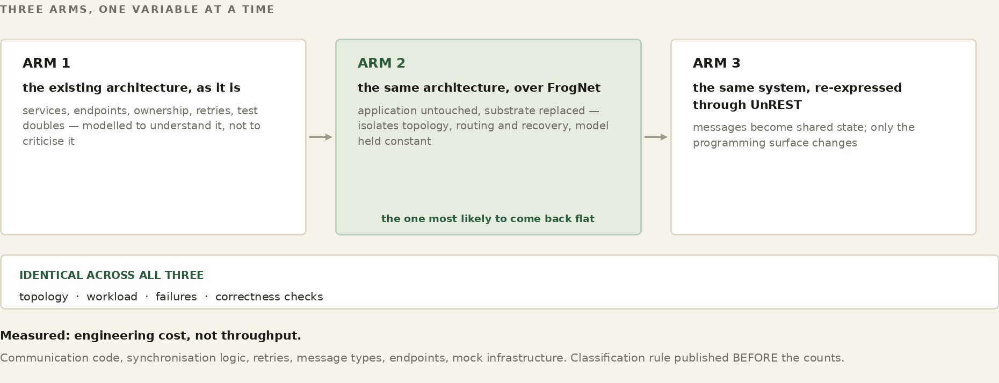
Nobody should have to invent a message protocol between participant four and participant nine merely to share a fact. They read state the others wrote, write state the others will read, and coordinate through the Region contract. The Ribbit C++ platform (a vendor's RamHost and RamClient) and the examples built on it are one implementation of that model, not its definition.
The failure mode has a shape, and it is worth naming so you can catch yourself in it: reaching for how do these two agree. Every regression in the session that produced this part came from that question. It is the wrong question. There is no agreeing. Each thread writes what only it can know, every thread reads all of it, and the answer is a pure function of that state.
A fact belongs to whoever can know it
This is the rule that decides what your program writes. A held keyframe is the viewer’s fact — nobody else is in a position to know it. A capture rate is the sender’s. A socket’s state is the relay’s. Write only what you alone stand in a position to know, scope it to yourself, and update it in place forever.
The Communicator got this wrong first. One call row per session carried a members list, written by whichever participant wrote last — so one node renewed other people’s membership, and a member who left was put back by somebody else’s heartbeat five seconds later. No amount of care on the leaver’s side could fix that, because the row was not the leaver’s to write. Five rows replaced it, each written by the single party with standing to know the fact. [FOUR_TUPLES_V1]
A derivation must not read its own previous output
In the August Communicator, the rate at which every participant in a call sent was one pure function — derive_rate(state, ladder) -> geometry. No clock. No self. No I/O. Every participant ran the same function over the same rows and landed on the same answer without being told, which is what made agreement unnecessary rather than merely cheap. Today each viewer's rate is set by the media server from what that viewer's link drains and its download slider, and the server transcodes the one upload down to it.
Before that, the logic lived inline in the sender and again in the receiver, and the two diverged, because two copies of a rule are two rules. Each end measured its inbound rate and wrote a request to the other; matched windows, no damping, and each step changed what the other measured. Observed at 23.8 of 24 frames per second with zero drops on both sides, hunting indefinitely while nothing at all was failing. [ONE_DERIVATION_V1]
The general rule is the one in the heading. A function that consults its own last answer is a controller with memory, and two controllers with memory disagree. If a fact must persist — the smallest size an end has failed at, say — it goes in the state, as a row, where every end derives the same ceiling and nobody keeps a private history. [A_RATE_THAT_FAILED_IS_NOT_A_CANDIDATE_V1]
Absence is not a measurement
The most expensive class of bug on this surface, and the least obvious. Zero frames arriving means the producer sent nothing. It does not mean this consumer is slow. Reading absence as slowness is a ratchet: the producer sheds, the consumer reports worse, the rate drops, the producer sheds more. [ABSENCE_IS_NOT_A_MEASUREMENT_V1]
It generalises past media. Absence is not evidence of slowness, of departure, of agreement, or of a clear ceiling. A missing row means you did not see a row. The store then returned 503 constantly, and a half-succeeded read returned a subset — so losing the far end’s row removed the very evidence holding a rate down, and it climbed; the next read found the row again and it dropped back, alternating every cycle. A shrinking read is not news. [A_SHRINKING_READ_IS_NOT_NEWS_V1]
Measure long enough to be a measurement
Frames do not arrive smoothly. Measured from one consumer, consecutively, from a producer sending a steady twenty-four: 45.8, 3.4, 21.4, 0.5, 25.2. Each two-second window taken as a verdict asked the network down every other time. A rolling horizon, and no verdict at all until it is full — a partial span is a short window wearing a longer name. [MEASURE_LONG_ENOUGH_TO_BE_A_MEASUREMENT_V1]
And measure in wall-clock, not in poll cycles. A report count is a count of ticks; at twenty milliseconds, five reports is a tenth of a second — faster than any promotion can be judged, so the two race.
Two conditions are not one flag
A consumer at 55.4 frames per second reported that it was not keeping up, because it had not yet been steady for three windows. Happy — earned over time, and what lets the network climb — and struggling — measured now, and what makes it step down — are two different facts that had been collapsed into one boolean. Not yet stable is not overloaded. [NOT_YET_STABLE_IS_NOT_OVERLOADED_V1]
Say why the answer is empty
An empty list has several causes and they look identical. So does a frame that aborted, and a report that never arrived. Name which one. An abort that prints frame size, bytes written, percentage, socket buffer, unacked queue and peer is a diagnosis; “it aborted” names nothing. [SAY_WHY_IT_ABORTED_V1] [SAY_WHY_THE_LIST_IS_EMPTY_V1]
Two related traps. Diagnostics must go where a person will read them — a GUI detaches from its console, so print goes nowhere, and two turns went into reading the absence of printed output as the code not reaching that line. And never read a counter somebody else drains: a guard read two counters that readers above it had already emptied, so it always saw zero and printed “NO drops and NO sheds” on the line directly above “drops 12/s”. [READ_A_COUNTER_NOBODY_ELSE_DRAINS_V1]
The codex conveys a structure
Three rules that will cost you an afternoon each if you meet them by surprise.
- A field the codex does not declare is not on the wire, whatever the caller offers. Change a payload without changing the field order and the field is dropped silently.
- A resident field needs a resident value. Declaring a field resident-once in freshness without also putting it in
residentconverges it toNone— so every call row published a null member, every lookup skipped every row, and nothing was joinable. No error. No warning. An empty list.[RESIDENT_ONCE_NEEDS_A_RESIDENT_VALUE_V1] - A channel belongs to one codex. Cache channels on the variable and the scope, never the scope alone.
[A_CHANNEL_BELONGS_TO_ONE_CODEX_V1]
The defence against all three is the same and it is cheap: a writer checks its own output. Compare what you offered against what the codex converged, after the flush, and name both when they differ. [A_WRITER_CHECKS_ITS_OWN_OUTPUT_V1]
FOR THE GUILD
This part is a distillation of one day’s failures, and it is certainly incomplete. If you write an application against Ribbit and find a rule that belongs here — or find one of these wrong — that is a contribution, and it does not require touching the transport. The rules that cost the most were the ones nobody had written down.
Two doors. To talk about it — this book lives in a public repository and its Discussions are open at github.com/FawcettJohnW/FrogNet-Living-Network/discussions; no licence is needed to argue there. To build on it, take it: fawcettinnovations.com/download.html — free software under the GNU GPL, version 2 only (GPL-2.0-only), no licence to request and no form. What you build on it and distribute is GPL-2.0-only too; that is the deal. Questions are welcome and nothing depends on them.
The rules, as one table
Every rule below was a doctrine tag in the August 2026 Python Communicator. That code has been replaced by the C++ Communicator (comms-app, comms-ram, comms-media), where a few of the tags survive in the source (FOUR_TUPLES, ABSENCE_IS_NOT_A_MEASUREMENT, READ_A_COUNTER_NOBODY_ELSE_DRAINS), some are recorded in the Communicator’s docs/FNAV-SPEC.md, and the rest survive only here. The rules are kept here as lessons, not as current source. They are grouped by the kind of mistake they prevent rather than by subsystem, because the mistakes generalise and the subsystems do not.
| Writing to shared memory | What went wrong without it |
|---|---|
| [FOUR_TUPLES_V1] | one row per session, written by whoever wrote last, so a node renewed other people's membership |
| [MEDIACONTROL_BELONGS_TO_THE_CALL_V1] | settings that belong to the call were scoped to a participant |
| [THE_KEY_IS_THE_NAME_NOT_THE_DECORATION_V1] | keying on a per-launch id accumulated one dead identity per run — forty in one roster |
| [A_MEMBER_IS_PROOF_THE_CALL_EXISTS_V1] | a call vanished when its originator's process ended, though members were still in it |
| [LEAVE_MEANS_FORGET_V1] | a member who left was written back by somebody else's heartbeat |
| [RESIDENT_ONCE_NEEDS_A_RESIDENT_VALUE_V1] | a resident field with no resident value converged to None — silently, no error, an empty list |
| [A_WRITER_CHECKS_ITS_OWN_OUTPUT_V1] | a payload changed without the field order; the field was dropped on the wire and nobody knew |
| [A_CHANNEL_BELONGS_TO_ONE_CODEX_V1] | channels cached on scope alone collided across variables |
| Deriving from shared memory | What went wrong without it |
|---|---|
| [ONE_DERIVATION_V1] | the rule lived in the sender and again in the receiver; two copies of a rule are two rules |
| [NO_SYNC_JUST_STATE_V1] | a request tuple — a negotiation with the word filed off |
| [ONE_RATE_FOR_THE_NETWORK_V1] | each end computed its own answer and each answer changed the other's evidence |
| [THE_RATE_IS_A_FUNCTION_OF_THE_ROWS_V1] | state read from a participant's memory rather than from the rows |
| [A_RATE_THAT_FAILED_IS_NOT_A_CANDIDATE_V1] | promotion into a rate already shown not to work — ninety cycles in five seconds |
| [A_CEILING_MUST_BE_ABLE_TO_LIFT_V1] | one struggling report pinned a call at 160x120 for its whole life, on a gigabit link |
| [SEND_NO_FASTER_THAN_THE_SLOWEST_SENDER_V1] | the bound that makes one derivation safe for everyone |
| [A_SENDER_BOUND_ALONE_CANNOT_CLIMB_V1] | a call with no receive reports could not find out whether more was possible |
| [THE_CONSUMER_OWNS_THE_RATE_V1] | four separate controllers independently moved the picture |
| [THE_RATE_IS_COMMANDED_NOT_NEGOTIATED_V1] | the same, stated from the sender's side |
| Reading shared memory | What went wrong without it |
|---|---|
| [ABSENCE_IS_NOT_A_MEASUREMENT_V1] | zero frames read as a slow consumer, ratcheting the whole call down |
| [A_SHRINKING_READ_IS_NOT_NEWS_V1] | a half-succeeded read lost the row holding the rate down, so it climbed, then dropped back |
| [MEASURE_LONG_ENOUGH_TO_BE_A_MEASUREMENT_V1] | a two-second window taken as a verdict: 45.8, 3.4, 21.4, 0.5, 25.2 from a steady 24 |
| [NOT_YET_STABLE_IS_NOT_OVERLOADED_V1] | a consumer at 55.4 fps reported it was not keeping up |
| [JUDGE_AGAINST_SOMETHING_V1] | a consumer with no producer claim was unhappy about nothing |
| [RECEIVE_RATE_IS_LINK_EVIDENCE_V1] | an arrival rate treated as an instruction rather than as evidence |
| [READ_A_COUNTER_NOBODY_ELSE_DRAINS_V1] | “NO drops and NO sheds” printed directly above “drops 12/s” |
| Saying what happened | What went wrong without it |
|---|---|
| [SAY_WHY_IT_ABORTED_V1] | “it aborted” names nothing; size, bytes, buffer, queue and peer name a fault |
| [SAY_WHY_THE_LIST_IS_EMPTY_V1] | several causes, one appearance |
| [SAY_WHICH_GATE_STOPPED_THE_REPORT_V1] | the same, for a report that never arrived |
| [DIAGNOSTICS_GO_WHERE_THEY_CAN_BE_READ_V1] | a GUI detaches from its console; two turns reading absence as non-arrival |
| [A_SILENT_EXIT_IS_A_BUG_REPORT_V1] | mainloop returning is not an event anybody sees |
| [SAY_WHICH_BYTES_ARE_RUNNING_V1] | a version constant is a claim; a hash of what Python imported is a fact |
| [A_FINGERPRINT_IS_OF_THE_CODE_NOT_THE_BYTES_V1] | editing in a Windows editor read as stale code |
| [THE_BUILD_SAYS_WHAT_IT_PACKAGED_V1] | no checkable chain from source to running client |
| [A_VERIFIER_THAT_CANNOT_RUN_IS_WORSE_THAN_NONE_V1] | a verifier shipped whose oracles had been trimmed |
| [SELF_CALLS_MUST_EXIST_V1] | a call to a removed method killed a send loop in a thread, silently |
39b. The Simulator Is a Shared Instrument
A note on how this system was actually built, because it bears on how you should expect to work on it.
FrogNet was written by one person working with an AI, and the simulator is the artifact that made that possible. Not as a convenience — as the mechanism by which a claim becomes checkable by both parties. An AI will state a plausible thing about code it has read; a person will remember a design decision from six weeks ago that has since changed. Neither of those is evidence. A test that fails on the old code and passes on the new is evidence, and it is the same evidence for both of them.
That is why the oracle discipline in Part XIII is not merely good practice here. It is the shared instrument in a two-party collaboration where one party cannot run the machine and the other cannot hold the whole system in their head at once. Every rule in this book about proving rather than asserting comes from that arrangement.
Where it earned its keep
The rate oscillation described above took a day, and the reason it took a day is worth stating precisely: a single-participant test cannot see a two-controller bug. Almost every regression was two things moving one knob, each reading the other’s effect as fresh evidence, and nothing in the existing suite could observe that shape at all. Twelve assertions passed while the system published empty rows. Twice.
What broke it open was a simulator that ran N participants as real threads over one shared store, with no messages between them — each writing what it alone knew, reading everything, deriving with the same pure function. It reproduced the hunt before the fix, ninety cycles in five seconds, and it asserted that every end reaches the same rate, agreement across the settled tail, a slow end pulling the call down, stopping where the link carries rather than at the floor, a third participant not disturbing a settled call, recovery from a pinned ceiling, and the behaviour of a thin read.
The general lesson is not about media. The shape of your test must be able to contain the shape of your bug. A test with one participant cannot see a disagreement. A test that stubs the thing under test proves nothing — the one module between the code and the store was the one module nothing tested, because every oracle replaced put and get with a dictionary, and four turns went into suspecting the store on no evidence at all. The source answered it in ninety seconds once anybody read it.
And assert on code rather than on prose. Three assertions in that session banned a word that the explanatory comment above the code happened to contain. Walk the syntax tree instead: one oracle checked that every self.X(...) resolves to something the class defines, because a call to a removed method had been killing a send loop inside a thread, silently, where no bare-name check could see it. [SELF_CALLS_MUST_EXIST_V1]
FOR THE GUILD
If you work with an AI on this codebase — and the guild should assume many contributors will — the simulator is the thing that keeps both of you honest. Ask for the oracle before the fix. A change that arrives with a test that was red and is now green can be reviewed by somebody who was not there; a change that arrives with an explanation has to be believed. Contributions in the second form are much harder to accept, however good they are.
Two doors. To talk about it — this book lives in a public repository and its Discussions are open at github.com/FawcettJohnW/FrogNet-Living-Network/discussions; no licence is needed to argue there. To build on it, take it: fawcettinnovations.com/download.html — free software under the GNU GPL, version 2 only (GPL-2.0-only), no licence to request and no form. What you build on it and distribute is GPL-2.0-only too; that is the deal. Questions are welcome and nothing depends on them.
Part XIII
Proving It — The Simulator
One thing is left before you change anything, and it is the line between a frog that grows for a decade and one that breaks the first time you touch it: you do not test on the living network. A wrong route or a bad election does not fail politely on one box — it can split-brain the whole pond. So FrogNet carries its own comprehensive simulator, and the rule around it is absolute: a change is not done until the simulator proves it. There is a symmetry worth naming here. The simulator subjects the machine to topologies one person did not anticipate; the guild subjects the design to perspectives one person does not possess. Both are doing the same job, and this part is the half you can run yourself tonight.
FOR THE GUILD
This is as good a place as any to say that FrogNet has legal surface, and that it currently rests on one person who is not a lawyer.
Two doors. To talk about it — this book lives in a public repository and its Discussions are open at github.com/FawcettJohnW/FrogNet-Living-Network/discussions; no licence is needed to argue there. To build on it, take it: fawcettinnovations.com/download.html — free software under the GNU GPL, version 2 only (GPL-2.0-only), no licence to request and no form. What you build on it and distribute is GPL-2.0-only too; that is the deal. Questions are welcome and nothing depends on them.
Some of it is already live. Software that crosses borders is export-controlled, and that constrains what can be shipped where -- decisions made carefully but made alone. Some of it is ahead: the Foundation and how governance separates from the company; what a contributor agreement should say now that the source is published; how three issued patents sit alongside a GPLv2 release; what commercial support must actually cover. And some of it is the ordinary business of a small company doing federal and international work.
The guild has a seat for counsel, and the honest description of it is that this is presently a bus factor of one, in a domain where being wrong is expensive and quiet. If you practise in technology licensing, export control, or open-source and standards governance -- or you are in-house somewhere and have opinions about how this should be structured -- a conversation is worth more here than in most places, because almost nothing is decided yet.
Two things are called simulation. They are not the same instrument.
There is a discovery mini-simulator and there is the system simulator, and the axis between them is complexity, not subject. Both cover routing; both touch the proxy and the daemon. What differs is how much of the system has to stand up around the code under test.
discovery/ one rule per file, in process, against a
declared fixture, gated on exit code.
~80 oracles. seconds to run.
simulation/ N nodes converging over your topology, at
four tiers: pure model, real planner and
committer, real kernel in netns, real
proxy data plane.
Roughly unit against integration is a fair handhold, with one qualifier that matters: the rules here are named and dated, and retiring one is a deliberate act with a written reason. No unit suite has a RETIRED dictionary.
Both exercise the shipped code. This is the sentence to hold onto. The discovery oracles import the installed templates, the daemon’s data cache, the core database handler. The system simulator runs the real planner, the real bring-up reconcile, the real codec over a real socket. Same tree, no vendored copies, and a purge step so a stale bytecode file cannot shadow a fresh overlay. Neither directory contains a reimplementation of FrogNet, which is the failure mode that makes most simulators worthless.
Both take user-defined topologies and internet tunnels. You declare nodes with their served ranges, LAN guests, shared peering segments, dead endpoints, dual upstreams and identities, plus a tunnel list, and the actual merge runs per node to a fixpoint. The model tier still models the broker’s channel list: about forty of its scenarios replay broker-era incidents by that name, and it is kept as a model, not shipped code. Two simulator tiers run the region’s RAM manager (TIER 3 and TIER DAF, against a real rina-host); none runs the hub. The region with its hub is exercised in network namespaces instead, by tools/netns-region-loop-test.sh, against the real RAM manager and fdf-hub.
Nine of ten were stale
A gate that had gone red was brought back to green in one session: ten failures, nine of them stale tests and one a real regression. That ratio is the whole argument for retiring oracles deliberately rather than deleting them when they become inconvenient.
The real one had a comment above it still claiming a rule the code no longer implemented. A guard had drifted to status >= 400 or not body, which does not catch a two-hundred response carrying an empty array — a body that is present, valid, and means nothing was found. That is precisely the shape of an outage from six days earlier. The rule was named in the comment and absent from the code.
Of the nine, two were rules that had been reversed on purpose and never retired, and seven were fixtures that had quietly stopped following doctrine — three separate reversals biting more than once each. One was the third recorded instance of a fixture reading the live store instead of its own: green in a container with nothing installed, red on a real node.
So the doctrine is this. When a rule is reversed, every oracle enforcing it is retired in the same change. The ones that rot are the ones sitting outside a gate, because nothing forces them to be looked at — and one such file was still in the tree when this was written, still asserting an invariant that had been deliberately undone.
40. Never Change a Live Mesh Blind
WATCH
The Simulator — attacking the mechanics under arbitrary topologies
The simulator is not a throwaway script you write to sketch an idea; it is a standing harness that runs the real FrogNet code — the same discovery walk, the same route builder, the same election, codec, and transport — against modelled networks, and reports what every node decided. You point it at a topology, it runs the actual algorithm to convergence, and it hands you each node's exact result. Because it runs the real code and not a description of it, a green result in the simulator is a result you can trust on a box.
The oracle — fail on the old, pass on the new
The discipline that makes the simulator worth anything is the oracle. An oracle is a small test that pins down one exact behaviour, written so that it fails on the broken code and passes on the fixed code — proven in that order. Before you fix a bug you write the oracle that catches it, confirm it goes red against the code as it stands, make your change, and confirm the same oracle goes green. A fix with no oracle is not a fix; it is a hope. “It works on my box” becomes “here is the test that was red and is now green, and that will go red again the day someone reintroduces the bug.”
WORKED EXAMPLE — An oracle: red on the old code, green on the new
# bug: a forwarder put a relay route on the wrong interface.
# re-converge topo_chain_3 with the real algorithm, then pin
# the exact line node A must produce:
assert "10.3.3.0/24 via 10.3.3.1 dev wg0" in routes_of("A")
# old code -> "... dev eth0" assert RED (bug caught)
# new code -> "... dev wg0" assert GREEN (fix proven)
The oracle drives the actual function — not a copy, not a paraphrase — so it cannot drift from the code it guards. The test_*_oracle.py files in the simulator are exactly this: each imports a real handler, builder, or server and asserts its precise contract, so the day that contract breaks, one of them turns red with the line number that did it.
41. The Simulator
The network you don’t have to build to be sure of it
The failures worth catching in a mesh are the ones that need a mesh. A station that loses its access point and has to find another. A route that was correct until a better one appeared and then had to not be replaced. An election that has to reach the same answer on forty-eight machines that have never spoken directly. You can write any of those down in a sentence. Standing one up takes a week and a shelf of hardware, so it does not get stood up, and the failure waits.
FrogSim takes the hardware out of the sentence. You write the network down. It builds it, runs it, and tells you what happened.
FrogSim is a third instrument, separate from discovery/ and simulation/. Its network definition (netdef.py) ships in simulation/; its report, coverage registry, negative controls, tuple store and namespace app plane are not yet in the published tree.
The distinction that makes it worth anything
A simulator can be built two ways, and only one of them is worth the effort.
The common way is to model the system: reimplement what it does, then test the reimplementation. What that proves is that two pieces of code agree with each other. They will. The same person wrote both, on the same afternoon, holding the same misconception about how the thing works. The misconception is now in two places and confirmed by neither.
FrogSim goes the other way. It simulates the environment and runs the system. What is supplied is the machine, the network, FrogNet Memory’s storage and the origin server behind the proxy. What runs is the shipping code: discovery’s merge, promotion and route installation; frognet_role_elect and the role handlers; frognet_tuples; hosts.py’s decision about what goes into /etc/hosts; the semantic proxy; the daemon. Not a copy of them. Them.
There is one exception and it is one line, so it is worth naming rather than burying. A node’s identity is derived from the interfaces of the machine it runs on — which is correct on a node and wrong when fifty nodes share a container. That one function is rebound to answer per node. If it were not, every simulated node would write its capability under the same key, the store would fold fifty rows into one, and the election would have a single ballot to score and would look like it was working.
That failure is not hypothetical. It is one of the two the harness’s negative control reproduces on purpose, so the check that catches it is known to be able to catch it.
The seam goes where the system already talks to the world
The rule that placed every boundary: put the seam where FrogNet already speaks to something outside itself. Not one layer up, where it is convenient, and not one layer down, where it disappears.
The tuple space is the clearest case. It would have been easy to replace frognet_tuples.get with a function returning a list, and it would have been worthless: nothing behind it runs. But frognet_tuples does not speak SQL. It speaks HTTP to api.php. So the seam is an HTTP server that honours that contract — and behind it, frognet_tuples, frognet_role_elect, the role registry, every handler and hosts.py all run untouched, over real sockets. Same amount of work. Two very different amounts of proof.
The same rule put the machine at advertise(blob=...), because that parameter was already there for exactly this purpose, and the origin behind the proxy, because the proxy has never cared what serves its upstream.
What the store has to be honest about
Standing up a store is not just answering the calls. Three properties have to hold, and a lazy stand-in destroys all three silently.
The FrogNet Region this simulator models holds current state and never history. The sensor name is unique and a write resolves-or-creates exactly one row. There is no append path, because there is no append path on a node either.
The timestamp is stamped by the store, on the store’s clock, on every write. The reader ages rows from it. A writer with a skewed clock cannot make a stale row look fresh, which is the entire point of putting the timestamp in the envelope.
Freshness is honoured. frognet_tuples warns and drops every row from a store that ignores a freshness filter, because such a store hands back all of history dressed as the present. A stand-in that ignored it would make that warning fire forever, and a warning that always fires is a warning nobody reads.
What a run does
A network is one file. Written out:
networks:
net1:
subnet: 10.101.101
hardware: {profile: pi5, memory_gb: 64, disk: {class: class3, size_gb: 1000}}
projects_ssid: true
roles: [databasehost]
in_range: [net3, net4]
tunnel_to: [net5, net6]
hosts:
- name: net1-db
hardware: {profile: db_appliance, memory_gb: 256}
roles: [databasehost]
Or described by shape and generated:
generate: access_points: 3 attached_per_ap: 15 ap_mesh: full lan_shape: random seed: 1234
The seed matters. A convergence number is only comparable between runs if the network is the same network.
One definition compiles into both models the run needs — the machines, which carry the hardware facts the election scores, and the topology, which drives the merge. Described once, because a network described twice drifts.
The hardware definition is the capability probe’s output. The field names are not invented for the simulator; they are the probe’s own, and a definition is checked against the probe’s own schema rule before the run starts. A machine that would have failed to publish on a node fails at build time here, rather than turning up later as a node that mysteriously never wins anything.
Convergence, counted two ways
The book has already made the case that FrogNet settles by notification: a node merges, and if what it knows changed, the neighbours it derived are told, and they merge next, until nobody has anything to say. That is what the boxes do, and it is the number the report leads with — merge events, not seconds.
There is a second way to count it, and the report prints both. Sweep every node every cycle until a cycle changes nothing, and count cycles. It always terminates and it always looks tidy, and it hides the only thing worth knowing: whether the news actually reached everyone, or whether the sweep went and fetched it. A wide gap between the two numbers is a finding. Printing only the tidy one is how you never see it.
Worked: forty-eight nodes
Three access-point machines. Fifteen attached networks behind each. A full tunnel mesh between the access points. LAN shapes drawn at random from a fixed seed.
| Convergence | 314 merge events, quiesced, 6.5 per node |
| Idealized sweep | 4 cycles |
| Reachability | 0 of 2,256 ordered pairs unreachable (with the hop limit raised; the shipped validator, still at twelve, reports 299 false failures) |
| Election | one database host, agreed by all 48 independently |
| Telemetry | 144 readings, verified from a separate process |
| Coverage | 17 components, from 2,282 captured log lines |
Shape costs something, and the cost is legible:
| LAN shape | Merge events |
|---|---|
| star | 198 |
| snowflake | 226 |
| snake | 283 |
| ring | 283 |
| random (seed 1234) | 314 |
A star is the cheapest arrangement because every leaf is one hop from the authority. A snake is the most expensive because news walks. Ring lands exactly on snake, and the reason is worth stating: a ring’s closing edge is peer adjacency, not an uplink. An access point is the root of its LAN and cannot be a guest of its own station. At the association layer, a ring and a snake are the same tree.
That last fact was learned the hard way. The generator’s first version treated the closing edge as an uplink, and an access point quietly became a client of one of its own attached networks. The topology diagram is what caught it — one of the three access points simply was not where it should have been. Every number measured before that fix was measuring a network that could not exist.
The average is not the shape
The forty-eight-node run merges in an average that means nothing, because there is no average node. Split by role:
| Merges | Per node | |
|---|---|---|
| Access point (3) | 97 | 32 |
| Leaf (45) | 217 | 4.8 |
About seven to one, per node. Mean merge times depend on the machine the run is on, so they are not printed here. An access point carries fifteen attached networks and the tunnel mesh and walks all of it; a leaf has an uplink and a horizon. Both numbers are useful and the mean of them is not either. This is why the report draws a distribution wherever it has one, and why it does not print a total and stop.
Coverage is proven, not claimed
The last section of a report answers which parts of FrogNet a run actually exercised, and it answers from evidence.
Every component is registered with the log marker it emits and the file that emits it. It counts as exercised only if that marker appears in the run’s own captured output. No marker, no credit — it is listed as not exercised, with the file named, so the gap is a fact rather than an omission. On every run the registry checks itself against the source, so a log line that moves is reported as a stale registry instead of quietly becoming false coverage. It has already caught one that moved between files.
Absence is not always a gap, and the registry has to say which. Capability advertisement logs only when it fails, so silence there means every advertise succeeded. Incumbency hold fires only when a healthy incumbent is defended against a challenger, so a first convergence has no incumbent to hold. Each such entry carries the reason its absence is expected. A coverage report that cannot tell “did not run” from “ran silently” is not a coverage report.
Getting this honest took two corrections, and both are the same lesson. The merge loop was calling into the routing layer with a logger that discarded everything, so the entire route plane emitted its evidence to nobody. And a diagnostic flag was read once at import, so setting it afterwards did nothing at all. Between them, the run log went from 57 lines to 2,282 and coverage from three components to seventeen. Nothing about the code changed. Absence of evidence in a log is usually a statement about the logger.
An oracle that cannot fail proves nothing
Every check the harness makes is paired with a negative control: a reproduction of the older, weaker behaviour, with the requirement that the check fail against it.
Two are reproduced. One replaces the tuple space with a stub that answers nothing — and the election falls to its degraded floor and elects by address instead of by capability. The other runs a real store with node identity left process-wide, and five nodes collapse into one row.
The check that matters most is the one that tells those apart. The same code, against the same /etc/hosts, must produce different answers from an empty store and a populated one — the address on one, the hardware on the other. A simulator that returns the same answer either way is not exercising the election at all, and would pass every day while proving nothing.
Running the real thing on it
A simulator that only settles networks is testing the plumbing. The claim this simulator has to test is about the FrogNet-hosted Region, and the way to test that claim is to write a known value on one machine and read it on another while the network is taken apart underneath.
That needs each node to be a real node. A network namespace gives it its own routing table, which is most of the way there — but not all: ip netns exec gives a network namespace and not a mount one, so without more work every node reads the same /etc/hosts and resolves the database host to the same address, which defeats the entire point. A private mount namespace and one bind mount per node fixes it, and nothing on the real filesystem is touched.
With that, the applications run as themselves. The monitor’s data layer is imported directly — it is curses only at the drawing, and its fetching is three modules with no terminal between them. It performs its ordinary two-step lookup: find the sensor by name, then fetch the payload by id. The value another node wrote comes back byte for byte.
The election is the more interesting one. Three nodes publish capability; the one with the most memory is not the one with the highest address. The election names the memory. That is the same rule the book has described from the start, running here from inside a namespace, against a hosts file that node wrote for itself, with no part of the decision supplied by the harness.
And the partition test says something the healthy fleet never can. A reader cut off from the data host fails in three seconds with no route to host — it does not hang, which is the failure everybody actually fears. After the heal the value is still right. The write attempted from the cut-off side never arrived and is simply not there afterwards. No merge, no conflict, no reconciliation pass. That is what “current state, never history” means for this Region when something goes wrong, and it is worth being able to demonstrate rather than assert.
What it found
A simulator earns its keep by finding what the fleet cannot show you. The fleet is long past its first day. A simulator starts there on every run.
Two of the findings share a shape worth naming, because it is a shape and not a coincidence: a file the system depends on that no release ever ships. In both cases every running node had what it needed, acquired by hand at some point nobody remembers, and every new node would not have. A fleet cannot report that. A fleet is made of nodes that already got past it.
The two tables holding FrogNet’s semantic templates had no creator anywhere in the shipped tree. The code read them. A maintenance script truncated them. The only statement that created them lived in a file the release build explicitly excludes and no installer has ever loaded. Every running node had the tables, made by hand once and carried forward ever since. Every new node would have failed on its first semantic request and stayed failed, unable to learn a template because it could not write one. No amount of watching the fleet would have shown it, because nothing in the fleet was new.
The fix followed a pattern already in the tree: the response cache creates its own table at startup, which is exactly why that table was never affected. The template store was the one part of the cache layer without it.
The second has the same shape and a quieter symptom. FrogNet orders two services — the dashboard and the GPS feed — behind a systemd target that is reached only once discovery has settled and service names resolve. The gate service exists. Both consumers named the target (the dashboard unit has since been removed; the GPS feed still names it). The target itself was not written into any release until it was reconstructed (it now ships as etc/systemd/system/frognet-discovered.target), because the packaging step that collects unit files matched services, timers, paths and mounts, and not targets.
systemd treats a want on a missing unit as a soft failure. It logs a line and continues. So for as long as that has been true, both services have started whenever systemd got to them, against a network that may not yet resolve its own names, and every unit file on every node read as though the ordering were in force. Nothing failed. Nothing was logged that anyone would look at. The constraint was written down, believed, and never once enforced.
Nothing in a running fleet can surface that either. The units look right. The services start. Only a check that reads the unit graph as files and asks whether each named dependency exists will notice, and that check had been in the suite the whole time, failing on the one assertion that had to open the missing file.
Four more, briefly. A convergence validator that stopped walking after twelve hops and reported correct routes unreachable — on a fifteen-deep chain, 357 false failures that became zero when the limit was raised in FrogSim. The two logging faults above. And a helper that removed an access point without detaching the stations associated with it, which took the simulator down with a key error at the exact moment the scenario got interesting. Both fixes were made in FrogSim; discovery/sim/system.py still stops at twelve, and its remove_node still leaves the stations attached.
Where it stops
DEMONSTRATED. Discovery convergence under the real notification mechanism. Route promotion and installation. Election of the database host from published capability, agreed independently across the fleet. FrogNet Memory reads and writes with real freshness semantics. Telemetry round-tripped through a separate process. Station re-association after losing an access point. The semantic proxy and daemon serving live requests driven by the real workload tool.
DEMONSTRATED. Packet delivery over a real kernel. Each node is a network namespace with its own routing table, and the twenty built-in topologies plus anything written as a definition file converge and carry all-pairs traffic through it — 110 ordered pairs on the largest. The tunnels use the WireGuard implementation recorded for the run (FDF_WG_IMPL or /etc/frognet/wg.impl): the kernel module or the reference userspace implementation, which speaks the same protocol with the same keys. Neither falls back to the other.
DEMONSTRATED. Semantic compression, between two nodes. It takes two: a request aimed at your own node is correctly served locally and never crosses the daemon. With two namespaces, every request compressed, and 1,129,267 bytes of payload left as 216,252 bytes on the wire. Five times smaller, measured from the daemon’s own log rather than from anything the test reported about itself.
DEMONSTRATED. Real applications, on that network, over time. The monitor’s own fetch code, unmodified, reads a value another node wrote and gets it right. The earlier Python A/V phone placed a call between two nodes and the far relay registered the peer; the current Communicator (comms-app, comms-ram, comms-media) has not been run in the simulator. A value written before a partition is still correct after the heal, and a write made from the cut-off side is simply absent afterwards — not merged, not in conflict. Memory holds current state.
DEMONSTRATED, then retired. Media host election, which for a long time elected nobody. The capability blob was missing the two fields the handler gates on, so every candidate scored below the floor and the name was removed from /etc/hosts. It was not that no host qualified. It was that the question was never properly asked. The mediahost role was removed on 12 October 2026; databasehost is the one role.
NOT DEMONSTRATED. Concurrency. Merges run one at a time in a single process, so every race is unreachable by construction. No topology edge carries loss or jitter, and only the real-kernel packet run (tier4_transport.py) puts a delay on a tunnel edge. The transport tier models latency, jitter, bandwidth and outage over a single link only, and the two are not yet joined. And while all twenty built-in topologies have baselines recorded on the real-kernel tier that the offline engine reproduces byte for byte, no run has yet predicted something a real box then confirmed — which is the difference between a good harness and a qualified simulator.
None of that is hedging. A simulator that overstates its coverage is worse than no simulator, because the green run becomes the reason nobody looks.
FOR THE GUILD
The lowest-cost contribution anyone can make to FrogNet is a topology that breaks it. You do not need to know how discovery works, or read a line of the routing code, to describe a shape the simulator has never been asked to hold -- a network laid out the way your site is laid out, with the asymmetries and the odd link and the box that is reachable two ways. Describe it, run it, and if it does not converge you have found something the authors could not have imagined because they have never worked where you work.
Two doors. To talk about it — this book lives in a public repository and its Discussions are open at github.com/FawcettJohnW/FrogNet-Living-Network/discussions; no licence is needed to argue there. To build on it, take it: fawcettinnovations.com/download.html — free software under the GNU GPL, version 2 only (GPL-2.0-only), no licence to request and no form. What you build on it and distribute is GPL-2.0-only too; that is the deal. Questions are welcome and nothing depends on them.
A red oracle is a complete contribution. It does not have to come with a fix. Around here it is the more valuable half.
42. Measuring It on Your Own Box
The simulator proves a change is safe before it touches anything. This chapter is the other half of the same argument: what the mesh is actually doing, on your hardware, right now. Two tools ship for it, and between them they answer the only question that matters when someone tells you the compression is real — compared to what?
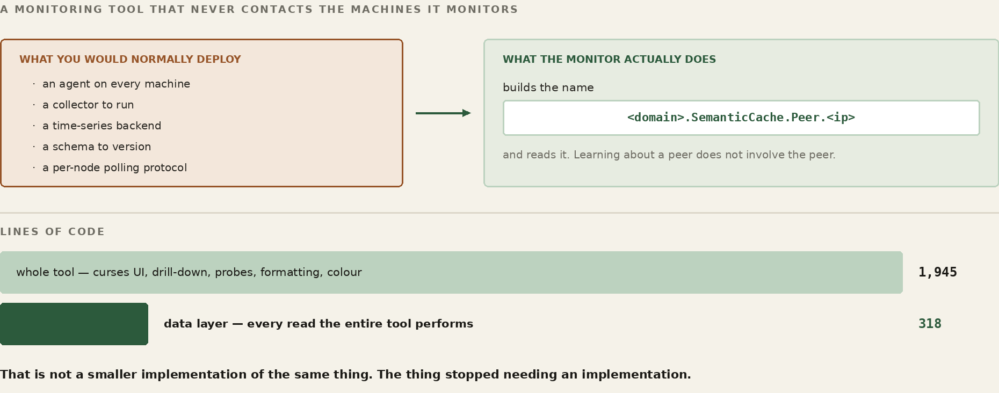
The monitor — what the network looks like from here
frognet_monitor runs on a node and reports the mesh from that node’s point of view. Every member its node’s snapshot (getSnapshot.php) lists, each one’s state, and the live telemetry behind the state: current round-trip time, P50 and P95, template hit ratio, bytes saved, and the effective bitrate against the actual one. A host reads as ONLINE, IDLE, FLAKY, SLOW, DEGRADED or DOWN. DEGRADED means its p95 round-trip is at least 1.5 times what that link has measured it should achieve, or over a second when no baseline exists yet; SLOW is 4 times or more; FLAKY is under 80% success. (The C++ monitor uses its own words: OK, FAIR past 250 ms, SLOW past a second, BUSY, SAT, DOWN.) Drill into a host and you get its sensors, straight out of the FrogNet-hosted Ribbit Region (historically FrogNet Memory), which is the same shared-state read any other consumer would make.
The pair of bitrates is the number to read first, because it is the compression argument stated as arithmetic. Effective bitrate is what the traffic would have cost as ordinary request and reply. Actual is what crossed. On a node carrying the database the gap is widest, because that is where the repeated traffic concentrates — the same questions, the same answers, over and over, which is exactly the shape BLDC-1 was built for.
WORKED EXAMPLE — One evening, Seattle 5 to New York, read off the monitor
compression 97.2% same hit rate 99.4% templates hit for everything held errors none coalesced 707 messages Seattle 5 (database host) effective 32 kbps what REST would have cost actual 686 bps what crossed the wire saved 20.1 MB
pipe_workload — the same call, four ways
The monitor is a static view. To make the network work, run pipe_workload.py, which takes a target host, a workload type, and a count:
$ pipe_workload.py frognethost.newyork1 echo 300 $ pipe_workload.py 10.102.60.1 chat 300
It drives four phases against that target and reports each one. Direct to Apache bypasses FrogNet entirely and calls the web server on its own port — the control. Hot runs the identical requests through port 80, the proxy, and the compression engine, serially. Ramp raises concurrency so the daemon has something to coalesce. Burst fires the whole count simultaneously, which is where one execution fans out to every waiting caller.
Two workload types matter for what they exercise. echo is the same question every time, so it drives SAME almost exclusively and shows you the ceiling. chat polls a 50-message rolling window in which roughly one poll in five carries a new message, so you get SAME and DIFF mixed and the codec is genuinely working rather than answering from one template. If you only ever run echo, you have measured the best case and should say so.
WORKED EXAMPLE — A run to New York 1, and a second to Seattle 3 across the internet
newyork1 echo 300
direct to Apache 4.6 req/s
hot (port 80) 8.6 req/s nearly double
burst 20.5 req/s
seattle3 echo 300 (not directly connected)
direct to Apache 7.7 req/s
hot (port 80) 19.6 req/s
burst 66.5 req/s
The one that changes the argument
The workload types include a large-payload case: a JSON document with a handful of dynamic fields in it, repeated. It exists because the echo and chat cases can be dismissed as small-message tricks, and this one cannot.
WORKED EXAMPLE — Seattle 6 to New York 1, over the internet tunnels
1 MB JSON, six dynamic fields
direct to Apache 0.9 req/s
hot 4.4 req/s 25 diffs
92 KB sent, not 31 MB
burst, 300 at once 4.4 req/s 279 ok, 21 timed out
38 KB sent, not 347 MB
Thirty-eight kilobytes in place of three hundred and forty-seven megabytes, and the request rate goes up by a factor of five while doing it. Those are the same fact: the payload is what was making it slow, and the payload is almost entirely structure that both ends already had. Six fields moved. Everything else was a template the far end could rebuild.
This is the case worth reproducing before believing, and the person who ran it says so: the numbers were checked twice on the way to being printed, because a five-fold throughput gain on a one-megabyte payload does not look like a plausible result until you understand that the megabyte never crossed.
The twenty-one timeouts are not hidden and should not be. They are a client-side deadline on a three-hundred-way burst, and the answers very likely arrived after it expired. A failure to wait is not the same as a failure to serve, and the tool reports it as what it is.
Counters that answer when asked
Both of the runs above have a measurement problem underneath them that took a while to see, and it is not about compression at all.
[COUNTERS_ARE_READABLE_WHEN_ASKED_V1] — the proxy’s metrics thread publishes its endpoint counters to a sensor about every thirty seconds. That is exactly right for a mesh watching itself: a node writes what it knows, on its own clock, and anybody who wants it reads it. It is exactly wrong for anybody measuring a workload. A run of a few seconds sits entirely inside one interval, so there is nothing to difference — and a tool that waits for a flush that is not coming looks, from the outside, indistinguishable from a tool that has hung.
So the proxy answers /_frognet/wire on loopback only, with the same aggregation the flusher would have published, at the instant it is asked. It publishes nothing and it resets nothing, which is the property that matters: asking cannot perturb the thing being measured. The periodic sensor keeps doing its job for the mesh; the endpoint exists for the person standing in front of one box with a stopwatch.
[THE_BOOTSTRAP_IS_NOT_STEADY_STATE_V1] — and the first request of any run is not like the others. It is one full uncompressed body, because it is the request that teaches the template: by definition nothing is cached yet. Counting it inside the run total puts the single incompressible request into the headline number, and then the total disagrees with the sum of its own phases by exactly that request — which is the kind of arithmetic that makes a reader stop trusting the rest of the page. It is bracketed, reported on its own, and excluded from the steady-state figure.
A polled endpoint, which is the ordinary case
The one-megabyte figures above are a burst. This one is the shape most real traffic actually has: a dashboard or a status API polled a couple of times a second, where the payload is a megabyte of schema, labels, structure and static rows, and six fields in it move.
WORKED EXAMPLE — 1 MB JSON, six dynamic fields — polled serially, then in a burst
| uncompressed | on the wire | |
|---|---|---|
| 25 serial | 23.5 Mbps | 71 kbps |
| 269 concurrent | 43.8 Mbps | 4.7 kbps |
Serial, it is about 3.8 KB per request — 99.7%, a factor of 329. At 269 concurrent it is 135 bytes per request.
The argument is not “we compress well”, and stating it that way sells it short. The industry sizes links for payloads and pays for the redundancy, because HTTP has no way to say “the same as before, except these six.” A circuit provisioned for that workload is provisioned almost entirely to retransmit what the far end already holds. The saving is not a codec being clever about bytes; it is a question that never had to be asked again.
Three cross-checks are what make the number quotable rather than impressive. Would-have-been cost per request is identical at 25 serial and at 269 concurrent, so the denominator is not moving with concurrency. The phase totals sum to the run total with the remainder accounted for exactly, so nothing is being left out of the denominator. And the 1.13x by which would-have-been bytes exceed the body is packet headers and WireGuard encapsulation — named, rather than quietly absorbed.
The dip in the ramp
The ramp phase climbs, reaches a point around concurrency ten, and drops back. It does this consistently, run after run, and I do not yet know why. It is in this chapter rather than out of it because a measurement tool that only reports the flattering numbers is not a measurement tool.
One clue is worth writing down, because it narrows the search. The large-payload run does not do it. On the one-megabyte case the ramp climbs and keeps climbing — no peak, no fallback. Whatever produces the dip is therefore not simply “too many requests in flight”, because the megabyte run has the same concurrency and does not suffer. It is something about many small requests specifically, which points at per-request overhead rather than at bandwidth or at the coalescer.
That is as far as the reasoning goes without instrumentation, and the instrumentation has not been written. If you reproduce it, or you work out what it is, that is a seam worth owning.
42a. The Laboratory — Programming Surface Studies
WATCH
FrogNet Memory Backing Store — open MySQL and see where the bytes actually live
Everything in this part has been about proving FrogNet to yourself. There is a second use for the same machinery, and it is the more interesting one: using it to compare programming surfaces against each other, by measurement rather than by argument.
The claim this book makes is that describing conversations is a surface, and that a higher one exists. That is exactly the kind of claim people are right to be sceptical of, because it is easy to assert and hard to check. The simulator is what makes it checkable, and it is the SAME simulator, executing the same real discovery, routing, election, convergence and recovery code. No second laboratory is built for the purpose, because a laboratory built to prove a point is not a laboratory.
Three arms, one variable
Take a real distributed system whose source is public. Model it three ways, changing exactly one thing at a time.
- The existing architecture, as it is. Services and components, endpoints and message flows, ownership and authority, shared and replicated state, synchronisation, retry and recovery, test infrastructure, failure handling. Modelled to understand how it works today — not to criticise it.
- The same architecture, over FrogNet. The application is untouched; only the communications substrate is replaced. This isolates what topology, routing, transport and recovery contribute, with the programming model held constant.
- The same system, re-expressed against a Ribbit Region. Messages become shared operational state. Authority replaces message ownership. Applications maintain state rather than conversations. The transport can remain unchanged while the programming surface changes.
Identical topology, identical workload, identical failures, identical correctness checks, across all three. Anyone can inspect the model, change the assumptions, rerun it, and disagree with the result — which is the only property that makes any of it worth publishing.
The middle arm is the one that keeps the exercise honest, and it is the one most likely to come back flat. "Not much changed" is a real possible outcome, and publishing it is what earns any belief in the third. A body of work that only ever reports the flattering arm is not a body of work.
What is being measured
Not throughput. Engineering cost. How much code exists only to support communication. How much testing validates communication rather than correctness. How much debugging reconstructs conversations instead of inspecting state. How much architecture exists solely because applications must describe who talks to whom.
Countable things: communication code, synchronisation logic, retries, message types, endpoints, ownership transfer, integration complexity, mock infrastructure, failure surface, behaviour under partition.
Two disciplines make those numbers mean anything. Publish the classification rule before the counts — deciding what is "communication code" is a judgement about every file, and making it case by case is grading your own homework; write the rule once, apply it mechanically, and report how many files were genuinely ambiguous. And name the asymmetry yourself: the original was written under deadlines, staffing constraints and changing requirements, by people who did not know the answer. The re-expression is written afterwards, by advocates who do. That does not invalidate the comparison, and pretending it is symmetric will be noticed.
The rule about sources
Only systems whose source is public, built by their own documented process. Repository, commit hash, build date, toolchain versions and the machine it ran on, recorded in the study rather than in a footnote — a study against "the current version" is unreproducible six months later, and reproducibility is the entire claim.
If a project does not build clean from a fresh checkout, say what was needed. Not as a criticism: the next person reproducing the work needs the same steps, and "three things had to be patched" is itself a fact about the surface.
What cannot be measured this way, and what to do about it
Some of the most instructive systems are commercial, and there is nothing to check out. Those still have something to offer — but they are predictions, not studies, and the difference has to be visible on the page.
A prediction from someone who has built that class of system is real evidence of a particular kind. It says: here is what the surface forced ME to build, three times, and here is what I believe changes. What it must not do is wear the clothes of a measurement — no counts, no percentages, nothing that looks like a result. State the belief, state that it is unproven, and state the method by which it could be shown wrong.
That last part is what makes it worth publishing at all. A prediction with a stated test is a claim someone can hold you to. A prediction without one is an opinion.
Part XIII½
Telemetry — Write, Then Read
Part VIII introduced the sensor platform — a machine that collects readings and writes them into the shared Region used by the FrogNet implementation. This part is the mechanism underneath it, on both ends. First how a node gathers its own state, shapes it, and writes it in without ever waiting for a reader; then how a reader pulls it back out without ever knowing who wrote it. The two halves never meet, and that is the point.
42b. Sensors — Writing Into the Shared Memory
Every node is continuously describing itself. Not to anyone — there is no reporting relationship, no collector to register with, no address to send to. A node measures what it can see of itself, shapes the measurement into a named row, and writes that row into the shared memory. Whether anything ever reads it is not the writer’s concern and does not change what it does.
That indifference is what makes the telemetry cheap enough to leave on. A node with no dashboard open pays exactly what a node with six open pays. Nothing fans out, nothing subscribes, nothing is pushed. The reading end of this is the next chapter, and the writing end does not know it exists.
A name that says who and what
Every reading is filed under a name of the form <domain>.<Type>.<Metric> — NY1.System.Perf, Seattle6.SemanticProxy.Engine, Seattle2.SemanticCache.Peer.10.160.160.1. The leading element is the node’s FrogNet domain, and it is not decoration: it makes a node’s entire telemetry — including its own view of every peer — exactly the set of names beginning with that domain. One prefix, one node, no ambiguity.
The name is built from the node’s canonical identity, not from hostname (except that metric_upsert.sh still falls back to hostname -s when getFrogNet.bash answers nothing). Every FrogNetHost answers to the same hostname, so a name built that way would collide across the whole pond. The publisher asks getFrogNet.bash for the authoritative identity and derives the domain from that.
Alongside the name each row carries an address and a network. The address is the node’s FrogNet host path. The network is the stable /24 derived from it — A.B.C.0/24 — and deriving it locally rather than trusting a helper is deliberate: the helper had returned host addresses where a network was wanted, and a network field holding a host is worse than an empty one, because it looks correct.
The one-shot writer
The simplest producers are shell scripts, and they all funnel through one command:
metric_upsert.sh <SensorType> <MetricName> '<jsonData>'
# e.g. from the system performance reporter:
metric_upsert.sh System Perf "$PERF_JSON"
# or wrapping a kernel tool's output as JSON:
metric_upsert.sh LinkStats HAM "$(tc -s qdisc show dev ham0 | jq -Rs '{qdisc:.}')"
What that command does not do is the interesting part, and its header says so in one line: no retries, no caching, no background loops. It resolves nothing, remembers nothing between calls, and holds no state a crash could corrupt. It builds the row, posts it once, and exits with the transport’s own result.
A payload that is null, [] or {} is refused outright rather than written. An empty reading and a missing reading look identical to whatever reads them later, and only one of them is honest.
The post goes to 127.0.0.1:80 carrying Host: databasehost.frognet — the local proxy first, always, with the real destination in the header. A sensor writer that opened a socket to the data host directly would work and would also bypass every hop-by-hop FAST-to-SEMANTIC conversion between here and there. The telemetry rides the same compressed path as everything else because it enters by the same door.
Asynchronous by construction
No producer waits for a consumer, and no producer is on the request path of anything a user is doing. There are three shapes and every sensor in the tree is one of them.
- Long-running loop. A
systemdservice that samples, writes, sleeps, repeats — the system-performance reporter samples for a second and posts every thirty, underRestart=always, so the sampling outlives any single failure. - Event-driven one-shot. A producer that fires when something happens rather than on a clock. The tree’s example is the route snapshot,
emit_routes_snapshot.sh, which the old bash merge (mergeHostsAndResolv.bash) wrote at the end of every merge. The current merge (runMerge.bash,discovery.live) does not call it, so nothing in the shipped merge writes the route snapshot now. - In-process background thread. A daemon thread inside the proxy, sampling structures the proxy already maintains and flushing them on its own clock, never on a request’s.
The third is where the volume is, and it earned two refinements worth carrying into anything you write.
One batch, not one call per metric. A tick collects every sensor the proxy has — endpoints, one row per peer, topology, link quality, the engine totals, pipeline stats, Apache workers, routing resilience — into a single list and sends it as one write. Each used to be its own resolve, its own write, its own verifying read, with a pause between peers; a node produced a multi-second burst of dozens of requests every tick and the single elected data host answered the fleet with 503s. One round trip, fire and forget, no read-back: a dropped telemetry sample self-heals on the next tick, and a verify that costs the pond its data host is not worth having.
Start on a random phase. Each flusher sleeps a random fraction of its interval before its first tick. Without it, nodes started by the same install script fire on the same wall-clock boundary forever and arrive at the data host together — the fleet’s whole write load compressed into one instant of every thirty seconds. A one-time offset spreads it across the interval and never needs adjusting again.
And the whole thing is wrapped so it cannot hurt the node. A pipeline, Apache or resilience snapshot that throws is reported and skipped; if one of the core snapshots throws, collection stops there and what was gathered is still sent. A batch that fails to send is logged and dropped. Telemetry never disturbs the thing it is measuring.
Rows expire; nobody deletes them
Peers age out of the proxy’s statistics after an idle period, and the rule has one exception with a reason. A .1 address is a FrogNet host identity and is never aged out, however quiet it goes. Everything else — a phone that took a DHCP lease, a browser that probed once, a decommissioned box — is eligible, because otherwise a single one-time interaction produces a peer row forever. One node accumulated four hours of failed probes to an address it had spoken to exactly once, and published a peer sensor for it the whole time, so every dashboard in the pond drew a peer that was not there.
The age-out runs after the batch goes out, not before, so a peer about to be dropped still contributes one final reading. A real node that dies should leave a last data point behind rather than vanishing from history mid-sample.
What this buys
A node that is partitioned keeps measuring and keeps writing; its rows land in whatever data host its side of the split elected, and stay there; on rejoin nothing is merged and no value travels. A node with no reader attached does the same work as one being watched by six. A reader that arrives late finds the current state waiting rather than having missed a broadcast. None of that needs arranging — it falls out of writing facts into memory instead of sending messages to subscribers.
42c. The Monitor — Reading It Back
WATCH
Communicator and Shared Memory — a program that reads and writes the shared store
WATCH
The FrogNet Monitor — reading FrogNet Memory with two calls and a name
The last chapter wrote. This one reads, and it is the clearest program in this book to learn from because reading is all it does. It opens no store, keeps no database, holds no state that outlives a keystroke, and owns nothing. Everything it puts on the screen it took out of the shared memory a moment earlier, with the same two calls any application of yours would use — and it does not know, and cannot find out, which node wrote what it is showing you. Run it and you are watching the pond think.
It is also the network’s test program. A dashboard that paints means the local proxy answered, the local daemon carried the request, the elected data host served it, and the sensors on the far side were published — the entire semantic path, end to end, exercised once every few seconds by something you can watch. A column that goes blank is a layer telling you it stopped. That is why it lives on every node: not as a convenience, but as the standing proof that the machinery underneath is working.
Start it with frognet_monitor (it runs python3 -m frognet_monitor_py on the node’s Python environment, /opt/frognet_semantic/venv, from /usr/local/bin). frognet_monitor --once prints one frame as text and exits. Without it, it is a curses program: arrow keys or j/k move down the peer list, Enter opens that node’s sensors, Enter again opens one sensor’s full JSON, Esc backs out a level, q quits, and M starts a merge.
Knowing who you are
Before it can read anything the Monitor has to know which node it is standing on, and it asks the node. One read of http://127.0.0.1/getSnapshot.php, through the proxy, gives it the node’s name and .1, its mode (lan-only or region), its build, its ponds with the forward one marked, its hub link and the handshake’s age, its members, its elections and its errors. The snapshot takes each field from one source per mode, and says so in errors when a source cannot be read. The one thing the Monitor still reads for itself is the domain its sensor names start with: domain= in /etc/dnsmasq.d/opts_only.conf, falling back to /etc/frognet_domain and then the hostname.
The parsing is deliberately split from the reading. parse_snapshot() takes the snapshot’s body as a string and returns the summary every view draws from, or nothing when the body is not a snapshot; it runs no request and touches no file. The shared parser vectors run it, and the C++ and C# monitors must give the same answer. When you write your own reader, split it the same way.
Finding the peers
The peer list is the snapshot’s members, in its order: in a region, the plan the tunnel daemon applied; LAN-only, the hosts the last merge named. There is no second source. When the snapshot does not answer, the title says so, the list is empty, and the next cycle asks again; nothing stands in for it.
The two calls
Every reading the Monitor takes goes to one place — http://databasehost.frognet/api.php — and never to an address. The elected data host floats, and the whole point of the name is that you do not have to know where it went. The Monitor hardwires nothing. It asks for the name databasehost.frognet on port 80, and the local proxy carries the request to wherever the pond’s data host is now (the C++ monitor sends it to 127.0.0.1:80 with the name in the Host header).
Behind that name are two tables, and their names are older than the idea they now carry. FrogNet Memory began as a place to put sensor readings, so the tuple tables are called Sensor and SensorData (api.php’s entities sensors and sensor_data) — and they are the tuple tables for everything, not just sensors. A game lobby, a call roster, a program's shared variables: all of it lands in a row whose column is named SensorName. Anyone reading api.php will hit that within a minute, so it is said here rather than left as a surprise. The name is legacy; the mechanism is general.
sensors holds the metadata — SensorID, SensorName, SensorType — and sensor_data holds the payload, SensorID and jsonData. They join on SensorID, and so every read is two steps: look the name up to get the id, then fetch the payload by id.
# step 1 — name to id
GET /api.php?entity=sensors&action=list&SensorName=NY1.SemanticProxy.Engine&limit=1
-> [ { "SensorID": 4417, "SensorName": "NY1.SemanticProxy.Engine", ... } ]
# step 2 — id to payload
GET /api.php?entity=sensor_data&action=get&SensorID=4417
-> { "SensorID": 4417, "jsonData": "{ ... }" }
Responses arrive in an envelope — {"ok":true,"rows":[...]} for a list, {"ok":true,"row":{...}} for one — and a single helper unwraps it so no caller repeats that shape. jsonData comes back as a string and is parsed once, at the edge, so everything above it works with a dict.
What it reads, and how the names are built
Sensor names are hierarchical and rooted in the domain. This node’s own telemetry is named for this node, and its view of each peer is named for the peer — which means a node’s complete telemetry, including how it sees everyone else, is exactly the set of names beginning with its own domain.
<domain>.SemanticProxy.Engine— the proxy’s own counters, drawn in the engine panel.<domain>.SemanticDaemon.Cache— the daemon’s cache telemetry, drawn beside it.<domain>.SemanticProxy.LinkQuality— a snapshot with apeerssub-dict keyed by peer address, carrying success rate,rtt_ok_p95_ms, and the saturation ratios that colour each peer’s status.<domain>.SemanticCache.Peer.<peer_ip>— one per peer: round-trip percentiles, cache hit rate, bytes saved, effective against actual throughput.
Opening a node’s sensor list filters server-side, with SensorName__like=<domain>.%, so only that host’s rows cross the wire rather than a table of thousands. The rule that governs it is worth carrying into your own code: match on the name and nothing else. An earlier version also merged a query on SensorAddress matching the peer’s /24, and a /24 is a network, not a host — every node sharing that network leaked its rows into the list. The name is the only key that is exactly one host.
The per-peer fetches run one thread each and are joined with a timeout, so a peer that has gone quiet costs the refresh nothing but its own row.
Which node holds the role
Two markers on the dashboard say who is who, and they are independent — a node can be both, one, or neither. databasehost.frognet is the elected data host, the box the whole pond is reading and writing through, and it floats. databasehost_control.frognet is the deterministic highest-.1 that a LAN-only election reads (in a region the election reads the members’ facts), and it does not float. They are frequently different machines, which is exactly why each needs its own marker.
Both come from the snapshot’s elections, which the node reads from the <role>.frognet lines in its own /etc/hosts and never from the resolver, because in practice the two disagree — on one node the file said 10.250.250.1 while gethostbyname said 10.130.130.1. The file is what every other component routes by, and a monitor that highlights a different box from the one the traffic goes to is worse than one that highlights nothing. The markers are read again with each probe cycle.
And when /etc/hosts cannot be read at all, the snapshot says so in its errors, and the Monitor draws that line in red. The two states that would otherwise paint identically — a pond with no data host elected, and a node whose hosts file is unreadable — are then different on the screen.
Is a merge running?
A merge degrades the node while it runs, so every latency and hit-rate figure on the screen is suspect for its duration. The title line says so, and it learns it by stat-ing /etc/sentinels/mergePending — the sentinel the merge itself maintains — rather than by scraping the process table for a script name, which reports the wrapper’s own defunct children as a live merge and disagrees with whatever the merge believes about itself.
There are three answers, not two: present, with an age taken from the sentinel’s mtime; absent; and unreadable, which is neither. The age is the interesting part — a merge that has been “in progress” for hours is a different fact from one that started ten seconds ago, and a bare boolean hides it.
Pressing M starts one. If the sentinel is already there the first press refuses and says how old it is; a second press within six seconds, while the refusal is still on screen, goes anyway. The sentinel is a claim a merge makes about itself, not a lock — a merge that dies leaves it behind — so treating it as an interlock let one crashed merge disable the key permanently. Warn, then let the operator override deliberately.
Probing without touching the daemon
The Monitor never opens a socket to the daemon’s port. Every probe is an HTTP request through the proxy on port 80, and the peer probe fetches frognet_echo.php on the peer’s address. That path runs local proxy, local daemon, remote daemon, remote Apache — so an echo that returns is proof the whole semantic chain is alive, which a bare socket connect could never be. The probes are staggered a second apart so a constrained link is not asked to answer everything at once.
The internet canary is the one deliberate exception: a direct request to a public host, not through the proxy, so “the pond is healthy” and “the uplink is healthy” stay separate answers on separate lines.
Never block the screen
All network work runs on background threads. The main loop only draws and reads keys — it never waits on a socket, except when Enter opens one sensor’s JSON, which is fetched on the main loop. When a background pass finishes it publishes each part of its result with one attribute assignment onto the shared state object, so the draw path always sees a whole part or the previous whole part, never half of one. Probes run every three seconds, the heavier sensor reads every fifteen, and each refuses to start while its previous pass is still in flight.
Because curses owns the terminal, diagnostics go to /tmp/frognet_monitor.log. If the log file cannot be opened, the trace is dropped rather than allowed to take the interface down. Read that log when a column is blank and you want to know which of the two steps returned nothing.
What to take from it
There is an older shift this one rhymes with. C did not replace assembly — it uses assembly, and always did. What it changed was who could build things: you give up some exquisite control over the machine and you get back far more than you gave. Ribbit makes the same trade against application-level message choreography. The Monitor is the shortest demonstration of it in this book, because there is no protocol in it at all — only names, reads, and a screen.
FOR THE GUILD
The Monitor is one of the shortest paths into the Ribbit model in the FrogNet implementation, which makes it the shortest path into contributing. Read it, then write your own — a web dashboard, a phone client, an alerting daemon, a status page for a building. None of it needs our permission and none of it needs the engine: it needs two HTTP calls and a name. If your reader shows something ours cannot, that is the interesting outcome, and the oracle beside it is where you show that the architecture still holds.
Two doors. To talk about it — this book lives in a public repository and its Discussions are open at github.com/FawcettJohnW/FrogNet-Living-Network/discussions; no licence is needed to argue there. To build on it, take it: fawcettinnovations.com/download.html — free software under the GNU GPL, version 2 only (GPL-2.0-only), no licence to request and no form. What you build on it and distribute is GPL-2.0-only too; that is the deal. Questions are welcome and nothing depends on them.
The Monitor is about two and a half thousand lines, and most of it is drawing. The part that talks to the network is small enough to read in a sitting, and it is the part worth copying: ask for a name, never an address; look up the id, then fetch the payload; filter on the server with the key that is exactly one host; parse in pure functions the tests can call; put the network on a thread and the screen on the main loop; and when you cannot tell what is true, say so on the screen instead of painting a clean answer over an unknown.
Its oracle is in the package beside it and runs the same way everything else in this book does:
$ PYTHONPATH=/usr/local/bin python3 -m frognet_monitor_py.test_merge_oracle PASS G1 the sentinel directory is /etc/sentinels … PASS G12 the successful launch is traced too ALL PASS
Twelve goals: the sentinel as the source, the three-state reading, the age formatting, the caching, both refusal paths on M, the force-on-second-press window, that every way out of start_merge is traced, and the indicator’s place on the title line. Run it against the build you were delivered. Red means the code has drifted from the architecture this chapter describes, and the pass is the thing that says so.
Part XIV
Writing Your Own Handler
You now have both halves of the work. Part X gave you the interface — one object, a few virtual slots, registered once. Part XIII gave you the discipline that says a change is not done until an oracle that was red goes green. This part puts them together the way you will actually use them: we build a handler from nothing, watch it run a whole game as reads and writes of one shared board, and then open the hood on a bigger one and fix a real bug in it — the way you work on a frog, oracle first. The game engine in this part is a worked example. The /game origin was removed on 25 September 2026 and the boardgame role on 29 September; FrogNet ships no games today. And this is the seam where the book stops describing an organism and hands you the means to extend one.
43. The Shape of the Job
Everything you build on FrogNet is the same four declarations. Here they are once more with a handler in front of you, because they are the handler. You declare the shape of the data, the freshness of each field, where authority lives if anywhere, and what a received value means. The rest — the retries, the ordering, the reconnect, the deduplication — you do not write, because the substrate already did.
Two rules from the model govern everything in this part, and breaking either is how the old message-passing world sneaks back in. The first: a participant writes only its own object. A player states intent in a value that is theirs; it never writes the board and never writes another player’s object. The second: the governor is the one writer of record and the only unforgeable authority. It owns the dice, the turn gate, the seating, and the legality of a move — a player cannot fake a roll or seat itself by writing memory, because the engine simply ignores any value it is not allowed to write. Hold those two and a multiplayer game is just reads and writes of a shared board; let go of them and you have rebuilt a request/response server with extra steps.
One more property falls out of those rules and matters for the bug we fix later: because a participant only ever reads the board to render it, a reader who never writes is a spectator, for free. Watching is not a feature you add to a game; it is the absence of a seat.
44. The First Handler — Tic-Tac-Toe
Tic-tac-toe is the smallest honest example, because it has a board, two players who must take turns, and a rule a client must not be trusted to enforce. Here are its four declarations.
- Shape. A board is a small object: the table’s name, whose turn it is, and nine cells. A player’s intent is smaller still: which cell, and a sequence number so the engine can tell a new move from a re-read of an old one.
- Freshness.
LATEST_ONLYfor the board — only the current position matters; a stale one is dropped.LOSSLESS_EVENTUALfor a move — every move must land, exactly once, in order per player. - Authority. One elected engine governs the board, resolved by one pond-wide name such as
boardgame.frognet. The boardgame role that did this was removed on 25 September 2026; the election shape is the one Part V describes for the roles that remain. - Meaning. A received intent means “this player wishes to mark this cell,” and the engine’s job is to decide whether that wish is legal and, if so, make it true on the board.
A move is an ordinary write — the same _game envelope you met in Part X — into the player’s own intent object. Nothing is sent to the other player; nothing is sent to a server in the request/response sense. The value changes in shared memory, and the engine, watching its region, notices. Schematically, a move is a write such as the one below; the request line shows its shape, not a live endpoint.
WORKED EXAMPLE — A move is a write to your own intent
# schematic: the shape of the write, not a live endpoint
# Player X states intent — a write to X's OWN object, not the board
POST boardgame.frognet/api.php?entity=move&action=upsert_by_name
{ "_game":1, "game":"tictactoe", "table":"kitchen-1",
"op":"move", "seat":"X", "cell":8, "intent_seq":4 } # bottom-right
# the engine (governor) reacts to the changed intent:
# reads X's intent, sees intent_seq 4 > consumed{X:3} -> it is new
# checks it is X's turn, and that cell 8 is empty -> legal
# marks cell 8, looks for three in a row, sets turn: O
# writes the BOARD back, and records consumed{X:4}
# keeps NO private state — what it has acted on lives in the board
That last line is the whole trick to making the role floatable, exactly as Part VI promised for the database. The engine records what it has already applied inside the governed object, so re-running its logic over unchanged memory does nothing, and if the engine role re-elects to another node mid-game, the new engine reads the same board and play simply continues. The authority moves; the game does not break.
Playing, then, is the three-line participant loop from the model, and it is the same loop the Communicator uses for a call: read your Region to render, write your own rows.
WORKED EXAMPLE — Playing — and watching — are both just reading the board
# a PLAYER renders by reading the board, then writes intent on its turn
board = get("tictactoe", "board", table="kitchen-1") # always current
render(board)
if board["turn"] == my_seat:
put("move", my_scope, {"op":"move","cell":chosen,"intent_seq":n})
# a WATCHER is the same first two lines — and never the third.
board = get("tictactoe", "board", table="kitchen-1")
render(board) # no seat, no intent, no cost: a reader is free
WORKED EXAMPLE — Tic-tac-toe as governed memory
Player X ---write own intent--> +-----------------+
| ENGINE | <- the ONE writer
Player O ---write own intent--> | (governor) | of the board;
| validates, | unforgeable
| cannot be |
| forged |
+--------+--------+
| writes
v
+---------------------------------+
| BOARD table kitchen-1 turn:O |
| X | . | . |
| . | X | . LATEST_ONLY |
| O | . | . governed |
+---------------------------------+
^ read (free)
Watcher ---------+ no seat, no cost
That is a complete multiplayer game: two intents, one governed board, and as many readers as want to watch. You wrote no network code. Hold this shape — it is the one every other handler is a variation on, including the one we fix next.
45. The Advanced Handler — Backgammon, and a Real Bug
Now a real one. Backgammon is the same _game machinery with a heavier rulebook. The shared board-game engine carried it alongside hearts, connect four, reversi, and liar’s dice until the games were removed on 25 September 2026. It also had a bug worth fixing, because fixing it teaches the model better than any green-field example could.
The symptom, exactly as you meet it. Open the games, say you want to play backgammon, and you get a board — you are hosting a table. But there is no way to join a game someone else is already hosting, and no way to watch one in progress. You can start; you cannot sit down at a started game, and you cannot pull up a chair beside one. For a system whose whole pitch is a shared board everyone can see, that is precisely the wrong thing to be missing.
Why it is a small bug, not a missing subsystem — and where it actually lives. The instinct is that join and watch are missing. They are not. Read the engine and both are already there: joining is a participant writing its own object to claim an open seat, and watching is reading the board — free and seatless, exactly as the last section showed. Both work the moment you have a table to point them at. That is the whole bug: nothing lets a second player find a table someone else is hosting. Every operation the engine offers is keyed by a game id you must already hold, and hosting hands that id to no one. The missing piece is not a way to sit down — it is a way to discover where the chairs are. We are not building reachability (the network’s job, done), and we are not adding join or watch. We are adding the one thing absent: a way to enumerate the live tables.
Work like a frog: write the oracle that fails first (Part XIII). Pin the real gap — a second player who was told nothing must find an open table — with a test that goes red against the engine as it stands.
WORKED EXAMPLE — An oracle: discover an open table knowing only the game
# Ada hosts a table. Bao is told NOTHING about it - no table id.
engine.host("backgammon", seat="X", who="Ada") # a board appears
# Bao knows only the SERVICE. To sit down, Bao must FIND a table.
tables = engine.open_tables("backgammon") # the missing op
open_ids = [t["table"] for t in tables if t["open"]]
assert open_ids, "Bao can discover Ada's open table"
# old engine -> no open_tables(); Bao can find nothing assert RED
# new engine -> the open table is listed, Bao can join it assert GREEN
The fix — let a player find an open game. This is the whole change, and it is a read, not a registry. The engine already governs every live board; enumerating them is asking it for the ones with a seat still open — open_tables() in the shared engine, one more read over memory it already holds. No new state, no broadcast, no new transaction.
WORKED EXAMPLE — op:"list" — the lobby is just a read
# schematic: the shape of the read, not a live endpoint
GET boardgame.frognet/api.php?entity=game&action=list&game=backgammon
[
{ "table":"kitchen-1", "seats":{"X":"Ada","O":null}, "open":true },
{ "table":"porch-3", "seats":{"X":"Cy", "O":null}, "open":true },
{ "table":"den-2", "seats":{"X":"Mo", "O":"Pat"},"open":false }
]
# the lobby UI renders every board with open:true. that is the whole feature.
Join already works — now it has a table. Joining was never the gap; it is a participant intent, governed exactly like a move. The requester writes a join into its own object; the engine — the only thing that may write the board — checks the seat is genuinely open and seats them. A client cannot seat itself by writing the board, because the engine ignores any board write that is not its own. Authority is preserved precisely because join goes through the governor, not around it.
WORKED EXAMPLE — op:"join" — claim the open seat, through the governor
# schematic: the shape of the write, not a live endpoint
# Bao writes a JOIN intent into Bao's OWN object (not the board)
POST boardgame.frognet/api.php?entity=move&action=upsert_by_name
{ "_game":1, "game":"backgammon", "table":"kitchen-1",
"op":"join", "who":"Bao", "intent_seq":1 }
# the engine governs the join the same way it governs a move:
# is the table real? is seat O actually open? -> if not, ignored
# seat Bao at O, write the board with both players, record consumed
# Bao now plays with the ordinary three-line loop from section 44.
# open_tables() turns the oracle green against the engine; the
# production store and the lobby UI still have to be wired.
Watching already works too. A spectator is a reader with no seat, and the engine already exposes the board to every reader — nothing had to be added. Once you can discover a table, reading the board of one you have not joined is watching.
WORKED EXAMPLE — Watching — a reader with no seat
# open any table read-only: render the board, write nothing, ever.
board = get("backgammon", "board", table="den-2")
render(board) # update every time it changes — an unchanged read is ~free
# no seat is consumed, no intent is written, anti-cheat is untouched.
# this is the SAME property as a SotF watcher (Part X): receive, never inject.
WORKED EXAMPLE — One board, three roles
LOBBY (op:list) THE BOARD kitchen-1 roles
+-----------------+ +----------------------+
| kitchen-1 open |--->| seat X : Ada |<--- HOST (op:new)
| porch-3 open | | seat O : open -> Bao |<--- JOIN (op:join)
| den-2 full | | turn : X |
+-----------------+ +----------------------+
a read read-only, no seat ---> WATCH (infinite)
none of the three is a new transaction: two intents and a reader.
The lesson, and why it is in this chapter. Notice where the fix was not. This is the chapter on writing a handler, and the bug was not in the backgammon handler at all — its rulebook was complete. It was one layer down, in the shared board-game engine every game stands on: the enumeration that lets a player discover a live table was simply absent. That is why a single change gave a lobby and spectators to every game that engine carried at once — open_tables() lands in the shared engine, not in any one game. And it is the deeper habit the whole book has been building toward: when a symptom is not handler-shaped, read under the handler. The fix added no new transaction — discovery is a read over memory the engine already held, and join and watch were already there, waiting for a table to point at. One read; every game gains a way in.
That is what it means to work like a frog: you did not design a lobby protocol or a spectator service. You noticed that the board was already shared and the seats already worked, wrote the oracle that proved the real gap — no way to find a table — and closed it with a single read the model already had a name for. The engine you just extended is one handler; the Communicator in the next part is presence, chat and calls written as rows in its own Region, with media on its own wire. It carries no games.
Part XV
The Communicator
Every term of this book at once, in one application. The Communicator is alive — it finds its servers in the pond’s memory instead of being told an address. It has memory — every participant publishes what it alone knows, and reads everyone else’s. It learns — its rows cross the wire as differences against what both ends hold. It grows — one script on a node starts its servers and says where they are, and every member can call. And it is wrong in places, which is the last term and the reason the next part exists. It is a very complicated Hello, World, and its job is to touch every layer so the layers get tested.
46. The Communicator
WATCH
The Communicator — the flagship application, and the ladder on camera
The Communicator is a video phone with a lobby and chat. It is an example program, not the product: the worked proof that a Ribbit Region, the FNWP wire with BLDC-1 under it, and Song of the Frogs policy compose into an application a person opens, and a program you can read end to end to learn how to build your own. It was rewritten in C++ in October 2026; the Python Communicator, its games and its :9000 media host are gone.
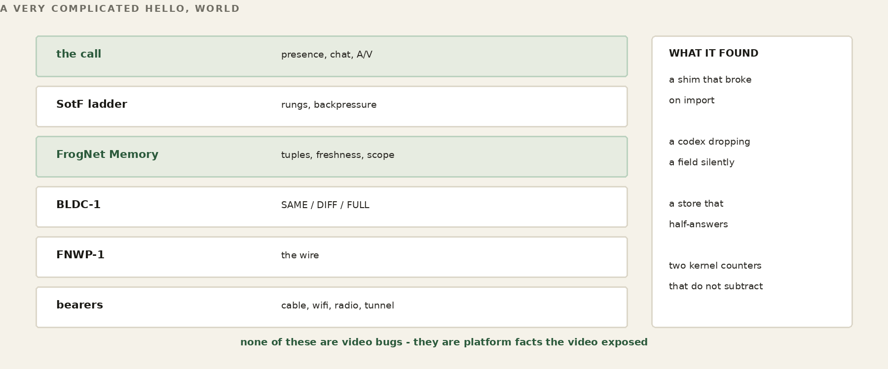
The pieces
Four programs, in ribbit/examples/communicator:
comms-ram, on TCP 8800: the Communicator’s memory. It is a plain Ribbit RAM host with no operations of its own. Presence, chat, calls and media speeds are rows in it.comms-media, on TCP 8994: the media server. Every call meets there. It forwards each participant’s audio to the others in the call, and passes each participant’s video through or transcodes it down for a viewer who cannot take it.comms-app: the window (C++, Qt 6). Lobby on the left, the call in the centre, chat on the right.comms-feed: an unattended camera or file. It shows in the lobby as*name.
python/comms_app.py is a second implementation of the same contract (PySide6). It shares with the C++ only the platform’s client library (libcomms_tuples, built by the C++ build), the rows in comms-ram, the wire to comms-media and the rules, and the two meet in one lobby and one call.
On the phone the Communicator is a screen of the FrogNet app, CommunicatorActivity (r5). Its core — room, fnav wire, bearer, mixer — is Java, proven against the C++ and Python. It sends VP8 through MediaCodec from a Camera2 picture drawn by GL into the encoder, and Opus through MediaCodec.
Building and running it
On Linux or a Pi, ./build.sh builds all four. On Windows, build-windows.ps1 builds comms-app and comms-feed with Visual Studio and vcpkg; comms-ram and comms-media run on the Linux side. The libraries are FFmpeg (libavcodec, libavformat, libavutil, libswscale, libavdevice), libvpx, libopus, PortAudio and Qt 6, plus LZ4 and OpenSSL's libcrypto for the Ribbit platform.
On a FrogNet node in a region, fdf-comms.sh starts comms-ram and comms-media and writes one cell in the pond’s memory saying where they are:
(pond, where, w:<guid>)
{"comms": {"ram": "w:<guid>:8800", "media": "w:<guid>:8994"}}
The cell names the node by identity, not by address; each reader resolves it to the address that node has in the reader’s own scope. The region removes the cell when the node’s session ends, and fdf-comms.sh writes it again on the event that shows the node back. On the droplet, which has no .1, fdf-services.sh publishes the public address instead.
comms-app and comms-feed print their build first ([app] build comms-app-2026-10-10-r3, [feed] build comms-app-2026-10-10-r3), and the comms-app window title carries it. comms-ram logs its version (communicator 2.2). comms-media prints no build. The phone logs comms-android-2026-10-11-r5.
Finding your camera, microphone and speakers
comms-app --list-devices prints the cameras as the exact --camera value to type — v4l2 on Linux, DirectShow on Windows — and the PortAudio table, with the index you give as --mic N and --speaker N. With no index the system default is used. A camera is asked for MJPEG: without it V4L2 hands out YUYV, and 1920x1080 YUYV is a USB 2.0 limit read as a machine limit. MJPEG’s full-range levels are said, not assumed, so the picture is not washed out.
A device’s claim is not trusted. The microphone and speaker are opened mono at the device’s own rate and resampled to and from the 16 kHz wire, and the rate the microphone really delivers is measured in its first seconds: an eMeet C950 claims 44.1 kHz and delivers about 16 kHz. A live camera has its own reader thread that keeps only the newest frame, so the picture does not fall behind the voice.
You do not need a camera. Receiving needs none, only sending does. A camera that will not open is reported and the call goes on receiving.
Finding the servers
On the desktop you give the Communicator its name and the two addresses: --name, --ram HOST:8800, --media HOST:8994. On Windows, fdf-bridge.cmd ask comms prints the --ram and --media of the forward pond’s Communicator. On the phone nothing is typed: the FrogNet member reads its pond’s where cells for comms, resolves the identity in its own scope, and opens the Communicator with the two addresses and the device’s name. If no member of the pond runs one, it says so and opens nothing.
Presence, the lobby and chat
Joining is not a request a server grants. There is no login and no session handed to you. Each participant writes one presence row, host:<ip>:presence:<me_id> {name, status, caps, ts}, and writes it again every 5 seconds. A row older than 15 seconds is gone. There is no logout. A participant that closes removes its own presence row. One that vanishes stops rewriting it, and the row is stale after 15 seconds. A comms-ram that restarts holds no roster to lose, because the roster was never its; it is the set of fresh rows. A participant opens its connection once and does not reopen it, so after a restart it is back in the roster only when it is restarted too.
Each participant keeps its own copy of the Communicator’s state by one held read — “wake me when anything newer than write-order id N exists” — and answers the lobby, chat, offers and invitations from that copy. Its own writes go into the copy at once. A chat line reaches the other participant’s copy in about a millisecond; an idle room makes 8 to 20 requests in 21 seconds (it made 4 reads a second per window when it polled).
Chat is one row per line, session:chat:<session>:<msg_id>, written by the sender and read in time order.
Starting and joining a call
You start a call by writing your CallsAnnounce row, at user:<your name>, listing the session and the media server’s host and port. You invite someone by writing a CallsInvitations row at user:<their name>. An invitation rings only while it is under 60 seconds old and its caller still offers that session, so a call the caller gave up on stops ringing. Hanging up takes the session out of your rows.
Joining is reading the offer and opening two TCP connections to the media server, one for audio and one for video. The first frame on each says which plane it is, an 8-byte teardown tag shared by the pair, and the session. Every call shares the one port; the server keeps their fans apart by session. Losing one plane closes its mate, and only its mate: half a caller is not a caller.
The split is total. Control — who is here, what is offered, who is invited, each viewer’s speed — is rows in comms-ram, crossing the FNWP wire full, then diff, then same. Audio and video never touch it: they go to comms-media in fnav frames, [len][kind][srclen][src][payload], send-or-drop.
What the media server does
Audio is forwarded unchanged to every other participant in the session, and each client mixes the voices it receives. Audio is never shed by choice: the server’s sizing and shedding run only on video planes. An audio block that a viewer’s socket will not take after three tries is dropped, like any other frame.
Video is one upload. A viewer who can take it gets the sender’s own stream, byte for byte. A viewer who cannot gets a smaller picture the server encodes — once per size, whatever the number of viewers at that size, on a worker that is not the thread reading the upload. A viewer is never sent anything larger than the upload. What a viewer can take is the smaller of two things: its MediaSpeed row, session:<session>:viewer:<me_id> {bps}, which the server holds a read on, and its measured link. One slow viewer never lowers anyone else.
The server publishes what it is doing for each viewer as a MediaHold row every 2 seconds — pass-through or the size it sends, keyframe held, audio only — and the window shows it, including “No video — Audio only” instead of a frozen last frame.
The tests
The claims above are proven by the tests in the tree, and you can run them: test_room and test_room_watch on a real comms-ram (lobby, chat in order, MediaSpeed matched by identity, the held read), test_ring (rings only while offered), test_call and test_call_audio (two participants through comms-media, video at each other’s size, tones in each other’s speakers), test_feed_view (a receive-only viewer), test_media_rates and test_media_link (per-viewer sizes from the cap and from the measured link), test_bottom (the bottom walk). The phone’s core runs the same vectors and a Robolectric run of the app’s own screen against live servers (communicator-test/run_tests.sh). TESTING.md says how to run each.
The Communicator carries no games. The game model is Part XIV’s.
47. The Wire Under the Call
The ladder in Part X tells you which rung a call should be on. This chapter is about the thing underneath it — the socket the frames actually go out of, and the rules that govern it. They are short, and every one of them was written after a failure that looked like something else.
Send or drop — there is no queue
Each plane is a non-blocking TCP socket, and the write is the test. There is no send queue and no pacing thread. An inter frame gets one try; if the socket will not take it, it is dropped and the next one is offered. A keyframe gets three tries and an audio block three, 8 ms apart, because one would-block is not a verdict.
select() reports a socket writable when the send buffer has some room — not room for your frame. On Linux every sender computes free space as SO_SNDBUF minus SIOCOUTQ, and believes a shortage only when the queue is past three quarters of the buffer, because the two numbers are not in the same units: Linux doubles the buffer it reports and counts its own overhead in the queue. Windows has no SIOCOUTQ; there the socket’s would-block decides, and the buffer is 64 KiB instead of 128 KiB, to bound how much stale picture can wait in it.
One lock per socket serialises whole frames onto it. On the media server a viewer’s socket is written in debt mode: a part-written frame’s remainder is owed as abort padding and paid as the socket takes it, and new frames for that viewer are shed meanwhile. A viewer never makes a sender’s thread wait.
A partial write is not a dropped frame
The stream is length-prefixed. Once any byte of a frame is on the wire, the frame is committed: the receiver has already read a length and is waiting for exactly that many bytes. Abandoning the write there does not drop a frame, it truncates one — and the receiver decodes whatever arrived.
This produces a distinctive and thoroughly misleading symptom: the far end shows a picture whose top is fine and whose bottom is green, while the sender reports full frame rate and zero drops. The sender is telling the truth. Nothing was shed. The bytes it sent were incomplete, and the decoder concealed what was missing — untouched YUV renders green.
So the whole-frame decision belongs strictly before the first byte, never after. A frame larger than the send buffer is refused outright, because it can never go out whole and attempting it guarantees a partial write. A frame that fits is attempted; if the socket refuses it outright, it is a clean drop. Only if a write returns a partial count is the remainder mandatory, and then it is finished — it cannot proceed otherwise.
Why the keyframe is broken up, and what rides in the gaps
A codec sends a full reference frame and then deltas against it. Lose the reference and every delta after it decodes against something that no longer exists, which is what you are watching when a picture smears and twists instead of stuttering. So the keyframe matters more than any frame around it.
It is also the largest thing on the wire, and that is the problem. A keyframe at any useful geometry is big enough to fill the send buffer on a constrained link, and while it is going out nothing else can. The socket will deliver it eventually, because this is TCP. In the meantime the call has stalled — and what stalls with it is the audio, which is the one thing a conversation cannot lose.
The answer is available only because of where this code sits. We own the wire and we own the data, so we can break the wire. The keyframe is cut into segments and sent one at a time; the receiver reassembles and does not display until it holds the whole thing. Between the segments the link drains, and the audio, on its own socket, is serviced in the gaps. The deltas follow the keyframe.
naive [======== keyframe ========] audio audio
^ nothing else moves for the whole span
segmented [kf][a][kf][a][kf][a][kf] -> display then [d][d]...
audio never waits behind the picture
That is why audio still arrives — Opus at 24 kb/s — while the video is visibly degraded and may freeze outright. The picture is being rebuilt in pieces around a conversation that never stopped. A frame larger than what the socket has been accepting in 20 ms (at most half the buffer) goes as VSEG pieces of 1368 bytes, the tunnels’ MSS.
WORKED EXAMPLE — Why not UDP, from somebody who shipped it
Every video protocol worth naming uses UDP, and so do game protocols — the author helped pioneer some of that at Electronic Arts. The pattern is familiar: fire five packets for every one you need, sequence-number them, receive as fast as you can, and discard or cache whatever arrives out of order. Connectionless, almost no overhead, and the receiver reassembles what it can from what showed up.
What that model does is push the decision to the wrong end. The sender commits to a rate and the receiver copes with the wreckage, which is why a degrading UDP call renders corruption rather than reduction. Owning a reliable ordered stream and choosing what not to put on it inverts that: whole frames or nothing, decided before the bytes are committed, at a boundary the sender picked. The cost is that you must never let one large object monopolise the pipe — which is exactly the problem the segmentation above exists to solve.
Audio is not guaranteed, but it has priority — and one wire cannot deliver it
Audio and video began on one socket, arbitrated by a lock. Video was discarded on the first refusal; audio was retried before being given up; an audio frame the wire refused anyway armed an immediate video downgrade, because the wire refusing the smallest, most protected thing on it is the loudest congestion signal there is.
All of that was correct, and none of it was enough. A voice packet could still sit behind a forty-kilobyte keyframe, and the pause was audible. No lock ordering fixes that, because the arbitration you control is not the only one happening: the TCP send window is shared too. Win the lock and you still queue behind the keyframe in the kernel.
So there are two sockets. Audio and video are separate connections, opened together at connect and declared by their first frame. Nothing arbitrates because there is nothing to arbitrate: separate windows, separate buffers, the kernel schedules both. Audio priority stops being a scheduling heuristic and becomes a property of the topology — which matters, because it is a primary claim of the product and a heuristic can always be got wrong by the next person to touch it.
It makes the per-viewer bandwidth cap honest as well. The media server sizes and sheds the video plane per viewer and never touches the audio plane. Not by a test on frame type that could be reversed, mis-nested or forgotten — the code that sheds simply never runs for audio targets. Twice during development a branch like that was got wrong and audio was shed; the topology cannot be got wrong in that way.
And one wire still cannot deliver it. Two sockets remove the arbitration inside this process. They do not remove the link. Both planes leave through the same interface, so a keyframe that occupies two and a half seconds of a hundred-kilobit wire delays audio in the interface queue no matter how many sockets are above it — the kernel is scheduling two streams onto one serialiser, and the queue in front of that serialiser is the one nobody in the application can see. That is bufferbloat, below the application, and it is the honest limit on the priority claim.
Naming it matters because the fixes for it are not the fixes for contention, and reaching for the wrong one wastes a week. Locking the planes against each other does nothing: the frames were never contending in this process. What actually addresses it is queue discipline on the interface, or pacing the keyframe so it is handed down in pieces the queue can drain between rather than as one block. Neither is implemented. The section above is true — audio priority is a property of the topology rather than a heuristic somebody can get wrong — and this paragraph is the boundary of what that buys you.
"No video" is a display state, not a teardown. The video plane stays open and carries nothing, so a sender that starts muted can begin sending without renegotiating anything, and losing one plane closes the other — half a caller is not a caller.
48. A Frame That Did Not Arrive
There is no portable way to ask a socket whether n bytes will fit.
select reports a socket writable when the send buffer has SOME room, not room for your frame. The one call that gives a real number is SIOCOUTQ against SO_SNDBUF, and it is Linux-only.
So on a non-blocking socket a partial write cannot be prevented. sendall can write part of the buffer and then raise, and it does not report how much went. On a length-prefixed stream that is fatal: a length with no body, and the receiver consumes the next frame's bytes as this frame's payload. Every frame after it is garbage. The symptom is that audio and video freeze together while the sender reports full rate and zero drops — which sends you looking anywhere but at the framing.
It cannot be prevented, so it is recovered from. When the sender cannot finish a frame it pads the remainder of the declared length with a repeated sentinel. The receiver always consumes the full declared length, whatever the frame turns out to be, and then checks the tail: a match means the sender gave up, so discard this frame and read the next. The stream never leaves sync. An aborted frame costs one frame instead of the connection.
John's description of the mechanism is the one to keep: the TCP equivalent of a UDP rebuild, except that the segments are in guaranteed order. That guarantee is exactly what makes it cheap. UDP reassembly needs sequence numbers, a gap map and a reorder buffer, because segments arrive out of order or not at all. TCP hands you the bytes in order and complete, so the only thing that can go wrong is the sender stopping. One in-band marker covers it.
Which is also the answer to why the framing is not overhead. The length prefix is the frame boundary and the resync point: after discarding an aborted frame the receiver is standing precisely on the next prefix. It does not have to search a byte stream for anything. Checking the tail rather than scanning the payload matters for the same reason — a video frame that happens to contain those four bytes is not mistaken for an abort.
The failure that cannot be recovered from is the one where even the padding will not go: the reader is gone or wedged, and the stream is torn with no way to say so. Then the connection dies, which is correct. The sentinel narrows the window; it does not abolish it.
49. The Frame That Must Not Be Dropped
When a link cannot carry the stream, something has to be discarded. Discarding by size picks keyframes first, because keyframes are the largest frames there are — and a keyframe is the one frame that must not be dropped.
Every inter frame after a lost keyframe references a picture the decoder never received. What it renders is not degraded video; it is arithmetic performed on a reference that does not exist. Full pixellation until the next keyframe, which — being large — is also the most likely to be shed. A mildly constrained viewer can stay broken indefinitely, and the sender sees nothing wrong at all.
The rule, in full. Once a viewer starts shedding it is UNANCHORED. Inter frames are dropped outright — they are useless without the reference, so spending budget on them is worse than wasteful. A keyframe becomes the frame to send. If the budget will not take it yet, it is HELD, and a newer keyframe OVERWRITES the held one: the freshest picture is the only one worth resuming from, and there is no value in a queue of stale keyframes. Delivering a keyframe re-anchors the viewer and normal service resumes.
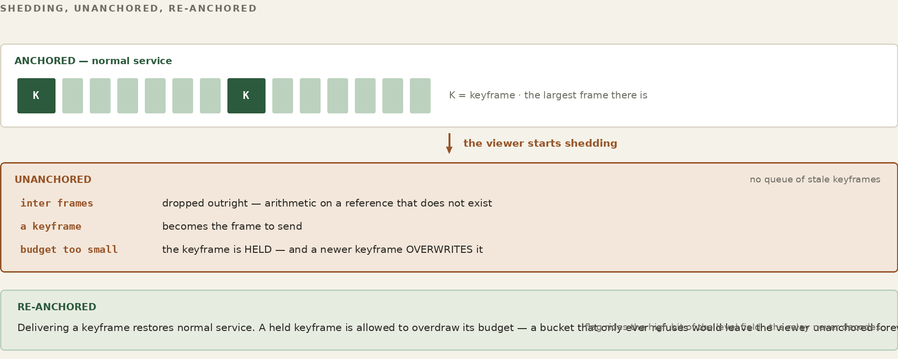
For the relay to do that it has to know which frames are keyframes, and it is deliberately content-blind — a codec-specific bitstream parser in the fan path would end that property permanently. So the flag goes on the wire, in the high bit of the level field, which carries a rung of 0 to 8 and has bits to spare. No extra bytes, and the relay reads it by offset without decoding anything. The sender always knew; the information simply never left the process.
On the media server a held keyframe waits at most three seconds; then it is dropped and the viewer resumes at the next one. An unanchored viewer with nothing held asks for a keyframe: of the sender, for its own stream, at most once per 3 seconds; of the server’s own encoder, for a transcoded size. The server has no budget bucket: a viewer’s cap chooses the picture size it is sent, so the keyframe fits by construction. The overdraw lives in the sender’s throttle, the bandwidth slider: a keyframe always goes, the budget goes negative, and the inter frames behind it repay the debt.
50. Evidence, Not Arithmetic
The obvious way to choose a picture size is to compare its bitrate with the link rate. It is also wrong: there are links on which the arithmetic says video is impossible, and the wire was carrying it.
Saying it upstream needs one thing first. The relay fans a frame to every viewer from the pump thread of the SENDER whose frame it is — so two senders can be writing the same viewer's socket at the same moment. Reading is safe; writing is not. The first attempt at a relay-to-sender channel added a second writer to sockets that already had one, the bytes interleaved, the length prefix desynced, and every stream decoded garbage from then on. The symptom was perfect: the client reported receiving data and displayed nothing.
One lock per peer socket, held across the write, and the channel becomes possible. It is four lines and it is not optional — anything the relay ever says back to a sender depends on it.
The media server keeps the evidence per viewer and acts on it for that viewer only; the sender is never told. Every 2 seconds it compares what it aimed at each viewer with what that viewer’s socket took. Two windows below 80 percent and the viewer steps down one size — from its transcoded size, or from the upload’s own size, read from the rung in the upload’s frame headers — and the size that failed is held off for 15 seconds, doubling to five minutes. Three good windows, and no change in the last 45 seconds, and it climbs one size; back at the upload’s size it is passed the upload again. A window in which nothing was aimed is not a measurement.
The sender has its own ladder, the bearer, and it governs only the upload: what the wire to the media server takes. The two never cross. A slow viewer gets a smaller picture; the sender keeps sending what its own link carries.
The link rate is still worth knowing, as an opening value. A client publishes its bandwidth setting as MediaSpeed, and the media server serves that viewer within it from the first frame: the largest size whose bitrate plus 32 kb/s of audio fits, or audio only. The sender’s own ceiling is what its camera can fill; the bearer finds the rest. Where a call SETTLES is decided by the evidence.
There is one thing this chapter should not leave you expecting. After a keyframe overwrite there is no catching up to do: each delivered keyframe is a complete picture and the far end resumes from it directly. The blip was never a recovery problem. It was starvation of the frames in between.
51. How the Ladder Actually Decides
Part X describes the rungs. This is the sender’s controller, the bearer, sampled once per video frame — 24 a second by default. Down is cheap and fast; up is expensive and slow. That asymmetry is the whole design.
The rungs today: L8 1920x1080 at 3 Mb/s, L7 1280x720 at 1.2 Mb/s, L6 854x480 at 600 kb/s, L5 640x360 at 300 kb/s in gray. Below L5 the picture shrinks: 480x360 at 250 kb/s, 320x240 at 150 kb/s, 160x120 at 60 kb/s, all gray. Video is VP8 (realtime, cpu-used 8, a keyframe at least every 2 seconds); a sender never sends a picture larger than its source.
Down — any one of four
The bearer steps down at once on any of these, checked in this order:
- Audio shed by the wire. The smallest, most protected thing on the plane being refused is the loudest congestion signal there is.
- More than three consecutive samples carrying drops, or a backlog of eight frames. A short vicious burst should not have to wait for a clock to tick.
- More than five drops inside one second. This is the rate rule, and it exists because of the sampling problem below.
- More than three consecutive samples below the frame-rate floor, the greater of ten frames per second and 75 percent of the target. A rung that has just changed is not judged until 15 frames and 2 seconds have been sent at it.
Why both a run count and a per-second rate? The controller is sampled once per frame — about twenty-three times a second — and the drop count it reads is drained on each read. Ten drops in a second therefore arrive as ten dirty samples scattered among thirteen clean ones. A pure consecutive-run rule finds runs of both inside a single second and steps nowhere. Measured on hardware: sustained ten to thirteen drops per second, and the ladder oscillated between two rungs for minutes without ever walking down. The one-second window is what makes a rate visible to a per-frame sampler. Neither rule alone is sufficient.
Why a relative frame-rate floor and not just an absolute one? Because an absolute floor leaves a dead band. A box producing twelve frames of a twenty-four frame target is above ten, so nothing steps down; and far below full rate, so nothing steps up. It sits at the top rung producing half rate indefinitely, sheds nothing, and looks perfectly healthy in every counter. Observed exactly that way. The floor is relative for the same reason the upgrade test is.
Up — both, or not at all
An upgrade requires three consecutive whole seconds, each of which closed with zero drops and held the full frame rate throughout. Any second failing either test zeroes the streak.
Three clean seconds is necessary but it is not sufficient, and the second half of the rule only shows itself on a link that has already failed. A rung that was tried and did not hold is put on a hold-off before it may be tried again: fifteen seconds the first time, doubling on each further failure to a ceiling of five minutes, and cleared only after the sender has run a full minute clean at that rung. The hold-off is per rung, so a link can keep probing the step above the one that failed while the failed one waits. Without it a marginal link spends its life one second inside a rung it cannot carry, because from the streak counter’s point of view every attempt starts from a clean slate. The backoff is what remembers.
The second condition is the one that matters, and it is easy to leave out. Zero drops is not health — it is only the absence of refusal. A machine producing thirteen frames a second on a fast LAN sheds nothing at all, so clean seconds accumulate while it is failing the rung it is already on, and the third one promotes it into a heavier rung it has no chance of holding. The rate is therefore tracked as the worst reading inside each second, not sampled at the moment of the decision.
There is deliberately no wall-clock step-rate cap. A guard of the form "at most one step per second" was tried and reverted: it silently defeats the consecutive counting it sits on top of. Twelve consecutive stressed samples should walk the ladder down three rungs; under that cap they walk it down one, and the wire keeps dropping for the two seconds the controller spends waiting for permission it already has. The consecutive thresholds are the rate limit, and they are the right one, because they are measured in evidence rather than in seconds.
WATCH
Bandwidth Experiments — the link starved by hand, both ends reading the same rung
WORKED EXAMPLE — The ladder walked by hand, August 2026, the Python fnav Communicator
987 kbps held no visible change 637 kbps stepped to L6 seen on both monitors 450 kbps stepped to L5 picture thins, audio holds 850 kbps climbed to L7 17.5 fps, settling artifacts no redial at any point; both ends read the same rung
Two details from that walk matter more than the numbers. The first is that each end could see the other’s rung on its own monitor, without being told — one participant reporting “I have you at L6 and L5” while the other was still moving the slider. That is the derived rate of the previous section observed from outside: nobody sent a rung, both ends computed one.
The second is what the descent sounds like. At 450 the picture is described as choppy and the background barely legible, and the immediate check is whether speech still crosses — it does, because audio is declared continuous and video latest-only, so shedding falls on the picture by construction rather than by policy. Then the climb: back to 850 and the rung returns to the top, with small artifacts while it settles, in session, no reconnection.
The controls that do this today are in the window: a Bandwidth slider and a Jitter slider. Bandwidth is your link, both directions. It runs from 32 kb/s to 4 Mb/s on a log scale, unlimited at the far right, and takes effect when the slider rests for 200 ms. It throttles your upload, so your bearer walks down and the others see a smaller picture of you, and it writes your MediaSpeed, so the media server sends you a smaller picture. Jitter, 0 to 500 ms, is also both directions: each arriving frame is delayed by a random 0 to N ms without reordering, and each frame you send waits up to N ms. Being able to starve your own call from inside the application is what makes the behaviour checkable by somebody who does not own a link shaper, and it is why Appendix J can ask a reader to reproduce it on an ordinary desk.
Each desktop sender (comms-app, comms-feed) burns its frame count and its wall clock at capture into the bottom-left of the picture (the phone’s sender does not), and the viewer shows its own clock beside it, so the lag is read off the screen: 64 ms feed to media server to window on one machine. COMMS_STAMP=0 turns it off.
The floor is a voice
Below L5 the picture is not thrown away; it gets smaller — 640x360, 480x360, 320x240, 160x120 — one step at most every 2 seconds, and only when the wire is refusing frames, because shrinking a picture helps only if the wire is the limit. It grows back one step after three clean 2-second windows, and when it is back at 640x360 the ladder resumes at L5. Only when 160x120 is refused too does the sender go audio only, and it stays there until the ladder is back at L5. Video is not gone; it is smaller. Audio is never what the ladder gives up.
A video rung needs a camera, not a microphone. A camera with no microphone sends video with no audio bed, and the far end is told there is no audio.
On one run — the window at 128 kb/s — it received 160x120 gray at 24 fps with audio continuous while its own sender walked down the ladder.
Do not take that number as a specification. A static scene compresses to almost nothing and a moving one does not; a software encoder on a small board runs out before the link does. The figure is one run with one thing in front of one camera, and quoting it without those conditions would make it a benchmark rather than a measurement. What generalises is the shape: the picture is what the ladder spends, the voice is what it protects, and the bottom is a long way down. Appendix J is how to find your own number, which is the only one worth having.
51a. What the Media Path Cost
The ladder chapters above describe how the media path decides. This chapter is the bill for getting it right, kept because every line of it is a mistake somebody else can now avoid, and because several are not about media at all.
In August every participant derived one rate for the whole call from the same rows, with derive_rate. The rewrite replaced it: one upload, and the media server converts down per viewer.
Reading a socket
| Rule | What it cost |
|---|---|
| [ONE_EWOULDBLOCK_IS_NOT_A_VERDICT_V1] | one refusal shed a frame. For an inter frame that is right — the next supersedes it. For a keyframe everything after is undecodable, and the walk read the shed as ‘this size does not fit’ and stepped down. Keyframes now retry with writability waits. |
| [THE_TWO_NUMBERS_ARE_NOT_THE_SAME_UNITS_V1] | Linux doubles the send buffer, and the queue counter includes kernel overhead — 2304 for a 1000-byte write. cap minus used goes negative on an IDLE socket, so a pre-flight check reported ‘no room’ on a wire doing nothing and every frame was dropped before it was attempted, at every size. |
| [SHRINKING_A_BLOCKED_SOCKET_IS_NOT_A_FIX_V1] | 160x120 fails for the same reason 1920x1080 did, if nothing is draining. |
| [ONE_STEP_PER_SIZE_V1] | six steps landed in one window, because the frames shedding right after a step were encoded at the OLD size and already queued. |
| [THE_BUFFER_IS_THE_LATENCY_V1] | 256 KiB at 30 KB/s is 8.5 seconds of stale queued video, during which every new frame is refused at any size; the buffer is now 128 KiB on Linux and 64 KiB on Windows. |
| [DO_NOT_COMMIT_TO_A_FRAME_THAT_WILL_NOT_FIT_V1] | a partial send committed a frame, and the only way out was padding to the declared length — the same bytes that just failed, down the same blocked socket. Aborting a frame must never cost a connection. |
The picture, and what owns its properties
| Rule | What it cost |
|---|---|
| [THE_BITRATE_BELONGS_TO_THE_PICTURE_V1] | the bitrate came from the RUNG while the derivation drove the geometry, so a sender at 160x120 kept L5's 300 kbps — 24 KB/s for a picture costing 7.5. |
| [GRAY_FOLLOWS_THE_PICTURE_V1] | the same shape: a 1280x720 picture went out grayscale because the local rung was L5. |
| [A_NEW_SIZE_NEEDS_A_NEW_KEYFRAME_V1] | changing geometry rebuilds the encoder, so every frame after referenced a keyframe the far end never saw — an old picture at the old size with occasional partial updates. |
| [ASK_THE_CAMERA_FOR_MJPEG_V1] | nothing negotiated a pixel format, so V4L2 gave YUYV. 1920x1080 YUYV is ~3.1 MB a frame and USB 2.0 carries about five a second — a BUS limit read as a machine limit. MJPEG at the same size does thirty. |
| [THE_MIC_IS_NOT_THE_LINK_V1] | audio never captured cannot have failed to arrive. A starving microphone looked identical to a link failure and blacked out video on a healthy wire. |
| [SMALLEST_WIRE_WINS_V1] | the tiebreaker for the whole ladder: bytes on the wire decide, CPU and suspicion rank after. NOT MEASURED — ‘gray is smaller’ is a claim about chroma coding, not a number off this wire. |
Holding, fanning, and hanging up
| Rule | What it cost |
|---|---|
| [A_HOLD_IS_NOT_FOREVER_V1] | the relay held a keyframe indefinitely for a viewer that never drained, and dropped every frame behind it. Bounded, then the viewer resumes at the next keyframe. |
| [ONE_STEP_PER_HOLD_V1] | a held keyframe DOES tell the sender to back off — once per hold, not once per window the hold persists. Six consecutive reports walked a sender L7 to L2 at 23.4 of 24 fps. |
| [A_HELD_KEYFRAME_IS_A_VIEWER_S_FACT_V1] | superseded by the above: the suppression was wrong, the repetition was the bug. |
| [FAN_IS_PER_SESSION_V1] | the relay fanned to every peer on the port, so two clients in different sessions exchanged video normally while every session-scoped tuple went to a session nobody was in. |
| [JOIN_BEFORE_YOU_CREATE_V1] | two people pressing Call sat in two rooms — and before the fan enforced sessions, the shared port made that interoperate by ACCIDENT, which was the only thing bringing the ends together. |
| [ALONE_IS_NOT_SILENT_V1] | discarding a lone sender's frames is correct; doing it silently is not. Nothing pushed back, so the ladder climbed to the top and sat there — 374 KB/s into a black hole with zero frames coming back. |
| [HANG_UP_IS_NOT_A_FAULT_V1] | close() with unread data sends RST, and a client receiving media always has unread bytes, so every ordinary hangup reached the relay as a connection reset. |
| [DROP_THE_FRAME_NOT_THE_CALL_V1] | the whole receive loop sat in one except, so a decoder refusing one packet ended the loop — and one plane ending tears down the call. |
| [A_HANG_IS_THE_WORST_REPORT_V1] | a bare connect() used the OS default timeout — minutes — so a dead relay read as a hang. |
| [REFUSED_AND_TIMED_OUT_ARE_DIFFERENT_FAULTS_V1] | refused means the host is there and nothing is listening; timed out means the packets went nowhere. Telling somebody to check a service on a host they cannot reach sends them to the wrong machine. |
| [A_SHIM_MUST_BE_USABLE_BEFORE_IT_FINISHES_V1] | a module that aliases itself in sys.modules only lands when it FINISHES, so anything importing during it binds the half-built shim permanently. |
| [THE_COMMUNICATOR_IS_THE_CLIENT_V1] | the build shipped every bundle directory including a 58 MB C++ checkout. 862 MB to 544 KB, 3884 files to 119. |
| [A_MANIFEST_IS_ONLY_AS_GOOD_AS_ITS_GATE_V1] | And a correct manifest is not enough. The broker bundle (the broker has since been removed) named three console files and explicitly shipped no site — which was true when it was written, and did not stop a 439 MB tarball being built and pushed. Two demo videos, 437 MB of it, in a payload nothing in the script would have selected. A manifest with no gate is a manifest that is correct until somebody edits the tree beside it. The bundles are gone; the snapshot tool that replaced them (full_tar.bash) has no manifest at all and leaves media out by name — because a 200 KB video slips under any threshold and is just as wrong as a large one. |
Saying the wrong true thing
A sender watches its own uplink buffer, because a buffer that is filling is about to be the slowest thing on the call and saying so before frames are lost is what lets the equilibrium settle without sacrificing pictures to find it. The fact is real. What it was published AS was not.
| Rule | What it cost |
|---|---|
| [A_SENDER_IS_NOT_A_CONSUMER_OF_ITSELF_V1] | The check published a GETTING row — a claim about what is arriving here and whether this end is keeping up with it. A headless publisher receives nothing, so the claim was about a stream that does not exist, and the derivation quite correctly read it as a struggling consumer and stepped the whole call down. A publisher with nobody watching walked itself from 1280x720 to 160x120, at 23 frames a second with zero drops the entire way, reporting ‘derived from 1 sender, 1 report’ where the one report was its own. A tight uplink still moves the rate; it moves it as what it is, by lowering what this end says it is SENDING. |
| [ONE_STEP_PER_SIZE_V1] | And it stepped five times because it measured the new size against the old size’s backlog. Dropping from 1080p to 720p does not empty the buffer — the 1080p bytes are still in it and take seconds to leave at the link rate — so the next reading described the size just left. A step now waits for the queue to turn over before the next measurement, which is the same rule the keyframe walk needed and for exactly the same reason. |
| capped, a fact about a sender | Once a sender has lowered itself for its own uplink, nothing may climb it back on the grounds that no consumer complained — the constraint IS the complaint, and it is about the one link no consumer can see. Without that the two rules fight: the sender lowers, the derivation sees an unremarkable call, and it goes back up. |
The shape is worth having. Each of these was a program publishing something true in a category that made it mean something else — and shared memory has no way to catch that, because the value was well-formed and the writer had every right to write it. What a fact is filed under is part of the fact. On a substrate where every reader derives from what it finds, filing it wrong is indistinguishable from lying.
Reading shared state, and reading it wrong
Three of the day’s bills were not about media, sockets or cameras. They were about how a program treats what it reads out of memory, and they are the ones that transfer to anything built on this substrate.
| Rule | What it cost |
|---|---|
| [A_SHRINKING_READ_IS_NOT_NEWS_V1] | A store under load half-answers, and a partial read looks exactly like participants leaving. Losing a row removed the evidence holding the rate down, so it climbed; the next read found the row and it dropped back, alternating every cycle for the length of a call. A read that sees FEWER participants than the last is treated as thin and skipped — a real departure stops being re-asserted and ages out anyway, so nothing is lost by waiting for a full one. |
| [A_RATE_THAT_FAILED_IS_NOT_A_CANDIDATE_V1] | A rule that promotes whenever everyone is currently happy promotes into a rate already shown not to work, goes unhappy, demotes, and oscillates — ninety cycles in five seconds under the simulator. The durable fact, the smallest size an end has failed at, has to live in the STATE rather than in any participant’s memory, or every end derives a different ceiling and no end can explain the others’ behaviour. |
| [A_CEILING_MUST_BE_ABLE_TO_LIFT_V1] | That ceiling then cleared only on a report at or above the failed size — which the rate is pinned below by the ceiling itself, so the size is never sent and can never be proven good. Permanent by construction: one report pinned a call at its floor for the rest of its life on a link with nothing wrong with it. It lifts on demonstrated steadiness now, in wall-clock time rather than in poll cycles, because a fast poller lifts a per-cycle counter faster than any promotion can be judged. |
The shape they share is worth naming. Each was a program treating its own reading of shared memory as more authoritative than it was — a thin read as news, a current mood as a verdict, an old failure as a permanent fact. The memory answers what it has; the meaning is the reader’s to get right. None of the three was found by looking at one participant, because none of them is visible in one — which is what the simulator in Part XIII is for.
52. A Missing Thing Must Never Look Like an Answer
This chapter is one rule, stated four ways, because it is the rule this system violates most expensively and the failures never look alike.
An absent value is not a value. An empty result is not the same as no result. A parameter that could not be resolved is not a parameter that was not asked for. Every one of those confusions produces a well-formed, successful, completely wrong answer — and a well-formed wrong answer is worse than an error, because nothing downstream can tell.
The dropped filter
A read went out as "give me rows written in the last thirty seconds" and came back with the entire table. Not an error — a two-hundred, with rows in it. The filter had been dropped somewhere in the request path, and the query that executed was a different question with a perfectly good answer.
The mechanism: the compression layer sends only what changed, resolving the rest from a held reference — and the sender and the receiver each hold their own copy of that reference, in different processes, cleared by different restarts. When they diverge, the sender omits a parameter it believes unchanged, the receiver fills it from a reference that never had it, and the value comes out empty. The URL builder then skipped the empty parameter rather than refusing to build the URL.
Two lines of instrumentation found it after several hours of looking everywhere else: the same query issued with two different freshness windows returned identical row counts. The parameter was not being honoured differently — it was not arriving at all. The fix is a completeness gate: every key the template declares must have a value after the merge, or the request does not execute, the reference is discarded, and the caller is told. An unresolvable reference is a fault, not a default.
The learned emptiness
A compression template is learned from a real response, once, and then serves that path for the whole mesh. Learn it from a response with rows in it and it records the shape of a row. Learn it from {"rows":[]} and there is nothing to record — so a naive learner writes down "array of strings", which is a fabrication, and every subsequent response for that path decodes to an empty array no matter what the database holds.
It is self-sealing: once the template exists, the learner does not run again, and because the answer is always empty, nothing ever proves it wrong. Wiping the cache does not help. Wiping the database does not help — it makes it worse, because the next read is guaranteed to be the empty one that gets learned. The guard is to refuse: an empty array is not a sample of a shape, so no template is stored, and the path stays uncompressed until a response arrives that has something in it.
The manufactured empty
The same shape one layer down. When field extraction produced nothing from a response, a guard substituted an empty list and encoded that as a normal reply. On a successful response that was later fixed to send the real body instead; on an error response the substitution survived, under a comment saying a fallback was acceptable there.
It is not. An empty list is a well-formed answer. Substituting one turns "the upstream returned an error and I could not parse it" into "the query succeeded and matched nothing", and the two are indistinguishable to every caller. Worse, it disarms the error path one layer up, which fires only when the extracted value is absent — so setting it made a failed read leave as a successful difference, and the client received a two-hundred with an empty result.
The silent write
And the mirror image on the way out: a write helper whose entire error handling was to return false, with no message. A presence heartbeat failing every five seconds for thirteen minutes — one hundred and fifty-three consecutive failures — produced not one line in any log. The only symptom was a person missing from everyone else's roster.
Failures must be loud and named. That is not a logging preference; it is what makes the difference between a bug you find in ten minutes and one you chase across four subsystems for an evening. Every failure in this chapter was invisible by construction, and every one of them was found by adding one diagnostic that printed what the code had decided instead of what it had been asked.
That is how the FrogNet implementation grew: start from observable behavior, run it on ordinary boxes and mixed bearers, let the transport discover and adapt, prove changes in the simulator, and keep failures visible. Above that transport, the later architectural extraction makes the responsibilities explicit: Ribbit owns shared-state semantics, BLDC-1 owns semantic representation, FNWP owns the wire, and FrogNet owns the sovereign network beneath them. The Communicator is valuable because it exercised all of those concerns in one program — its rows over Ribbit, BLDC-1 and FNWP, its media on a wire of its own — and exposed where the original boundaries were wrong.
Part XV½
Memory Where Messages Were Expected
Everything up to here was built for its own reasons. This part is what happened when the same substrate was pointed at a problem that belongs to somebody else entirely — distributed machine learning — and told to compete with a tuned C++ library on its own ground. It is the first serious application of Ribbit (then called UnREST) written against an interface somebody else specified, by people who were not thinking about shared memory when they specified it.
A note on what this is. FrogNet is free software and always will be. The distributed-training work described here is not part of it: it is Freemium, a separate offering from Fawcett Innovations built on FrogNet and kept out of the open tree. Nothing in this part is required to run a mesh, and nothing in the open tree depends on it.
It is described here in full anyway, because a book about a substrate is worth little if it will not say what the substrate turned out to be good for. What follows is the architecture, the measurements and the mistakes — the parts worth knowing whether or not you ever buy anything.
53. The Same Problem, Somewhere Unexpected
Training a large model across several machines is a message-choreography problem, and it is one of the most heavily optimised ones in computing. Every worker computes a gradient. All of those gradients have to be summed and the sum given back to everyone. The standard answer is called a ring all-reduce: each worker sends a chunk to its neighbour and receives one from the other side, and this happens 2(W-1) times in a strict order.
It is a good algorithm. It moves the theoretical minimum number of bytes. But look at what the shape demands. Every step waits on the step before it, from a specific peer, in a specific order. Everyone must be present for the whole operation. A worker that stalls stalls everybody behind it. A worker that dies ends the job — not degrades it, ends it — and the answer is to restart from a checkpoint.
That is not a flaw in the implementation. It is what a schedule is. And it is the reason a training cluster is bought uniform: identical machines, identical links, everything arriving together, because the algorithm assumes it.
If you have read this far you already know what the other option looks like. Nobody sends anything. Each worker publishes what it has, under a name. Each worker reads what it needs, by name. There is no order because nothing is ordered, and there is no schedule because there is nothing to schedule.
54. Collectives Without a Schedule
PyTorch lets you register a backend. You implement its collective operations and user code does not change — the same all_reduce call, the same training script, dispatched to your implementation instead of theirs. So the question could be asked directly: write the collectives as reads and writes of shared state, and see what happens.
An all-reduce becomes this. Split your tensor into one slice per worker. Publish every slice except your own. Read the slice you own from every peer, and sum them — that is your range, finished. Publish the finished range. Read the finished ranges you do not own from the workers that own them. Done.
publish my slice k, for every k that is not mine read slice r from every peer (r is mine) reduce them into my range (in place) publish my reduced range read the other reduced ranges
No rendezvous for the operation. No barrier. No ordering argument. The reads are issued all at once because nothing serialises them, and a read blocks until the state exists — which is the only waiting in the whole thing, and it is waiting for data rather than waiting for a turn.
There is a detail in that listing worth stopping on: you do not publish your own slice. You read that range from everyone else; nobody reads it from you. Publishing it was work done for no reader, and it took a while to notice.
55. What the Bytes Cost
The obvious version of "reduce by reading" is simpler than the one above: read everyone's whole tensor and sum them locally. It is correct, it is the clearest possible statement of the idea, and it is wrong in a way that does not show up until the fleet grows.
per worker, per collective: W ring / sliced whole-tensor penalty 2 1.00n 1.00n 1.0x 3 1.33n 2.00n 1.5x 4 1.50n 3.00n 2.0x 8 1.75n 7.00n 4.0x 16 1.88n 15.00n 8.0x
Reading every peer's whole tensor costs (W-1)n. The sliced version costs 2(W-1)n/W, which is exactly what the ring moves — checked against the implementation at every world size tested, not derived and hoped for. The penalty for the simple version is W/2, and it grows with the fleet forever.
The lesson generalises past this one algorithm. Beating a schedule on bytes is not a matter of moving the same bytes faster. It required changing which bytes each worker is responsible for. Once that was done the byte count was identical to the ring's, and everything after that was about how the bytes move rather than how many.
56. Four Machines and an Ocean
The test fleet was deliberately nothing like a training cluster: an x86 desktop, a Raspberry Pi 5, a Raspberry Pi 4, and a laptop in New York reached over a WireGuard tunnel. Two of the four reach the others through a relay. Everything leaving the building goes over WiFi. The machines span roughly five times in speed.
PyTorch was not told about any of this. It is one process group; the geography is not in the programming model.
Thirty-seven complete runs across twelve campaigns, every rank reporting. The interim figures, 13 September, per element, taken from the slowest rank because a collective is finished when the last worker is finished:
world 4, with the New York member runs median range gloo (C++) 6 2487 2158-3579 Ribbit, sliced 7 2554 1880-2838 Ribbit, whole-tensor 6 3312 2254-4683
Parity. The two are three percent apart, against a control whose own spread across sessions is sixty-six percent, and individual campaigns go either way.
That was the interim result. An earlier claim that it was faster — by about sixty percent — did not survive measuring the comparison properly: the control had been recorded in a different session, hours apart, on a network that moves more than the effect being measured. When both arms were run minutes apart, interleaved, the advantage disappeared. The number was withdrawn.
Measured properly afterwards — gloo as the control in the same campaign, minutes apart — the sliced backend won all four same-campaign comparisons on median step time: gloo took 1.95, 1.64 and 1.75 times as long, and 1.03 times on its best night. The sliced backend's median step stayed in a 24 percent band while gloo's moved 127 percent on the same machines, because a ring is held to its slowest link and independent reads are not. gloo, the sliced backend and the faithful hook each produced one parameter hash on every rank and the same held-out loss, 0.4940.
On a single machine it loses, by two to three times. Communication is nearly free there, so there is nothing to overlap and the comparison is entirely local copying. That is worth stating because it says exactly where this belongs: the advantage needs a real network to appear at all.
57. The Things That Did Not Work
Sixteen approaches were tried and abandoned. Four are worth repeating here because the reason each failed is more useful than the thing that eventually worked.
Evicting state to bound memory. Published state is never released, so a long run grows without limit. The fix seemed obvious: drop it between rounds. Three runs in five then failed, worst on the fastest machine, because a producer discarding state a peer may still be about to read is the lifetime rule being broken by the one party who cannot know. Eviction is not memory management. It is a lifetime decision, and the producer is not entitled to make it.
A snapshot so publishing could happen in the background. Serialising a slice is a full pass over it, and it sat on the critical path. Moving it to a thread meant guarding against the buffer changing underneath, so the first attempt copied the tensor first — which costs exactly what the serialisation costs. Two passes to do one pass's work.
What worked was noticing that the algorithm already proves when the range is free. Range k is read by exactly one peer, and overwritten by exactly one thing: that peer's reduced range coming back. It cannot produce that without having read ours first. The arrival that overwrites the range is the receipt that the range was taken. No copy, no acknowledgement, no snapshot — the dependency structure does the work a handshake would have done.
Guards that refused on their own harness. Three were built to protect the measurement: a file-manifest check, a run-identifier check, and a freshness test on the start signal. Each one, in practice, stopped the measurement it was meant to protect — and each produced a failure that described something other than itself. One rank would decline while the other three ran against a peer that was not there. All three were removed and replaced by a report: every run now prints the identity of every file and every setting in its first few lines. Information, not refusal.
A zero that was measuring the instrument. The compression layer reports how often it answered SAME instead of resending identical bytes. Every run reported zero, and that was taken as a fact about the workload — gradients differ every step, so exact-match suppression cannot fire. It was a fact about a cache key written in two different formats in two different places, so every stored digest went into a slot nothing ever read. Corrected, identical content under a new name went from 262,209 bytes to fifty-seven. A zero is a measurement of something, and the something may be your own instrument.
58. Where It Stops Being About Speed
An all-reduce owes the exact sum over every worker. That is its contract, and inside it there is nowhere left to go: the sliced version already moves the ring's byte count. Whatever remains is implementation, not architecture.
But the interesting part was never the arithmetic. It is what the shape allows that a schedule forbids.
a worker dies mid-run 3 of 3 survive ring: 0 of 3 a worker joins late expressible cannot be stated throughput, clean case 1.02 median 1.00 by definition concepts in the worker 2 9
The first two rows come from a four-worker parameter-publication fixture, not from the all_reduce path. An all_reduce still needs every rank.
The last line is the one to sit with. A worker under the collective model must know about rank, world size, master address and port, process-group construction, collective lifetime, rendezvous, barriers, failure and rebuilding. Measured like for like — one worker in its own process, same kill path, scaffolding left in on both sides — that is nine distributed concepts against two. It is not a line-count story: thirty-one lines against thirty. The reduction is in what you must understand, not in what you type.
And there is a second reduction underneath it. Conventional code has to represent "I am rank 2 of 4", "this collective is in progress", "rank 3 has failed", "the group must be rebuilt", "everyone has arrived". In this model those states do not exist to be represented. A worker exists because it is publishing. It is gone because its state stopped being usable. A late one appears because it started publishing. Whole categories of transition logic are absent rather than shortened.
PyTorch provides its own sanctioned exit from the exact-sum contract: a hook that is handed the gradients and owes a result, with what happens in between left to the implementer. That is where the question changes from "how cheaply can every byte be moved" to "which of these is worth incorporating at all" — a question the collective model has no way to ask. An early experiment refusing to fetch from a producer that had not advanced eliminated 38.4% of candidate consumption with no degradation in the result. Those tensors were never requested and never materialised.
That is not a faster all-reduce. It is a different question, and it is the one this substrate was always able to ask.
The training product is where that question gets answered commercially. FrogNet itself remains what it has been throughout this book: a mesh, free, and complete without any of this.
Part XVI
What Is Not Built Yet
Living things evolve, and nothing evolves from one point of view. This part is the honest inventory: what is missing, what is wrong, and what I know I cannot see from here. Read it as the invitation it is. Every entry is a seam somebody could own, and the ones dated as closed were closed by exactly this process — somebody ran into the edge and said so.
59. The Communicator Is a Hello, World
Everything in Part XV works, and it is worth being clear about what that means. The Communicator is a demonstration program. Its purpose is to show what building against shared state looks like — how you reach for a tuple instead of a socket, how state that simply IS beats state you have to synchronise, how a call turns out to be a few names and a shared understanding rather than a protocol. It is a very complicated "Hello, World", and it should be treated as one.
That is not a disclaimer. A Hello, World is the most useful program in any language, because it is the one you read to learn the shape of everything else. This one places real video calls between real machines across the real internet, and it does it in a few thousand lines because the substrate did the hard parts. Read it for the shape.
Casual users — people with no interest in networking or systems programming — can install it and use it and get value from it as it stands. If that is you, you are welcome here, and there is one thing we would ask in return.
Tell us what happened. Not whether you liked it. Feedback is neither positive nor negative; it is actionable or it is noise. "The picture froze when I walked into the kitchen" is worth more than a paragraph of praise, and it is worth more than a paragraph of complaint, because it names a thing someone can go and look at. What you were doing, what you expected, what happened instead. That is the whole format.
Much of what is written in this book was found exactly that way — by somebody saying "it looks frozen" when the diagnostics said the call was healthy, and by that turning out to be true.
60. Per-Client Rate Adaptation
Closed in the C++ Communicator. The sender uploads one stream. The media server passes it through to every viewer who can take it, and for a viewer who cannot, decodes it once and re-encodes it at the size that viewer's measured link allows — once per size in use, never larger than the upload. One slow viewer no longer lowers anyone else's picture. The cost is that the media server is no longer content-blind: its CPU is part of its capability.
What the Python relay did. The Python relay was a byte fan. It could pass a frame to a viewer or drop it, and that was the entire set of moves available to it — it never decoded anything, which is why it was small and fast and content-blind. So the only way it could serve a constrained client was to drop whole frames, and dropping every third frame of a 1280x720 stream does not produce a smaller picture. It produces a slideshow at full resolution: a low frame rate, no pixellation, and a viewer wondering whether the call has frozen.
Its answer was one stream and one rate. Every participant published what it alone knew — a sender what it was sending, a receiver what it was getting and whether it was keeping up — and every participant derived the same rate from those rows. The slowest published report bounded the call. The relay's own report moved a sender once per hold rather than once per window it persisted — [ONE_STEP_PER_HOLD_V1]. Nobody sent faster than the slowest end could take, and that was the ceiling of the shape: the relay only ever had the one stream to forward.
60b. When It Goes Wrong on You
Everything in the previous parts describes a system behaving. This chapter is the other half, and it exists because the alternative is a reader deciding that whatever just happened to them must be their fault. It is not necessarily your fault. Some of these are known, some are diagnosed, and at least two of them nobody has explained yet.
Look at the machine first
Start with ip a and read the interface you expect to be carrying traffic.
- Two address sets on one interface. One is usually the address you wanted and the other is something like the database host. How they got there was never shown. The October 2026 cleanup removed the second owners of the LAN address (setup_lillypad_v4.bash's flush and
ip addr add, and the boot-time frognet-eth0-fixup)). On 2026-10-14 the NetworkManager profile setup_lillypad made went too: on a projecting node it was built on the AP radio and failed. The one owner is frognet-netstart, in both modes (the .1 and .2 on the wired LAN, or on the AP radio with hostapd). Whether that ends this case has not been shown on hardware. It stays on the list. - An interface that will not come up.
eth0,eth1or awlanreports down and stays down, and with it nothing works. Also not understood.
For both, the repair is to re-assert the machine’s identity rather than to reinstall it:
$ sudo setup_lillypad_v4.bash <NetworkName> <GatewayIP> gives the machine its identity without running install; rewrites the node's network configuration
Where things live
/etc/sentinels discovery working files, and the
transients written during execution
/etc/frognet configuration: gateways.conf,
ssid_projection.conf, wg.impl
/opt/fdf/var on a region node only: join.env (the
region switch) and site.env (root-only)
Tunnels that exist and do nothing
A LAN-only node has no WireGuard at all. A region node has one link, to the hub. When it appears in ip a and carries no traffic, read the snapshot's hub entry (its handshake age) and the region's answer, rather than debugging the interface:
$ curl -s http://127.0.0.1:8080/getSnapshot.php | python3 -m json.tool
hub: iface, edge, handshake_age_s
$ journalctl -u fdf-client REFUSED by the region: the site key
is not the one the area holds
$ systemctl restart frognet-tunnel-daemon-v3
the daemon brings the link up again from the region's
records; there is no broker to ask
A REFUSED line means the node's site key is wrong: on the region's machine run fdf-invite NAME again, and on the node run fdf-region-join with the invitation it prints.
Convergence takes longer than you expect
A renamed or re-addressed node does not appear everywhere at once. It propagates outward, neighbour by neighbour — a node three hops away may not see it until the node between them has. Minutes, not seconds, and a runMerge.bash on the impatient end is the accelerator. This looks exactly like a bug and is usually the design.
What was a bug: the notification that should follow a completed merge did not always fire. A node finished, told its nearest neighbours to sync, and sometimes nobody heard. Two causes were found and fixed in October 2026: runMerge.bash wiped the merge watcher's queue and the notification seen-set on every merge, and propogateNotification.php answered DUP when it could not write its seen-set, so a fresh node never merged on a neighbour's wave. Whether those were the whole of it has not been shown in the field. If a neighbour still has not heard, run the merge again.
On a node in an FD&F region none of this applies. A change reaches every node as one region event, in well under a second on a LAN; there is no neighbour-by-neighbour propagation, no makeHostJson and no merge notification. Its tunnel is one WireGuard channel to the hub; to re-assert it, run the node's .run again from the checkout: sudo bash opt/fdf/dist/fdf-install-$(uname -m).run fdfinv1.<...>. Add fdf-client to the services to check.
The three services, and the two nobody suspects
$ systemctl status frognet-proxy
$ systemctl status frognet-daemon
$ systemctl status frognet-tunnel-daemon-v3
then, when those are green and it still does not work:
$ systemctl status apache2 log directory can vanish
on reboot; Apache will not
start without one
$ systemctl status NetworkManager
dnsmasq is the one that will waste your afternoon. frognet-netstart reports that the job failed. journalctl -u dnsmasq says nothing at all. dnsmasq --test says the configuration is fine. Everything is fine and it will not run.
Reboot the machine. That is the honest answer, it is not a diagnosis, and it is the Windows answer to everything — offered here by somebody who worked at Microsoft and is aware of the irony. It happens on Pis more than on anything else. It is on the list.
The SSID is not there
If a node projects a network and the SSID does not appear in a client’s list, projection is off:
$ frognet-ssid-projection on | off
It should be set automatically from what ip a reports on the way up — no line on eth0 and no FrogNet host there means the configured WLAN is used instead. Sometimes it comes up off anyway.
The loop that actually fixes things
Which brings us to the method, and it is the same one the rest of this book runs on.
1 let it run for a couple of hours
2 hand the whole journal to an AI; ask for anything
hanging, anything throwing, anything odd
3 take what it finds to the simulator
4 reproduce it there -> fixed in no time
cannot reproduce it -> that is the interesting case
Step four is the whole discipline. A failure you can stage in the simulator is nearly solved, because you can make an oracle red, change the system, and watch it go green. A failure you cannot stage is telling you something about the simulator rather than about the bug, and running that down usually improves the instrument for everybody.
Discovery is where most of this lands, and it is the most complicated thing in the system. It is also where the book most wants help. Two of the failures above have no explanation at all, and an explanation would be a contribution before a fix ever was.
61. Smaller Things, Named Honestly
A list of edges, so nobody has to discover them by surprise.
- Backpressure is reported in aggregate. Closed as a mechanism, 11 August 2026. The relay's aggregate report no longer moves the rate — it steps a sender once per hold rather than once per window the hold persists, and the rate itself comes from what the participants publish about themselves. What remains, and is worth keeping on this list: the C++ media server publishes, per viewer, how many frames it shed (its MediaHold row), but not which sender each one came from.
- A headless publisher must originate. Closed, 11 August 2026. A call with nobody selected now joins an open call rather than minting a session, and every member’s own row carries where it connected — so a call survives its originator leaving. Membership is what proves a call exists; the announcement only says where to connect.
- The rung is a sender-side decision. Closed, 11 August 2026. In the Python Communicator a receiver published what it was getting and whether it was keeping up, and every participant derived the rate from those rows — the receiver was heard directly rather than inferred from drop reports. That derivation is gone. In the C++ Communicator the media server sets each viewer’s rate and transcodes the one upload down to it, so one stream and one rate bound only the Python relay (Chapter 60).
- Held reads are state waits, not application notifications. Current Ribbit work uses held reads so a consumer can wait on a relevant cell or pattern and resume when that state changes. This replaces application polling and timed re-asks where the contract permits it. The wait belongs to the shared-memory surface; it is not a peer-to-peer notification protocol.
- Region policy is not one universal consistency rule. FrogNet's default Region holds one value per coordinate — current state, not history — with age-out for current-state cells. The later Ribbit work demonstrated stronger domain rules, including truth ownership, governed acceptance, held views, liveness-dependent resolution, expiration and durable records. A Region must state the semantics its data requires. Ribbit deliberately does not pretend that a sensor reading, a registration, a reservation and a bank balance have the same consistency contract.
None of these is hidden behind a fallback. Each one fails visibly, says what it is, and is written down here — which is the only honest way to ship something unfinished.
FOR THE GUILD
Read that list again as a work list. The edges still open are small and bounded and each has an obvious oracle — naming whose frame the media server discarded is information it already has. If you want a first contribution that is real rather than ceremonial, take one from here.
Two doors. To talk about it — this book lives in a public repository and its Discussions are open at github.com/FawcettJohnW/FrogNet-Living-Network/discussions; no licence is needed to argue there. To build on it, take it: fawcettinnovations.com/download.html — free software under the GNU GPL, version 2 only (GPL-2.0-only), no licence to request and no form. What you build on it and distribute is GPL-2.0-only too; that is the deal. Questions are welcome and nothing depends on them.
Specification C
FD&F: Farinacci, Day & Fawcett
FD&F is the second transport specified by this Croakus. LISP locates, RINA names, and Ribbit holds the state and wakes the readers. Every member connects outward to one RAM manager, writes what it knows about itself there, and learns about the others only from there. Nothing is sent member to member. It began as a test of the boundary — if Ribbit is unchanged above both FrogNet and FD&F, the boundary has earned its name — and it is now the internet path of a FrogNet node: a node in a region keeps its membership in the region's RAM manager and one WireGuard link to the region's hub, fdf-hub. It replaced FrogNet's broker, which is gone.
WORKED EXAMPLE — FD&F: every member connects outward to the RAM manager; no member-to-member path through FD&F
62. The Three Separations
FD&F began as a deliberate question: whether the architecture right for the real world is a hybrid of LISP, RINA and FrogNet. It came after lispers.net and rlite had each been converted onto Ribbit, and it took its present shape when the incidental plumbing of each was stripped away. LISP separates identity from location. RINA separates naming and scope from any one physical structure; in FD&F a DIF is a shared RAM, a region. Ribbit separates distributed computation from message choreography. With those three in place, much of the machinery each implementation carried moves to a lower layer or goes.
WORKED EXAMPLE — RINA names the thing; LISP locates it; Ribbit defines what programs do once attached
The name is literal: Farinacci, Day & Fawcett. It acknowledges the three lines of work whose separations meet here. It does not imply endorsement by Dino Farinacci or John Day; the architecture and the measurements stand on their own.
63. The FD&F Participant Model
A member is an individual machine: a FrogNet node, a Linux or Windows computer, a phone. It may sit on a LAN, behind NAT, or anywhere on the Internet. It opens no inbound port.
Each member holds one FNWP session to its region's RAM manager (rina-host): three outbound TCP connections — requests, replies, and a data socket for large replies — framed FNW1. The C++ fdf-client compresses with BLDC-1, its templates primed from fdf.prime and its reference state each end's semantic cache. The Kotlin member on the phone and the Windows PC sends REQ_RAW, uncompressed. On the same 605 sends, FD&F's C++ BLDC-1 is byte-identical to FrogNet's Python BLDC-1.
Liveness is the session. Both ends set TCP keepalive (idle 2 s, three probes 1 s apart) and a 5,000 ms user timeout, so a silent loss is seen in about four seconds and a clean close in tens of milliseconds. When a session ends, everything it wrote goes with it: the announcement, the mappings, the leaf address, the where cells, the attention notices. Gone is gone.
Discovery is state. A member announces its name, its IPv4 addresses, its capability and its facts (a JSON object it keeps in /opt/fdf/var/facts.json and re-announces when the file changes). Capability is FrogNet's capability probe: a FrogNet node's daemon runs frognet_capability_probe.sh and publishes it as facts.capability, and every node elects the databasehost from those facts; fdf-client on a plain machine reports cores, memory and OS under the same field names. The participant list is a query. Change is a held read. Nothing broadcasts on a LAN and nothing propagates neighbour to neighbour.
Applications talk only through the shared space. Ribbit programs and web pages read and write the region; page input goes in as <App>.<QueueName>.<submitter>. rlite's own programs run unchanged against librina-api.so, each SDU one request through the RAM manager. A qualification capture fails on any member-to-member application packet.
64. The Six Transport Definitions
WORKED EXAMPLE — Ribbit binds to six transport definitions, not to a routing implementation
| Definition | FD&F answer |
|---|---|
| Locate | Given the area's name, the RAM manager's address: from its LISP mapping, or given directly. |
| Connect | The FNWP session to that RAM manager. |
| Announce | Name, addresses, capability and facts, written into the region (op announce). |
| Participants | The live announcements (op participants); a member whose session ended is not listed. |
| Capability | One participant's capability, from its announcement. |
| Change | A held wait that returns when the participant set changes (op watch_participants). |
No definition carries a route, a path or a neighbour (src/transport.hpp). That omission is normative. A transport that routes keeps its routing inside, as FrogNet does. A conformance client that knows only these six gets an answer to each (transport-conformance).
The FrogNet region (Chapter 66) does keep a graph of the network in the region, and FrogNet nodes route their own IP traffic from it. That graph is data FrogNet reads; it is not a definition Ribbit binds to, and the RAM manager routes nothing.
65. Name, Location, and Session
RINA names things; LISP locates them.
Names. An area is a DIF. Inside it a machine is named by identity, w:<guid>, never by address, and a service says where it runs as w:<guid>:<port> in a where cell. Each reader resolves the identity in its own scope with the region's resolve op: a node's .1, a leaf's /32, or ENOENT when that member is gone. A where cell written with an address is not taken.
Locations. A FrogNet node's /24 is a LISP EID prefix. fdf-client registers it with a signed Map-Register (HMAC under the pond's site key) whose locator set names the hub. The region refuses a /24 that overlaps a live member's, and a mapping that a live session already holds, naming the holder both times. The hub installs a prefix only from a verified mapping that names it.
Bootstrap. A machine must be told one thing: where the shared space is. That is either the area's name — the Map-Resolver's address is then derived from the name by rule (SHA-256 of the name into a reserved prefix, bound anycast by whoever serves the area's mapping) — or the RAM manager's address directly. A FrogNet node uses the direct form: fdf-region-join fdfinv1.<...> takes one invitation, which fdf-invite NAME printed on the region's machine; it carries the area, the site key, the RAM manager's address inside the hub's tunnel, the hub, and this member's WireGuard key. The installer's --invite passes it. The RAM manager listens only on the hub's tunnel address, so everything after the WireGuard handshake travels encrypted; the only signature is still the HMAC on mappings.
Recovery. A RAM-manager restart ends every session. Members reconnect, re-announce and re-register; nothing tells a neighbour, because FD&F has no neighbour relation. In name mode a member holds a read on the area's mapping and follows the RAM manager to its new address by itself. With a directly given address there is no mapping to follow.
66. The Region, the Ponds, and the Bridges
The region. A FrogNet pond on FD&F is a region, and a region is made on the machine that holds it with one command, fdf-region-create AREA PUBLIC_IP (--ram-port, default 51888; --hub-port, default 50889; --ufw). It makes the site key once (root-only in /opt/fdf/var/site-key-AREA, printed once), starts the RAM manager rina-host as fdf-ram-AREA (Permanent records in /opt/fdf/var/area-AREA.perm), maps the site key on it, writes /opt/fdf/hub/hub.env, and starts the hub fdf-hub (wg-AREA, 10.253.253.254/16) and the hub's own membership (fdf-client-AREA). A machine holds one region. PUBLIC_IP is whatever address the members reach it at; they reach only the hub's WireGuard port there, and the RAM manager listens on 10.253.253.254 inside the tunnel. A LAN address makes a region with no internet.
A node is invited on the region's machine with fdf-invite NAME, and joins at install: frognet_install.sh --invite fdfinv1.<...>. Its last phase runs fdf-install-$(uname -m).run fdfinv1.<...> from the checkout; a node already installed LAN-only runs that file itself. The file runs fdf-region-join: site.env, join.env, fdf-client, and the tunnel daemon restarted in region mode. The WireGuard key comes in the invitation: fdf-invite makes it on the region's machine and admits its public half to the hub, and fdf-region-join writes it to /var/lib/frognet-tunnel/node_private.key. fdf-leave keeps it; a later join writes the key its new invitation carries. The FrogNet app's built-in first pond, area frognet at 165.232.153.144:51888, is the author's own region, on the droplet StreamingFrog.
Each node writes its facts (fdf-facts: its addresses, the leases it holds and gives with their MACs, its uplink, its hub edge 10.253.X.Y). Every node builds the same graph from everyone's rows (fdf_graph.py) and its daemon applies its own slice: LAN routes, a default toward the chosen exit, hub routes once the handshake is up, /etc/hosts, the elections. The hub applies its slice: one WireGuard peer per live member, AllowedIPs only from verified mappings, one owner per /24. Each region event is one reconcile. Three timers remain: fdf-client checks its mappings every 30 s and re-registers any the region lacks, fdf-facts probes the uplink every 3 s, and the tunnel daemon re-runs the capability probe every 600 s. While the region does not answer, the daemon asks again every 5 s.
That replaced the broker's pairwise tunnels (2·N(N−1)/2 interfaces; the broker itself was removed in October 2026) with one interface and N peers, and the getHosts crawl, makeHostJson and propagateNotification with one world read per event. Echo and aliveness are answered from the region. IP between nodes rides WireGuard to the hub on the RAM manager's host, never node to node across the Internet; LAN paths stay direct, which is FrogNet's own transport. A device off the mesh is a leaf: the region gives it the lowest free 10.252.X.Y/32, the hub peers it, and the nodes route and name it. Nobody types an address.
Ponds. A machine is in one forward pond and any number of participant ponds (ponds/<area>.env, one fdf-client@<area> each, the forward file names which). The forward pond gets the full facts, the routes, the names and the tunnel. A participant pond gets {"role":"participant"}, shared memory and attention notices — the tuple (pond, attention, w:<guid>). fdf-forward <area> switches in place, without reconnecting. Each RAM manager publishes (pond, config, net) from its net.json: reach none, listed or all, and map allowed or refused. Members can read it and cannot write it. A node reaches another pond's services as that pond's config allows, on its own interface rch-<h>, mapping any destination that collides with its own addresses 1:1 into 100.64.0.0/10. A refused reach ends that pond's session.
The bridges. The phone and the PC are bridges: members of every pond they list at once, with one TUN. The phone runs the FrogNet member app (Kotlin) and fdf-tun (Go, wireguard-go): one VPN TUN at 100.127.255.1, one WireGuard device per pond, and the 1:1 rewrite at the IP header, including ICMP errors' quoted headers. On the phone all of 10/8 is the forward pond's, so every other pond is aliased. The Windows PC runs the same Kotlin member on a bundled Java runtime, fdf-tun.exe on a Wintun adapter, and netsh for its address and routes. An application asks for w:<guid>:<port>; exactly one network may answer, and two answers are refused as ambiguous. A released alias block returns to the same pond and prefix and to nothing else for 600 s. Addresses written inside application payloads are not rewritten; FrogNet's own applications name endpoints by identity, so they never carry one.
The Communicator on a region. A node runs comms-ram (8800) and comms-media (8994) with fdf-comms.sh, which writes the where cell (pond, where, w:<guid>) {"comms":{"ram":"w:<guid>:8800","media":"w:<guid>:8994"}}. The cell lives only while that node's session does. The desktop Communicator (comms-app, C++/Qt) gets its servers from the bridge (fdf-bridge.cmd ask comms); the Android Communicator is a screen of the FrogNet app, opened with its pond's servers.
67. What Was Removed, and What Is Measured
The October 7 restart removed working machinery: member-to-member UDP/Ethernet data, route derivation in the agents, route-change resend, the NAT relay and its election, the LAN-join broadcast, host-change neighbour propagation, the Map-Resolver probe and election, the topology rig, and the experiments that existed to qualify them. The code worked. The boundary was wrong. Removing it took the per-machine agent from 784 lines to 327. Joining FrogNet to the region then removed, in region mode, the broker, the crawl, makeHostJson, the store's capability tuples and the merge pokes. The October 2026 cleanup removed the broker from the tree: a FrogNet node is LAN-only or in a region, and its tunnel daemon's first log line says which. A mechanism does not earn a layer because it is already written.
No fallbacks. A fallback that reaches around the architecture can turn a test green and invalidate the result. Qualification prints configured state, counts observed behaviour rather than exit codes, captures the wire, and fails on any member-to-member application packet.
Measured, in the sandbox:
- rlite's 30 integration tests pass with flow data through the RAM manager. Unfavourable: 1.03 requests and about 520 µs per transaction, against about 22 µs on the old member-to-member path.
- Three machines announce, are listed with name, IP and capability, and one that leaves is gone; 110 packets on the shared network, 0 between machines.
- Given only the area's name, three machines derive the same Map-Resolver address and join; after the RAM manager moves, all three re-attach by themselves in about 300 ms, with no packet between machines and no DNS packet.
- A flat single-unit send cut the frame from 111–117 bytes to 87–88 and the bytes out by 23 percent. The LISP mapping region agrees with lispers.net in seven of seven cases, and a 5-second TTL expires at about 5.1 s. Permanent records survive kill -9, and a reliable flow completes 200/200 across a RAM-manager restart.
- Unfavourable: FrogSim's 20 topologies pass 6 — after the restart FD&F reaches only where IP already routes to the RAM manager — and a machine that changes its address keeps a stale locator.
- The region, in network namespaces (build r19-a14; r19-a15 re-ran region-loop and the election simulator, PASS): region-loop 20/20 (the Communicator and the phone's code included); reach 68/68; fdf-tun 20/20; ponds-daemon 21/21; hub 25/25; graph 17/17. A change on one node is replanned on the others in about 80 ms on a LAN. A member's death is seen in about 20 ms when clean and about 4 s when silent. All nodes name the same new databasehost within one event of its loss.
- After the October 2026 cleanup (build fdf-2026-10-12-r20), in network namespaces: region-loop PASS 13 + 1 skipped; ponds-daemon 21; reach 70; LAN-only 19/19; the hub oracle 27. In Ubuntu 24.04 containers: a region made with
fdf-region-create, two nodes installed with--region, both in region mode after the reboot, N1 to N2 3/3 at 2.3 ms.
On hardware:
- The droplet and the FrogNet fleet (Seattle7, Seattle3B, Seattle5, HappyDog, New-York-2) ran the region through builds r5–r13; each fix in that range was found there.
- 2026-10-07: a Windows laptop behind a home NAT, every connection outward to the droplet, held an 850x480, 24 fps call at 400–800 kb/s through the droplet's RAM and media servers.
- 2026-10-10: the FrogNet app's Communicator ran on a physical phone as a leaf.
- 2026-10-11: a Windows 11 PC joined as a bridge, first on Seattle5's LAN, then from another network through the hub, and logged into a node through it.
- Not yet shown on hardware: the phone's bridge (
fdf-tunon a handset), a second pond reached from the PC, and the join cost per member on the current build.
The bad numbers stay because qualification is not advertising. The question is first whether the abstraction is correct and transport-independent; performance follows a green contract.
WORKED EXAMPLE — The evidence discipline: incumbent behaviour is the oracle; measurements are data, including the bad ones
68. Why FD&F Matters to Ribbit
FrogNet and FD&F disagree about transport internals. FrogNet discovers a changing physical graph, splits, heals and merges, and stays sovereign and offline-first. FD&F puts the meeting place at one reachable RAM manager and keeps routing out of its definitions. The same Ribbit programming surface runs above both. A FrogNet node in a region takes its membership from the RAM manager and its tunnel from fdf-hub; a LAN-only node runs FrogNet's own discovery. The programming surface is therefore not an accident of FrogNet's topology.
WORKED EXAMPLE — One Ribbit programming model above transports that solve reachability in different ways
FOR THE GUILD
The point of FD&F is not that every network should look like FD&F. Once the upper programming surface stops depending on how the transport works, transports become replaceable answers to a lower question. FrogNet can be sovereign. FD&F can be manager-centred. An InfiniBand implementation can answer the same definitions its own way. Ribbit should not care.
Two doors. To talk about it — this book lives in a public repository and its Discussions are open at github.com/FawcettJohnW/FrogNet-Living-Network/discussions; no licence is needed to argue there. To build on it, take it: fawcettinnovations.com/download.html — free software under the GNU GPL, version 2 only (GPL-2.0-only), no licence to request and no form. What you build on it and distribute is GPL-2.0-only too; that is the deal. Questions are welcome and nothing depends on them.
Part XVIII
What Follows From It
Everything in the parts before this one is built and running, except what Part XVI lists. This part is not. It is the set of things that follow from the architecture rather than from the implementation, and it is here because the alternative — leaving them unsaid — does not make them less true, it only means somebody else notices them first.
69. Stop Thinking About Networks
This part will not make sense from inside the request-and-reply box, so the first job is to get you out of it. Everything that follows is obvious once you make one switch, and impossible to see before you do.
The right mental model is not a network. It is one multithreaded program. Threads that happen to be running on different machines. They share memory. They do not send each other messages. One writes a value, another reads it, and neither one had to know the other existed, was up, was reachable, or was listening. That is not an analogy for what Ribbit does. That is what Ribbit does.
one program, many threads one Region, many participants -------------------------- ----------------------------- shared address space a Ribbit Region a thread writes, others see a participant writes, all see no thread addresses another no participant addresses another scheduler places the work elections place the roles a thread exits, memory stays a participant dies, the Region stays
A career spent in REST calibrates your intuition to a different machine. You learn that reaching another process is expensive, that state must be re-established, that a peer being down is your problem to handle, that anything shared needs a coordinator, and that the interesting design work is in the protocol between components. All of that is true of the model you learned it in. None of it is true here, and the intuitions do not switch off just because you read a chapter.
So the exercise is to ask, of any distributed problem you have ever solved: how would I write this if it were one program on one machine? Then write that. The parts you would have spent on marshalling, retries, endpoints, session state, and the sequence diagram nobody could ever quite finish — those are gone, and they are gone because they were the cost of a model, not the cost of the problem.
This is the assembler-to-C jump, again
C did not replace assembly. It uses assembly, and it always did. What changed was who could build things and how large the things could get: you gave up exquisite control over the machine and got back far more than you gave, and a generation of people who had real contributions to make stopped being excluded by the register allocator.
REST is not going away either, and nothing in this book asks you to stop using it. It is underneath, doing what it does well, and the wire is still carrying HTTP. What has moved is the level you work at. You stop writing the conversation and start writing the program — and the ceiling on what you can reasonably build goes up by the same margin it did the last time this happened.
That is the whole of the invitation. What follows are the things that become visible from the higher level: a programming surface that outlives the network under it, memories that meet each other, stores that are not this store, and machines that coordinate with nobody in charge. None of them are complicated ideas. They are just invisible from inside the box.
How to read the rest of it
This book has spent every previous part insisting on demonstration, so a part that demonstrates nothing needs its labels in plain sight. Each item carries one.
DEMONSTRATED it runs; you can watch it in this book
PARTIALLY DEMONSTRATED a piece runs; the whole does not
ARCHITECTURAL follows from what is built, by argument
rather than by evidence
SPECULATIVE interesting, unproven, possibly wrong
Nothing here is a roadmap, promised, scheduled, or funded, and several of these will turn out to be bad ideas on contact with a real problem. They are written down because the architecture implies them, and an implication somebody else discovers is worth less to this project than one stated plainly by the person who built the thing it follows from.
If you read this part and think one of these is obviously wrong, that is a contribution and the Guild wants it. If you read it and think one is obviously right, that is a bigger one.
70. Ribbit Without FrogNet
DEMONSTRATED. The programming surface and the living network are separable, and the interesting question is what survives the separation. Specification C answers the first half: FD&F runs Ribbit without FrogNet's discovery, routing, elections or tunnels. It shares FrogNet's wire — FNWP framing and BLDC-1, byte-identical on the same sends — and FrogNet's capability probe. It also runs the other way round: FrogNet nodes now join an FD&F region and take their membership, routes, names and tunnels from it; devices off the mesh take their addresses from it too.
A program written against a Ribbit Region names three coordinates and gets a value. It does not know that discovery ran, that a database host was elected, that a codec learned a template, or that a tunnel exists. Every one of those is machinery underneath an interface that would look identical over a single Postgres instance on a corporate LAN, or over Redis, or over an S3 bucket with a lock.
So the surface can be lifted off. What you get is Ribbit semantics — write what you know, read what everyone knows, no conversations — over conventional infrastructure that an enterprise already runs and already trusts. That is a materially easier sell than a new fabric, and it is a legitimate on-ramp: adopt the programming model first, adopt the network later or never.
What does not survive is the part that makes FrogNet interesting. A single store has one location, so it has an outage. It does not float to the most capable box, does not survive a partition by becoming two stores, and does not merge. The moment you want two of those stores to behave as one, you are back to the hard problem, and the hard problem is federation.
Federation is the research question
SPECULATIVE. Two independently coherent memories meet. Neither is wrong. What happens?
FrogNet’s current answer inside one pond is deliberately blunt and it is correct for what it does: memory does not migrate, the values do not travel with you, write before you read. That works because a pond has exactly one memory at a time, and a merge produces one memory rather than two.
Federation is the case where you genuinely want two, permanently, and want them to see parts of each other. A hospital and an ambulance service. Two companies after an acquisition. A coalition where nobody is going to be anyone’s subordinate. The naive answer is to elect one, and the naive answer is unacceptable to at least one party in every one of those examples.
The honest state of this: a machine can now be in several ponds at once, each pond its own memory, and reach into another as far as that pond’s own configuration allows. That is membership in two memories, not two memories seeing parts of each other. Ribbit does not do the second, and no design for it is built. The parts of the problem that are hard are the parts that are hard in every distributed system — naming, authority, conflicting writes, and who is allowed to see what. What FrogNet contributes is a constraint that might make it tractable: if a Region holds only current values and never history — the policy FrogNet’s own Region uses — a federation of such Regions never has to reconcile a past. It only has to agree about now.
Whether that is a simplification or a fatal restriction is exactly the sort of thing this project cannot decide alone.
71. Other Substrates
DEMONSTRATED. What is architectural and what is an implementation detail.
FrogNet’s Region, historically FrogNet Memory, is implemented by api.php over MariaDB. That is a choice, and the book has been careful to say the store is a role rather than a technology. But careful language is not proof, and the proof was a second backing store implementing the same contract. It now exists: FD&F’s RAM manager, built on the C++ RAM host, keeps the Region in memory and appends its Permanent records to a plain disk file, with no MySQL.
architectural three-coordinate addressing
freshness bound on read
FrogNet policy current value only, no history
the store is elected, not configured
implementation MariaDB, api.php, HTTP as the interface,
the table names, the JSON envelope
An in-memory store on a node with no disk. A key-value store on constrained hardware where MariaDB will not fit. A store on a phone. Each of those is a plausible substrate and each would test the boundary above, which is the point of building one — not the capability, the falsification.
The Memory Backing Store material shows where the bytes physically live, precisely so FrogNet Memory does not acquire magical properties in the reader’s imagination. The second substrate exists; a third would test the boundary again.
72. Autonomous Systems, and What That Implies
WATCH
The Guild — why this is too big for one person, and the ask
ARCHITECTURAL, and stated with the consequences attached.
Assemble four things this book has already built: a network that forms itself with no administrator, memory shared across it in real time, AI hosts that read and write that memory, and actuators that act on what they read. Nothing in that list is speculative. The lamp in New York was switched from a database in Seattle, and Dan drove a moving 900 MHz node through Queens without dropping the mesh.
What follows is a class of system that coordinates without a controller: machines that discover each other, share a live picture of the world, decide locally against that picture, and act — with no operator in the loop, no uplink required, and no central authority that can be destroyed to stop it. Search and rescue across a mountainside. Agriculture across a valley with no cell coverage. Inspection robots in a plant. A fleet that keeps working when the internet does not.
The same properties, pointed the other way
It would be dishonest to describe that class and stop at the good examples. The properties that make it valuable for search and rescue — no central authority, no uplink dependency, survives partition, coordinates without being told — are the properties that make an autonomous weapons system difficult to stop. That is not a hypothetical reading of the architecture. It is the same architecture.
This book will not pretend otherwise, and it will not pretend the pretending would help. FrogNet is not export-controlled as a munition, it is not designed for targeting, and it does nothing a determined adversary could not build from published parts. But a technology whose whole argument is that it removes the need for a coordinator is a technology that removes the need for the coordinator you would otherwise take away.
What follows from that, concretely: export control is real rather than decorative and constrains what can be shipped where. Reasonable people will consider that insufficient. They may be right. It is what is currently in place, and saying so is better than a chapter that lists only the search-and-rescue cases.
FOR THE GUILD
This is the item most in need of somebody who is not me. The engineering here is not the hard part; the judgement is. If your work is in policy, arms control, safety, or the law around autonomous systems, and you think this architecture demands a constraint it does not currently have, that is a contribution and it does not require you to write a line of code or read a line of the engine.
Two doors. To talk about it — this book lives in a public repository and its Discussions are open at github.com/FawcettJohnW/FrogNet-Living-Network/discussions; no licence is needed to argue there. To build on it, take it: fawcettinnovations.com/download.html — free software under the GNU GPL, version 2 only (GPL-2.0-only), no licence to request and no form. What you build on it and distribute is GPL-2.0-only too; that is the deal. Questions are welcome and nothing depends on them.
73. What This Part Is For
A book that only documents what exists produces a reader who can operate the system. That is most of the job and it is what the other sixteen parts are for.
But an architecture implies things, and the implications outlive whoever wrote them down. Naming them here does three things: it stops somebody discovering an implication and assuming it was hidden; it gives the Guild a set of problems that are real rather than manufactured; and it draws a line, in the book’s own voice, between what has been shown and what has merely been reasoned to.
Hold that line and the rest of the book keeps its credibility. Blur it and everything demonstrated starts to read like everything speculated. That is why this part is at the back, why every item is labelled, and why none of it is on the website.
Appendix A
The Capability Probe
When the network elects a service host (Part V), it scores what each node can do. This appendix shows where those facts come from: frognet_capability_probe.sh, which emits this node's capability as a JSON blob. Every measurement, the CPU benchmark and the disk write-and-fsync included, is taken fresh on every call. Nothing is cached. If any field cannot be measured, the probe emits nothing and exits non-zero, and the last good capability stands.
What it returns
A JSON object describing the box, grouped roughly as compute, memory, storage, database capability, identity, and a live signal. The main fields:
COMPUTE
cores CPU core count
cpu_mhz max clock
arch cpu architecture (aarch64, x86_64, armv7l, ...)
cpu_model model string
cpu_bench_per_core measured score, k-iters/sec (cross-arch)
cpu_bench_total per-core score x cores
MEMORY
mem_total_kb total RAM
mem_available_kb free memory right now (no election scores it)
STORAGE
disk_total_gb capacity of the data filesystem
disk_free_gb free space
disk_dev backing device
disk_class nvme / ssd / hdd / sdcard / unknown
disk_write_mbps measured write throughput
disk_fsync_ms measured fsync time
DATABASE
mysql, mysql_running DB engine present and up
mysql_innodb_pool_bytes InnoDB buffer-pool size
IDENTITY
lan_ip this node's .1, from getFrogNet.bash; if that gives none,
the highest 10.x .1 on a non-wg interface, else any 10.x
address, else 127.0.0.1
LIVE SIGNAL (moves with load; no election scores it)
loadavg current load
temps_c temperatures (only where the kernel exposes thermal zones)
ts timestamp
Note what is not here: no reachability, no round-trip times, no routes. The one address in the blob is lan_ip, the node's own .1. That is its identity, not a network measurement. The probe describes the box and stops at the edge of the machine. How to reach the box is worked out elsewhere (Part V).
WORKED EXAMPLE — How a service reads the blob
This is the appendix that makes the per-service election from Part V concrete. The database host selector gates on mysql_running, then scores installed memory, the InnoDB pool, disk_class, and cores × clock. These are static properties only; nothing that moves with load is scored. (The merge's highest-.1 floor, which only guarantees that a databasehost line exists, still ranks on measured disk and CPU; the service election replaces its choice whenever capability rows exist.) The database host is the one elected role. The mediahost selector, which read media-encode fields, was removed with the mediahost role in October 2026, and the probe no longer takes those fields. Host selection is still a virtual function each service implements its own way, so a service added later scores only the parts of the same blob it cares about.
Measured every time
The probe takes every reading on every call, with no cache: a cached identity field once went stale for days. If any reading fails, the probe emits nothing and the last good capability stands. The service election never ages a capability row. The merge's highest-.1 floor (discovery/hosts.py) still ignores a row older than FROGNET_BALLOT_MAX_AGE_S, 1800 s by default.
On an FD&F region the tunnel daemon runs the probe when it starts and every ten minutes after that (FROGNET_CAP_REFRESH_SEC, default 600). It writes the result into the region as this member's capability fact, but only when the slow-moving part has changed. A change in load, temperatures, free memory or free disk alone is not announced.
One probe, read two ways
There is one probe per node and no per-service probe. Off a region, each merge runs the probe once, and the role handler publishes that blob as its <role>/capability tuple (databasehost is the one role). The election reads those tuples back from the store.
On an FD&F region the store is not an election input. The tunnel daemon writes the blob into the region as the member's capability fact, and every member's elections read the alive members' facts. That way the input does not live on the host that just died.
Either way, no component hands another a blob. A handler that needs a fact the base probe does not take would have to add it to the probe. None does today.
Appendix B
The Echo Probe
The capability probe answers “what can this box do?” The echo probe answers the simpler question discovery asks constantly — “who are you?” It is the echo endpoint, frognet_echo.php, serving the output of getFrogNet.bash: the most-called thing in the system, and so deliberately tiny — a single cached line.
What it returns
One comma-separated line, four fields:
name,identity,upstream1,upstream2
FIELD MEANING
name the node name (dnsmasq domain=)
identity the node's .1, the served LAN interface's own address; empty while
that interface has no address (before the first reboot after install, for one)
upstream1 first upstream address this node holds on a non-eth0 link, or 0.0.0.0
upstream2 second upstream address, or 0.0.0.0
WORKED EXAMPLE — HomeBase answers an echo probe
HomeBase,10.80.80.1,0.0.0.0,0.0.0.0
HomeBase's identity sits in field two (10.80.80.1). It has no upstream, so fields three and four read 0.0.0.0. Field 2 is the node's identity whether it is wired or projecting an access point. Fields 3 and 4 say which addresses other networks gave it. Off a region, the walk reads this to identify a freshly-probed address; getHosts carries each host's echo line alongside its IP and name, so one probe's answer travels as other nodes learn the host secondhand. It runs thousands of times an hour, so it is computed once and served from a cache file, each sub-probe bounded by a two-second timeout.
On an FD&F region the echo is the node's own facts, in the same four-field form, read from /opt/fdf/var/facts.json. It prints nothing until those facts exist. There is no walk there. Who exists comes from the region's records.
Appendix C
Command & Helper Reference
Every command, helper, daemon, and file the book uses, gathered in one place and grouped by the job it does. Nothing here is new — each is introduced in context earlier; this is the page you keep a finger in. Where a fuller treatment exists, the part is named.
Install & identity
| Command / file | What it does | Where |
|---|---|---|
| frognet_install.sh | Lays the node file set down and configures this node; run from a checkout's root with --from-repo. Flags: --name, --ip (10.X.Y.1), --lan-iface, --db-pass, --wifi-psk, --no-ssid-projection / --ssid-projection, --ap-iface, --country, --no-reboot, --rebuild-venv, --from-repo; --invite fdfinv1.<...> (also join a region; --region, --site-key and --area are refused); --preserve (upgrade in place); --uninstall [--keep-identity] [--keep-db]; -h. Any other argument is refused. Without --preserve, a machine that has FrogNet is reset first. | root CLI · Part IV |
| frognet_reset.sh | Resets the node (identity and databases unless --keep-identity / --keep-db); --uninstall also puts back what the install recorded of the machine before it. Leaves the region first when the node is in one. | root CLI · Part IV |
| frognet_world.tgz | The entire userland frozen at a known-good build — daemon, proxy, discovery, web stack, every script. The installer unpacks it and rebuilds the Python venv in place if the architecture differs. | release · Part IV |
| setup_lillypad_v4.bash <NetworkName> <GatewayIP> [--norestart] | Complete node-provisioning script — the end-to-end bring-up the installer drives (phase E calls it with --norestart). | root CLI · Part IV |
| /etc/fnid | The node's permanent GUID — its true identity, minted once at install, independent of name or address. Never edit. | config · Part IV |
Networking & radio
| Command / file | What it does | Where |
|---|---|---|
| frognet-netstart | Configures networking from hardware state at boot and on every eth0 cable event — moves the identity address between wired and wireless, projects or drops the access point, hands out DHCP. | service · Part III |
| frognet_setup_v4_helper.bash ssid_projection_set on|off | Turns the node's own access-point projection on or off after install; writes ssid_projection.conf. The same control sits on the setup web page. | CLI / web · Part III–IV |
| /etc/frognet/ssid_projection.conf | SSID_PROJECTION, AP_IFACE and WIFI_COUNTRY, seeded from --no-ssid-projection, --ap-iface and --country. Read by frognet-netstart. | config · Part IV |
| /etc/frognet/gateways.conf | Every node's identity facts: NETWORK_NAME, GATEWAY_IP (.1), ADMIN_IP (.2), GW1/GW2. | config · Part IV |
Tunnels & membership
| Command / file | What it does | Where |
|---|---|---|
| frognet-tunnel-daemon-v3 | The tunnel daemon. Its first line names the mode: lan-only (no WireGuard) or region (the RAM manager session and one link to the hub). In a region it uses the WireGuard key fdf-region-join wrote from the invitation. | service · Part VII |
| /opt/fdf/var/join.env | The region switch: RINA_RAM, the RAM manager's address. Written by fdf-region-join, removed by fdf-leave. Absent: the node is LAN-only. | config · FD&F |
| /opt/fdf/var/site.env | The region's site key and area (RINA_SITE_KEY, RINA_AREA). Root-only. | config · FD&F |
| /var/lib/frognet-tunnel/node_private.key | The daemon's WireGuard key. Written by fdf-region-join from the invitation (fdf-invite makes it on the region host); kept by --preserve, by --keep-identity and by fdf-leave. | state · Appendix I |
| /etc/frognet/wg.impl | kernel or wireguard-go, chosen once per machine at install and read by everything that makes a WireGuard interface. | config · Part IV |
| /etc/frognet/tunnel.conf | Not needed in either mode. Old broker keys in it are ignored (the daemon names them) and the upgrade (C1c) removes them. | config · Part VII |
The broker, frognet-tunnel-setup-v3.sh, frognet-pond-bootstrap.sh, frognet-pond and broker.db were removed from the tree in October 2026.
Discovery, monitoring & operations
| Command / file | What it does | Where |
|---|---|---|
| frognet_monitor [--once] | The terminal monitor: this node's snapshot (members, ponds, hub link, elections), an echo probe to each member, and drill-down into a node's sensors. --once prints one frame as text. The first stop when a node misbehaves. | CLI · Part VI |
| getSnapshot.php | The node snapshot on :8080: build, mode, ponds, members, hub link, elections, errors. The monitor and the dashboard draw it and nothing else. | HTTP · Part VI |
| fln_dashboard32.html | The dashboard, drawn from getSnapshot.php; a failed read shows the failure, not an old picture. | web · Part VI |
| frognet_setup_v4_api.php | The setup web page's backend: set the node's identity, join Wi-Fi, make a QR code of an address (the page shows the node's new setup address), toggle SSID projection, reboot. | web · Part IV |
| api.php | The tuple-store HTTP contract used by the FrogNet implementation. One endpoint; entity names the kind, action the operation, the rest carry the fields. Write by name, read by pattern. BLDC-1 may learn and compress this representation, but api.php is not the Ribbit architecture itself. | HTTP · Part VI |
Probes
| Command / file | What it does | Where |
|---|---|---|
| frognet_capability_probe.sh | Emits the node's capability as JSON — compute, memory, storage, database, identity, plus load and temperature. Every measurement is taken fresh on every call; nothing is cached. The input every election scores. | CLI · Appendix A |
| frognet_echo.php / getFrogNet.bash | The echo: one CSV line — name,identity,upstream1,upstream2 — answering “who are you?” from a cache file. On an FD&F region it is read from the node's facts. The most-called thing in the system. | HTTP · Appendix B |
Region (FD&F)
| Command / file | What it does | Where |
|---|---|---|
| fdf-region-create AREA PUBLIC_IP [--ram-port 51888] [--hub-port 50889] [--ufw] | On the region host: makes the site key, starts the RAM manager fdf-ram-AREA and the hub fdf-hub, writes hub.env, and prints the firewall lines, the site key and how a member is invited (fdf-invite NAME). One region per machine. | root CLI · FD&F |
| fdf-install-<arch>.run fdfinv1.<...> | The node's FD&F installer, from opt/fdf/dist in the checkout; frognet_install.sh --invite runs it. Unpacks /opt/fdf, serves /fdf/, runs fdf-region-join. Re-runnable; a newer build updates the node. | root CLI · FD&F |
| fdf-region-join fdfinv1.<...> | Joins this FrogNet node to the region (the invitation's WireGuard key, hub.json, site.env, join.env, fdf-client, fdf-facts, tunnel daemon in region mode); its one argument is the invitation fdf-invite printed. Stops and disables frognet-dbhost-elect.timer: in a region the daemon elects. | root CLI · FD&F |
| fdf-leave | Leaves the region: removes the fdf units, join.env, site.env and the pond files, turns the database-host timer back on, and restarts the tunnel daemon LAN-only. Keeps the daemon's key. | root CLI · FD&F |
| fdf-ls | The region's members. | CLI · FD&F |
| fdf-comms.sh | Runs the Communicator's servers (comms-ram :8800, comms-media :8994) on this region node, in the foreground, and says where they are in the pond. A node with no region facts runs them as the droplet does, without the where cell. | root CLI · FD&F |
The one file you edit is ssid_projection.conf, and it has friendlier front ends in the helper and the setup page. The region switch is join.env: fdf-region-join writes it and fdf-leave removes it. Everything else is written by the machinery from the facts of the box — listed here so that when you meet it, you know what it is.
Appendix D
REST, BLDC-1, and Ribbit
This appendix separates two changes that the early FrogNet implementation bundled under one name: changing the representation on the wire, and changing the programming surface. Stage 2 adds BLDC-1 while preserving the application's request/response choreography. Stage 3 rewrites the application around a Ribbit Region. The transport may still place that Region behind a FrogNet-elected backing host or an FD&F RAM manager; Ribbit does not require every participant to hold a private replica.
One shared board, three programming surfaces. Plain REST sends complete application messages. BLDC-1 keeps the same application contract but reduces repeated structured exchanges to semantic differences. Ribbit changes the contract itself: participants state owned truths in a Region and read or hold on the truths they need. Where the Region is physically backed is a separate transport and deployment decision.
Stage 1 — No FrogNet, plain REST
The board lives in a database behind an API. Members read it, write it, and subscribe through a realtime tier that fans every change back out. It works, and it is a great deal of standing infrastructure to keep one board in sync: a gateway with auth on every call, a stateless app tier, a database, a cache and its invalidation, a publish/subscribe socket layer, and a separate presence service — seven moving parts. Every change travels member to server to store and fans back to every other member; a member sees it only after the round trip, and the server is both the bottleneck and the single point of failure.
Stage 2 — BLDC-1 and SAME/DIFF, dropped in
Now put FrogNet's BLDC-1 semantic codec and SAME/DIFF on the wire and leave everything else exactly where it is. The client still calls the server, but instead of the whole board it exchanges a compressed diff against the copy each end already holds. The seven components stay; you have added a library on the wire, not infrastructure, and not a rewrite. Bandwidth collapses to a fraction of the bytes — this is the FrogNet compression win, and it is the whole reason the middle stage exists. What does not change is the shape: the server still owns the truth, members still ask it, and access is still a round trip. You have made asking cheap, not unnecessary.
Stage 3 — the Ribbit rewrite
Now change the model, not just the wire. The application no longer coordinates by sending domain messages to peers or by repeatedly asking a central application server for derived state. Each participant determines the truth it owns, writes that truth into the Region, and reads or holds on the other truths it needs. Presence can be a tuple rather than a separate presence protocol. The Region may be backed locally, by a FrogNet-selected host, by an FD&F RAM manager, or by another conforming transport. The programming model does not depend on which of those is underneath it.
The three side by side
| 1 · No FrogNet | 2 · BLDC-1 + SAME/DIFF | 3 · Ribbit rewrite | |
|---|---|---|---|
| Bandwidth | Full payloads, members × updates, fanned through the centre. | A compressed semantic representation per transfer. | Depends on Region access pattern and transport; BLDC-1 can still carry only semantic change. |
| Complexity | Seven components. | Still seven — a codec, not new infrastructure. | One shared space; presence is a tuple. |
| All members | Application choreography and server round trips. | Same choreography, fewer bytes. | Shared-state reads/writes/held reads; placement and failure semantics belong to Region policy and transport. |
| What it costs you | — | A drop-in on the wire. Keep your app. | A rewrite to memory-first. |
Estimated — four scenarios
The tables that follow are first-order models built from the assumptions stated with each — arithmetic, not packet captures. Real traffic depends on your payloads, update rates, and member counts; the point is the shape of the reduction, not the last digit. Per-update sizes assume BLDC-1 semantic encoding plus SAME/DIFF, where only changed fields cross — chosen consistent with FrogNet's reported production compression, roughly sixteen-fold on average and higher on structured, repetitive data.
Scenario 1 — a live team board. 20 members · ~10 updates/min · full record ~500 B, semantic diff ~40 B · socket delivery.
| 1 · No FrogNet | 2 · BLDC-1 + SAME/DIFF | 3 · Ribbit rewrite | |
|---|---|---|---|
| Bandwidth / min | ~100 KB | ~8 KB (12× less) | ~5 KB (21× less) |
| Complexity | 7 components | 7 + a codec library | 1 shared space |
| Access, all members | server round trip | server round trip | Region read or held read; latency depends on placement and transport |
Scenario 2 — a live fleet dashboard. 200 vehicles reporting once/sec · 25 dispatch viewers · record ~300 B, diff ~30 B · idle vehicles mostly unchanged.
| 1 · No FrogNet | 2 · BLDC-1 + SAME/DIFF | 3 · Ribbit rewrite | |
|---|---|---|---|
| Bandwidth / min | ~94 MB | ~9 MB (10× less) | ~4 MB (23× less) |
| Complexity | 7+, grows with scale | 7+ and a codec library | 1 shared space, flat with scale |
| Access, all members | round trip, degrades under load | round trip, less pressure | Region read or held read; bottleneck behavior depends on deployment |
Scenario 3 — a sensor field over radio. 1,000 sensors · one reading/min each · reading ~120 B, diff ~15 B · aggregated to 3 viewers over a 4800-baud-class backhaul, about 36 KB/min of capacity.
| 1 · No FrogNet | 2 · BLDC-1 + SAME/DIFF | 3 · Ribbit rewrite | |
|---|---|---|---|
| Bandwidth / min | ~360 KB | ~45 KB (8× less) | ~25 KB (15× less) |
| vs link capacity | ~10× over — will not fit | ~1.25× — marginal | ~0.7× — fits |
| Complexity | 7 components | 7 + a codec library | 1 shared space |
| Access, all members | slow / fails over radio | slow over radio | held read on shared state; locality is a deployment choice |
Scenario 4 — the Communicator. The flagship is the honest edge case, because its dominant payload is live media, and live media cannot be diffed — frames never repeat, so SAME/DIFF has nothing to work with. That is why the drop-in barely touches a call: the codec helps the small control channel and leaves the media where it was. The win here is not compression. The demonstrated Communicator also adds SotF, its application-level adaptive media ladder. SotF is not a Ribbit primitive; it is an example of policy that becomes easier to coordinate once call state is represented as shared state.
A small-group HD video call, plus presence and chat · figures from the demonstrated transcontinental run: ~1 Mbit HD over a 900 MHz link, held down toward ~300 Kbps.
| 1 · No FrogNet | 2 · BLDC-1 + SAME/DIFF | 3 · Ribbit rewrite | |
|---|---|---|---|
| The call (media) | fixed ~1 Mbit HD; drops below that | still ~1 Mbit — media isn't a diff | adaptive: 1 Mbit → ~300 Kbps → audio only, and back — no re-dial |
| Presence, chat, setup | signaling + fan-out, round trips | compressed diffs on the wire | shared memory; presence is a tuple |
| Complexity | ~6 services (signaling, SFU, TURN/STUN, presence, chat store) | ~6 and a codec library | 1 shared memory (comms-ram) and 1 media server (comms-media); call, chat and presence are rows in it; a node's own servers are found through the pond's where cell |
| On a tightening link | freezes → drops → re-dial | still drops | degrades and holds; recovers in-session |
What the numbers say
The first large drop is the drop-in: BLDC-1 and SAME/DIFF cut bandwidth roughly ten-fold on the architecture you already run, with no rewrite. The second is the memory-first rewrite. Its important claim is architectural rather than a universal bandwidth ratio: application coordination becomes reads and writes of shared state instead of bespoke message choreography. Whether a read is local, reaches a FrogNet-selected backing host, or crosses an FD&F socket to a RAM manager is a transport and Region-deployment question. Scenario 3 is the one to sit with: on a 4800-baud-class link the REST version is ten times over capacity and simply does not fit; the drop-in makes it marginal; the rewrite makes it fit with headroom. That is not a speed-up but the difference between a system that works over the link and one that does not.
The Communicator carries the other half of the story. Where the payload is live media that cannot be diffed, the rewrite changes the coordination model while the Communicator's own adaptive policy supplies the media resilience — not by shrinking each frame but by making the call adaptive, so a tightening link sheds the picture to keep the voice instead of dropping the call. Same principle, a different lever. And all of it stays a model until it is measured on your traffic — so measure it: the codec is a drop-in you can benchmark in an afternoon, and the rewrite is the destination when you want to test what machinery disappears when shared state becomes the programming surface.
Appendix E
Advanced Simulation — The Disaster Area
Part XIII showed the discipline, and section 12 used the simulator to check one install. This appendix shows the far end of the same tool — standing up a large, staged, mixed-bearer neighborhood and watching it become one network — and it doubles as the template for any complex investigation you will ever run.
Hold onto the rule from Part XIII: the infrastructure is modelled, the decisions are the real code. Nothing here is disaster-specific. A partition is just a backbone link that is not in the graph yet; a heal is that link coming back. There is no partition path and no bearer path — the merge installs each winning /24 over whatever device the route actually uses, the LAN inside a cell and WireGuard between cells, because that is what the real code does. The wg links between cells are the broker-era fabric: the simulator still models them, but no node makes such a link now. A LAN-only node walks and merges over its LANs and direct cables, with no WireGuard; on an FD&F region the walk does not run, and the region's records and plan replace it.
The unit — a LAN cell
The neighborhood is built from cells. A cell is three to five FrogNet networks sharing one local segment — RF or LAN adjacency — plus exactly one gateway that will hold the internet tunnels. Give the generator a list of cell sizes and it lays down the nodes; extend the list and the same code scales to a sixty-node run unchanged.
WORKED EXAMPLE — Lay down the cells
from discovery.sim.system import System, TopologySpec, NodeSpec
LAN_SIZES = [3, 4, 5, 4, 3, 5, 4, 3] # 8 cells, ~31 networks
def build(sizes):
nodes, gateways, net = [], [], 0
for L, sz in enumerate(sizes):
seg = f"10.{200+L}.0" # this cell's local segment
cell = []
for j in range(sz):
served = f"10.{20 + net//250}.{net%250}"; net += 1
nm = f"N{L}_{j}"
nodes.append(NodeSpec(nm, served, shared_lan=(seg, f"{seg}.{50+j}")))
cell.append(nm)
gateways.append(cell[0]) # exactly one gateway per cell
return nodes, gateways
Staged bring-up, then merge
Bring the cells up with no backbone at all and each converges on its own — an island that works. Then let the internet tunnels appear in waves, re-loading the topology and re-converging after each, and a small components() walk over the tunnels and shared segments counts the islands falling to one. The whole event is expressed by editing a single list of tunnels.
WORKED EXAMPLE — Islands form, then a staged backbone merges them
nodes, gw = build(LAN_SIZES)
sysx = System(TopologySpec(nodes=nodes, tunnels=[])) # no backbone yet
sysx.converge(max_cycles=12)
assert components(sysx) == len(gw) # each cell forms on its own
backbone = [(gw[i], gw[i+1]) for i in range(len(gw)-1)]
for links in (backbone[0::2], backbone[1::2]): # two waves
sysx.spec.tunnels.extend(links)
sysx._load(sysx.spec) # a heal = the link is back
sysx.converge(max_cycles=len(nodes))
assert components(sysx) == 1 # every cell is now one map
What the investigation asserts
A worked scenario is worth exactly what it pins. A scenario written this way asserts, at each stage, the properties that make the merge correct; written as an oracle, every one fails loudly if the real code regresses:
while isolated each cell converges to its own island (components == cells)
after the waves all cells collapse to a single map (components == 1)
the map every node learns every other /24 (full neighborhood)
the routes all-pairs reachable over installed tables
the bearer exactly one wg-bearing gateway per cell
the discipline cross-cell routes egress wg at the gateway;
leaves ride the LAN to their gateway
Why this is the template
Every advanced scenario is this shape: build a topology, stage the events by editing the fabric, re-converge, and assert. A reboot is a node dropped and returned; a flap is a link removed and restored; a real field incident is whatever sequence reproduced it. Keep the whole thing deterministic — fixed sizes, no randomness, no sockets, no wall clock — and it runs byte-identical every time, which is what lets a drift be read as a regression instead of noise.
One honest limit, the same one Part XIII states: this proves the logic of formation and merge over a mixed-bearer fabric. It does not model the SAME/DIFF wire economics — the harness recomputes full state every cycle, so its cost is not FrogNet's cost. The shape is proven here; the performance is confirmed on the box.
Appendix F
Inside the Compression Engine
Part IX specifies BLDC-1 and FNWP. This appendix documents how the historical FrogNet port-80 implementation realizes those layers — the decisions the proxy and the daemon actually make, in the order they make them, and the small number of hard-won rules that keep the two ends of a link agreeing about what “last time” was. Nothing in this appendix changes the Ribbit/FNWP/transport boundaries. It is an implementation case study, told from inside.
Taking port 80
Everything downstream rests on one move, and it happens at install: the proxy takes port 80 on every node. Apache moves to port 8080 (8443 for TLS); port 80 belongs to the proxy. Apache still listens on every address; the local machinery is what uses it.
The consequence is the reason FrogNet needs no adoption effort. Any HTTP client on the box — a shell script, a browser, a sensor firmware, a decade-old application nobody wants to touch — reaches the proxy without knowing the proxy exists. No library to link, no SDK, no code change, no configuration. This is the practical meaning of the claim that a node becomes the box's networking rather than offering it a service. A library asks to be adopted; a fabric is simply there.
Traffic the node originates toward another node's port 80 is caught the same way, by a redirect rule, so a local script gets the same treatment as a remote client. That creates one obvious hazard: the engine's own calls to its local Apache would be caught by its own rule and loop forever. The daemon escapes by marking its sockets, and the mark is what the redirect declines to touch. It is a small thing, but it is the difference between a working engine and an infinite regress.
Deciding whether to compress at all
Every FrogNet request rides the codec. The proxy sends every request for a remote FrogNet address (10/8) through the daemon with SAME/DIFF: templates, references, REPEAT and SAME. Only a request for the node itself goes straight to the local Apache, and only addresses outside 10/8 go out raw.
The proxy still labels each hop FAST or SEMANTIC, and /etc/frognet/semantic_hosts can force the label. The label does not change the codec path. The smoothing, hysteresis and hold-down code exists in proxy/decision.py, but no RTT sample reaches it today (the probe is called without a device), so it never switches a hop.
What makes two requests the same request
A template is only useful if the right one is picked every time, so a request has to be reduced to an identity. The URL is split in two: a small set of stable keys — the operation, the entity, the kind of thing being asked for — which are part of the identity, and everything else, which is a value that varies. The stable part names the template; the varying part becomes the values that ride inside it.
WORKED EXAMPLE — Three URLs, reduced to identity and values
/propogateNotification.php?event=abc identity: /propogateNotification.php?__dyn=event values: event /api.php?entity=sensors&action=values&SensorName=X&parse=1 identity: /api.php?entity=sensors&action=values&__dyn=SensorName,parse values: SensorName, parse /frognet_echo.php identity: /frognet_echo.php values: (none)
The names of the varying keys, and a JSON body's field set, are part of the identity, because they fix the wire layout. Their values are not. The names ride as __dyn=; a body's field set rides as __body= and a checksum.
Two rules in that split were learned the hard way and are worth stating, because both look like details and neither is. The first: a doubled slash in a path must be collapsed before the URL is parsed, because the standard parser reads a leading double slash as the start of a host name and hands back an empty path. Without the fix, one endpoint reached two ways forks into two templates and the compression halves for no visible reason.
The second: limit and order were once treated as part of the identity. They change how many rows come back and in what sequence, but not the shape of the answer — and keying on them produced a separate template for every value anyone ever asked for. They are values now. The general rule that fell out of it is a good one to hold: the identity is the shape of the answer, not the contents of it.
Where the body determines the shape, the body participates too. A sensor upsert folds the sensor type and the metric name into the identity, so every outdoor temperature reading on the mesh shares one template no matter which node emitted it.
The first exchange, and why it must not fail
The first time a given kind of request crosses to a given peer, there is no template. It goes over raw, once, and both ends learn the shape from it. The next request is the first FULL: every value, in the learned template.
This path was once fail-closed: no template, refuse the request. The result was a trap with no exit. The first request failed, so no uncompressed request ever went out, so no template was ever learned, so the second request failed identically — and the third, and every one after, forever. One bootstrap costs the size of one message. Refusing to pay it costs the endpoint permanently. The rule now is that the system's answer to “I do not understand this yet” is always reduced compression, never a refusal.
Three states, and a memory with three values
Each side keeps a reference for every peer and every kind of exchange: the last set of values it successfully exchanged. What goes on the wire is decided by comparing the new values against that reference — and the reference has three states, not two.
reference UNSET never sent to this peer -> FULL reference SET, equal nothing changed (or no values) -> REPEAT reference SET, moved some values changed -> DIFF
The distinction between “never sent” and “sent, and it had no values” looks like pedantry and is not. Collapse them and every request that carries no varying data at all — the echo, the host list, the health probe — can never reach the SAME state, because “nothing to send” reads as “nothing sent yet.” Those are the highest-frequency exchanges on the mesh. Losing SAME on exactly them loses most of the benefit.
Two smaller rules ride along. Values are compared with a tolerance, so a reading that differs only in the last bits of a floating-point number is not a change. And the payload is only compressed further when compressing it actually makes it smaller — a general-purpose compressor's own framing runs to a dozen or so bytes, which on a fifty-byte sensor reading is not a saving but an expense.
Twenty-one bytes
A message is a four-byte marker, a one-byte opcode and a payload, carried in a frame with a four-byte length. Replies also carry a four-byte sequence tag. The opcodes are a short list, and the two that matter most carry almost nothing at all.
| Frame | Direction | Carries |
|---|---|---|
| FULL | to peer | hash, plus the complete value set |
| REPEAT | to peer | hash only — nothing has changed |
| DIFF | to peer | hash, plus only the fields that moved |
| RAW | to peer | hash, plus one uncompressed bootstrap |
| RAW | from peer | same_id, status, headers, body — the bootstrap reply |
| SAME | from peer | an identifier only — the answer is unchanged |
| DIFF | from peer | identifier, plus only the fields that moved |
| MISS | from peer | the hash you sent means nothing to me |
| HELLO | to peer | opens the channel; carries the caller’s address |
| ERROR | from peer | a status and a message — a refusal, not a reply |
| SEQ_RESET | — | defined, not used by the proxy or daemon |
| RTT_PING | to peer | a round-trip probe on the same wire |
| PONG / LOOP | from peer | the answers to RTT_PING |
A repeat of an unchanged request for an unchanged resource is a 21-byte message each way: four of marker, one of opcode, sixteen of identifier. On the wire that is 25 bytes out and 29 back. For what would otherwise be a full HTTP request and a full JSON reply.
It is worth being precise about why, because the obvious reading is wrong. Nothing is being squeezed. There is no clever coding doing the work. The body is not sent because both ends already hold it and can prove cheaply that they hold the same one. Compression ratio is the wrong measure; the right observation is that most traffic on most networks is repetition, and repetition can be named instead of transmitted.
The request hash a REPEAT carries is sixteen bytes over the destination, the operation, and the reference values it was measured against — so two requests that differ in a single value cannot be mistaken for one another, and the far side always knows which “last time” is meant.
Asking once
A node under load asks the same question more than once at the same moment, and so does a mesh. The engine collapses both cases, at two different places, and the two are not the same mechanism.
On the sending side, several callers wanting the identical thing from the identical peer become one frame on the wire. The first caller owns the exchange; the others wait and are handed the same bytes when it returns. This protects the link, which is the scarce resource on a slow bearer.
On the receiving side, a request whose hash is already being answered can wait for that answer. The hash covers the destination, the template and the sender's reference values, so callers holding the same references share one execution. The wait is FROGNET_DAEMON_COALESCE_WAIT seconds, and it is 0 by default, which turns this off. When it is on, it protects the origin, which is the scarce resource on a small computer.
Neither substitutes for the other: two distinct peers produce two frames the sender cannot merge, and the receiver merges them only when their references match and the wait is on. Two rules keep the mechanism honest. Only the synthetic health check is excluded; the daemon answers it SAME without running anything. And a waiter that waits too long goes and does the work itself — collapsing duplicate effort may cost duplicate effort, but it must never cost a request.
This was learned by removing it. Echo and discovery probes were once exempted from the sending-side collapse on the theory that they were cheap. When a node downstream went unreachable, every probe took its own timeout slot, the pending queue grew past four hundred, and a single unreachable box became a fleet-wide failure. Exempting the highest-frequency traffic from the mechanism that bounds concurrency is how a local outage becomes a general one.
Telling everyone
When something changes, the mesh has to converge, and it does so by gossip: a node tells its neighbours, they tell theirs, and the news spreads outward until everyone has it. Left alone, that is a broadcast storm. It is bounded three ways, and all three are needed. This is off a region only. On an FD&F region a change is a facts write, the region tells the members, and no notification is sent.
1 every wave carries an identity
a node that has already seen it drops it, silently.
this is what makes the epidemic terminate.
2 a node notifies only its DIRECT neighbours
LAN next-hops and tunnel peers, not everything it knows.
fan-out per node: O(neighbours), not O(fleet).
re-propagation from each receiver still reaches everyone.
if the neighbour list cannot be computed, the node
logs the failure and does not send this wave.
3 arrivals are debounced
a burst of notifications collapses into one reconciliation
instead of one per message.
One detail of the second rule cost real debugging. A node must skip all of its own addresses, not merely its main one. A FrogNet host appears under several — tunnel endpoints, secondary aliases, transit addresses — and skipping only the obvious one leaves every other eligible, so the node notifies itself repeatedly, each self-notification starting a process whose only job is to notice it has already seen the message. Harmless per event, and a steady source of fleet-wide echo.
There is a pleasing symmetry at the end of it. Those notifications are ordinary HTTP requests, so they go through the compression engine like everything else — and the only thing that differs between them is the wave identity, which is a value, not part of the template identity. So after the first notification to a peer, every one after it carries a single changed field. The gossip layer is nearly free because it rides the compression layer. The architecture is not a set of parts; it is one idea applied at every level, and this is where you can see it.
How SAME is proven
This is the part most people assume is a cache, and it is important that it is not.
When a repeated request arrives, the far side re-executes it. The word “repeat” describes the request, not the work: it means the question is the same, never that the answer may be reused unexamined. The node runs the query, gets a fresh answer, and compares that answer to the one it sent last time. Only if they genuinely match does it reply SAME.
The identifier is sixteen bytes of HMAC-SHA256, keyed by the node's semantic-cache secret (/etc/frognet/sem_cache_secret, made at install), over the request hash and a hash of the response body. It names an answer; it does not hide one, and it is not a confidentiality claim. What it buys is that the two ends never disagree about which “last time” is meant, and that an identifier cannot outlive the content it names — change the data and the identifier changes with it. Errors are never recorded as a baseline: a failed response is not a legitimate thing to later call “unchanged.”
The request reference moves as the frame leaves. If the far side cannot decode or answer it, the reference is cleared, and the next request goes FULL, which resets the far side too. An error is never stored as an answer. This is the quiet invariant the whole scheme depends on: two references that drift apart do not fail loudly, they silently corrupt every difference computed afterwards. Correctness before compression, every time the two are in tension.
When it goes wrong
Four failures are expected rather than exceptional, and each has a specific answer.
| Signal | What it means | What happens |
|---|---|---|
| MISS | the far side does not recognise the reference | forget the reference, send it whole once; a second miss is a real error |
| SAME, no copy | the answer is unchanged but we no longer hold it | drop both references, fetch it whole, prime both caches — one extra round trip, no failure |
| no template | genuine absence of a learned shape | bootstrap again and re-learn |
| origin error | transient — a timeout, a failed query | surface it; do NOT re-learn |
The last row is the subtle one and the easiest to get wrong. Re-learning is the cure for a missing template and the disease for a transient fault: a node that responds to every error by rebuilding its templates will hit the same fault on the rebuild and storm. Distinguishing “I never knew this” from “something went wrong just now” is what keeps a bad minute from becoming a bad hour.
The table is the port-80 implementation. The Ribbit C++ engine handles “SAME, no copy” differently: it asks the host for the answer the SAME named (REQ_SAME_MISS 0x22). The host serves it from its cache and does not run the request again; if the answer is gone, it says so (410).
Appendix G
Inside a Handler — JSON and HTML
Appendix F describes the engine that decides what to send. This one describes the layer beneath it: the part that takes a document apart into the bit that never changes and the bits that do, and puts it back together on the other side. Part X introduces the handler interface; here are the two handlers every FrogNet carries by default, and what each had to solve.
One interface, no special cases
Every handler in FrogNet — JSON, XML, HTML, plain text, the media codex, the role handlers — is the same shape: one class, one interface, a handful of slots it may fill. The proxy and the daemon never ask what kind of content they are holding. They look up the handler and call the interface.
A handler implements only what means something for it. A content handler fills the compression slot — learn a template, extract the values, rebuild the document — and inherits do-nothing defaults for everything else. A role handler does the reverse. Every default is an empty of the right type rather than an error, so a handler asked for something it does not do returns nothing and stays out of the way, instead of raising an exception into the middle of a reconcile.
Historically, that uniformity was described as UnREST at this level. In the current architecture it is the handler discipline around BLDC-1 and application/domain behavior. There is no dispatch table of special cases, because there are no special cases.
A JSON request, from the client's call to the wire
Follow a real one. A script on the box posts a sensor reading to a peer:
POST http://10.160.160.1/api.php?entity=sensor_data
&action=upsert_by_name
Content-Type: application/json
{ "SensorName": "Seattle5.Temp.Outdoor",
"SensorType": "temperature",
"value": 18.4 }
The proxy answers that connection, because the proxy holds port 80. It reduces the URL to an identity, and for this endpoint it also reads the body, folding the sensor type and the metric name into the identity — so every outdoor temperature upsert on the mesh shares one template.
Then it picks a handler. A declared JSON or XML type is taken as given. A declared HTML type is used only when the body starts like HTML. With no usable declared type, the body is sniffed: JSON, XML, HTML, text, else raw.
With a handler chosen, the template is loaded — or, on a first encounter, learned. The handler extracts the values, the codec compares them against the reference for this peer, and what goes on the wire is a FULL, a DIFF, or a SAME.
Learning a JSON template
A learned JSON template is a short list of things, and one of them carries the weight: an ordered list of paths into the document. That order is the contract. It is what turns a nested structure into a flat row of values, and it is why the wire can carry a position where a message system would carry a field name. Both ends hold the same list, so “field seven” is unambiguous and costs two bytes.
WORKED EXAMPLE — The same reading, before and after the template exists
first time — learn the shape, send it whole: paths: SensorName, SensorType, value types: host, string, float values: Seattle5.Temp.Outdoor, temperature, 18.4 every time after — only what moved: field 2 (float) 18.6
Three rules in the learning were paid for.
An array is kept whole, never exploded into numbered slots. Flattening a list of rows into slot one, slot two, slot three looks like tighter compression and is a trap: the length of the value row then depends on the data, so a reply with four rows and a reply with five are different shapes, and the cache forks per row count. A list is one value. Keeping it whole is what lets a host list of any length ride a single template.
A field whose first observed value is empty is typed as unknown, not as the type of emptiness, and is refined when a real value turns up. One absent reading in a first sample would otherwise mistype a field permanently.
And type inference is corrected by name as well as by value. Some keys look like host names and are not — a device name, a kind, a run identifier — and some genuinely are. Guessing from the value alone gets these wrong, and a field typed wrongly at learning time is encoded and decoded wrongly for as long as the template lives.
There is one guard worth mentioning because of where it bites. Some numbers have no representation in JSON — infinities, and the not-a-number value. The language's own writer emits them anyway, producing text that stricter parsers on the other side refuse outright. One such value entering the system poisons every consumer downstream of it and the difference machinery with them. They are converted to the empty value at the handler's edge, before they can travel.
Rebuilding, and a deliberate asymmetry
Taking a document apart is strict: either it parses and yields the expected paths, or nothing is extracted and the exchange falls back to sending it whole. Putting one back together is forgiving: a value that arrives in an unexpected form is coaxed into shape, and a missing one falls back to the last known value.
That asymmetry is deliberate and it is the right way round. Producing a wrong request is worse than producing none. Failing to render a reply the far side has already committed to is worse than accepting a loosely typed value. Strict where a mistake would propagate; forgiving where a refusal would strand.
HTML: a skeleton and its slots
JSON has a clean notion of a leaf. HTML has none: text is interleaved with structure, the space between two tags is content, attributes carry data, and real pages are tag soup no strict parser will accept. The handler's goal is nonetheless total — arbitrary HTML, no loss, both directions.
The mechanism is a skeleton and a set of labelled slots. The page is parsed by a real browser-grade tree builder, recovering from whatever malformation it finds. What comes out is the skeleton: every tag, every attribute name, the whole nesting, the comments, the doctype. That is learned once and never sent again. Three kinds of thing are pulled out as slots, in document order, each labelled by its exact position in the tree:
| Slot | What it holds | Why it must be a slot |
|---|---|---|
| text | an element's text content | the visible words, the thing that actually changes |
| attribute | one attribute's value | data hides here — a link target, a status class, a count |
| tail | the text after an element's close tag | belongs to no element; drop it and the page silently reflows |
The third row is the one that separates a handler that mostly works from one that is lossless. Text sitting between two sibling elements belongs to neither of them in any obvious model, and a handler that does not think to claim it will quietly rewrite the page every time it rebuilds one.
Rebuilding re-parses the skeleton, drops the changed values back into their labelled slots, and serialises. An unchanged reply replays the skeleton exactly. Learning, extraction and reconstruction all walk the tree with the same enumeration, so they cannot drift apart — there is no second copy of the walk to keep in step.
Scripts and stylesheets are carried as opaque text and never interpreted, and the parser is forbidden to reach the network. A document is data here, not something to be run.
Never a hard failure
Neither handler is allowed to fail loudly on input it does not understand.
empty body -> a valid template with no varying parts unparseable body -> the body becomes the skeleton, opaque extraction fails -> no values; the exchange goes whole nothing to rebuild -> return the skeleton unchanged
A template with no varying parts is still a perfectly good template: it has no differences to compute, so the body rides whole. The engine degrades to sending more, never to refusing. That is the same principle as the bootstrap in Appendix F, and it is a rule of the system: the answer to “I do not understand this” is always less compression, never a failed request.
The template is the schema
Which is the point to end on, because it is what makes the rest possible. Nobody writes an interface definition. Nobody versions a contract, annotates a structure, or declares a schema. The handler watches one real document go past and derives the invariant part from it — and from then on the two ends share a schema neither of them was told.
That is why the engine works on software written long before it existed, by people who never heard of it, and will keep working when the shape of the data changes underneath it: the shape was never a promise anyone made. It was an observation, and observations can be made again.
Appendix H
The Liveness Gate
Discovery makes one decision more often than any other: is this thing actually there? Everything downstream — which routes get installed, which peers are candidates, which nodes appear in the host list — rests on the answer. This appendix is the probe that answers it, and the single most important thing about it is what it is not allowed to be.
Ping-pong, and nothing else
The gate is a small exchange on the daemon's own port. Open a connection, send a greeting that names the address the answer should go back to, send a ping stamped with the current clock, and wait. A clean reply gives you a round-trip time. Anything else gives you nothing.
The probe is pinned to the interface being tested. That matters more than it sounds: without pinning, a broader route that also happens to match the destination will carry the probe, and you will have measured a path you were not asking about and installed a route based on it. When the pin cannot be applied (an unprivileged process, a simulation), the code logs that the probe rides the installed route, not the candidate, and measures that route. It does it loudly, never quietly.
Four answers, not two
The probe returns one of four things. LOOP is the one worth the appendix.
a number PONG came back -> alive, and this is the rtt nothing no answer -> asked again, up to three times this pass "REFUSED" refused, or no route -> something answered no: definitive absence "LOOP" the far daemon says -> this route comes back to me
A route can be perfectly functional, carry traffic, answer probes — and still be a loop, because the thing answering at the far end is you. You reached your own daemon by a path that left the node and came back. Measured naively that looks like an excellent route: it works, and it is fast.
So the far daemon checks. When the connection it just accepted turns out to have come from itself, it does not answer with a time — it answers with a verdict, and the probing node discards the candidate outright rather than ranking it. This is the one case where a good measurement must be thrown away, which is why it is a distinct answer rather than an error.
Whose address goes in the greeting
The greeting carries the address the far daemon should treat as the return path, and choosing it wrongly manufactures the very loop the gate exists to catch.
It is the 10.x address on the interface under test. If that interface has none, the probe is not sent, and the log says why. A probe pinned to a tunnel must announce that tunnel's own address. Announce the identity instead and the far end's reply is routed back through the fabric rather than down the tunnel it arrived on; that reply hairpins, the loop detector fires, and a direct, healthy tunnel is reported as a loop. The gate was working correctly. It was told the wrong thing.
A miss is not an absence
One rule governs how a failure is read, and it is the difference between a mesh that tolerates a slow link and one that dismantles itself over a lost packet.
A timeout is never treated as proof that nothing is there. A real node can be slow, a link can be congested, a radio can be having a bad second. A refused connection, or no route to the host, is different. That is a fact you may act on. Everything else is silence, and silence means try again, not conclude.
The probe itself keeps nothing. One thing is remembered, and only until the next merge: a host is marked not-FrogNet only after three consecutive definitive failures (refused, or no route) spread over at least 15 seconds. A mark expires after 60 seconds, and every merge flushes the marks at its start. A timeout is never counted against a .1 or .2; at a client-lease address (.3–.254) it is.
Appendix I
Machine Identity
A node's name can change. Its addresses certainly change. Its WireGuard key, which arrives in the node's region invitation, survives an upgrade and a reset with --keep-identity, and is replaced when a full reset removes it. So when a machine comes back after a rebuild and says “I am the one you already know,” something has to make that claim checkable. That something is a single file.
One file, written once
Every node carries an identifier generated once, at install, and never again. It lives in a file of its own, outside every configuration directory, deliberately — so that reinstalling over /etc/frognet, rebuilding its tunnels, renaming it or re-addressing it all leave the identity untouched. A full reset (frognet_reset.sh) removes it unless given --keep-identity. It is written read-only. Nothing in normal operation rewrites it.
One command creates it: frognet-node-guid.sh --ensure. It runs at install. A deliberate rotation is frognet-node-guid.sh regenerate. Everything else reads. The tunnel daemon reads it when it starts; in a region, a missing file is logged as CRITICAL: No GUID at /etc/fnid, with the command that makes one, and the daemon does not make one itself. That refusal is the whole design. A reader that helpfully generated a new identifier when it could not find one would turn a missing file into a different machine, silently, at the worst possible moment.
WORKED EXAMPLE — Why generating on read is a trap
the box is rebuilt; the identity file is gone.
read, and refuse -> the daemon says so, loudly; an
operator restores or deliberately
re-issues the identity
read, and invent -> the node announces itself as a
stranger carrying a familiar NAME,
and the region holds two identities
for the same machine
How the region uses it
The tunnel daemon announces the identity in the region as facts.guid, with the node's name, its /24 and its WireGuard public key. The session is the enrollment; the identity is what the region knows the machine by. A service says where it runs as w:<guid>:<port> in a where cell, and each reader resolves the identity in its own scope to that machine's address there, or to ENOENT when it is gone (Chapter 65).
A node that comes back after a rebuild with its identity kept (--preserve, or a reset with --keep-identity, both of which keep the daemon's key too) announces the same identity and the same key. What the region refuses is a second owner: a /24 a live member already holds is refused, and fdf-hub logs REFUSED <subnet> claimed by ..., naming the holder.
Until October 2026 the broker matched each registration on this identity and kept a row per machine. The broker is gone, and its row with it.
Retiring an identity
Because an identity is durable, retiring one is an explicit act. It is not a side effect of anything. frognet-node-guid.sh regenerate writes a new one, read-only. It is local: nothing else is told. The tunnel daemon reads the file when it starts, so the new identity is announced after the daemon restarts, and everything the old one wrote in the region went with its session.
The identity is not a secret. Keep a copy of /etc/fnid.
Which is the point of the appendix. Names are for people, addresses are for routing, keys are for encryption, and all three are expected to change. The identity is the only thing that answers “is this the same machine,” and it answers it by being the one thing nobody is allowed to regenerate.
Appendix J
From Clean to the Communicator
A build you can actually perform, end to end: two ordinary machines and a region host, from nothing installed to a live call that survives a starved link. Each step names what you should see, and what to check if you do not.
What you need
Three machines, and none of them special. Two become FrogNet nodes; one holds the region. A node is a Debian-family Linux machine with two network interfaces: the uplink, and a wired interface it serves its LAN on. What was tested after the October 2026 cleanup is Ubuntu 24.04 on x86-64; a Raspberry Pi (aarch64, Raspberry Pi OS) ran FrogNet in the field before that cleanup and has not been re-qualified since. The region host is any Linux machine the nodes can reach. It wants a public address if the two nodes are in different buildings, which in practice means the cheapest VPS you can rent. If both nodes are on the same wire you do not need the region at all until step four, and the book would rather you noticed that than took its word for it.
Virtual machines are expected to work; this has not been confirmed. The gates of the October 2026 cleanup ran each node as an Ubuntu 24.04 container with systemd on one host, through a harness made for it (docs/cleanup-2026-10/t4a-tools: fixed interface names, ordinary resolv.conf and hosts files, LANs on internal networks). That is a test bed, and the harness is not shipped. FrogNet restricts itself to existing common tooling, and a hypervisor guest — KVM, Proxmox, VMware, VirtualBox — has its own kernel, and therefore its own routing table, netfilter, WireGuard support and network namespaces, so proper functionality is what we expect. Two guests on separate virtual networks should be a reasonable pair to learn on, and if you try it, say what happened. A container is a different matter: it shares the host kernel, so WireGuard needs the module loaded on the host, namespace creation needs SYS_ADMIN, and NetworkManager and dnsmasq expect to own the networking of the machine they are on rather than a slice of it. Granting --privileged --network host reconfigures the host anyway, which is what you were trying to avoid. It is the same reason the simulator drops its top two tiers to a dry run inside a container.
For the call you need a camera and a microphone on at least one end. You do not need one on both: sending needs a camera, receiving does not, and a machine with a microphone only is a full participant at the voice rungs. The machine that runs the media server (comms-media) passes each sender's picture through, or transcodes it down per viewer. Each participant mixes its own audio. The Communicator's ./build.sh installs the libraries it needs (FFmpeg, libvpx, Opus, PortAudio, Qt 6).
Step 1 — The first node
On the first machine, as a user with sudo, clone the repository and install from the checkout's root. The address you pick is the node's identity, and it ends in .1 because .1 is always FrogNetHost in any subnet.
sudo apt-get install -y git git clone https://github.com/FawcettJohnW/FrogNet-Living-Network.git cd FrogNet-Living-Network sudo bash usr/local/bin/installer/frognet_install.sh --from-repo --name HomeBase --ip 10.80.80.1 --no-ssid-projection # a Wi-Fi radio you want it to project? # leave out --no-ssid-projection, and give --wifi-psk or answer the prompt
It asks for the database password, twice (the same on every node in the pond), and the Wi-Fi passphrase when projection is on. Then it runs to the end, checks 28 things, prints + or x for each and All checks passed., and reboots. On the test machines that took 5 to 10 minutes, most of it apt and the Python packages.
What you should see. The installer lays the node down, mints /etc/fnid — the node's permanent identity, made once and never regenerated — and reboots into the services. Then you have a complete network on one box: its own DNS, its own DHCP, its own web stack, its own address. Not a client waiting for a server. Confirm it:
journalctl -b -u frognet-tunnel-daemon-v3 --no-pager | grep -E 'Starting frognet-tunnel-daemon|LAN-only' /usr/local/bin/frognet_monitor --once systemctl --failed # mode lan-only; one member, itself; no failed unit. that is a network.
If it does not. The installer fails loudly and names its phase; its whole log is /var/log/frognet_install.log. It stops before installing anything when the only wired interface is the uplink: give the served one with --lan-iface. After the reboot, systemctl --failed names any unit that did not come up.
Step 2 — The second node, and no region yet
Install the second machine the same way, with its own 10.X.Y.1. Put its uplink on the first node's LAN (it takes a lease from the first node, which is then its default route) and serve its own LAN on another wired interface (--lan-iface when there is more than one candidate).
sudo bash usr/local/bin/installer/frognet_install.sh --from-repo --name Workshop --ip 10.80.90.1 --no-ssid-projection
What you should see. After both have rebooted, each names the other (in getHosts.php, in /etc/hosts and among the snapshot's members), routes to the other's /24, and both name the same database host. Nothing was configured to make that happen. No region exists yet. No tunnel exists. You did not tell either machine about the other.
/usr/local/bin/frognet_monitor --once # on HomeBase: Workshop is a member ping 10.80.90.1 # and it answers
This is the step worth pausing on, because it is the one that is easiest to skip past and hardest to get from a diagram. Two machines on a wire became one network by themselves. Everything from here — the region, the tunnel, the call — is about extending that to machines that are not on the same wire. The local case needs no infrastructure at all.
If it does not. They must be on the same segment; check that with something that is not FrogNet first. If they are and the monitor stays empty, the echo is the thing to test — it answers "who are you?" and everything else is built on it.
Step 3 — The region
The third machine holds the region: its RAM manager, which holds the membership, and its hub, fdf-hub, which relays WireGuard between members at different sites. It is not a FrogNet node. It needs python3, wireguard-tools, wireguard-go where its kernel has no WireGuard module, and /opt/fdf from opt/fdf/dist/fdf-droplet.tgz in the checkout. Copy that file to the region host's /tmp, then, as root on the region host:
apt-get install -y python3 wireguard-tools cd / && tar xvzf - < /tmp/fdf-droplet.tgz systemctl daemon-reload ip -o addr | grep '10\.253\.' ip route | grep '10\.253\.' /opt/fdf/bin/fdf-region-create hometown 203.0.113.7
The two greps must print nothing: the hub uses 10.253.0.0/16 on its interface. hometown is the region's name (letters, digits, ., _, -, at most 12); 203.0.113.7 is the address the nodes reach this machine at, a public address for nodes in different buildings or a LAN address for a region with no internet. fdf-region-create records the WireGuard implementation, makes the site key (stored root-only in /opt/fdf/var/site-key-hometown), starts the RAM manager fdf-ram-hometown, maps the site key on it, writes /opt/fdf/hub/hub.env, starts fdf-hub and fdf-client-hometown, and prints what each said. Then it prints the firewall lines and the site key, once:
ufw default deny incoming ufw allow 50889/udp ufw route allow in on wg-hometown out on wg-hometown ufw allow in on wg-hometown to 10.253.253.254 port 51888 proto tcp
Run them (or run fdf-region-create with --ufw) where the region host has ufw; otherwise open UDP 50889 to the nodes and let the host forward between the hub's peers on wg-hometown. Keep the site key: the nodes need it. The RAM manager listens only on the hub's tunnel address, 10.253.253.254, so only a member the hub admitted reaches it; it still accepts map_site from any of them. A second fdf-region-create on the same machine stops: a machine holds one region.
If it does not. fdf-region-create stops at the step that failed and names the journal to read (journalctl -u fdf-ram-hometown, journalctl -u fdf-hub).
Step 4 — A node across the internet
Take Workshop to another building, on any uplink that reaches the region host. Each node joins with the three values fdf-region-create printed. These two are installed LAN-only already, so each runs its FD&F installer from the checkout's root:
/opt/fdf/bin/fdf-invite Workshop # on the region host: prints fdfinv1.<...>, once sudo bash opt/fdf/dist/fdf-install-x86_64.run fdfinv1.<...> # on the node
(fdf-install-aarch64.run on a Raspberry Pi.) A new node joins at install instead, with --invite fdfinv1.<...> added to the Step 1 command; the installer's last phase runs the same file. The file unpacks /opt/fdf, serves the region view at /fdf/, and runs fdf-region-join, which writes site.env and join.env, starts fdf-client and fdf-facts, restarts the tunnel daemon into region mode and shows the result for 15 s. The node's WireGuard key is the one in its invitation: fdf-invite made it on the region host and the hub admitted its public half; fdf-region-join writes it to /var/lib/frognet-tunnel/node_private.key.
journalctl -u frognet-tunnel-daemon-v3 --no-pager | grep 'Starting frognet-tunnel-daemon'
# ... (mode region) ...
curl -s http://127.0.0.1:8080/getSnapshot.php | python3 -m json.tool
# "mode": "region", both members, the hub link
/opt/fdf/bin/fdf-ls # on the region host: both nodes
ping 10.80.90.1 # from HomeBase, through the hub
No address changed. Each node keeps its own 10.X.Y.1 and its LAN; what it gained is a session to the RAM manager and one WireGuard link to the hub.
If it does not work. REFUSED by the region: ... EPERM in journalctl -u fdf-client means the site key is wrong: make a new invitation with fdf-invite and run the .run again with it. A node that stays LAN-only logs LAN-only mode: no region switch (...): /opt/fdf/var/join.env is missing; run the .run again. Two nodes with the same /24 are refused by the hub (REFUSED 10.X.Y.0/24 claimed by ... in journalctl -u fdf-hub). To leave the region, /opt/fdf/bin/fdf-leave on the node.
Step 5 — The call
Build the Communicator on each machine from ribbit/examples/communicator:
./build.sh # installs the FFmpeg, libvpx, Opus, PortAudio and Qt 6 it needs
On the machine that will hold the call's memory and media server (open TCP 8800 and 8994 to the others):
build/comms-ram --listen 0.0.0.0:8800 build/comms-media --listen 0.0.0.0:8994 --ram 127.0.0.1:8800
Find your devices:
build/comms-app --list-devices # cameras, each as --camera "<name>" # audio as --mic N / --speaker N
On each machine a person uses (RAM and MEDIA are that machine's 10.x address):
build/comms-app --ram RAM:8800 --media MEDIA:8994 \
--name Gorp --camera /dev/video0
With no camera, comms-app sends a synthetic picture (--synthetic WxH, 1280x720 by default); --no-audio runs without sound.
On a node in the region (Step 4), sudo /opt/fdf/bin/fdf-comms.sh runs the same two servers in the foreground (Ctrl-C stops both) and writes the pond's where cell, so the phone's Communicator finds them with nothing typed. On Linux, comms-app is given that node's addresses by hand: build/comms-app --ram 10.80.80.1:8800 --media 10.80.80.1:8994 --name Gorp. The October 2026 cleanup's gates did not cover fdf-comms.sh on a node.
Step 6 — Now starve it
This is the actual test, and it is the reason the appendix exists. A call that works on a good link proves very little. Constrain the link and watch.
The Communicator carries the levers itself — a Bandwidth slider and a Jitter slider on the call — so you do not need to unplug anything or shape traffic on a router. Bring the ceiling down in steps and read the rung indicator.
WORKED EXAMPLE — The observed ladder, recorded on the earlier Python Communicator
850 kbps · L7 · 17.5 fps 720p, held 987 kbps top of the run 637 kbps · L6 450 kbps · L5 · audio priority the picture thins ease the ceiling back off and it climbs to L7 on its own. no reconnect. no redial.
Keep going. The ladder does not stop at L5, and the interesting part of this experiment is below the rung this run happened to record. Squeeze it until the picture is a thumbnail and audio is still clean, and note two things: what the rung indicator says, and whether the call ever drops. It should not. What you are looking for is the shape of the descent — down on the first sign of pressure, up by probing, and audio never yielding to the picture — rather than a particular number.
On the numbers. The figures above are one recorded run, with one scene in front of one camera. Yours will differ, and how much depends on things that have nothing to do with FrogNet: a static scene compresses to almost nothing while a moving one does not, and a software encoder on a small board runs out before the link does. Quote your own run rather than this one, and say what was in front of the camera when you did — a number without a scene attached is not reproducible, and this book would rather be checkable than impressive.
The two numbers, and why both matter. 720p holds at 850 kbps — that is the headline, and it is a real measurement from the ladder walk, the link starved by hand with the bandwidth slider, not a bench estimate. But the number that should convince you is the other one. At 450 kbps the call is still up, the picture has thinned, and the audio has not. That is not luck and it is not a heuristic: audio is declared a continuous stream and video is declared latest-only, so video sheds first by construction. The system does not hold a resolution it cannot feed and it does not drop the conversation to protect a picture.
And it climbs back by itself, in session, without a redial — which is the half that is hard to fake and easy to check. Take the ceiling off and watch it return to the top rung while you are still talking.
On the 900 MHz field call (Part X), roughly 89% of the bytes never had to be sent. That is a did-versus-would estimate, not a packet capture.
What you have just proved
Two machines on one wire became a network with nothing configured. A region extended it across the internet, and no address changed. A call ran over it, and when the link was starved the picture gave way and the voice did not.
Appendix K
Known Limits
A system that does not tell you where its ceiling is has arranged for you to find it at the worst possible moment. So here is what FrogNet's code and its tests say, plainly: the only member limit written in the code is the hub's edge range, 64,008 admitted members per region, and the largest region tested has three members. The rest of this appendix lists what the code does limit, what has been shown, and what is open.
What the code limits
- Addresses. A node is 10.X.Y.1 and serves 10.X.Y.0/24; every node needs its own X.Y.
- One owner per /24. In a region a /24 belongs to the first live member to claim it; a later claim is refused, and
fdf-hublogsREFUSED <subnet> claimed by .... - Reserved ranges. 10.253.0.0/16 and 10.254.0.0/16 are not node /24s in a region: the hub's edges (10.253.X.Y, the first free one, given by fdf-invite) and its own address (10.253.253.254) are in 10.253. Leaves, phones and PCs, get 10.252.x.y addresses from the RAM manager.
- Admitted members.
fdf-invitegives each admitted member the first free edge address in 10.253.X.Y, X 1 to 252 and Y 1 to 254, and stops with “no edge address left” when none is free: 64,008 admitted members per region. Revoking a member frees its address. - Region names. At most 12 characters, because
wg-<AREA>is an interface name. One machine holds one region.
What has been shown
In the gates of the October 2026 cleanup the largest region had three members, two nodes and the hub's own, and the largest LAN-only pond had two nodes. On hardware before the cleanup, the region carried five FrogNet nodes through builds r5–r13 (Chapter 67). The join cost per member on the current build has not been measured.
What grows with the members is linear. The hub holds one WireGuard interface for the region and one peer per admitted member; each member holds one edge address and one link per hub. Nothing is allocated per pair of members.
A region narrows permitted addresses at the far end. The hub gives each member peer only the prefixes that member's verified mappings name; each node still sends all of 10.0.0.0/8 down its one link, so the route reasoning on the node stays unconditional.
What is not a FrogNet limit
Several numbers in this area look like ceilings and are not. Each belongs to somebody, and it is not the software.
| Number | Whose it is | Note |
|---|---|---|
| Members in a region | the hub's edge range | 64,008 admitted members (fdf-invite's free_edge); the gates went to three members |
| Node addressing | the network administrator | each node's own 10.X.Y.1, chosen at install |
| Open files per process | the operator | the shipped units do not set it yet; set LimitNOFILE=infinity in them |
| WireGuard links a node holds | the mode | none LAN-only; in a region, one per live hub |
| Throughput | the hardware | measured, not derived. The capability probe already reports what each machine can do |
| Discovery depth | the software | LAN-only: two levels per pass, from every node already routed; depth comes from re-merging, so a chain of any length is walked to its end |
A leftover MAX_TUNNELS key in an old tunnel.conf does nothing; the upgrade removes it.
The honest summary
The only member limit written in the code is the hub's edge range, 64,008 admitted members per region. What has been shown is small: three members in a region and two LAN-only nodes in the gates, five nodes in a region on hardware before the cleanup. Growth is linear: one peer and one edge address per member.
The guidance is short. A region of a dozen boxes has not been measured, and neither has anything larger. Plan it, measure it, and say what you saw.
If this is the kind of problem you like
Then the guild could use you.
This appendix describes a problem that is open, not one that is closed. Somebody has to find the region's real ceiling: the join cost per member on the current build, the hub's cost per peer, the RAM manager's cost per session, and what a region of tens or hundreds of members does when one leaves. None of that has been measured, so none of it is written down.
It is also a problem with an unusually good shape for someone arriving new. It is bounded — one RAM manager, one hub, one daemon per node. It is measurable — the network-namespace tests in rinab and the container harness in docs/cleanup-2026-10/t4a-tools stand regions up, a topology that fails is an oracle, and Part XIII says a change is not done until you have written one. And it is numbers before it is opinion, which means a proposal can be argued on its merits rather than on who made it.
FOR THE GUILD
The region's practical ceiling has not been found: the code's only limit is 64,008 admitted members, far past anything run, and no gate has gone past three members. That is the most legible open problem in the system. Routing people, and anyone who has done distributed coordination without an authority: this is the seam. Note the second half of that, because it is the unusual part. Most people who have worked on distributed systems have done it where something coordinates — a leader, a quorum, a controller. Here every node reaches its own determination from shared state, and the determinations agree because they read the same facts rather than because anyone was told.
Two doors. To talk about it — this book lives in a public repository and its Discussions are open at github.com/FawcettJohnW/FrogNet-Living-Network/discussions; no licence is needed to argue there. To build on it, take it: fawcettinnovations.com/download.html — free software under the GNU GPL, version 2 only (GPL-2.0-only), no licence to request and no form. What you build on it and distribute is GPL-2.0-only too; that is the deal. Questions are welcome and nothing depends on them.
Afterword
I Am Not Its Life
FrogNet brings networks to life. The guild brings FrogNet to life.
It is born, and it is not finished. It cannot be. I built it from one perspective — mine — and I know some of what I have done will turn out to be wrong. That is not an admission that undermines the release. For something this size, claiming otherwise would. There is a difference between I know it is wrong, so it is not ready and I know some of it must be wrong, so it is ready for more perspectives, and this book is the second one.
I am not afraid of being wrong, and you do not have to take that on faith. Seven subsystems in this tree were replaced wholesale, and the reversals are annotated in the source with the reasoning that caused them rather than quietly deleted — a cache layer shipped and then partly reverted when one part of it turned out to be load-bearing; an entire merge path replaced, with the oracles that asserted the old rule retired by name instead of removed; a scoring term thrown out on the grounds that a benchmark run on a busy box measures the busy and not the box. A contributor reading those learns the thing that actually decides whether it is worth arguing with me: an argument here can change something.
Years ago I helped teach high-school programmers, in one of the most diverse districts in the country. What I told them about why diversity matters to an engineer was not the usual argument. It was this: there are exactly as many perspectives as there are people on the planet, and even identical twins have two. If you let me design your systems alone, you will get something that works extremely well for a burned out old hippy, and for nobody else. That is not a moral failing. It is a property of one point of view, and no amount of care escapes it.
FrogNet has the same problem. I can give it architecture, code, tests, a simulator and the first applications. I cannot give it the perspectives I do not possess.
So: bring the network I never worked on. The radio I never used. The protocol I never encountered. The application I would never think to build. Bring the assumption I got wrong, and bring the topology that turns an oracle red. If a subsystem needs fixing, fix it. If it needs replacing, replace it. If one of my architectural assumptions is wrong, demonstrate that it is wrong — which is the only part of this I would insist on, because a perspective that arrives as an opinion is an argument that goes to whoever is more persistent, and a perspective that arrives as a red oracle going green is a fact.
There is a symmetry in that worth noticing. The simulator subjects the machine to topologies I did not anticipate. The guild subjects the design to perspectives I do not possess. Both are doing the same job: finding the assumptions one person could not see.
What is fixed is the goal and what it forces — transparent and automatic, and therefore deterministic, memory-shaped, continuous, floating, frugal, and honest about failure. Everything else is this implementation, and this implementation is not sacred merely because I wrote it.
I gave FrogNet life. I am not its life.
FOR THE GUILD
If you have read this far, you are the person the whole book was written for. The seams are named section by section throughout — twenty-four of them, before this one, carry a panel like this one — and every one is a place where somebody who is not me can see something I cannot. Pick the one that is yours.
Two doors. To talk about it — this book lives in a public repository and its Discussions are open at github.com/FawcettJohnW/FrogNet-Living-Network/discussions; no licence is needed to argue there. To build on it, take it: fawcettinnovations.com/download.html — free software under the GNU GPL, version 2 only (GPL-2.0-only), no licence to request and no form. What you build on it and distribute is GPL-2.0-only too; that is the deal. Questions are welcome and nothing depends on them.
Appendix L
The Doctrine Index
Every rule in this book that carries a tag appears verbatim in the source, at the point of the decision it governs — not in a commit message, not in a wiki. This appendix lists the tags in the Communicator's own scripts (the .py and .sh files at the top of ribbit/examples/communicator), and it is generated from the source tree when the book is built, because a hand-kept index of this many rules is wrong within a week, and the whole value of it is that it cannot drift.
What that buys is unusual and worth stating plainly. The book and the implementation can be diffed by a script: anything in this appendix and not in the source is a rule the code has lost, and anything in the source and not in this book is a rule nobody has written down. If the two ever disagree, one of them is wrong, and it is discoverable in seconds rather than in the field.
For a specification editor that is the difference between four documents and an archaeology project. The reasoning behind every rule is already written, next to the code it constrains, with the measurement that settled it.
Read from /opt/frognet_semantic/ribbit/examples/communicator at build time: 2 tagged rules.
| Rule | Where it lives |
|---|---|
| BUILD_BY_CONTENT_V1 | build.sh (1) |
| COMMS_ON_A_NODE_V1 | build-servers-static.sh (1) |
Appendix M
Glossary
The working vocabulary of the book, in one place. Where a term has a fuller treatment, the part that carries it is named in the definition.
advertise — A role handler's lifecycle method: it publishes this node's capability for a role as a tuple in the shared space — a dual write to the control name the election reads and the floating data name consumers see. Off a region only.
BLDC-1 — The semantic representation layer used by the current Ribbit implementations. Reduces repeated structured exchanges to SAME, DIFF, or FULL against retained context. It is independent of the Ribbit programming model and of the transport beneath FNWP.
Monitor — frognet_monitor — the terminal program every node carries. It writes nothing and owns nothing: it reads the node's snapshot (getSnapshot.php: members, ponds, hub link, elections) and the sensors through the same API any application can use, and paints what it finds; --once prints one frame. In the historical deployment, a painted screen also exercises proxy, daemon, elected backing host and remote sensor publication, so it doubles as an end-to-end test (§42c).
broker — History. Until October 2026, the rendezvous that enrolled FrogNet nodes across the internet and built a WireGuard tunnel between each pair, with its registry in broker.db and frognet-pond as its command line. It was removed from the tree. A node's internet path is now a region: the RAM manager for membership and fdf-hub for the WireGuard relay (Specification C).
capability probe — The script that emits a node's hardware and software facts — cores, memory, storage, database — as a JSON blob. Off a region, each merge publishes it through the role handler as its <role>/capability tuple; on an FD&F region the tunnel daemon writes it as the member's capability fact. Either is what the election scores (Appendix A).
channel set — An independent socket set to a peer, with its own sequence space and threads, as the proxy's allocator defines it: up to three per peer, so a call and a bulk transfer would not block each other. The allocator is unit-tested; nothing opens a set yet, and all traffic uses set 0 (Part IX).
chorus — The book's name for a subgroup of nodes within a pond. The broker's choruses went with the broker; 10.254.0.0/16, their old address range, is still kept out of node /24s.
codec slot — The handler method that compresses and rebuilds an exchange. For a content handler it is BLDC-1; for SotF the same slot manages a live media stream.
daemon — Historical FrogNet worker pool behind the port-80 proxy. It hosts codec and domain-handler machinery and is reached by peer proxies, and by the liveness probe, on TCP 9009. It is an implementation component, not a Ribbit architectural layer.
databasehost — Historical FrogNet name for the elected backing host of its shared current-state Region. databasehost.frognet resolves to the selected reachable database node. Re-homing changes the backing store; it does not itself promise migration or reconciliation (Part VI).
databasehost_control — The deterministic control host (highest .1). It holds the coordination plane: the SD: tuples (capability, presence, beacons) and the Services table. It holds no durable sensor data; that stays on databasehost.frognet.
DIFF — A BLDC-1 verdict: send only the values that changed since last time, against the shared template.
discovery — The bounded walk by which a node learns the mesh over its own HTTP, measuring round-trip time and writing routes and /etc/hosts (Part V).
echo — The endpoint that answers “who are you?” with one CSV line: the node name, its .1 identity, and up to two upstream addresses (0.0.0.0 when absent) (Appendix B).
election — The deterministic choice of which node holds a service. Each service supplies its own selector — a virtual function — that scores capability tuples: the databasehost, the one elected role, picks the most-capable node running a database. Off a region the merge elects; in a region the tunnel daemon elects from the members' facts. The Communicator's media server is not elected.
fan-in / fan-out — Many requests sent back-to-back on one socket without waiting (fan-in); their replies returned interleaved and matched home by sequence number (fan-out).
fnid — A node's permanent install-time GUID, kept at /etc/fnid; its true identity, independent of name or address.
FNWP-1 — Historical FrogNet spelling of FNWP as implemented between node-side components: length-prefixed, opcode- and sequence-tagged frames on established sockets carrying semantic operations such as SAME/DIFF/FULL. Current architecture uses FNWP as the transport-independent wire: it frames exchanges on a socket and never opens one.
frognet-netstart — The script that configures a node's networking from hardware state at boot and on every eth0 cable event — identity address, SSID projection, DHCP.
FULL — A BLDC-1 verdict: every value of an exchange whose template is known, sent when there is no reference yet to diff against.
gateway — A node with a non-FrogNet uplink (a non-10 address) that transits its downstream subtree to the wider world.
GROUP_TOKEN — An old tunnel.conf field from the broker era; the upgrade (C1c) removes it.
HaLow — A 900 MHz (802.11ah) long-range radio, good for roughly two miles, that presents to Linux as ordinary Wi-Fi.
handler — A domain-specific implementation behind the common handler interface. Historical FrogNet handlers combined codec, election and lifecycle slots; current architecture separates those responsibilities where their ownership differs (Part X).
hostReset — Historical FrogNet lifecycle callback used when the elected Region backing host changes. It reasserts current owned tuples into the newly visible backing store; it does not migrate or reconcile old state (Part X).
lifecycle slot — The handler methods (advertise, hostReset) by which a role-bearing handler announces itself and re-establishes its state in the shared space after the database host moves.
lillypad — A node together with everything directly attached to it: its sensors, clients, and platforms.
media server — comms-media (TCP 8994): it takes each participant's audio and video upload and serves each viewer at that viewer's own rate, passing through or transcoding down. It runs where it is started; on a region node, fdf-comms.sh starts it and says where it is in the pond's where cell. It is not elected: FrogNet's mediahost role was removed in October 2026.
node — A box running FrogNet; the infrastructure layer. Identified by subnet or GUID, never by hostname.
pond — The nodes that form one FrogNet: LAN-only, the nodes on connected LANs, which share one database password; in a region, the members of one pond, held in the region's memory.
proxy — FrogNet compatibility service that takes over port 80 and intercepts HTTP so legacy applications can enter the semantic path without code changes. It is FrogNet implementation machinery, not a Ribbit requirement.
reference — Each side's cached copy of the last canonical values for an exchange; what a DIFF is computed against and applied to.
SAME — A BLDC-1 verdict: nothing changed, so almost nothing is sent.
scope — The book's names for reach: Self, Lillypad, Chorus, Pond. In code, a tuple's scope is host:<ip>[:pid|:role] or session:<id>, and a pond is the region's grouping of members.
SotF (Song of the Frogs) — The Communicator's adaptive media policy, historically built through the UnREST handler framework: a live video and audio stream with delivery classes and a quality ladder that steps down toward audio and text as the link degrades and climbs back as it recovers (Part X).
SSID projection — A node standing up its own Wi-Fi access point when its eth0 has no link, so clients can join it directly.
template — The learned structure of an exchange — which parts are fixed, which vary, and their types — learned by each end from the first (RAW) exchange of its shape and never sent.
transient database — Historical FrogNet name for the floating backing host used by FrogNet Memory. It is an implementation role, not a Ribbit requirement. Re-homing changes where the Region is backed; continuity, copying, reconciliation, and persistence are explicit Region/application policy rather than implied by the move.
Ribbit — The transport-independent network shared-memory programming surface: Regions, tuple-shaped state, truth ownership, held reads, and application/vendor-defined API and schema. Determine your truth; write your truth; read the other truths; go.
Region — A governed Ribbit shared-memory space with its own API, tuple-shaped schema, lifetime, backing, authority, reconstruction, and reconciliation policy. Mapping multiple Regions does not merge them.
FD&F — Farinacci, Day & Fawcett: a RAM-manager-centered transport in which RINA names the area, LISP locates its RAM manager, each participant program opens one FNWP session to it (three outbound TCP connections: requests, replies, data), and application communication occurs through Ribbit shared state rather than participant routing (Specification C).
RAM manager — The FD&F memory every participant program holds one FNWP session to (three outbound TCP connections); all data goes through it, never member to member.
hub — fdf-hub, the region's WireGuard concentrator on the region host: one interface, wg-<AREA> (a . in the area becomes -), on UDP 50889, and one peer per admitted member. The RAM manager on the same host is TCP 51888 on the hub's tunnel address, 10.253.253.254, reached only through the tunnel. fdf-region-create starts both.
region host — The machine that holds a region: its RAM manager (fdf-ram-<AREA>) and its hub. Any Linux machine the members can reach, with /opt/fdf from fdf-droplet.tgz; it is not a FrogNet node. One machine holds one region.
LAN-only / region mode — A FrogNet node's two modes, named in the tunnel daemon's first log line. LAN-only: discovery, the election and routes between connected LANs, no WireGuard. Region: also a member of an FD&F region. The switch is /opt/fdf/var/join.env, written by fdf-region-join and removed by fdf-leave.
bridge (fdf-tun) — A phone or PC that joins as one TUN with 1:1 aliases in 100.64/10 and leaves via the hub.
where cell — The pond tuple (pond, where, w:<guid>) that says where a node's services are.
comms-ram — The Communicator's memory, TCP 8800.
FNWP — FNWP is the wire: length-prefixed, opcode- and sequence-tagged frames carrying BLDC-1 exchanges over a socket it does not open. Whoever opens the socket decides where it goes — under FD&F each participant program opens its own session to the RAM manager (three outbound TCP connections); FrogNet's compatibility path opens them node to node; an application may open its own, as the Communicator does to its memory server, comms-ram (its media rides a separate wire, fnav, to comms-media). FNWP defines no application semantics, no routing and no connection.
FrogNet Memory — Historical name for the Ribbit shared-memory implementation inside FrogNet. Current terminology assigns the programming model and Region semantics to Ribbit; FrogNet is the transport beneath it.
UnREST — Historical umbrella name used by the FrogNet implementation before the current responsibilities were separated. Current terms are Ribbit for the programming surface, BLDC-1 for semantic representation, FNWP for the wire, and the selected transport beneath them.
tuple space — The Linda model's term for shared associative memory, from David Gelernter and Nicholas Carriero at Yale, 1985, and an important lineage for Ribbit. FrogNet Memory was the first FrogNet-hosted implementation of this programming surface; current terminology calls the governed shared space a Region.
UnREST Core — Historical name for default FrogNet implementation machinery now separated into Ribbit semantics, BLDC-1 representation, FNWP carriage, and transport behavior (Part IX).
UnREST Unleashed — Historical name for domain-specific protocols implemented through the handler framework; current treatment is in Part X.
WireGuard — The encrypted tunnel FrogNet uses to bridge nodes across the internet; its AllowedIPs on a node is 10.0.0.0/8; on an FD&F hub each member peer carries only the prefixes that member's verified mappings and facts give it.